- Basic data for each state (validated)
| State / UT |
Capital |
Forest Cover
(sq. km, % of area) |
Major Rivers |
Major Lakes / Wetlands |
Soil Types |
| States |
| Andhra Pradesh | Amaravati | 29,628 (≈18%) | Godavari, Krishna, Pennar | Kolleru, Pulicat | Red, Black, Alluvial |
| Arunachal Pradesh | Itanagar | 65,882 (≈78%) | Siang, Subansiri, Lohit | Ganga Lake, Sela Lake | Mountain, Alluvial |
| Assam | Dispur | 28,313 (≈36%) | Brahmaputra, Barak | Deepor Beel, Chandubi | Alluvial |
| Bihar | Patna | 7,222 (≈8%) | Ganga, Kosi, Gandak | Kanwar Lake | Alluvial |
| Chhattisgarh | Raipur | 55,812 (≈41%) | Mahanadi, Indravati | — | Red, Laterite |
| Goa | Panaji | 2,257 (≈61%) | Mandovi, Zuari | Carambolim | Laterite |
| Gujarat | Gandhinagar | 14,128 (≈7%) | Narmada, Tapi, Sabarmati | Nal Sarovar | Black, Alluvial, Desert |
| Haryana | Chandigarh | 1,583 (≈4%) | Yamuna, Ghaggar | — | Alluvial |
| Himachal Pradesh | Shimla | 15,433 (≈28%) | Beas, Ravi, Chenab | Renuka | Mountain |
| Jharkhand | Ranchi | 23,317 (≈29%) | Damodar, Subarnarekha | — | Red, Laterite |
| Karnataka | Bengaluru | 38,864 (≈20%) | Cauvery, Krishna, Tungabhadra | — | Red, Black, Laterite |
| Kerala | Thiruvananthapuram | 11,536 (≈30%) | Periyar, Bharathapuzha | Vembanad, Sasthamkotta | Laterite |
| Madhya Pradesh | Bhopal | 77,073 (≈25%) | Narmada, Chambal, Betwa | Upper Lake | Black, Alluvial |
| Maharashtra | Mumbai | 65,383 (≈21%) | Godavari, Krishna, Tapi | — | Black, Laterite |
| Manipur | Imphal | 16,456 (≈74%) | Barak, Manipur | Loktak | Red, Alluvial |
| Meghalaya | Shillong | 17,086 (≈76%) | Simsang, Myntdu | Umiam | Red, Laterite |
| Mizoram | Aizawl | 18,654 (≈85%) | Tlawng, Chhimtuipui | Palak | Red, Mountain |
| Nagaland | Kohima | 12,252 (≈74%) | Doyang, Dhansiri | Shilloi | Red, Mountain |
| Odisha | Bhubaneswar | 61,204 (≈39%) | Mahanadi, Brahmani, Baitarani | Chilika | Red, Laterite |
| Punjab | Chandigarh | 1,847 (≈4%) | Sutlej, Beas, Ravi | Harike | Alluvial |
| Rajasthan | Jaipur | 16,655 (≈5%) | Luni, Chambal | Sambhar | Desert, Alluvial |
| Sikkim | Gangtok | 3,344 (≈47%) | Teesta, Rangeet | Gurudongmar, Tsomgo | Mountain |
| Tamil Nadu | Chennai | 26,364 (≈20%) | Cauvery, Vaigai | Pulicat | Red, Alluvial |
| Telangana | Hyderabad | 21,214 (≈19%) | Godavari, Krishna | — | Red, Black |
| Tripura | Agartala | 7,977 (≈76%) | Gumti, Manu | Dumboor | Red, Alluvial |
| Uttar Pradesh | Lucknow | 14,841 (≈6%) | Ganga, Yamuna, Ghaghara | — | Alluvial |
| Uttarakhand | Dehradun | 24,305 (≈45%) | Ganga, Yamuna, Kali | Naini, Bhimtal | Mountain |
| West Bengal | Kolkata | 16,902 (≈19%) | Ganga, Hooghly, Damodar | East Kolkata Wetlands | Alluvial |
| Union Territories |
| Andaman & Nicobar Islands | Port Blair | 7,517 (≈82%) | Kalpong | — | Red, Alluvial |
| Delhi | New Delhi | 195 (≈13%) | Yamuna | — | Alluvial |
| Jammu & Kashmir | Srinagar / Jammu | 21,387 (≈10%) | Jhelum, Chenab | Dal, Wular | Mountain, Alluvial |
| Ladakh | Leh | Very low (<1%) | Indus, Shyok | Pangong Tso, Tso Moriri | Cold Desert |
| Lakshadweep | Kavaratti | High (tree cover dominated) | — | Lagoon systems | Coral-based |
| Puducherry | Puducherry | 54 (≈11%) | Gingee, Pennaiyar | Ousteri | Alluvial |
|
Source: India State of Forest Report (ISFR) 2021, Forest Survey of India (FSI), Ministry of Environment, Forest and Climate Change.
|
- Major Indian cities on map (validated)
-
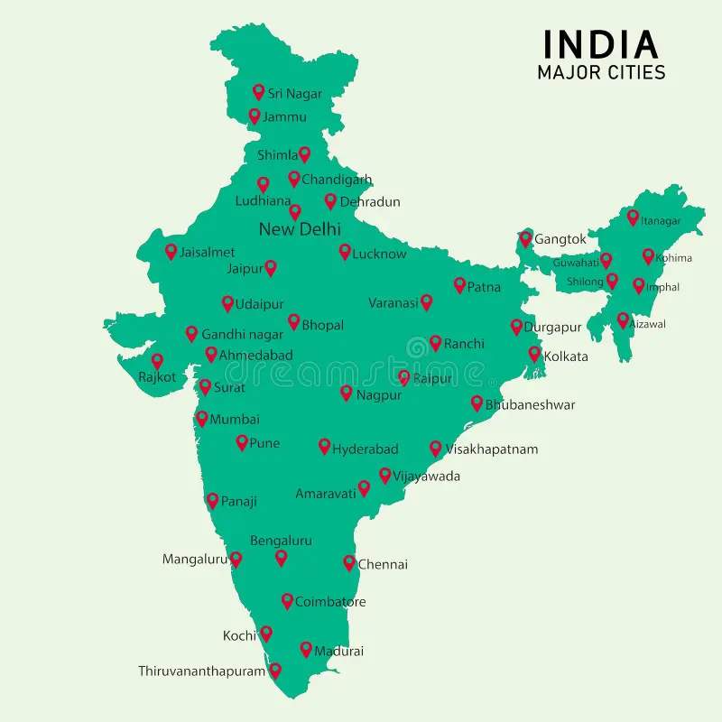
| City |
State / Region |
Latitude (°N) |
Longitude (°E) |
| New Delhi | Delhi (NCT) | 28.6139 | 77.2090 |
| Mumbai | Maharashtra | 19.0760 | 72.8777 |
| Kolkata | West Bengal | 22.5726 | 88.3639 |
| Chennai | Tamil Nadu | 13.0827 | 80.2707 |
| Bengaluru | Karnataka | 12.9716 | 77.5946 |
| Hyderabad | Telangana | 17.3850 | 78.4867 |
| Pune | Maharashtra | 18.5204 | 73.8567 |
| Nagpur | Maharashtra | 21.1458 | 79.0882 |
| Ahmedabad | Gujarat | 23.0225 | 72.5714 |
| Surat | Gujarat | 21.1702 | 72.8311 |
| Vadodara | Gujarat | 22.3072 | 73.1812 |
| Rajkot | Gujarat | 22.3039 | 70.8022 |
| Jaipur | Rajasthan | 26.9124 | 75.7873 |
| Lucknow | Uttar Pradesh | 26.8467 | 80.9462 |
| Kanpur | Uttar Pradesh | 26.4499 | 80.3319 |
| Varanasi | Uttar Pradesh | 25.3176 | 82.9739 |
| Gorakhpur | Uttar Pradesh | 26.7606 | 83.3732 |
| Patna | Bihar | 25.5941 | 85.1376 |
| Bhopal | Madhya Pradesh | 23.2599 | 77.4126 |
| Indore | Madhya Pradesh | 22.7196 | 75.8577 |
| Raipur | Chhattisgarh | 21.2514 | 81.6296 |
| Ranchi | Jharkhand | 23.3441 | 85.3096 |
| Guwahati | Assam | 26.1445 | 91.7362 |
| Dispur | Assam (Capital area) | 26.1433 | 91.7898 |
| Shillong | Meghalaya | 25.5788 | 91.8933 |
| Imphal | Manipur | 24.8170 | 93.9368 |
| Agartala | Tripura | 23.8315 | 91.2868 |
| Itanagar | Arunachal Pradesh | 27.0844 | 93.6053 |
| Chandigarh | Chandigarh (UT) | 30.7333 | 76.7794 |
| Dehradun | Uttarakhand | 30.3165 | 78.0322 |
| Srinagar | Jammu & Kashmir | 34.0837 | 74.7973 |
| Jammu | Jammu & Kashmir | 32.7266 | 74.8570 |
| Shimla | Himachal Pradesh | 31.1048 | 77.1734 |
| Thiruvananthapuram | Kerala | 8.5241 | 76.9366 |
| Kochi | Kerala | 9.9312 | 76.2673 |
| Coimbatore | Tamil Nadu | 11.0168 | 76.9558 |
| Madurai | Tamil Nadu | 9.9252 | 78.1198 |
| Mangaluru | Karnataka | 12.9141 | 74.8560 |
| Hubballi–Dharwad | Karnataka | 15.3647 | 75.1238 |
| Belagavi | Karnataka | 15.8497 | 74.4977 |
| Visakhapatnam | Andhra Pradesh | 17.6868 | 83.2185 |
| Vijayawada | Andhra Pradesh | 16.5062 | 80.6480 |
| Amaravati | Andhra Pradesh (Capital region) | 16.5417 | 80.5150 |
| Rajahmundry | Andhra Pradesh | 16.9891 | 81.7815 |
- Major Indian sites and cities on river banks (validated)
-
| City / Site |
River |
State / Region |
Historical / Cultural Significance |
| Harappa | Ravi | Pakistan | Major Indus Valley Civilization (IVC) site |
| Mohenjo-daro | Indus | Pakistan | Largest IVC city; Great Bath |
| Dholavira | Ghaggar–Hakra (paleo-channel) | Gujarat | UNESCO World Heritage Site; advanced water management |
| Kalibangan | Ghaggar | Rajasthan | IVC site; evidence of fire altars |
| Banawali | Ghaggar–Hakra system | Haryana | IVC site; agricultural remains |
| Rakhigarhi | Chautang (Ghaggar tributary) | Haryana | Largest IVC site in India |
| Lothal | Bhogavo (tributary of Sabarmati) | Gujarat | IVC port town; dockyard evidence |
| Varanasi | Ganga | Uttar Pradesh | One of the oldest continuously inhabited cities |
| Prayagraj | Ganga–Yamuna (Triveni Sangam) | Uttar Pradesh | Kumbh Mela site; sacred confluence |
| Patna (Pataliputra) | Ganga | Bihar | Capital of Maurya and Gupta empires |
| Kanpur | Ganga | Uttar Pradesh | Major industrial city; 1857 Revolt center |
| Kolkata | Hooghly (Ganga distributary) | West Bengal | Capital of British India till 1911 |
| Murshidabad | Bhagirathi | West Bengal | Former Nawabi capital of Bengal |
| Hastinapur | Ganga (ancient course) | Uttar Pradesh | Capital of Kuru kingdom (Mahabharata) |
| Delhi | Yamuna | Delhi (NCT) | Capital of Sultanate, Mughal & British India |
| Mathura | Yamuna | Uttar Pradesh | Birthplace of Lord Krishna |
| Agra | Yamuna | Uttar Pradesh | Mughal capital; Taj Mahal |
| Hampi | Tungabhadra | Karnataka | Capital of Vijayanagara Empire; UNESCO site |
| Hyderabad | Musi | Telangana | Qutb Shahi and Nizam heritage |
| Nashik | Godavari | Maharashtra | Kumbh Mela site |
| Trimbakeshwar | Godavari (origin) | Maharashtra | Jyotirlinga; source of Godavari |
| Ujjain | Kshipra | Madhya Pradesh | Mahakaleshwar Jyotirlinga; Simhastha Kumbh |
| Vadodara | Vishwamitri | Gujarat | Gaekwad dynasty capital |
| Srinagar | Jhelum | Jammu & Kashmir | Ancient city; Mughal gardens |
| Leh | Indus | Ladakh | Buddhist center; Silk Route town |
| Amritsar | Beas–Ravi river system | Punjab | Golden Temple; Sikh religious center |
| Jalandhar | Beas | Punjab | Ancient trade and cultural town |
- India – location
- Introduction to India's location
-
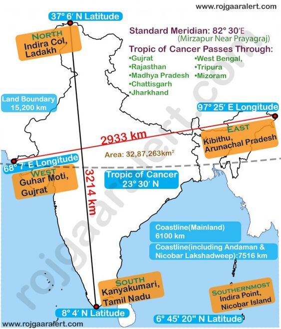
-
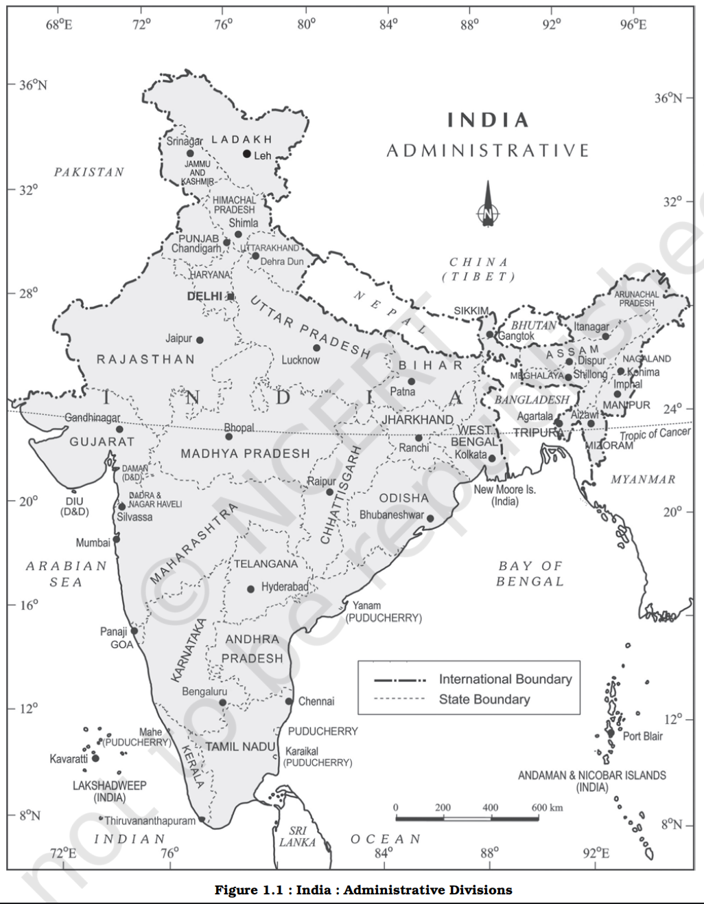
- Overview
- The mainland of India, extends from Kashmir in the north to Kanniyakumari in the south and Arunachal Pradesh in the east to Gujarat in the west
- India’s territorial limit further extends towards the sea upto 12 nautical miles (about 21.9 km) from the coast (See the box for conversion)
- Conversion table
-
| Statute [law / regulation] Mile |
Nautical [naval] Mile |
| A unit of distance used on land, based on the imperial system of measurement. |
A unit of distance used in marine and air navigation, defined by the Earth's geometry.
Here minute doesn't mean time, but it is a subunit of degree, 1 degree = 60 minute, 1 minute = 60 seconds. |
| 1 Statute Mile = about 1.6 km (1.609 km) |
- 1 nautical mile = length of one minute of latitude along any meridian of the Earth.
- The Earth is divided into 360 degrees of latitude
- Each degree is divided into 60 minutes
- Total minutes from Equator to Pole
- 90 degrees × 60 minutes = 5,400 minutes
- Distance from Equator to Pole ≈ 10,000 km
- Therefore
- 10,000 km ÷ 5,400 ≈ 1.852 km
-
Hence
- 1 nautical mile = 1.852 kilometres
|
| Used in land transport, surveying, and road maps. |
Used in global positioning, navigation charts, and aviation routes. |
- Latitudinal and longitudinal extent
- If you work out the latitudinal and longitudinal extent of India, they are roughly about 30 degrees, whereas the actual distance measured from north to south extremity is 3,214 km, and that from east to west is only 2,933 km
- This difference is based on the fact that the distance between two longitudes decreases towards the poles whereas the distance between two latitudes remains the same everywhere
- Latitude extent
- Our southern boundary extends upto 6°45' N latitude in the Bay of Bengal
- From the values of latitude, it is understood that the southern part of the country lies within the tropics and the northern part lies in the sub-tropical zone or the warm temperate zone
- This location is responsible for large variations in land forms, climate, soil types and natural vegetation in the country
- Longitudinal extent
- From the values of longitude, it is quite discernible that there is a variation of nearly 30 degrees, which causes a time difference of nearly two hours between the easternmost and the westernmost parts of our country
- Timezone
- You are familiar with the concept of Indian Standard Time (IST)
- While the sun rises in the northeastern states about two hours earlier as compared to Jaisalmer, the watches in Dibrugarh, Imphal in the east and Jaisalmer, Bhopal or Chennai in the other parts of India show the same time
- Why does this happen?
- There is a general understanding among the countries of the world to select the standard meridian in multiples of 7°30' of longitude
- That is why 82°30' E has been selected as the ‘standard meridian’ of India
- Indian Standard Time is ahead of Greenwich Mean Time by 5 hours and 30 minutes
- There are some countries where there are more than one standard meridian due to their vast east-to-west extent
- For example, the USA has seven time zones
- Name a few places in India through which the standard meridian passes?
- The Indian Standard Meridian (82.5° E) passes through Mirzapur in Mirzapur district of Uttar Pradesh, and then through the states of Madhya Pradesh, Chhattisgarh, Odisha, and Andhra Pradesh.
-
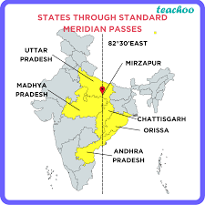
-
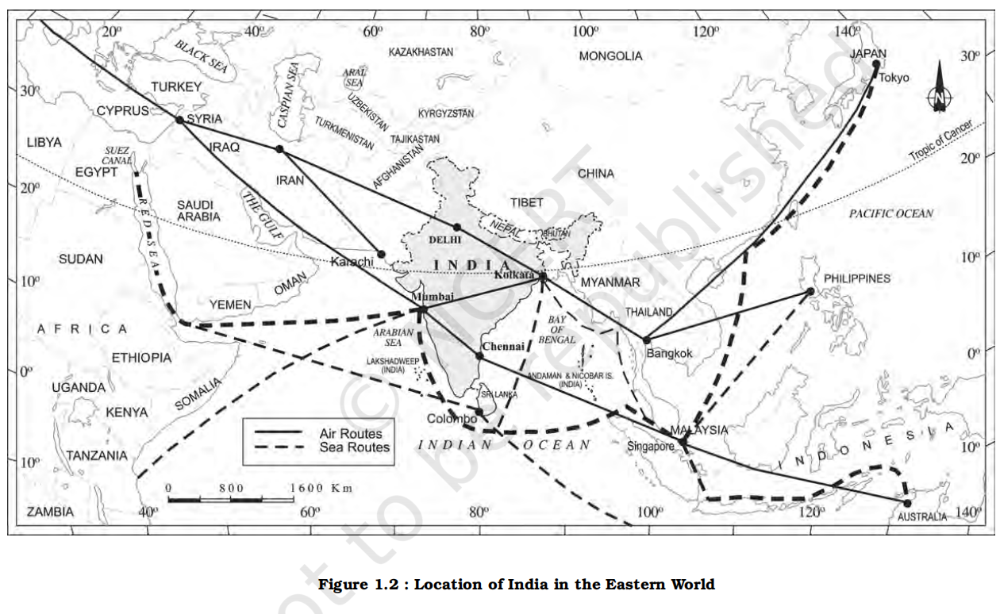
- India's size and ranking
- India with its area of 3.28 million sq. km accounts for 2.4 per cent of the world’s land surface area and stands as the seventh largest country in the world
- Top 10 countries with size
-
| Rank |
Country |
Area (sq km) |
Continent |
Notable Geographical Fact |
| 1 |
Russia |
17,098,242 |
Europe & Asia |
Largest country in the world; spans 11 time zones |
| 2 |
Canada |
9,984,670 |
North America |
Has the longest coastline in the world |
| 3 |
China |
9,596,961 |
Asia |
Largest country entirely in Asia |
| 4 |
United States |
9,525,067 |
North America |
Includes Alaska, making it the 4th largest |
| 5 |
Brazil |
8,515,767 |
South America |
Largest country in South America and the Amazon basin |
| 6 |
Australia |
7,692,024 |
Oceania |
Only country that is also a continent |
| 7 |
India |
3,287,263 |
Asia |
7th largest country and second most populous |
| 8 |
Argentina |
2,780,400 |
South America |
Largest Spanish-speaking country by area |
| 9 |
Kazakhstan |
2,724,900 |
Asia |
Largest landlocked country |
| 10 |
Algeria |
2,381,741 |
Africa |
Largest country in Africa |
- India has less land yet similar population to China
- Although China is geographically larger, only about 12–15% of its land is habitable
- With nearly 30% occupied by deserts (Gobi and Taklamakan)
- Around 25–30% by high mountains and the Tibetan Plateau, and additional areas under cold or arid conditions
- Whereas India has nearly 55–60% habitable land, with only about 10–12% desert (Thar), ~15–18% mountains and highlands (Himalayas and allied ranges), and limited permanently ice-covered areas, making India far more suitable for dense human settlement.
- Size
- Physical diversity
- The size of India has endowed her with great physical diversity like
- The presence of lofty mountains in the north
- Large rivers such as Ganga, Brahmaputra, Mahanadi, Krishna, Godavari and Kaveri
- Green forested hills in northeast and south India
- The vast sandy expanse of Marusthali
- Bounded by the Himalayas in the north
- Hindukush and Sulaiman ranges in the northwest
- Purvachal hills in the north-east
- By the large expanse of the Indian ocean in the south
- It forms a great geographic entity known as the Indian subcontinent
-
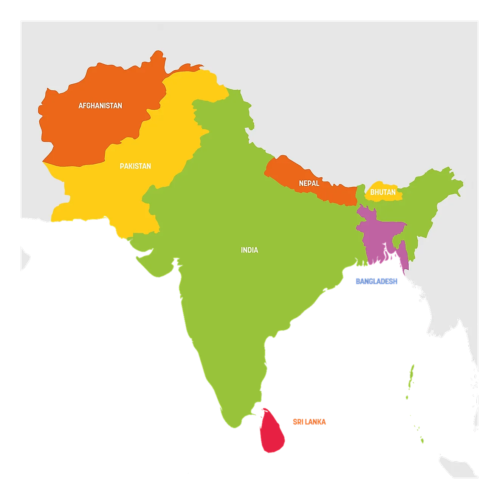
- It includes the countries — Pakistan, Nepal, Bhutan, Bangladesh and India
- Barriers to entry in subcontinent
- The Himalayas, together with other ranges, have acted as a formidable physical barrier in the past
- Except for a few mountain passes such as the Khyber, the Bolan, the Shipkila, the Nathula, the Bomdila, etc. it was difficult to cross it
- It has contributed towards the evolving of a unique regional identity of the Indian subcontinent
- By referring to the physical map of India you can now describe the physical variations which you would come across while travelling from Kashmir to Kanniyakumari and from Jaisalmer in Rajasthan to Imphal in Manipur
- Coastline
-
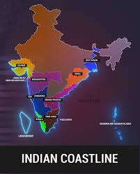
- Peninsular part of India extends towards the Indian Ocean
- This has provided the country with a coastline of 6,100 km in the mainland and 7,517 km in the entire geographical coast of the mainland plus the island groups Andaman and Nicobar located in the Bay of Bengal and the Lakshadweep in the Arabian Sea
- India’s total coastline has been recalculated as 11,098.81 kilometres, up from the long-used figure of 7,516.6 km.
- New measurements use higher resolution data and modern GIS tools, capturing intricate shoreline details and offshore island coastlines, hence the increase of nearly 48 per cent.
- Thus India, as a country, is a physically diverse land providing occurrence of varied resources
- Bhuvan-NRSC
- School Bhuvan NCERT is a portal providing map-based learning to bring awareness among the students about country’s natural resources, environment and their role in sustainable development
- It is an initiative of Bhuvan-NRSC/ISRO, based on NCERT syllabus
- India and its neighbours
- Location and maritime links
- India is located in the south-central part of the continent of Asia, bordering the Indian ocean and its two arms extending in the form of Bay of Bengal and the Arabian Sea
- This maritime location of Peninsular India has provided links to its neighbouring regions through the sea and air routes
- Neighbours
-
| Neighbour Type |
Country |
Border Length with India |
Geographical Details |
Important Border/Line |
Remarks |
| Land Neighbours |
Afghanistan |
106 km |
In Gilgit-Baltistan region (PoK- part of Ladkh UT) |
Durand Line (with Pakistan) |
India claims this area; currently under Pakistani control |
| Pakistan |
3,323 km |
Western border (Jammu & Kashmir and Ladakh (UTs), Punjab, Rajasthan, Gujarat) |
Radcliffe Line |
Ceasefire Line (LoC) exists in J&K; PoK is under illegal occupation |
| China |
3,488 km |
Northern border (Ladakh, HP, Uttarakhand, Sikkim, Arunachal) |
McMahon Line (eastern sector) |
Border disputes in Aksai Chin and Arunachal Pradesh |
| Nepal |
1,751 km |
Uttarakhand, UP, Bihar, WB, Sikkim |
— |
Disputed areas: Kalapani, Lipulekh, Limpiyadhura |
| Bhutan |
699 km |
Sikkim, Arunachal Pradesh, West Bengal, Assam |
— |
Peaceful relations; strategic partner against Chinese influence |
| Bangladesh |
4,096 km |
Longest land border (WB, Assam, Meghalaya, Tripura, Mizoram) |
— |
Land Boundary Agreement signed in 2015 resolved most disputes |
| Myanmar |
1,643 km |
Arunachal Pradesh, Nagaland, Manipur, Mizoram |
— |
Important for India's Act East Policy and NE insurgency control |
| Island Neighbours |
Sri Lanka |
— |
Separated by Palk Strait and Gulf of Mannar |
— |
Connected historically by Adam’s Bridge (Ram Setu) |
| Maldives |
— |
Southwest of India across Lakshadweep Sea |
— |
Strategic importance in Indian Ocean Region (IOR) |
- Structure and physiography
- Introduction to earth's geological history
- The earth and its landforms that we see today have evolved over a very long time
- Current scientific estimation shows that the Earth is approximately 4.54 billion years old
- Over these long years, it has undergone many changes brought about primarily by the endogenic and exogenic forces
- These forces have played a significant role in giving shape to various surface and subsurface features of the earth
- You have already studied about the Plate Tectonics and the movement of the Earth’s plates in the book Fundamentals of Physical Geography (NCERT, 2006)
- The Indian plate was to the south of the equator millions of years ago
- It was much larger in size and the Australian plate was a part of it
- Over millions of years, this plate broke into many parts and the Australian plate moved towards the southeastern direction and the Indian plate to the north
- This northward movement of the Indian plate is still continuing and it has significant consequences on the physical environment of the Indian subcontinent
- Geological divisions of India
- It is primarily through the interplay of these endogenic and exogenic forces and lateral movements of the plates that the present geological structure and geomorphologic processes active in the Indian subcontinent came into existence
- Based on the variations in its geological structure and formations, India can be divided into three geological divisions. These geological regions broadly follow the physical features:
1. The Peninsular Block
-
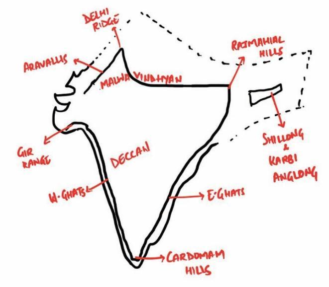
- Geographic Extent
- The northern boundary of the Peninsular Block may be taken as an irregular line running from Kachchh along the western flank of the Aravali Range near Delhi and then roughly parallel to the Yamuna and the Ganga as far as the Rajmahal Hills and the Ganga delta
- Apart from these, the Karbi Anglong and the Meghalaya Plateau in the northeast and Rajasthan in the west are also extensions of this block
- The northeastern parts are separated by the Malda fault in West Bengal from the Chotanagpur plateau
- In Rajasthan, the desert and other desert–like features overlay this block
- Geological characteristics
- The Peninsula is formed essentially by a great complex of very ancient gneisses and granites, which constitutes a major part of it
- Since the Cambrian period, the Peninsula has been standing like a rigid block with the exception of some of its western coast which is submerged beneath the sea and some other parts changed due to tectonic activity without affecting the original basement
- Tectonic activity
- As a part of the Indo-Australian Plate, it has been subjected to various vertical movements and block faulting
- The rift valleys of the Narmada, the Tapi and the Mahanadi and the Satpura block mountains are some examples of it
-
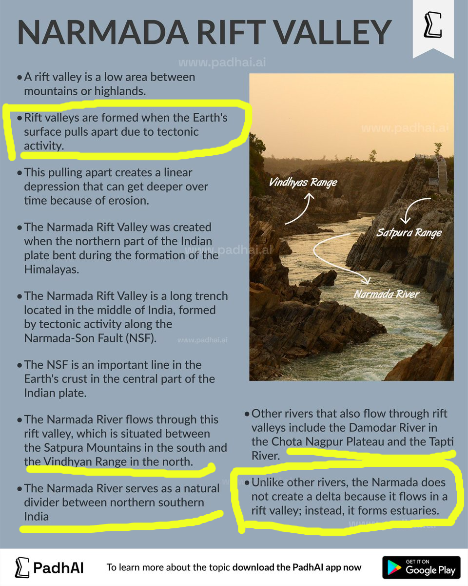
-
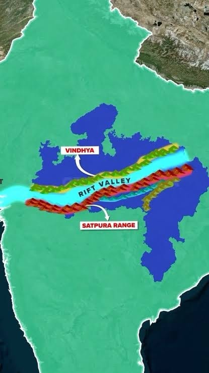
- Topography and rivers
- The Peninsula mostly consists of relict and residual mountains like the Aravali hills, the Nallamala hills, the Javadi hills, the Veliconda hills, the Palkonda range and the Mahendragiri hills, etc.
-
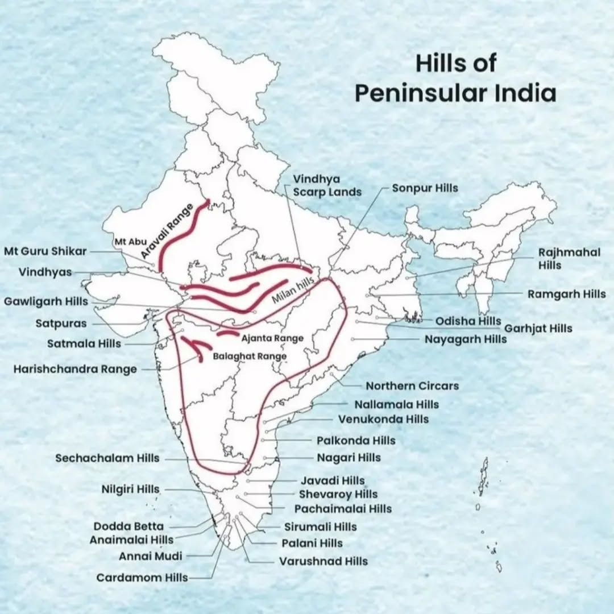
- The river valleys here are shallow with low gradients
- Most of the east flowing rivers form deltas before entering into the Bay of Bengal
- Why mostly eastern rivers and not western rivers?
- Nature of eastern coastal plains
- Broad and gently sloping plains reduce river velocity near the coast
- Reduced velocity leads to heavy deposition of sediments
- Sediment load of rivers
- Large rivers like Ganga, Godavari, Krishna, and Mahanadi drain extensive catchments
- They carry huge quantities of fine alluvium from the interior plateau and plains
- Marine conditions of the Bay of Bengal
- Weak tidal action and low wave energy as strong tides and currents prevent delta formation on west side
- Deposited sediments are not removed or redistributed significantly
- Peninsular plateu have a gentle slope from west to east
- This prevents majority of the rivers from flowing westwards and also provide gentle sloping plains to form deltas
- Coastal configuration
- Eastern coast is largely a submerged coast
- Submergence facilitates accumulation and spreading of sediments near river mouths
- Why most of the rivers in the peninsular India flows from west to east?
- General slope of the Peninsular Plateau
- Plateau slopes gently from west to east
- Western Ghats form a high escarpment on the western margin
- Eastern Ghats are lower and discontinuous
- Location of major watersheds
- Main water divide lies close to the Western Ghats
- Rivers originating near the Ghats have a longer eastward course
- Structural stability of the Peninsular Block
- Ancient and stable landmass
- No major westward sloping trough across the plateau
- Drainage evolution over geological time
- Long-term erosion reinforced eastward drainage
- Rivers adjusted to the regional slope
- Yet there are exceptions
- There are some rivers which flows from east to west, and mainly due to 2 reasons given below
- Rivers originating on the Western Ghats
- These arise on the western slope of the Western Ghats and flow directly into the Arabian Sea.
- These rivers are generally:
- Short
- Swift
- Seasonal
- Form estuaries, not deltas
- Examples (including the ones you listed):
- Periyar
- Bharathapuzha (Nila)
- Mandovi
- Zuari
- Sharavathi
- Kali
- Netravati
- Mahi (upper reaches near Vindhyas, but west-flowing)
- Sabarmati (short west-flowing river)
- Exception of river that does not originate from western ghats and still flow westward
- Luni (due to Aravalli range)
- Structurally controlled
- These are structurally controlled rivers flowing through rift valleys.
- These rivers have characteristics
- Originate in central India (Amarkantak / Satpura region)
- Flow westward due to faulting, not because of the Western Ghats
- Much longer than typical west-coast rivers
- Key examples:
- Narmada
- Tapi (Tapti)
- As a result, extensive deltas are formed along the eastern coast of India
- The deltas formed by the Mahanadi, the Krishna, the Kaveri and the Godavari are important examples
2. The Himalayas and other Peninsular Mountains
-
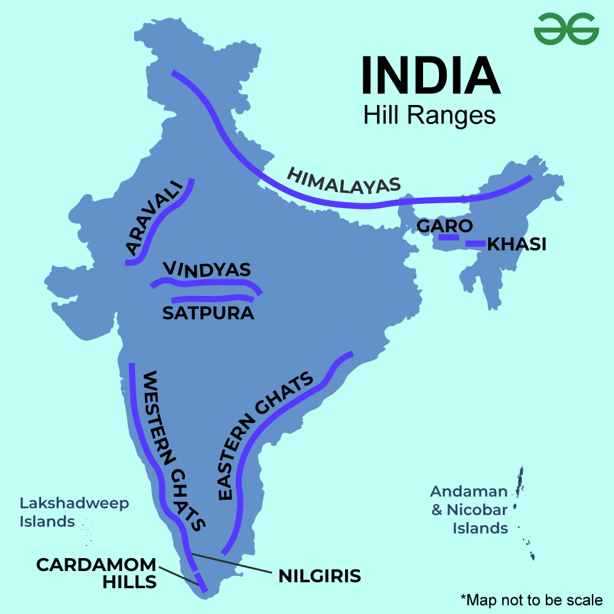
- Geological nature
- The Himalayas are young, weak, and flexible fold mountains, whereas the Peninsular mountains are part of the ancient, rigid, and stable Peninsular Block.
- Consequently, they are still subjected to the interplay of exogenic and endogenic forces, resulting in the development of faults, folds and thrust plains
- What are the characteristics of old and youthful rivers?
- Youthful rivers
- Youthful rivers are those that flow through the young and tectonically active Himalayan region, which is still undergoing uplift.
- Examples include Indus, Ganga, and Brahmaputra
- Characteristics of youthful rivers:
- They flow through the young and tectonically active Himalayan region, which is still undergoing uplift.
- Continuous uplift increases the vertical erosion capacity of rivers, a key feature of the youthful stage.
- Their courses are still adjusting to ongoing crustal movements, indicating geomorphic immaturity.
- These rivers have:
- Deep V-shaped valleys in their upper courses
- Gorges and rapids
- High erosive power
- In youthful rivers, meanders are narrow and deeply cut into the land (incised meanders) because vertical erosion dominates.
- Old rivers
- Old rivers are those that flow over geologically stable regions and have reached an advanced stage of erosion.
- Examples include Godavari, Krishna, Cauvery, Mahanadi, Narmada (mature to old in many stretches)
- Characteristics of old rivers:
- Flow over the Peninsular Plateau, which is ancient and stable
- Dominated by lateral erosion
- Wide floodplains
- In mature and old rivers, meanders are wide, open, and clearly curved (pronounced meanders) because lateral erosion dominates.
- Tectonic activity
- These mountains are tectonic in origin, dissected by fast-flowing rivers which are in their youthful stage
- Various landforms like gorges, V-shaped valleys, rapids, waterfalls, etc. are indicative of this stage
3. Indo-Ganga-Brahmaputra Plain
- Geological extent and nature
- The third geological division of India comprises the plains formed by the river Indus, the Ganga and the Brahmaputra
- Originally, it was a geo-synclinal depression which attained its maximum development during the third phase of the Himalayan mountain formation approximately about 64 million years ago
- Geo-synclinal depression is a structural depression caused by downward bending of the crust. The area keeps subsiding while sediments are deposited, allowing very thick sediment piles to form.
- Since then, it has been gradually filled by the sediments brought by the Himalayan and Peninsular rivers
- Average depth of alluvial deposits in these plains ranges from 1,000-2,000 m
- Conclusion
- It is evident from the above discussion that there are significant variations among the different regions of India in terms of their geological structure, which has far-reaching impact upon other related aspects
- Variations in the physiography and relief are important among these
- The relief and physiography of India has been greatly influenced by the geological and geomorphological processes active in the Indian subcontinent
- Physiography
-
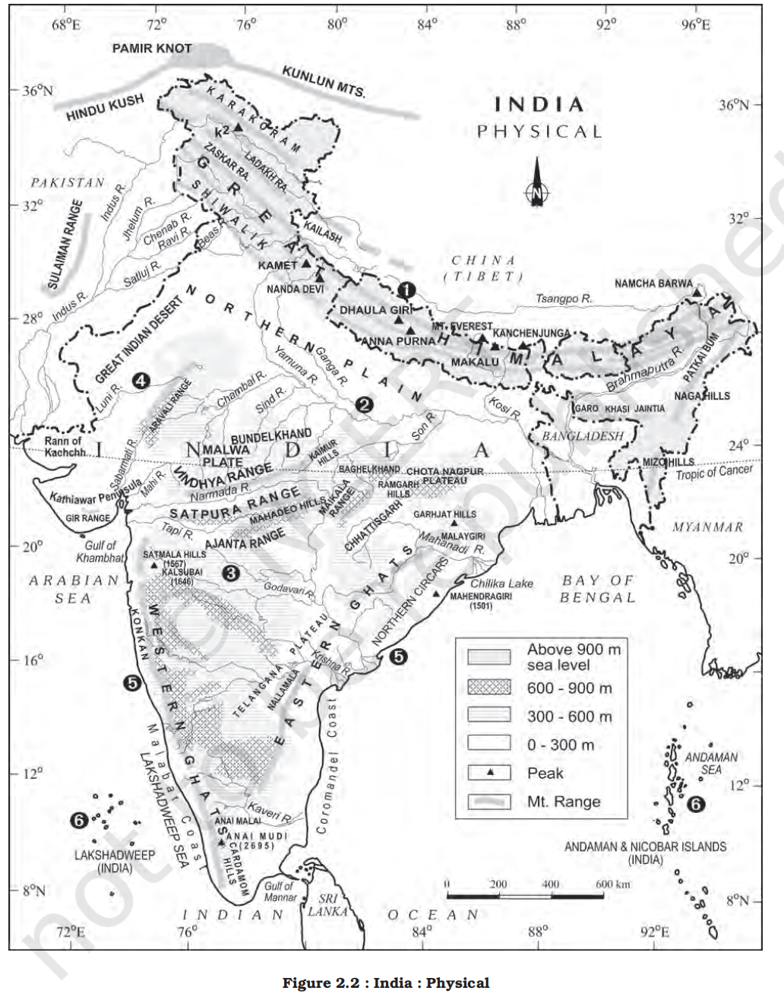
-
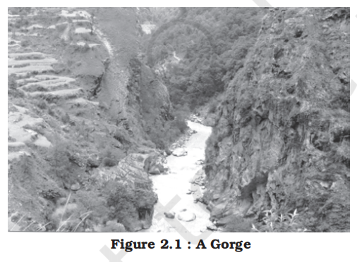
- Definition and basics
- Physiography refers to the study and description of the physical features of the Earth's surface. It includes aspects like:
- Landforms (mountains, valleys, plateaus, plains)
- Relief features
- Drainage patterns
- Soil types
- Elevation and slope
- ‘Physiography’ of an area is the outcome of structure, process and the stage of development
- The land of India is characterised by great diversity in its physical features
- The north has a vast expanse of rugged topography consisting of a series of mountain ranges with varied peaks, beautiful valleys and deep gorges
- The south consists of stable table land with highly dissected plateaus, denuded rocks and developed series of scarps
- In between these two lies the vast north Indian plain
- Based on these macro variations, India can be divided into the following physiographic divisions:
-
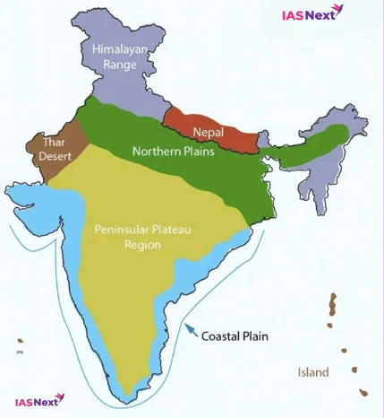
1. The Northern and Northeastern Mountains
-
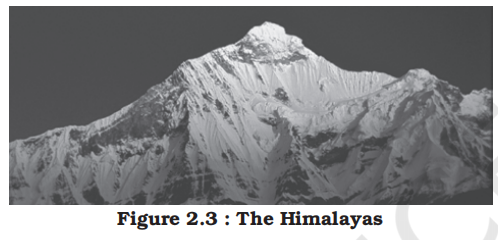
- General features
- The North and Northeastern Mountains consist of the Himalayas and the Northeastern hills
- The Himalayas consist of a series of parallel mountain ranges
- Some of the important ranges are the Greater Himalayan range, which includes the Great Himalayas and the Shiwalik
- Orientation
- The general orientation of these ranges is from northwest to the southeast direction in the northwestern part of India
- Himalayas in the Darjiling and Sikkim regions lie in an eastwest direction, while in Arunachal Pradesh they are from southwest to the northwest direction (curved)
- In Nagaland, Manipur and Mizoram, they are in the northsouth direction
- Length
- The approximate length of the Great Himalayan range, also known as the central axial range, is 2,500 km from east to west, and their width varies between 160-400 km from north to south
- Barrier nature
- It is also evident from the map that the Himalayas stand almost like a strong and long wall between the Indian subcontinent and the Central and East Asian countries
- Himalayas are not only the physical barrier, they are also a climatic, drainage and cultural divide
- Formation due to collision between Indian plate and Eurasian plate
-
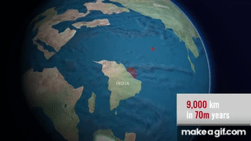
- Range division of Himalyas
-
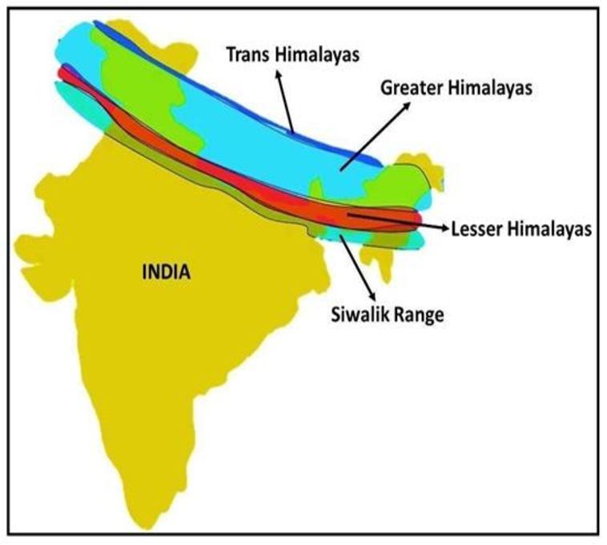
- The Himalayas are a vast mountain system that stretches across northern India and are classified into three major parallel ranges from north to south:
- Greater Himalayas (Himadri):
- This is the innermost and highest range, comprising some of the world’s tallest peaks like Mount Everest (Sagarmatha) and Kanchenjunga.
- The range remains snow-covered throughout the year and is the source of many perennial rivers such as the Ganga, Yamuna, and Indus.
- It is the most continuous of the three ranges and geologically the most ancient and stable.
- Average height around 6000 meters (19,700 feet).
- Lesser Himalayas (Himachal):
- Situated south of the Himadri, this range is lower in elevation but is marked by rugged terrain and steep slopes.
- It houses several important hill stations like Shimla, Mussoorie, and Nainital.
-
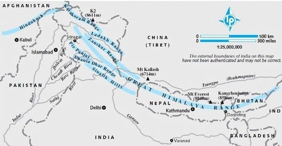
- Locally, this range is known as:
- Dhauladhar in Himachal Pradesh
- Nagtibha in Uttarakhand
- Prominent sub-ranges include:
- The Pir Panjal (longest and most important in lesser himalyas)
- Mahabharat ranges.
- It is moderately populated and agriculturally significant.
- Average height between 3000 to 4500 meters (9,800 to 14,800 feet).
- Shiwalik (Outer Himalayas):
- These are the southernmost and lowest ranges, formed from the sediments (alluvium) brought down by the rivers from the upper Himalayas.
- The term “Shiwalik” is derived from geological formations around a place named Sivawala near Dehra Dun, which was once a base of the Imperial Survey and later became the headquarters of the Geological Survey of India.
- The region is characterized by frequent landslides and erosion due to its unconsolidated nature.
- The area between the Shiwaliks and Lesser Himalayas is called the Duns (e.g., Dehra Dun, Patli Dun), known for their fertile soil and dense population.
- Average height between 900 to 1500 meters (3,000 to 5,000 feet).
- Trans-Himalyas
- Trans-Himalayas refer to the mountain ranges located north of the Great Himalayan range and primarily within the territory of Tibet and parts of northern India like Ladakh.
- The word "Trans" means beyond, so Trans-Himalayas = Beyond the Himalayas
- The Trans-Himalayas act as a bridge between the Himalayas and the Tibetan Plateau
- They are not part of the three main Himalayan ranges of the Indian Himalayan system due to:
- Geological Formation:
- Formed slightly earlier than the Himalayas.
- Have a different tectonic and lithological structure.
- Location:
- Lie mostly in Tibet, Ladakh, and northernmost parts of India.
- Located beyond the Indus River in many areas (hence also called Tibetan Himalayas sometimes).
- Climate and Topography:
- Drier, higher, and more barren than the main Himalayas.
- Home to cold desert ecosystems.
- Average height between 4500 to 6500 meters (14,800 to 21,300 feet).
- Division from west to east
-
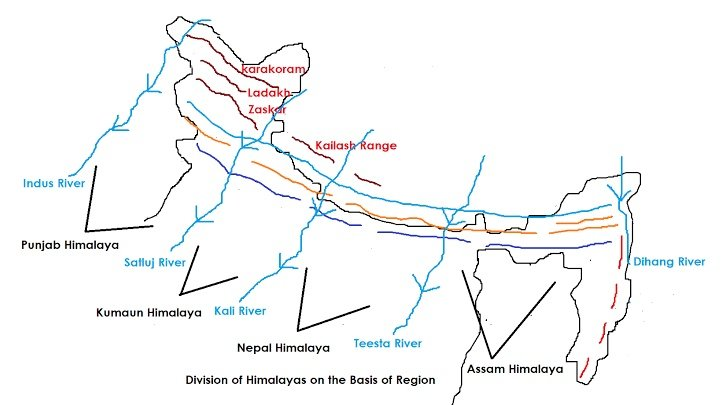
- Regional division of the Himalayas:
-
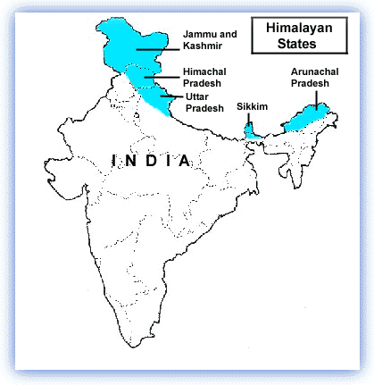
-
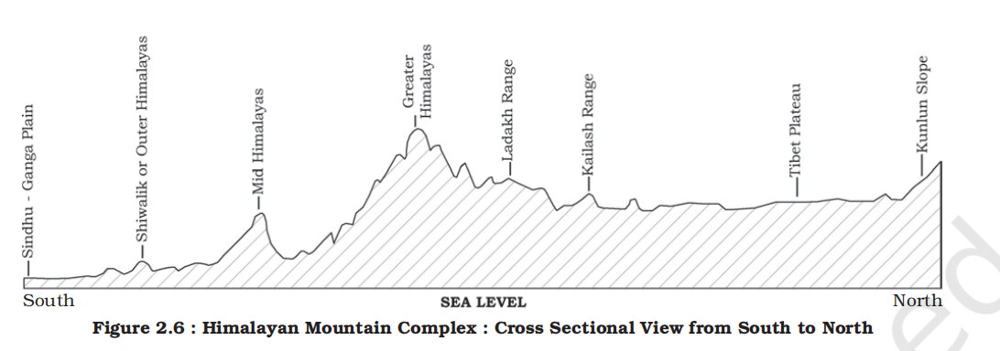
- Kashmir or Northwestern Himalayas
-
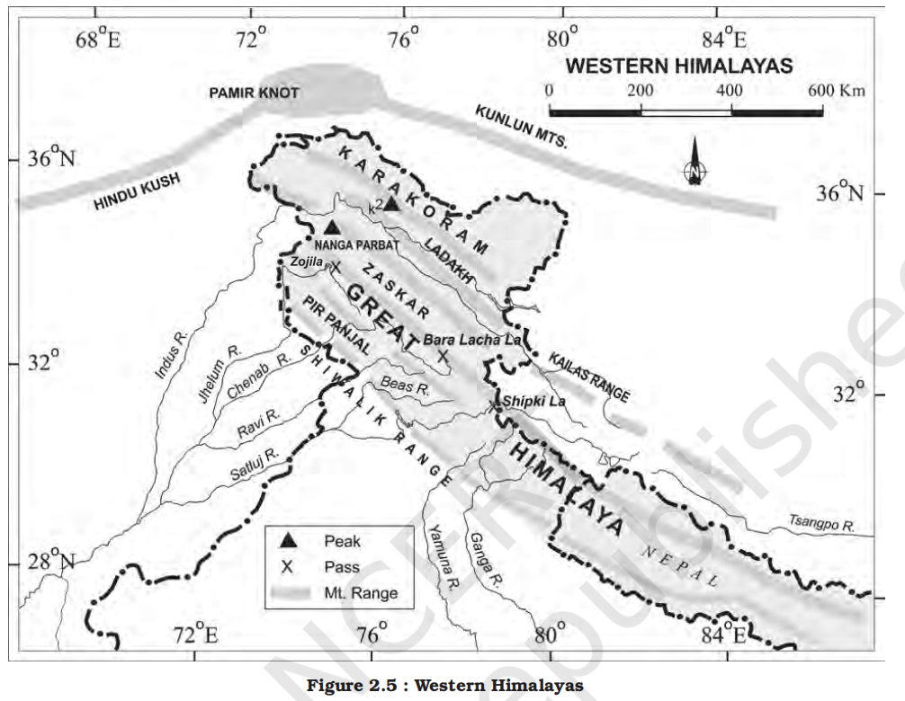
- Ranges
- It comprise a series of ranges such as the Karakoram, Ladakh, Zaskar and Pir Panjal
- Climate
- The northeastern part of the Kashmir Himalayas is a cold desert, which lies between the Greater Himalayas and the Karakoram ranges
- Between the Great Himalayas and the Pir Panjal range, lies the world famous valley of Kashmir and the famous Dal Lake
- The Kashmir Himalayas are also famous for Karewa formations, which are useful for the cultivation of Zafran, a local variety of saffron
- Glaciers
- Important glaciers of South Asia such as the Baltoro and Siachen are also found in this region
- Passes
- Some of the important passes of the region are Zoji La on the Great Himalayas, Banihal on the Pir Panjal, Photu La on the Zaskar and Khardung La on the Ladakh range
- Lakes
- Some of the important fresh lakes such as Dal and Wular and salt water lakes such as Pangong Tso and Tso Moriri are also in this region
- Dal Lake in Srinagar presents an interesting physical feature
- Rivers and drainage
- This region is drained by the river Indus, and its tributaries such as the Jhelum and the Chenab
- Srinagar, capital city of the union territory of Jammu and Kashmir is located on the banks of Jhelum river
- Jhelum in the valley of Kashmir is still in its youth stage and yet forms meanders – a typical feature associated with the mature stage in the evolution of fluvial land form (Figure 2.4)
-
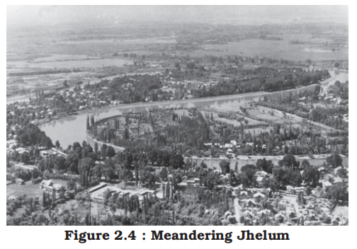
- In Kashmir Valley, the meanders in Jhelum river are caused by the local base level provided by the erstwhile larger lake of which the present Dal Lake is a small part
- Karewas:
- Karewas are the thick deposits of glacial clay and other materials embedded with moraines
- Scenic beuty
- The Kashmir and northwestern Himalayas are well-known for their scenic beauty and picturesque landscape
- The landscape of Himalayas is a major source of attraction for adventure tourists
- Some famous places of pilgrimage such as Vaishno Devi, Amarnath Cave, Charar -e-Sharif, etc. are also located here and large number of pilgrims visit these places every year
- The southernmost part of this region consists of longitudinal valleys known as ‘duns’
- Jammu dun and Pathankot dun are important examples
- The Himachal and Uttarakhand Himalayas
- Location and features
- This part lies approximately between the Ravi in the west and the Kali (a tributary of Ghaghara) in the east
- The northernmost part of the Himachal Himalayas is an extension of the Ladakh cold desert, which lies in the Spiti subdivision of district Lahul and Spiti
- All the three ranges of Himalayas are prominent in this section also
- In this section of Lesser Himalayas, the altitude between 1,000-2,000 m specially attracted to the British colonial administration
- Some of the important hill stations such as Dharamshala, Mussoorie, Shimla, Kaosani and the cantonment towns and health resorts such as Shimla, Mussoorie, Kasauli, Almora, Lansdowne and Ranikhet, etc. were developed in this region
- The two distinguishing features of this region from the point of view of physiography are the ‘Shiwalik’ and ‘Dun formations’
- Some important duns located in this region are the Chandigarh-Kalka dun, Nalagarh dun, Dehra Dun, Harike dun and the Kota dun, etc.
- Dehra Dun is the largest of all the duns with an approximate length of 35-45 km and a width of 22-25 km
- River and drainage
- It is drained by two major river systems of India, i.e. the Indus and the Ganga
- Tributaries of the Indus include the river Ravi, the Beas and the Satluj, and the tributaries of Ganga flowing through this region include the Yamuna and the Ghaghara
- Demographics
- In the Great Himalayan range, the valleys are mostly inhabited by the Bhotia’s
- These are nomadic groups who migrate to ‘Bugyals’ (the summer glasslands in the higher reaches) during summer months and return to the valleys during winters
- Famous points
- The famous ‘Valley of flowers’ is also situated in this region
- The places of pilgrimage such as the Gangotri, Yamunotri, Kedarnath, Badrinath and Hemkund Sahib are also situated in this part
- The region is also known to have five famous Prayags (river confluences) as mentioned in Chapter 3 of this book
- The Darjiling and Sikkim Himalayas
- Location and features
- They are flanked by Nepal Himalayas in the west and Bhutan Himalayas in the east
- It is relatively small but it is a significant part of the Himalayas
- As compared to the other sections of the Himalayas, these along with the Arunachal Himalayas are conspicuous [clearly visible] by the absence of the Shiwalik formations
- In place of the Shiwaliks here, the ‘duar formations’ are important, which have also been used for the development of tea gardens
- Rivers and draingage
- Known for its fast-flowing rivers such as Tista, it is a region of high mountain peaks like Kanchenjunga (Kanchengiri), and deep valleys
- Demographics
- The higher reaches of this region are inhabited by Lepcha tribes while the southern part, particularly the Darjiling Himalayas, has a mixed population of Nepalis, Bengalis and tribals from Central India
- The British, taking advantage of the physical conditions such as moderate slope, thick soil cover with high organic content, well distributed rainfall throughout the year and mild winters, introduced tea plantations in this region
- Scenic beuty
- Sikkim and Darjiling Himalayas are also known for their scenic beauty and rich flora and fauna, particularly various types of orchids
- The Arunachal Himalayas
- Extent
- These extend from the east of the Bhutan Himalayas up to the Diphu pass in the east
- The general direction of the mountain range is from southwest to northeast
- Features
- Some of the important mountain peaks of the region are Kangtu and Namcha Barwa
- These ranges are dissected [having a divided form or structure] by fast-flowing rivers from the north to the south, forming deep gorges
- Rivers and drainage
- Bhramaputra flows through a deep gorge after crossing Namcha Barwa
- Some of the important rivers are the Kameng, the Subansiri, the Dibang and the Lohit
- These are perennial [lasting or existing for a long or apparently infinite time] with the high rate of fall, thus, having the highest hydro-electric power potential in the country
- Demographics
- An important aspect of the Arunachal Himalayas is the numerous ethnic tribal community inhabiting in these areas
- Some of the prominent ones from west to east are the Monpa, Abor, Mishmi, Nyishi and the Nagas
- Most of these communities practise Jhumming
- It is also known as shifting or slash and burn cultivation
- Due to rugged topography, the inter-valley transportation linkages are nominal
- Hence, most of the interactions are carried through the duar region along the Arunachal-Assam border
- Biodiversity
- This region is rich in biodiversity which has been preserved by the indigenous communities
- The Eastern Hills and Mountains
-
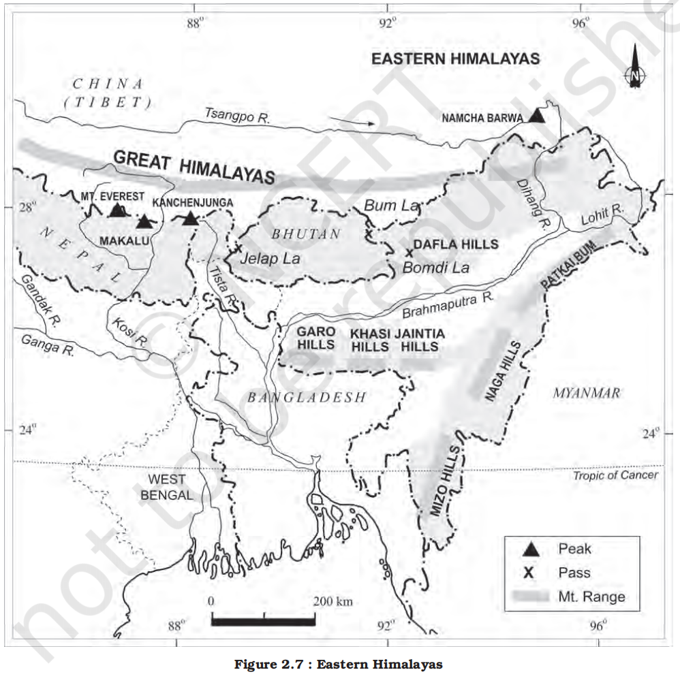
-
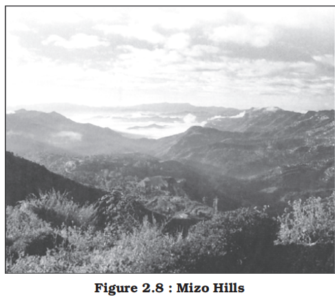
- Extend and location
- These are part of the Himalayan mountain system having their general alignment from the north to the south direction
- Names
- They are known by different local names
- In the north, they are known as Patkai Bum, Naga hills, the Manipur hills and in the south as Mizo or Lushai hills
- Features
- These are low hills, inhabited by numerous tribal groups practising Jhum cultivation
- Most of these ranges are separated from each other by numerous small rivers
- River and drainage
- The Barak is an important river in Manipur and Mizoram
- The physiography of Manipur is unique by the presence of a large lake known as ‘Loktak’ lake at the centre, surrounded by mountains from all sides
-
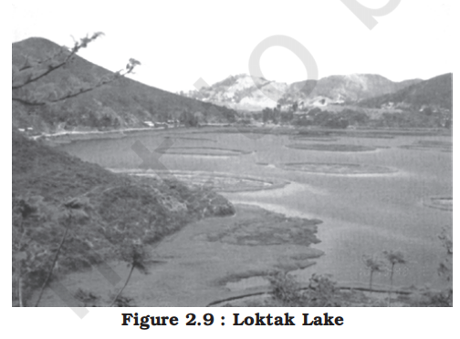
- Mizoram which is also known as the ‘Molassis basin’ which is made up of soft unconsolidated deposits
- Most of the rivers in Nagaland form the tributary of the Brahmaputra
- While two rivers of Mizoram and Manipur are the tributaries of the Barak river, which in turn is the tributary of Meghna; the rivers in the eastern part of Manipur are the tributaries of Chindwin, which in turn is a tributary of the Irrawady of Myanmar
- Some major Himalyan glaciers in India
-
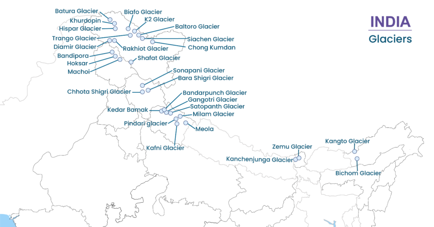
2. The Northern Plains
-
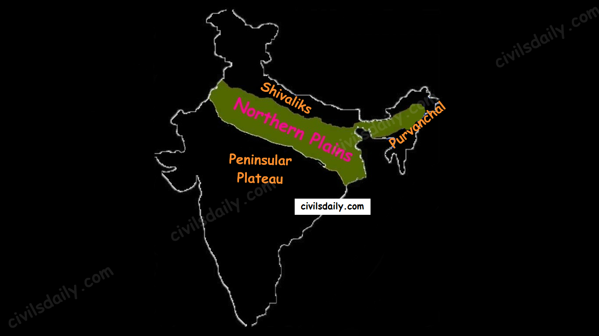
-
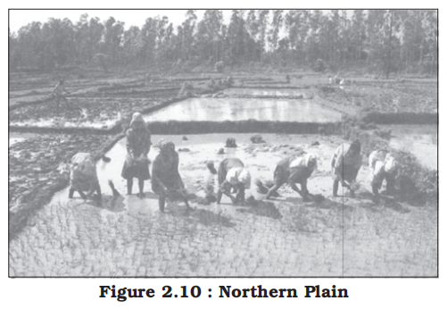
- Formation
- The northern plains are formed by the alluvial deposits brought by the rivers – the Indus, the Ganga and the Brahmaputra
- Features
- These plains extend approximately 3,200 km from the east to the west
- The average width of these plains varies between 150-300 km
- The maximum depth of alluvium deposits varies between 1,000-2,000 m
- From the north to the south, these can be divided into three major zones:
- The Bhabar
- Bhabar is a narrow belt ranging between 8-10 km parallel to the Shiwalik foothills at the break-up of the slope
- As a result of this, the streams and rivers coming from the mountains deposit heavy materials of rocks and boulders, and at times, disappear in this zone
- The Tarai
- South of the Bhabar is the Tarai belt, with an approximate width of 10-20 km where most of the streams and rivers re-emerge without having any properly demarcated channel, thereby, creating marshy and swampy conditions known as the Tarai
- This has a luxurious growth of natural vegetation and houses a varied wildlife
- The south of Tarai is a belt consisting of old and new alluvial deposits known as the Bhangar (old) and Khadar (new) respectively
- These plains have characteristic features of mature stage of fluvial erosional and depositional landforms such as sand bars, meanders, oxbow lakes and braided channels
- The alluvial plains
- The alluvial plains can be further divided into the Khadar (new) and the Bhangar (old)
- States covered
- Punjab, Haryana, Delhi, Uttar Pradesh, Bihar, West Bengal, Assam, parts of Jharkhand.
- Rivers and impact
- The Brahmaputra plains are known for their riverine islands and sand bars
- Most of these areas are subjected to periodic floods and shifting river courses forming braided streams
- The mouths of these mighty rivers also form some of the largest deltas of the world, for example, the famous Sunderbans delta
- Otherwise, this is a featureless plain with a general elevation of 50-150 m above the mean sea level
- The states of Haryana and Delhi form a water divide between the Indus and the Ganga river systems
- As opposed to this, the Brahmaputra river flows from the northeast to the southwest direction before it takes an almost 90° southward turn at Dhubri before it enters into Bangladesh
- The Brahmaputra makes a spectacular Great Bend around Namcha Barwa in Tibet due to Himalayan tectonic uplift before entering India as the Dihang.
-
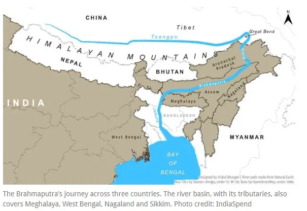
- These river valley plains have a fertile alluvial soil cover which supports a variety of crops like wheat, rice, sugarcane and jute, and hence, supports a large population
- Division based on rivers
- Punjab Plains (Indus system)
- Ganga Plains (largest)
- Brahmaputra Plains
3. The Peninsular Plateau
-
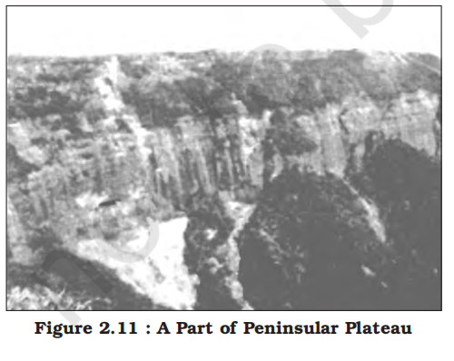
- Extent and Features
- Rising from the height of 150 m above the river plains up to an elevation of 600-900 m is the irregular triangle known as the Peninsular plateau
- Delhi ridge in the northwest, (extension of Aravalis), the Rajmahal hills in the east, Gir range in the west and the Cardamom hills in the south constitute the outer extent of the Peninsular plateau
- However, an extension of this is also seen in the northeast, in the form of Shillong and Karbi-Anglong plateau
- The Peninsular Plateau does not vanish; it submerges beneath the alluvium of the Indo-Gangetic Plain and then reappears in the north-east as detached blocks due to faulting and subsidence.
- This is one of the oldest and the most stable landmass of India
- The general elevation of the plateau is from the west to the east, which is also proved by the pattern of the flow of rivers
- Patland plateaus
- Patlands plateaus, or "high-level plateaus," are regional types of the Peninsular Plateau in India, specifically referring to lava-capped mesas with flat-topped surfaces.
- These plateaus are characterized by their even surface and height, typically around 1000 meters (3300 ft) above ground level. Examples include the Chhotanagpur Plateau.
- The Peninsular India is made up of a series of patland plateaus such as:
- The Hazaribagh plateau
- The Palamu plateau
- The Ranchi plateau
- The Malwa plateau
- The Coimbatore plateau
- The Karnataka plateau,
- etc.
- Physiographic features
- Some of the important physiographic features of this region are tors, block mountains, rift valleys, spurs, bare rocky structures, series of hummocky hills and wall-like quartzite dykes offering natural sites for water storage
- The western and northwestern part of the plateau has an emphatic presence of black soil
- Past changes
- This Peninsular plateau has undergone recurrent phases of upliftment and submergence accompanied by crustal faulting and fractures
- The Bhima fault needs special mention, because of its recurrent seismic activities
- Impact
- These spatial variations have brought in elements of diversity in the relief of the Peninsular plateau
- The northwestern part of the plateau has a complex relief of ravines and gorges
- The ravines of Chambal, Bhind and Morena are some of the well-known examples
- On the basis of the prominent relief features, the Peninsular plateau can be divided into three broad groups:
-
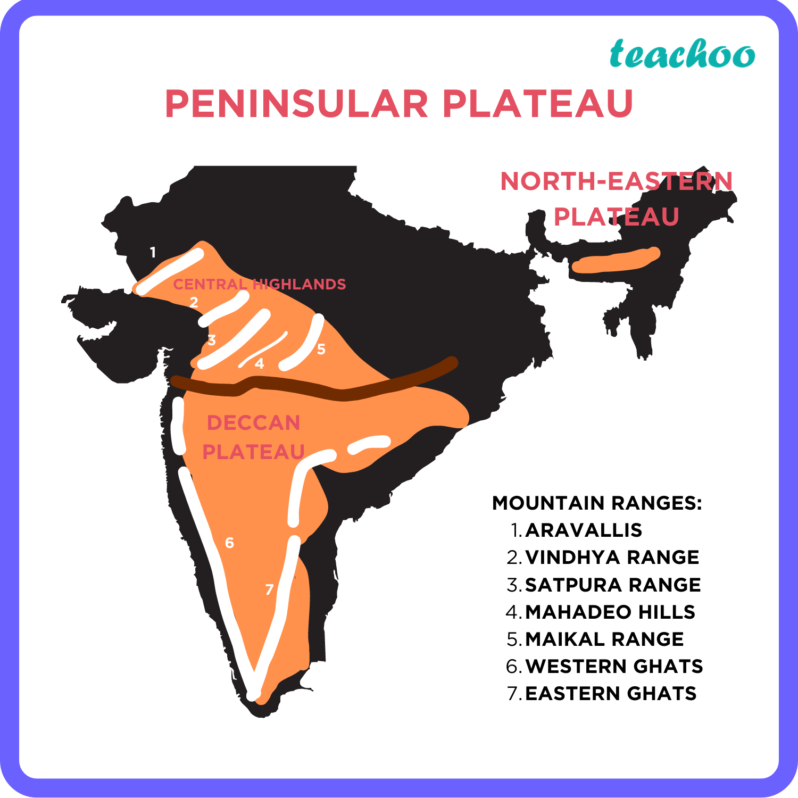
1. The Deccan Plateau
- Location and extent
- This is bordered by the Western Ghats in the west, Eastern Ghats in the east and the Satpura, Maikal range and Mahadeo hills in the north
- The Eastern and the Western Ghats meet each other at the Nilgiri hills
-
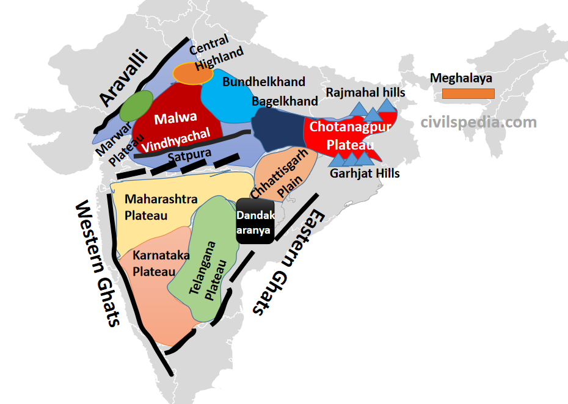
- Sub-division:
- Western Ghats (Sahyadri Hills)
- Western Ghats are locally known by different names such as Sahyadri in Maharashtra, Nilgiri hills in Karnataka and Tamil Nadu and Anaimalai hills and Cardamom hills in Kerala
- Western Ghats are comparatively higher in elevation and more continuous than the Eastern Ghats
- Their average elevation is about 1,500 m with the height increasing from north to south
- ‘Anaimudi’ (2,695 m), the highest peak of Peninsular plateau is located on the Anaimalai hills of the Western Ghats followed by Dodabetta (2,637 m) on the Nilgiri hills
-
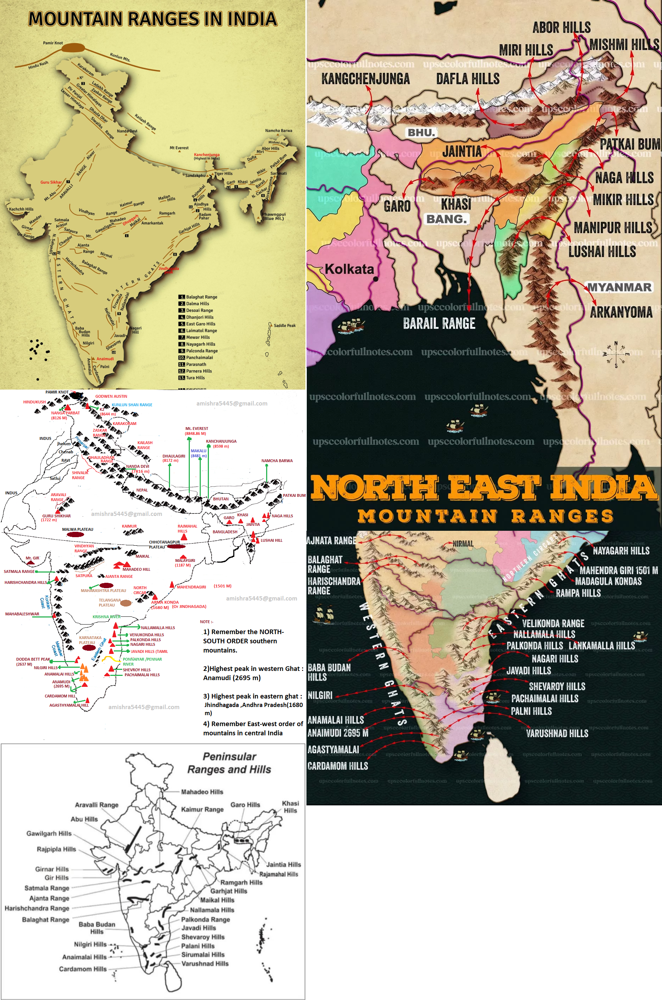
- Most of the Peninsular rivers have their origin in the Western Ghats
- Western ghats runs parallel to the western coast from Maharashtra to Kerala.
- Highest peaks reach around 2,695 m (Anaimudi in Kerala).
- Rich in biodiversity and receives heavy monsoon rainfall.
- Important for rivers like Godavari, Krishna, and Cauvery which originate here.
- Eastern Ghats
- Eastern Ghats comprising the discontinuous and low hills are highly eroded by the rivers such as the Mahanadi, the Godavari, the Krishna, the Kaveri, etc.
- Some of the important ranges include the Javadi hills, the Palconda range, the Nallamala hills, the Mahendragiri hills, etc.
-
- Discontinuous range running from Odisha through Andhra Pradesh to Tamil Nadu.
- Average height around 600–1,200 m.
- Arma Konda (also known as Jindhagada Peak) is the highest peak approximately 1,690 meters (5,545 feet)
- Mahendragiri (second highest peak) is often confused with highest peak and was traditionally considered the highest because of its mythological and cultural prominence (e.g., associated with Parashurama and Ramayana).
- Less elevated and more eroded than Western Ghats.
- Rivers like Mahanadi, Godavari, Krishna flow through gaps here.
- Maharashtra Plateau
- Part of the interior plateau in western Maharashtra.
- Characterized by Deccan basaltic lava flows.
- Average elevation around 600–900 m.
- Karnataka Plateau
- Located in the southern interior Deccan.
- Includes regions of Mysore and Bangalore.
- Composed mainly of volcanic basalt rock.
- Average elevation about 600–900 m.
- It is divided into two parts Maldan (hilly) and Maidan (plain)
- Telangana Plateau
- Lies between the Eastern and Western Ghats in Telangana and parts of Andhra Pradesh.
- Features undulating terrain with some hill ranges.
- Elevation varies around 300–600 m.
- Malwa Plateau
- Northern fringe of the Deccan Plateau in Madhya Pradesh.
- Known for fertile black soils and agriculture.
- Average height about 500–600 m.
- Chhota Nagpur Plateau
- Northeastern part, mainly Jharkhand.
- Rich in minerals and forest cover.
- Average height about 700–1,100 m.
- Satpura Range
- Runs east-west, south of the Narmada valley.
- Acts as a watershed between Narmada and Tapi rivers.
- Average elevation around 1,200 m.
- Vindhya Range
- Lies north of the Narmada valley.
- Often considered the northern boundary of the Deccan Plateau.
- Average elevation around 300–600 m.
2. The Central Highlands
- Location and extent
- They are bounded to the west by the Aravali range
- The Satpura range is formed by a series of scarped plateaus on the south, generally at an elevation varying between 600-900 m above the mean sea level
-
- This forms the northernmost boundary of the Deccan plateau
- It is a classic example of the relict mountains which are highly denuded and form discontinuous ranges
- The extension of the Peninsular plateau can be seen as far as Jaisalmer in the West, where it has been covered by the longitudinal sand ridges and crescent-shaped sand dunes called barchans
- An eastern extension of the Central Highland is formed by the Rajmahal hills, to the south of which lies a large reserve of mineral resources in the Chotanagpur plateau
- Past events
- This region has undergone metamorphic processes in its geological history, which can be corroborated [confirm or give support to] by the presence of metamorphic rocks such as marble, slate, gneiss, etc.
- Features
- The general elevation of the Central Highlands ranges between 700-1,000 m above the mean sea level and it slopes towards the north and northeastern directions
- River and drainage
- Most of the tributaries of the river Yamuna have their origin in the Vindhyan and Kaimur ranges
- Banas is the only significant tributary of the river Chambal that originates from the Aravalli in the west
3. The Northeastern Plateau
- Extend and location
- In fact it is an extension of the main Peninsular plateau
- An extension of this is also seen in the Karbi Anglong hills of Assam
- Formation
- It is believed that due to the force exerted by the northeastward movement of the Indian plate at the time of the Himalayan origin, a huge fault was created between the Rajmahal hills and the Meghalaya plateau
- Later, this depression got filled up by the deposition activity of the numerous rivers
- Today, the Meghalaya and Karbi Anglong plateau stand detached from the main Peninsular Block
- The Meghalaya plateau is further sub-divided into three (named after the tribal groups inhabiting this region):
1. The Garo Hills
2. The Khasi Hills
3. The Jaintia Hills
-
- Mineral resources
- Similar to the Chotanagpur plateau, the Meghalaya plateau is also rich in mineral resources like coal, iron ore, sillimanite, limestone and uranium
- Rainfall and impact
- This area receives maximum rainfall from the south west monsoon
- As a result, the Meghalaya plateau has a highly eroded surface
- Cherrapunji displays a bare rocky surface devoid of any permanent vegetation cover
4. The Indian Desert
-
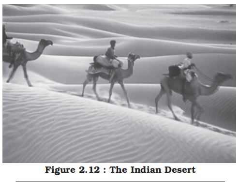
-
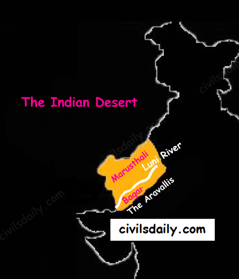
- Location and extend
- To the northwest of the Aravali hills lies the Great Indian desert
- Though the underlying rock structure of the desert is an extension of the Peninsular plateau, yet, due to extreme arid conditions, its surface features have been carved by physical weathering and wind actions
- General features
- It is a land of undulating [having a smoothly rising and falling form] topography dotted with longitudinal dunes and barchans
- This region receives low rainfall below 150 mm per year; hence, it has arid climate with low vegetation cover
- It is because of these characteristic features that this is also known as Marusthali
- Some of the well pronounced desert land features present here are mushroom rocks, shifting dunes and oasis (mostly in its southern part)
- Historical data
- It is believed that during the Mesozoic era, this region was under the sea
- This can be corroborated [confirm or give support to] by the evidence available at wood fossils park at Aakal and marine deposits around Brahmsar, near Jaisalmer (The approximate age of the woodfossils is estimated to be 180 million years)
- On the basis of the orientation, the desert can be divided into two parts:
a. The northern part is sloping towards Sindh
b. The southern towards the Rann of Kachchh
- River and drainage
- Most of the rivers in this region are ephemeral [lasting for a very short time]
- The Luni river flowing in the southern part of the desert is of some significance
- Low precipitation and high evaporation makes it a water deficit region
- There are some streams which disappear after flowing for some distance and present a typical case of inland drainage by joining a lake or playa
- The lakes and the playas have brackish water which is the main source of obtaining salt
5. The Coastal Plains
-
-
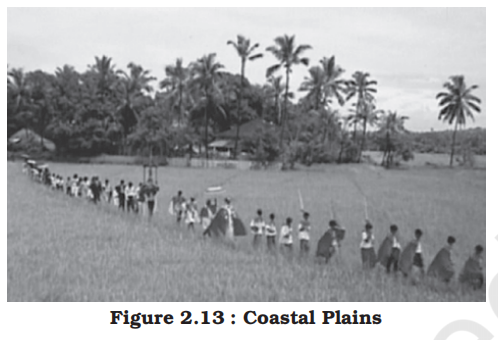
- Coastal plains are flat, low-lying land adjacent to a sea or ocean. They are formed by a combination of factors, including deposition of sediment by rivers and waves, and the slow subsidence or gradual lowering of the land.
- India, with its extensive coastline, has distinct coastal plains on both its eastern and western sides.
- On the basis of the location and active geomorphological processes, it can be broadly divided into two:
1. The western coastal plains
- Extent and location
-
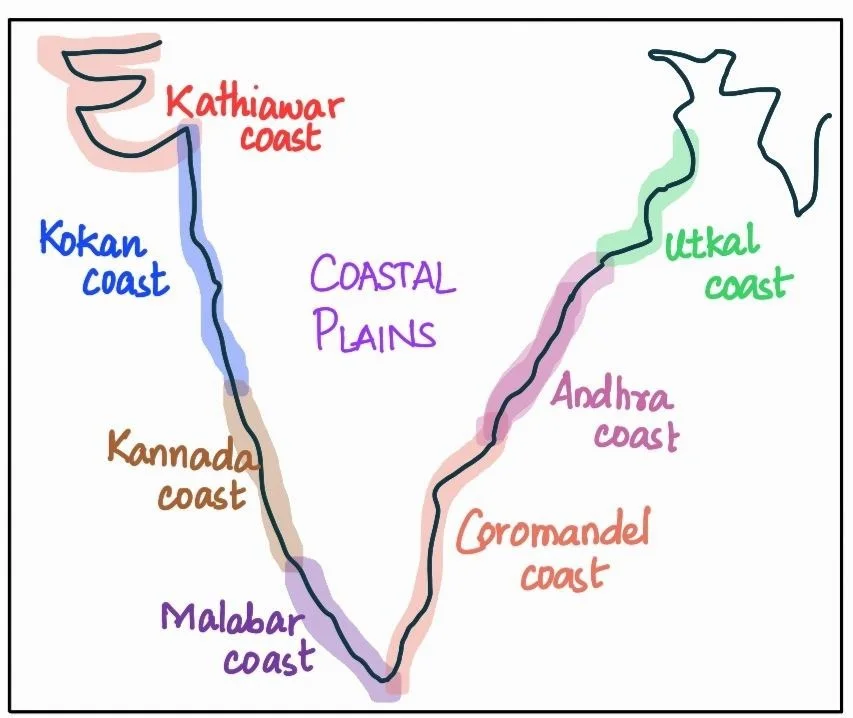
- Extending from the Gujarat coast in the north to the Kerala coast in the south, the western coast may be divided into following divisions
- The Kachchh and Kathiawar coast in Gujarat
- Konkan coast in Maharashtra and Goa
- Malabar coast in Karnataka and Kerala
- The Karnataka portion of the Malabar Coast is often called the Kannada (Canara) Coast.
- The western coastal plains are narrow in the middle and get broader towards north and south
- General features and extent
- The western coastal plains are an example of submerged coastal plain
- A submerging coast is one where sea level rises relative to the land or the land subsides, causing the sea to advance inland.
- A submerging coast is formed when land subsides or sea level rises, resulting in drowned river valleys, estuaries, and backwaters
- The rivers flowing through this coastal plain do not form any delta
- The Malabar coast has got certain distinguishing features in the form of ‘Kayals’ (backwaters), which are used for fishing, inland navigation and also due to its special attraction for tourists
-
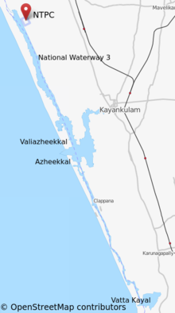
- Kayals are shallow lagoons or backwaters lying parallel to the coast.
- They are formed where:
- Sand bars / spits separate parts of the sea from the mainland.
- Freshwater rivers mix with seawater, creating brackish conditions.
- Vembanad Kayal located on the malabar coast of Kerala is the largest backwater in India
- Historical data
- It is believed that the city of Dwaraka which was once a part of the Indian mainland situated along the west coast is submerged under water
- Because of this submergence it is a narrow belt and provides natural conditions for the development of ports and harbours
- Ports
- Kandla, Mazagaon, JLN port Navha Sheva, Marmagao, Mangalore, Cochin, etc. are some of the important natural ports located along the west coast
- Human activity
- Every year the famous Nehru Trophy Vallamkali (boat race) is held in Punnamada Kayal in Kerala
2. The eastern coastal plains
- Extend and location
-
- As compared to the western coastal plain, the eastern coastal plain is broader and extending from West Bengal, covering Odisha, Andhra Pradesh to Tamil Nadu in the south.
- Divided into the following parts:
- Northern Circars
- Extends from the Mahanadi delta to the Krishna delta
- Covers coastal Odisha and Andhra Pradesh
- Andhra Coast is the informal reference to Andhra Pradesh coastline
- Coromandel Coast
- Extends from the Krishna delta to Kanyakumari
- Covers Tamil Nadu and southern Andhra Pradesh
- Tamil coast is the informal reference to Tamil Nadu coastline
- Features
- Examples of emergent coast
- An emerging coast is one where land rises relative to the sea or sea level falls, causing the coastline to advance seaward.
- An emerging coast is formed when land uplift or sea-level fall exposes new coastal areas, leading to broad plains and delta formation.
- There are well-developed deltas here, formed by the rivers flowing eastward in to the Bay of Bengal
- These include the deltas of the Mahanadi, the Godavari, the Krishna and the Kaveri
- Ports
- Because of its emergent nature, it has less number of ports and harbours
- Why submerged coastline make better natural ports?
- Natural Sheltered Inlets (Indentations)
- In submerged coastline drowning of existing river valleys and glacial troughs creates a highly irregular, indented coastline with numerous natural bays, coves, and deep-water inlets.
- These indentations provide natural protection for ships against strong ocean currents, wind, and storms.
- Rias (drowned river valleys) and Fjords (drowned glacial valleys) are classic submergent features that serve as deep, sheltered harbors.
- Deep Water Near the Shore
- A submerged coastline involves the sea flooding into valleys, the water near the shore is naturally deep.
- In emerged coastline ships cannot get close to the shore without the risk of hitting the bottom.
- Stability and Sedimentation
- Emerged coastlines are often straight and smooth because they are basically former sea floors that have been pushed up.
- Rivers flowing into these flat areas deposit massive amounts of sediment (silt and sand), creating deltas. This leads to constant silting, which requires expensive, continuous dredging to keep the port deep enough for ships.
- Submerged Coasts often feature estuaries where the tide helps "flush" sediment out to sea, naturally keeping the harbor entrance clearer.
- An estuary is a partially enclosed coastal body of water where freshwater from rivers mixes with salty ocean water, creating a unique, nutrient-rich environment called brackish water, which supports diverse ecosystems, provides nurseries for marine life, and serves as important transition zones between land and sea, often called bays, sounds, or lagoons
- The continental shelf extends up to 500 km into the sea, which makes it difficult for the development of good ports and harbours
- Chennai Port, Visakhapatnam Port, Paradip Port, Haldia Port, etc are some of the examples of ports in this region
6. The Islands
-
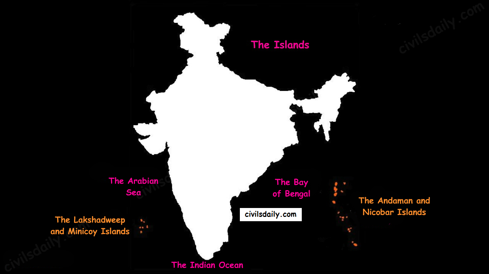
-
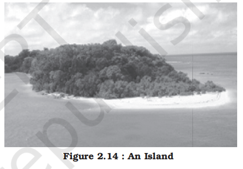
- There are two major island groups in India
- The Bay of Bengal island groups
- Extend and location
- The Bay of Bengal island groups consist of about 572 islands/islets [small island]
- These are situated roughly between 6°N-14°N and 92°E-94°E
- Principal Archipelagos:
- Ritchie's Archipelago
- Labyrinth Islands
- The entire group of island is divided into two broad categories
-
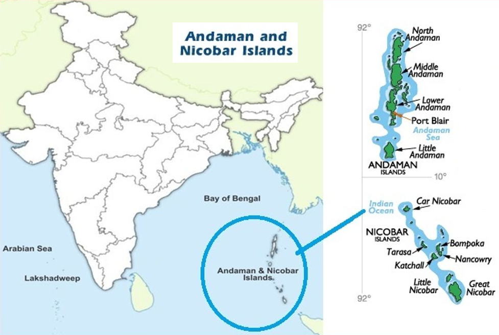
- Categories
a. The Andaman in the north
b. The Nicobar in the south
- They are separated by a waterbody which is called the Ten degree channel
- It is called the "10-degree Channel" because its approximate latitude is at 10° N (10 degrees north of the Equator).
- Size
- The Andaman and Nicobar Islands together are about 5.5 times larger than Delhi (NCT).
- Formation and features
- It is believed that these islands are an elevated portion of submarine mountains
- However, some smaller islands are volcanic in origin
- Barren island, the only active volcano in India is also situated in the Nicobar islands
- The coastal line has some coral deposits, and beautiful beaches
- These islands receive convectional rainfall and have an equatorial type of vegetation
- Past event
- On 26 December 2004, the Andaman and Nicobar Islands were devastated by the Indian Ocean tsunami triggered by a massive undersea earthquake near Sumatra along the Sunda subduction zone.
- Some important mountain peaks in Andaman and Nicobar Islands are:
- Saddle peak (North Andaman – 738 m)
- Mount Diavolo (Middle Andaman – 515 m)
- Mount Koyob (South Andaman – 460 m)
- Mount Thuiller (Great Nicobar – 642 m)
- Wildlife
- Hard to belive, but Andaman and Nicobar islands have elephants, which were introduced by the British during colonial era for manual work.
- The Arabian Sea island groups
- Location and extent
- There are approximately 36 islands of which 11 are inhabited
- These are scattered between 8°N-12°N and 71°E-74°E longitude
- The key islands of the Arabian sea include Lakshadweep and Minicoy
- These islands are located at a distance of 280 km-480 km off the Kerala coast
- These islands combined are about 46 times smaller than Delhi (NCT).
- Formation and features
- The entire island group is built of coral deposits
- Minicoy is the largest island with an area of 453 sq. km
- The Islands of this archipelago have storm beaches consisting of unconsolidated pebbles, shingles, cobbles and boulders on the eastern seaboard
- Drainage system
- Introduction to drainage
-
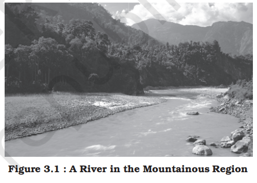
-
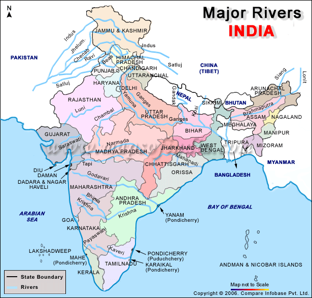
-
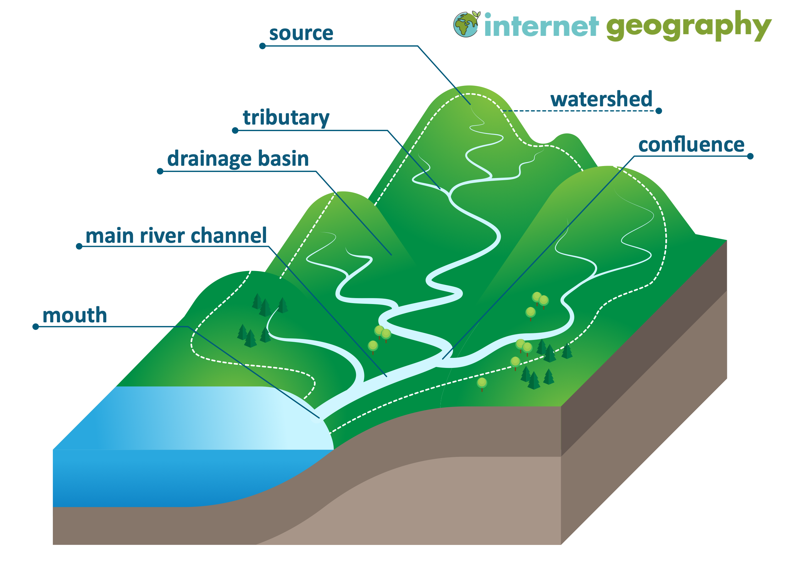
- Definition
- You have observed water flowing through the rivers, nalas and even channels during rainy season which drain the excess water
- Had these channels not been there, large-scale flooding would have occurred
- Wherever channels are ill-defined or choked, flooding is a common phenomenon
- The flow of water through well-defined channels is known as ‘drainage’ and the network of such channels is called a ‘drainage system’
- The drainage pattern of an area is the outcome of the geological time period, nature and structure of rocks, topography, slope, amount of water flowing and the periodicity of the flow
- Rivers flow in the same direction
- Iit perennial [always with water] or ephemeral [water during rainy season, and dry, otherwise]
- Key terms
- Catchment area
- Land area from which precipitation drains to a common outlet, catchment area is the umbrella area concept
- Drainage basin and river basin are specific forms of catchment area
- River-specific usage
- River basin
- Catchment area of a specific river system (main river + tributaries)
- Used in basin-level planning, management, and administration
- Drainage basin
- Scientifically synonymous with catchment area
- Emphasizes the drainage network rather than the river name
- Watershed
- Topographic divide separating two adjacent catchment areas; watershed is not an area, but a boundary.
- It includes ridge, highland, or subtle elevation line
- Important drainage patterns
-
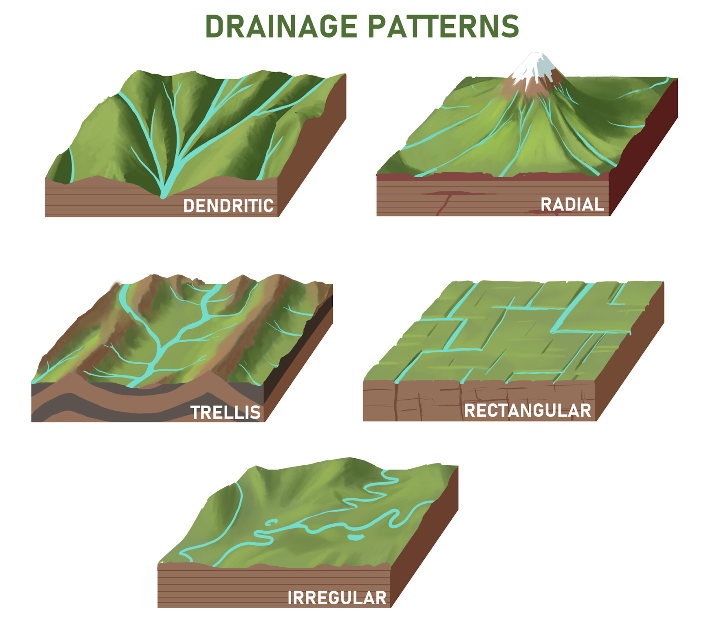
-
- Dendritic
- The drainage pattern resembling the branches of a tree is known as “dendritic” the examples of which are the rivers of northern plain
- Radial
- When the rivers originate from a hill and flow in all directions, the drainage pattern is known as ‘radial’
- The rivers originating from the Amarkantak range present a good example of it
- Trellis
- When the primary tributaries of rivers flow parallel to each other and secondary tributaries join them at right angles, the pattern is known as ‘trellis’
- Centripetal
- When the rivers discharge their waters from all directions in a lake or depression, the pattern is known as ‘centripetal’
- Significance
- River basins and watersheds are marked by unity
- What happens in one part of the basin or watershed directly affects the other parts and the unit as a whole
- That is why, they are accepted as the most appropriate micro, meso or macro planning regions
- Drainage systems of India
- Overview
- Indian drainage system consists of a large number of small and big rivers
- It is the outcome of the evolutionary process of the three major physiographic units and the nature and characteristics of precipitation
- Classification of Indian drainage system
- On the basis of discharge orientation
- Indian drainage system may be divided on various bases
- On the basis of discharge of water (orientations to the sea), it may be grouped into:
- The Arabian Sea drainage
- Nearly 77 per cent of the drainage area consisting of the Ganga, the Brahmaputra, the Mahanadi, the Krishna, etc. is oriented towards the Bay of Bengal
- The Bay of Bengal drainage
- Approximately 23 per cent comprising the Indus, the Narmada, the Tapi, the Mahi and the Periyar systems discharge their waters in the Arabian Sea
- They are separated from each other through the Delhi ridge, the Aravalis and the Sahyadris (water divide is shown by a line in Figure 3.1)
- On the basis of on watershed size
- Major
- Major river basins with more than 20,000 sq. km of catchment area
- It includes 14 drainage basins such as the Ganga, the Brahmaputra, the Krishna, the Tapi, the Narmada, the Mahi, the Pennar, the Sabarmati, the Barak, etc. (Appendix III)
- Medium
- Medium river basins with catchment area between 2,000-20,000 sq. km incorporating 44 river basins such as the Kalindi, the Periyar, the Meghna, etc.
- Minor
- Minor river basins with catchment area of less than 2,000 sq. km include fairly good number of rivers flowing in the area of low rainfall
- On the basis of of origin and characteristics
- Division
- The Himalayan drainage
- Rivers originate in the Himalayan mountain system, mostly perennial (fed by snowmelt + rainfall)
- These have long courses, deep gorges in upper course, meanders, floodplains, oxbow lakes in plains
- The Peninsular drainage
- Rivers originate in the Peninsular Plateau, generally perennial, but with strong seasonal variation in discharge
- These have shorter courses, shallow valleys, fixed, mature channels
- The Chambal–Betwa–Son problem:
- These rivers originate in the Vindhyan or Kaimur Hills, thus geologically part of the Peninsular plateau.
- But they join the Ganga and are tributaries to a Himalayan system.
- Hence, despite their Peninsular origin, they are hydrologically part of the Himalayan drainage.
- This anomaly is accepted for practicality, and the classification sticks because it helps explain broader patterns of fluvial behavior.
- Hence, this scheme has been followed in this book
- Himanlayan and peninsular drainage indepth
- The Himalayan drainage system
-
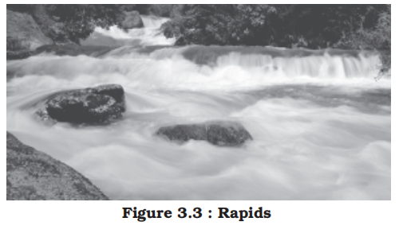
- Evolution of himalyan drainage
- The Himalayan drainage system has evolved through a long geological history
- There are difference of opinion about the evolution of the Himalayan rivers
- However, geologists believe that a mighty river called Shiwalik or Indo-Brahma traversed the entire longitudinal extent of the Himalaya from Assam to Punjab and onwards to Sind, and finally discharged into the Gulf of Sind near lower Punjab during the Miocene period some 5-24 million years ago
- The remarkable continuity of the Shiwalik and its lacustrine origin and alluvial deposits consisting of sands, silt, clay, boulders and conglomerates support this viewpoint
- It is opined that in due course of time Indo–Brahma river was dismembered into three main drainage systems:
1. The Indus and its five tributaries in the western part
2. The Ganga and its Himalayan tributaries in the central part
3. The stretch of the Brahmaputra in Assam and its Himalayan tributaries in the eastern part
- The dismemberment was probably due to the Pleistocene upheaval in the western Himalayas, including the uplift of the Potwar Plateau (Delhi Ridge), which acted as the water divide between the Indus and Ganga drainage systems
- Likewise, the downthrusting of the Malda gap area between the Rajmahal hills and the Meghalaya plateau during the mid-pleistocene period, diverted the Ganga and the Brahmaputra systems to flow towards the Bay of Bengal
- Rivers and their flow
- It mainly includes the Ganga, the Indus and the Brahmaputra river basins
- Since these are fed both by melting of snow and precipitation, rivers of this system are perennial
- These rivers pass through the giant gorges carved out by the erosional activity carried on simultaneously with the uplift of the Himalayas
- Besides deep gorges, these rivers also form V-shaped valleys, rapids and waterfalls in their mountainous course
- While entering the plains, they form depositional features like flat valleys, ox-bow lakes, flood plains, braided channels, and deltas near the river mouth
- In the Himalayan reaches, the course of these rivers is highly tortuous [twisting], but over the plains they display a strong meandering tendency and shift their courses frequently
- River Kosi, also known as the ‘sorrow of Bihar’, has been notorious for frequently changing its course
- The Kosi brings huge quantity of sediments from its upper reaches and deposits it in the plains
- The course gets blocked, and consequently, the river changes its course
- Major river systems of the Himalayan drainage
- The Indus system
-
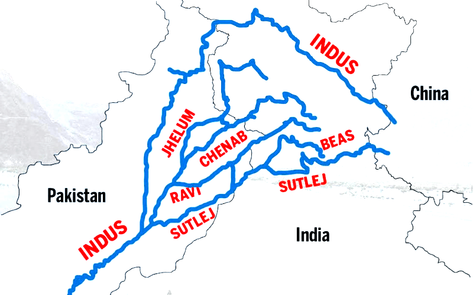
- Value addition
- Origin Point:
- Bokhar Chu Glacier, near Lake Mansarovar, Kailash Range, Tibet (4,164 m)
- Path:
- Tibet -> Ladakh (India) -> Gilgit-Baltistan (Pakistan) -> Punjab (Pakistan) -> Sindh (Pakistan)
- Ending Point:
- Arabian Sea, near Karachi, Pakistan (Indus Delta)
- Tributaries:
- Left Bank:
- Zanskar:
- Origin:
- Zanskar Range, Kargil, Ladakh
- Path:
- Ladakh
- Junction:
- Near Sangam, Ladakh
- Feature:
- Forms deep gorges, supports high-altitude agriculture
- Suru:
- Origin:
- Panzella Glacier, Kargil, Ladakh
- Path:
- Ladakh
- Junction:
- Near Kargil, Ladakh
- Feature:
- Supports apple orchards in Suru Valley
- Jhelum:
- Origin:
- Verinag Spring, Pir Panjal Range, Jammu and Kashmir
- Path:
- Jammu and Kashmir -> Punjab (Pakistan)
- Junction:
- Near Mangla, Pakistan
- Feature:
- Flows through Wular Lake, supports Kashmir Valley irrigation
- Chenab:
- Origin:
- Chandra and Bhaga rivers, Bara Lacha Pass, Himachal Pradesh
- Path:
- Himachal Pradesh -> Jammu and Kashmir -> Punjab (Pakistan)
- Junction:
- Near Panchnad, Pakistan
- Feature:
- World’s highest railway bridge (Chenab Bridge, 359 m)
- Ravi:
- Origin:
- Bara Bhangal, Kangra, Himachal Pradesh
- Path:
- Himachal Pradesh -> Punjab -> Punjab (Pakistan)
- Junction:
- Near Madhopur, Punjab
- Feature:
- Supports Punjab’s agriculture via Ranjit Sagar Dam
- Beas:
- Origin:
- Beas Kund, Rohtang Pass, Himachal Pradesh
- Path:
- Himachal Pradesh -> Punjab
- Junction:
- Harike, Punjab (with Sutlej)
- Feature:
- Home to Indus dolphin, powers Pong Dam
- Sutlej:
- Origin:
- Lake Rakshastal, Tibet
- Path:
- Tibet -> Himachal Pradesh -> Punjab -> Punjab (Pakistan)
- Junction:
- Near Panchnad, Pakistan
- Feature:
- Longest tributary, feeds Bhakra Nangal Dam
- Right Bank:
- Shyok:
- Origin:
- Rimo Glacier, Karakoram Range, Ladakh
- Path:
- Ladakh -> Gilgit-Baltistan (Pakistan)
- Junction:
- Near Skardu, Pakistan
- Feature:
- Marks Karakoram Range boundary
- Nubra:
- Origin:
- Nubra Glacier, Ladakh
- Path:
- Ladakh
- Junction:
- Near Diskit, Ladakh (with Shyok)
- Feature:
- Supports Siachen Glacier region
- Hunza:
- Origin:
- Hunza Valley, Gilgit-Baltistan, Pakistan
- Path:
- Gilgit-Baltistan (Pakistan)
- Junction:
- Near Gilgit, Pakistan
- Feature:
- Historical silk route trade route
- Gilgit:
- Origin:
- Karakoram Range, Gilgit-Baltistan, Pakistan
- Path:
- Gilgit-Baltistan (Pakistan)
- Junction:
- Near Gilgit, Pakistan
- Feature:
- Supports Gilgit’s agriculture
- Kabul:
- Origin:
- Hindu Kush, Afghanistan
- Path:
- Afghanistan -> Khyber Pakhtunkhwa (Pakistan)
- Junction:
- Near Attock, Pakistan
- Feature:
- Major transboundary tributary
- Kurram:
- Origin:
- Spin Ghar Range, Afghanistan
- Path:
- Afghanistan -> Khyber Pakhtunkhwa (Pakistan)
- Junction:
- Near Bannu, Pakistan
- Feature:
- Supports tribal region irrigation
- Gomal:
- Origin:
- Sulaiman Range, Afghanistan
- Path:
- Afghanistan -> Khyber Pakhtunkhwa (Pakistan)
- Junction:
- Near Dera Ismail Khan, Pakistan
- Feature:
- Supports arid zone agriculture
- Location, names and extend
- It is one of the largest river basins of the world, covering an area of 11,65,000 sq. km (in India it is 321,289 sq. km and a total length of 2,880 km (in India 1,114 km))
- The Indus also known as the Sindhu, is the westernmost of the Himalayan rivers in India
- It originates from a glacier near Bokhar Chu (31°15' N latitude and 81°40' E longitude) in the Tibetan region at an altitude of 4,164 m in the Kailash Mountain range newar mansarovar lake
- In Tibet, it is known as ‘Singi Khamban; or Lion’s mouth
- After flowing in the northwest direction between the Ladakh and Zaskar ranges, it passes through Ladakh and Baltistan
- It cuts across the Ladakh range, forming a spectacular gorge near Gilgit in Jammu and Kashmir
- It enters into Pakistan near Chilas in the Dardistan region
- The Indus flows in India mainly through the Ladakh region (earlier part of Jammu and Kashmir) before entering Pakistan
- Tributaries
- The Indus receives a number of tributaries such as listed above.
- It finally emerges out of the hills near Attock where it receives the Kabul river on its right bank
- The river flows southward and receives ‘Panjnad’ a little above Mithankot
- The Panjnad is the name given to the five rivers of Punjab, namely the Satluj, the Beas, the Ravi, the Chenab and the Jhelum
- It finally discharges into the Arabian Sea, east of Karachi
- Important tributories to indus
- Jhelum
- The Jhelum, an important tributary of the Indus, rises from a spring at Verinag situated at the foot of the Pir Panjal in the south-eastern part of the valley of Kashmir
- It flows through Srinagar and the Wular lake before entering Pakistan through a deep narrow gorge
- Wular lake is the largest freshwater lake in India.
- Point of confusion
- Vembanad lake in Kerala is the largest lake in India overall, but it’s brackish, not freshwater.
- It joins the Chenab near Jhang in Pakistan
- Chenab
- The Chenab is the largest tributary of the Indus
- It is formed by two streams, the Chandra and the Bhaga, which join at Tandi near Keylong in Himachal Pradesh
- Hence, it is also known as Chandrabhaga
- The river flows for 1,180 km before entering into Pakistan
- Jhelum + Chenab alone contribute well over half of the Indus flow.
- Ravi
- The Ravi is another important tributary of the Indus
- It rises west of the Rohtang pass in the Kullu hills of Himachal Pradesh and flows through the Chamba valley of the state
- Before entering Pakistan and joining the Chenab near Sarai Sidhu, it drains the area lying between the southeastern part of the Pir Panjal and the Dhauladhar ranges
- Ravi River is a tributary of the Chenab River; it flows into the Chenab in Pakistan, and then the combined waters join the Sutlej (which carries the Beas) to form the Panjnad, eventually emptying into the Indus.
- Satluj
- The Satluj originates in the ‘Raksas tal’ near Mansarovar at an altitude of 4,555 m in Tibet where it is known as Langchen Khambab
- It is the longest of the five tributaries of the Indus. It receives the waters of the Beas first, and later the Chenab (which already carries the Jhelum and Ravi).
- It flows almost parallel to the Indus for about 400 km before entering India, and comes out of a gorge at Rupar
- It enters India through the Shipki La pass in the Kinnaur district of Himachal Pradesh.
- It is an antecedent river
- An antecedent river is a stream that maintains its original course and pattern despite changes in the underlying landscape, such as uplift or tectonic activity.
- Essentially, the river existed before the landscape features that now form its path.
- It is a very important tributary as it feeds the canal system of the Bhakra Nangal project
- Beas
- Originating from the Beas Kund near the Rohtang Pass at an elevation of 4,000 m above the mean sea level
- It enters the Punjab plains where it meets the Satluj near Harike
- It is a tributory to Sutluj
- The river flows through the Kullu valley and forms gorges at Kati and Largi in the Dhaoladhar range
- Among the traditional five rivers of Punjab, the merging occurs as follows:
-
1. Jhelum and Ravi flow into the Chenab.
2. Beas flows into the Sutlej.
3. Chenab and Sutlej then merge to form the Panjnad River.
4. Panjnad finally joins the Indus.
- The Ganga system
-
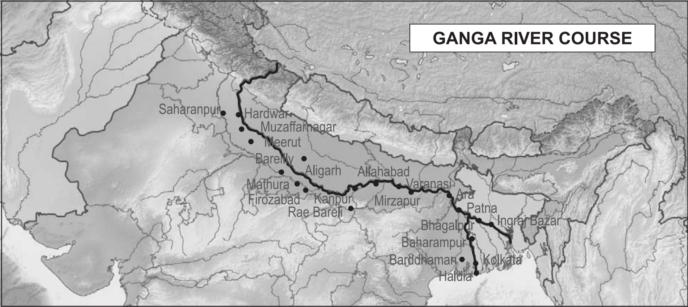
-
- Value addition data
- Origin Point:
- Gangotri Glacier (Bhagirathi), Uttarakhand (4,100 m)
- Path:
- Uttarakhand -> Uttar Pradesh -> Bihar -> Jharkhand -> West Bengal -> Bangladesh
- Ending Point:
- Bay of Bengal, Ganga Sagar, West Bengal (Sundarbans Delta)
- Tributaries:
- Left Bank:
- Ramganga:
- Origin:
- Dudhatoli Hill, Chamoli, Uttarakhand
- Path:
- Uttarakhand -> Uttar Pradesh
- Junction:
- Near Kannauj, Uttar Pradesh
- Feature:
- Flows through Jim Corbett National Park
- Gomti:
- Origin:
- Gomat Taal, Pilibhit, Uttar Pradesh
- Path:
- Uttar Pradesh
- Junction:
- Near Ghazipur, Uttar Pradesh
- Feature:
- Supports Lucknow’s water supply
- Ghaghara:
- Origin:
- Mapchachungo Glacier, Tibet
- Path:
- Nepal -> Uttar Pradesh -> Bihar
- Junction:
- Near Revelganj, Bihar
- Feature:
- Transboundary, causes floods in Bihar
- Gandak:
- Origin:
- Kali and Trisuli rivers, Nepal
- Path:
- Nepal -> Bihar
- Junction:
- Near Sonepur, Bihar
- Feature:
- Supports Bihar’s irrigation via Gandak Project
- Burhi Gandak:
- Origin:
- Chautarwa Chaur, West Champaran, Bihar
- Path:
- Bihar
- Junction:
- Near Khagaria, Bihar
- Feature:
- Prone to flooding in North Bihar
- Kosi:
- Origin:
- Sun Kosi, Arun, and Tamur rivers, Nepal
- Path:
- Nepal -> Bihar
- Junction:
- Near Kursela, Bihar
- Feature:
- “Sorrow of Bihar” due to silt and flooding
- Mahananda:
- Origin:
- Darjeeling Hills, West Bengal
- Path:
- West Bengal -> Bihar -> Bangladesh
- Junction:
- Near Malda, West Bengal
- Feature:
- Supports tea estates in Darjeeling
- Right Bank:
- Yamuna:
- Origin:
- Yamunotri Glacier, Bandarpoonch, Uttarakhand
- Path:
- Uttarakhand -> Himachal Pradesh -> Haryana -> Delhi -> Uttar Pradesh
- Junction:
- Triveni Sangam, Prayagraj, Uttar Pradesh
- Feature:
- Largest tributary, supports Delhi’s water supply
- Tamsa (Tons):
- Origin:
- Kaimur Range, Satna, Madhya Pradesh
- it is important to distinguish it from the Himalayan "Tons" river, which is a tributary of the Yamuna.
- Path:
- Madhya Pradesh -> Uttar Pradesh
- Junction:
- Near Prayagraj, Uttar Pradesh
- Feature:
- Supports Rewa’s agriculture
- Son:
- Origin:
- Amarkantak Plateau, Madhya Pradesh
- Path:
- Madhya Pradesh -> Chhattisgarh -> Jharkhand -> Bihar
- Junction:
- Near Patna, Bihar
- Feature:
- Supports coal mining in Jharkhand
- Punpun:
- Origin:
- Chota Nagpur Plateau, Palamu, Jharkhand
- Path:
- Jharkhand -> Bihar
- Junction:
- Near Fatuha, Bihar
- Feature:
- Supports Patna’s irrigation
- Falgu:
- Origin:
- Chota Nagpur Plateau, Gaya, Bihar
- Path:
- Bihar
- Junction:
- Near Bodh Gaya, Bihar
- Feature:
- Sacred for Gaya’s pind daan rituals
- Kiul:
- Origin:
- Chota Nagpur Plateau, Jamui, Bihar
- Path:
- Bihar
- Junction:
- Near Surajgarha, Bihar
- Feature:
- Supports Lakhisarai’s agriculture
- Chandan:
- Origin:
- Deoghar Hills, Jharkhand
- Path:
- Jharkhand -> Bihar
- Junction:
- Near Bhagalpur, Bihar
- Feature:
- Supports Deoghar’s pilgrimage
- Ajay:
- Origin:
- Munger Hills, Bihar
- Path:
- Bihar -> Jharkhand -> West Bengal
- Junction:
- Near Katwa, West Bengal
- Feature:
- Forms boundary between Jharkhand and West Bengal
- Damodar:
- Origin:
- Palamau Hills, Chota Nagpur, Jharkhand
- Path:
- Jharkhand -> West Bengal
- Junction:
- Near Howrah, West Bengal
- Feature:
- “Sorrow of Bengal” due to floods
- Rupnarayan:
- Origin:
- Confluence of Dwarka and Silai rivers, West Bengal
- Path:
- West Bengal
- Junction:
- Near Geonkhali, West Bengal
- Feature:
- Supports Hooghly’s navigation
- Location, names and extent
- The Ganga is the most important river of India both from the point of view of its basin and cultural significance
- It rises in the Gangotri glacier near Gaumukh (3,900 m) in the Uttarkashi district of Uttarakhand
- Here, it is known as the Bhagirathi
- It cuts through the Central and the Lesser Himalayas in narrow gorges
- At Devprayag [prayag means where to rivers meet or sangam], the Bhagirathi meets the Alaknanda; hereafter, it is known as the Ganga
- The Alaknanda has its source in the Satopanth glacier above Badrinath
- The Alaknanda consists of the Dhauli and the Vishnu Ganga which meet at Vishnu Prayag near Joshimath
- Joshimath is key spiritual center founded by Adi Shankaracharya and a base for tourists visiting Auli and Badrinath.
- The other tributaries of Alaknanda such as the Pindar joins it at Karna Prayag while Mandakini or Kali Ganga meets it at Rudra Prayag
- Do not confuse this "Kali Ganga" with the Kali River (also known as the Sharda), which forms the border between India and Nepal.
-
- The Ganga enters the plains at Haridwar
- From here, it flows first to the south, then to the south-east and east before splitting into two distributaries, namely the Bhagirathi-Hooghly and the Padma
- Bhagirathi-Hooghly:
- The branch that flows south through West Bengal.
- Padma:
- The main branch that enters Bangladesh.
- The river has a length of 2,525 km
- It is shared by Uttarakhand (110 km) and Uttar Pradesh (1,450 km), Bihar (445 km) and West Bengal (520 km)
- The Ganga basin covers about 8.6 lakh sq. km area in India alone
- The Ganga river system is the largest in India having a number of perennial and non-perennial rivers originating in the Himalayas in the north and the Peninsula in the south, respectively
- The river finally discharges itself into the Bay of Bengal near the Sagar Island
- Important tributaries
- The important left bank tributaries
- Ramganga
- The Ramganga is comparatively a small river rising in the Garhwal hills near Gairsain
- It changes its course to the southwest direction after crossing the Shiwalik and enters into the plains of Uttar Pradesh near Najibabad
- Finally, it joins the Ganga near Kannauj
- The Gomati
- The Gomati originates from Pilibhit district in Uttar Pradesh, near the Madhav Tanda area.
- It flows entirely through Uttar Pradesh.
- Major cities/towns on its banks include Lucknow, Jaunpur, and Sultanpur.
- It travels roughly 900 km before meeting the Ganga.
- Ghaghara
- The Ghaghara originates in the glaciers of Mapchachungo
- After collecting the waters of its tributaries – Tila, Seti and Beri, it comes out of the mountain, cutting a deep gorge at Shishapani
- Subtributory
- Sarda (Kali/Chauk river)
- The Sarda or Saryu river rises in the Milam glacier in the Nepal Himalayas where it is known as the Goriganga
- Along the Indo-Nepal border, it is called Kali or Chauk, where it joins the Ghaghara
- Gandak
- The Gandak comprises two streams, namely Kaligandak and Trishulganga
- It rises in the Nepal Himalayas between the Dhaulagiri and Mount Everest and drains the central part of Nepal
- It enters the Ganga plain in Champaran district of Bihar and joins the Ganga at Sonpur near Patna
- Burhi Gandak
- Originates from western slopes of sumesar hills near the India-Nepal border.
- It joins the ganga near Monghyr town.
- Kosi
- The Kosi is an antecedent river with its source to the north of Mount Everest in Tibet, where its main stream Arun rises
- Subtributory
- Son Kosi and Tamur Kosi
- After crossing the Central Himalayas in Nepal, it is joined by the Son Kosi from the West and the Tamur Kosi from the east
- It forms Sapt Kosi after uniting with the river Arun
- The Kosi River is known as the "Sorrow of Bihar" due to its frequent and damaging floods in the region
- Mahananda
- The Mahananda is another important tributary of the Ganga rising in the Darjiling hills
- It joins the Ganga as its last left bank tributary in West Bengal
- Important right bank tributories
- Son
- The Son is its major right bank tributary
- The Son is a large south bank tributary of the Ganga, originating in the Amarkantak plateau
- After forming a series of waterfalls at the edge of the plateau, it reaches Arrah, west of Patna, to join the Ganga
- Yamuna
- The Yamuna, the western most and the longest tributary of the Ganga, has its source in the Yamunotri glacier on the western slopes of Banderpunch range
- It joins the Ganga at Prayag (Allahabad)
- It is joined by (on its right bank which originates from the Peninsular plateau):
- The Chambal
- The Chambal rises near Mhow in the Malwa plateau of Madhya Pradesh and flows northwards through a gorge up wards of Kota in Rajasthan, where the Gandhisagar dam has been constructed
- From Kota, it traverses down to Bundi, Sawai Madhopur and Dholpur, and finally joins the Yamuna
- The Chambal is famous for its badland topography called the Chambal ravines
- The Sind
- The Betwa
- The Ken
- It is joined by (join it on its left bank):
- The Hindan
- The Rind
- The Sengar
- The Varuna, etc.
- Much of its water feeds the western and eastern Yamuna and the Agra canals for irrigation purposes
- Case about Damodar
- The Damodar River is a tributary of the Hugli River which is a distributary of the Ganga.
- The Damodar occupies the eastern margins of the Chotanagpur Plateau where it flows through a rift valley and finally joins the Hugli
- The Barakar is its main tributary
- Once known as the ‘sorrow of Bengal’, the Damodar has been now tamed by the Damodar Valley corporation, a multipurpose project
- Government policy
- ‘Namami Gange Programme’, is an Integrated Conservation Mission, approved as “Flagship Programme” by the Union Government in June 2014 with the twin objectives of effective abatement of pollution, conservation and rejuvenation of the National River Ganga
- Main pillars of the Namami Gange Programme are:
- Sewerage Treatment Infrastructure
- River-Front Development
- River-Surface Cleaning
- Bio-Diversity
- Afforestation
- Public Awareness
- Industrial Effluent Monitoring
- Ganga Gram
- The Brahmaputra system
-
-
- Value addition data
- Origin Point:
- Angsi Glacier, Kailash Range, Tibet (Yarlung Tsangpo)
- Path:
- Tibet -> Arunachal Pradesh -> Assam -> Bangladesh
- Ending Point:
- Bay of Bengal, Bangladesh (merges with Ganga as Meghna)
- Tributaries:
- Left Bank:
- Dibang:
- Origin:
- Mishmi Hills, Arunachal Pradesh
- Path:
- Arunachal Pradesh
- Junction:
- Near Sadiya, Assam
- Feature:
- Supports Dibang Valley’s biodiversity
- Lohit:
- Origin:
- Kangri Garpo Range, Tibet
- Path:
- Arunachal Pradesh -> Assam
- Junction:
- Near Sadiya, Assam
- Feature:
- Forms braided channels in Arunachal
- Burhi Dihing:
- Origin:
- Patkai Hills, Arunachal Pradesh
- Path:
- Arunachal Pradesh -> Assam
- Junction:
- Near Khowang, Assam
- Feature:
- Supports Assam’s tea estates
- Dhansiri:
- Origin:
- Laisang Peak, Nagaland
- Path:
- Nagaland -> Assam
- Junction:
- Near Numaligarh, Assam
- Feature:
- Supports Kaziranga National Park
- Kolong:
- Origin:
- Naga Hills, Assam
- Path:
- Assam
- Junction:
- Near Nagaon, Assam
- Feature:
- Supports rice cultivation
- Right Bank:
- Subansiri:
- Origin:
- Himalayas, Tibet
- Path:
- Arunachal Pradesh -> Assam
- Junction:
- Near Lakhimpur, Assam
- Feature:
- Site of Subansiri Lower Hydroelectric Project
- Kameng:
- Origin:
- Tawang, Arunachal Pradesh
- Path:
- Arunachal Pradesh -> Assam
- Junction:
- Near Tezpur, Assam
- Feature:
- Site of Kameng Dam
- Manas:
- Origin:
- Bhutan Himalayas
- Path:
- Bhutan -> Assam
- Junction:
- Near Jogighopa, Assam
- Feature:
- UNESCO site, Manas National Park
- Beki:
- Origin:
- Bhutan Himalayas
- Path:
- Bhutan -> Assam
- Junction:
- Near Barpeta, Assam
- Feature:
- Supports Barpeta’s agriculture
- Teesta:
- Origin:
- Pauhunri Glacier, Sikkim
- Path:
- Sikkim -> West Bengal -> Bangladesh
- Junction:
- Near Jalpaiguri, West Bengal
- Feature:
- Major hydropower source in Sikkim
- Location, name and extent
- The Brahmaputra, one of the largest rivers of the world, has its origin in the Chemayungdung glacier of the Kailash range near the Mansarovar lake
- From here, it traverses eastward longitudinally for a distance of nearly 1,200 km in a dry and flat region of southern Tibet, where it is known as the Tsangpo, which means ‘the purifier’
- It emerges as a turbulent and dynamic river after carving out a deep gorge in the Central Himalayas near Namcha Barwa (7,755 m)
- It is one of the deepest and longest canyons in the world—even deeper than the Grand Canyon in the United States.
- This forces the river to take a sharp, U-turn-like "S-bend" to the south. This is known as a syntaxial bend in geological terms.
- The river emerges from the foothills under the name of Siang or Dihang
- It enters India west of Sadiya town in Arunachal Pradesh
- Flowing southwest, it receives its main left bank tributaries, viz., Dibang or Sikang and Lohit; thereafter, it is known as the Brahmaputra
- The Brahmaputra receives numerous tributaries in its 750 km long journey through the Assam valley
- The Brahmaputra enters into Bangladesh near Dhubri and flows southward
- It finally merges with the river Padma
- The combined flow of the Padma and Jamuna eventually joins the Meghna River before emptying into the Bay of Bengal through a vast delta.
- Important tributories
- Its major left bank tributaries are:
- The Burhi Dihing
- Dhansari (South)
- Important right bank tributaries are:
- Rango Tsango
- The Rango Tsangpo is the major right bank tributary of this river in Tibet
- The Subansiri
- The Subansiri which has its origin in Tibet, is an antecedent river
- Kameng (Jia Bhareli)
- Manas
- Sankosh
- Tista
- In Bangladesh, the Tista joins it on its right bank from where the river is known as the Jamuna, Jamuna is the name of the Brahmaputra in Bangladesh
- Features
- The Brahmaputra is well-known for floods, channel shifting and bank erosion
- This is due to the fact that most of its tributaries are large, and bring large quantity of sediments owing to heavy rainfall in its catchment area
- The Peninsular drainage system
-
- Evolution of peninsular drainage system
- The Peninsular drainage system is older than the Himalayan one
- This is evident from the broad, largely-graded shallow valleys, and the maturity of the rivers
- Extent and rivers
- The Western Ghats running close to the western coast act as the water divide between the major Peninsular rivers, discharging their water in the Bay of Bengal and as small rivulets joining the Arabian Sea
- Most of the major Peninsular rivers except Narmada and Tapi flow from west to east
- The Chambal, the Sind, the Betwa, the Ken, the Son, originating in the northern part of the Peninsula belong to the Ganga river system
- The other major river systems of the Peninsular drainage are – the Mahanadi, the Godavari, the Krishna and the Kaveri
- Peninsular rivers are characterised by fixed course, absence of meanders and nonperennial flow of water
- The Narmada and the Tapi which flow through the rift valley are, however, exceptions
- The evolution of Peninsular drainage system
- Three major geological events in the distant past have shaped the present drainage systems of Peninsular India:
1. Subsidence [gradual sinking] of the western flank of the Peninsula leading to its submergence below the sea during the early tertiary period
- Generally, it has disturbed the symmetrical plan of the river on either side of the original watershed
2. Upheaval of the Himalayas when the northern flank of the Peninsular block was subjected to subsidence and the consequent trough faulting
- The Narmada and The Tapi flow in trough faults and fill the original cracks with their detritus materials
- Hence, there is a lack of alluvial and deltaic deposits in these rivers
3. Slight tilting of the Peninsular block from northwest to the southeastern direction gave orientation to the entire drainage system towards the Bay of Bengal during the same period
- River systems of the Peninsular drainage
- West flowing rivers
-
- Major west-flowing rivers
- Narmada
-
-
- Value addition
- Origin Point:
- Amarkantak Plateau, Maikala Range, Madhya Pradesh (1,057 m)
- Path:
- Madhya Pradesh -> Maharashtra -> Gujarat
- Ending Point:
- Arabian Sea, Gulf of Cambay, Bharuch, Gujarat
- Tributaries:
- Left Bank:
- Burhner:
- Origin:
- Maikala Range, Madhya Pradesh
- Path:
- Madhya Pradesh
- Junction:
- Near Jabalpur, Madhya Pradesh
- Feature:
- Supports Jabalpur’s agriculture
- Banjar:
- Origin:
- Satpura Range, Madhya Pradesh
- Path:
- Madhya Pradesh
- Junction:
- Near Mandla, Madhya Pradesh
- Feature:
- Supports Mandla’s forests
- Hiran:
- Origin:
- Satpura Range, Madhya Pradesh
- Path:
- Madhya Pradesh
- Junction:
- Near Jabalpur, Madhya Pradesh
- Feature:
- Supports Jabalpur’s irrigation
- Tawa:
- Origin:
- Satpura Range, Betul, Madhya Pradesh
- Path:
- Madhya Pradesh
- Junction:
- Near Hoshangabad, Madhya Pradesh
- Feature:
- Site of Tawa Dam
- Sher:
- Origin:
- Satpura Range, Madhya Pradesh
- Path:
- Madhya Pradesh
- Junction:
- Near Narsinghpur, Madhya Pradesh
- Feature:
- Supports Narsinghpur’s agriculture
- Shakkar:
- Origin:
- Satpura Range, Madhya Pradesh
- Path:
- Madhya Pradesh
- Junction:
- Near Narsinghpur, Madhya Pradesh
- Feature:
- Supports rice cultivation
- Right Bank:
- Kolar:
- Origin:
- Vindhya Range, Madhya Pradesh
- Path:
- Madhya Pradesh
- Junction:
- Near Barwaha, Madhya Pradesh
- Feature:
- Supports Sehore’s irrigation
- Punar
- Kolar (The one you listed)
- Maan
- Uri (Uriya)
- Hatni
- Orsang
- The Narmada originates on the western flank of the Amarkantak plateau at a height of about 1,057 m
- Flowing in a rift valley between the Satpura in the south and the Vindhyan range in the north, it forms a picturesque gorge in marble rocks and Dhuandhar waterfall near Jabalpur
- After flowing a distance of about 1,312 km, it meets the Arabian sea south of Bharuch, forming a broad 27 km long estuary
- It flows from Madhya Pradesh -> Maharashtra -> Gujarat
- Its catchment area is about 98,796 sq. km
- The Sardar Sarovar Project has been constructed on this river
- Tapi
-
-
- Value addition data
- Origin Point:
- Satpura Range, Betul, Madhya Pradesh
- Path:
- Madhya Pradesh -> Maharashtra -> Gujarat
- Ending Point:
- Arabian Sea, Gulf of Cambay, Surat, Gujarat
- Tributaries:
- Left Bank:
- Purna:
- Origin:
- Gawilgarh Hills, Maharashtra
- Path:
- Maharashtra
- Junction:
- Near Changdev, Maharashtra
- Feature:
- Largest tributary, supports Amravati’s agriculture
- Waghur:
- Origin:
- Satpura Range, Maharashtra
- Path:
- Maharashtra
- Junction:
- Near Surat, Gujarat
- Feature:
- Supports Jalgaon’s plantation agriculture
- Right Bank:
- Girna:
- Origin:
- Western Ghats, Nashik, Maharashtra
- Path:
- Maharashtra
- Junction:
- Near Malegaon, Maharashtra
- Feature:
- Supports Nashik’s vineyards
- Panzara:
- Origin:
- Sahyadri Hills, Maharashtra
- Path:
- Maharashtra
- Junction:
- Near Dhule, Maharashtra
- Feature:
- Supports Dhule’s cotton fields
- Aner:
- Origin:
- Satpura Range, Maharashtra
- Path:
- Maharashtra
- Junction:
- Near Ankleshwar, Gujarat
- Feature:
- Supports Bharuch’s agriculture
- The Tapi is the other important westward flowing river
- It originates from Multai in the Betul district of Madhya Pradesh
- It is 724 km long and drains an area of 65,145 sq. km
- Nearly 79 per cent of its basin lies in Maharashtra, 15 per cent in Madhya Pradesh and the remaining 6 per cent in Gujarat
- Luni
-
-
- Value addition data
- Origin Point:
- Aravalli Range, Pushkar, Rajasthan
- Path:
- Rajasthan -> Gujarat
- Ending Point:
- Rann of Kutch, Gujarat
- Tributaries:
- Left Bank:
- Sukri:
- Origin:
- Aravalli Range, Pali, Rajasthan
- Path:
- Rajasthan
- Junction:
- Near Samdari, Rajasthan
- Feature:
- Supports Pali’s agriculture
- Guhiya:
- Origin:
- Aravalli Range, Pali, Rajasthan
- Path:
- Rajasthan
- Junction:
- Near Balotra, Rajasthan
- Feature:
- Supports Barmer’s irrigation
- Right Bank:
- Jawai:
- Origin:
- Aravalli Range, Udaipur, Rajasthan
- Path:
- Rajasthan
- Junction:
- Near Jalore, Rajasthan
- Feature:
- Site of Jawai Dam, leopard habitat
- Bandi:
- Origin:
- Aravalli Range, Pali, Rajasthan
- Path:
- Rajasthan
- Junction:
- Near Pali, Rajasthan
- Feature:
- Supports Jodhpur’s water supply
- Luni is the largest river system of Rajasthan, west of Aravali
- It originates near Pushkar in two branches, i.e. the Saraswati and the Sabarmati, which join with each other at Govindgarh
- From here, the river comes out of Aravali and is known as Luni
- It flows towards the west till Telwara and then takes a southwest direction to join the Rann of Kuchchh
- The entire river system is ephemeral [lasting for a very short time]
- Smaller rivers flowing towards the west
- The rivers flowing towards the Arabian sea have short courses
- Gujarat
- Shetruniji
- The Shetruniji is one such river which rises near Dalkahwa in Amreli district
- Bhadra
- The Bhadra originates near Aniali village in Rajkot district
- Dhadhar
- The Dhadhar rises near Ghantar village in Panchmahal district
- Sabarmati and mahi
- Sabarmati and Mahi are the two famous rivers of Gujarat
- Maharashtra
- Vaitarna
- The Vaitarna rises from the Trimbak hills in Nasik district at an elevation of 670 m
- Karnataka
- Kalinadi
- The Kalinadi rises from Belgaum district and falls in the Karwar Bay
- Bedti
- The source of Bedti river lies in Hubli Dharwar and traverses a course of 161 km
- Sharavati
- The Sharavati is another important river in Karnataka flowing towards the west
- The Sharavati originates in Shimoga district of Karnataka and drains a catchment area of 2,209 sq. km
- Goa
- Mandovi and Juari
- Goa has two important rivers which can be mentioned here
- Kerala
- Bharathapuzha, Periyar and Pamba river
- Kerala has a narrow coastline
- The longest river of Kerala, Bharathapuzha rises near Annamalai hills
- It is also known as Ponnani
- It drains an area of 5,397 sq. km
- The Periyar is the second largest river of Kerala
- Its catchment area is 5,243 sq. km
- You can see that there is a marginal difference in the catchment area of the Bhartapuzha and the Periyar rivers
- Another river of Kerala worth mentioning is the Pamba river which falls in the Vemobanad lake after traversing a course of 177 km
- East flowing rivers
-
- Major east-flowing rivers
- Mahanadi
-
-
- Value addition data
- Origin Point:
- Sihawa Hills, Dhamtari, Chhattisgarh
- Path:
- Chhattisgarh -> Odisha
- Ending Point:
- Bay of Bengal, False Point, Odisha
- Tributaries:
- Left Bank:
- Seonath:
- Origin:
- Kotgal Hills, Chhattisgarh
- Path:
- Chhattisgarh
- Junction:
- Near Shivrinarayan, Chhattisgarh
- Feature:
- Longest tributary, supports Bilaspur
- Hasdeo:
- Origin:
- Sonhat Plateau, Chhattisgarh
- Path:
- Chhattisgarh
- Junction:
- Near Mahendragarh, Chhattisgarh
- Feature:
- Supports Korba’s Korba’s coal mines
- Mand:
- Origin:
- Surguja Hills, Chhattisgarh
- Path:
- Chhattisgarh
- Junction:
- Near Chandrapur, Chhattisgarh
- Feature:
- Supports Raigarh’s agriculture
- Kelo
- Right Bank:
- Ib:
- Origin:
- Pandrapath Hills, Chhattisgarh
- Path:
- Chhattisgarh -> Odisha
- Junction:
- Near Hirakud, Odisha
- Feature:
- Supports coal mining in Jharsuguda
- Ong:
- Origin:
- Nuapada, Odisha
- Path:
- Odisha
- Junction:
- Near Sonepur, Odisha
- Feature:
- Supports Sonepur’s irrigation
- Tel:
- Origin:
- Koraput, Odisha
- Path:
- Odisha
- Junction:
- Near Cuttack, Odisha
- Feature:
- Forms fertile plains in Odisha
- Jonk
- Pairi
- The Mahanadi River originates in the Dandakaranya region of Chhattisgarh, specifically near the village of Farsiya in the Dhamtari district.
- Its source is located at an elevation of 442 meters, roughly 6 kilometers from Farsiya. The river flows in a northerly direction for about 100 kilometers before turning eastward.
- The Mahanadi rises near Sihawa in Raipur district of Chhattisgarh and runs through Odisha to discharge its water into the Bay of Bengal
- It is 851 km long and its catchment area spreads over 1.42 lakh sq. km
- Some navigation is carried on in the lower course of this river
- Fifty three per cent of the drainage basin of this river lies in Madhya Pradesh and Chhattisgarh, while 47 per cent lies in Odisha
- Godavari
-
-
- Value addition data
- Origin Point:
- Brahmagiri Hills, Trimbakeshwar, Maharashtra
- Path:
- Maharashtra -> Telangana -> Andhra Pradesh -> Odisha
- Ending Point:
- Bay of Bengal, Antarvedi, Andhra Pradesh
- Tributaries:
- Left Bank:
- Purna:
- Origin:
- Satmala Hills, Maharashtra
- Path:
- Maharashtra
- Junction:
- Near Jabalpur, Maharashtra
- Feature:
- Supports Parbhani’s agriculture
- Pranhita:
- Origin:
- Confluence of Wardha and Wainganga, Maharashtra
- Path:
- Maharashtra -> Telangana
- Junction:
- Near Kaleshwaram, Telangana
- Feature:
- Major confluence, supports irrigation
- Indravati:
- Origin:
- Dandakaranya Range, Odisha
- Path:
- Odisha -> Chhattisgarh -> Maharashtra
- Junction:
- Near Somnoor, Maharashtra
- Feature:
- Longest tributary, supports Chhattisgarh’s forests
- Sabari:
- Origin:
- Sinkaram Hills, Odisha
- Path:
- Odisha -> Andhra Pradesh
- Junction:
- Near Kunavaram, Andhra Pradesh
- Feature:
- Forms scenic gorges in Eastern Ghats
- Right Bank:
- Pravara:
- Origin:
- Western Ghats, Ahmednagar, Maharashtra
- Path:
- Maharashtra
- Junction:
- Near Nevasa, Maharashtra
- Feature:
- Supports Ahmednagar’s sugarcane fields
- Manjira:
- Origin:
- Balaghat Range, Maharashtra
- Path:
- Maharashtra -> Telangana
- Junction:
- Near Kandakurthi, Telangana
- Feature:
- Supplies water to Hyderabad
- Maner:
- Origin:
- Anantagiri Hills, Telangana
- Path:
- Telangana
- Junction:
- Near Rajahmundry, Andhra Pradesh
- Feature:
- Supports East Godavari’s rice fields
- The Godavari River originates in the Trimbakeshwar area, located in the Nashik district of Maharashtra, India. Specifically, it springs from the Brahmagiri hills in the Western Ghats.
- The Godavari is the largest Peninsular river system, it is also called the Dakshin Ganga
- It rises in the Nasik district of Maharashtra and discharges its water into the Bay of Bengal
- Its tributaries run through the states of Maharashtra, Madhya Pradesh, Chhattisgarh, Odisha and Andhra Pradesh
- Catchment area
- It is 1,465 km long with a catchment area spreading over 3.13 lakh sq. km
- 49 per cent of this, lies in Maharashtra, 20 per cent in Madhya Pradesh and Chhattisgarh, and the rest in Andhra Pradesh
- Tributories
- The Penganga, the Indravati, the Pranhita, and the Manjra are its principal tributaries
- The Godavari is subjected to heavy floods in its lower reaches to the south of Polavaram, where it forms a picturesque [visually attractive] gorge
- It is navigable only in the deltaic stretch
- Split
- The river after Rajamundri splits into several branches forming a large delta
- Krishna
-
-
-
- Value addition
- Origin Point:
- Mahabaleshwar, Western Ghats, Maharashtra
- Path:
- Maharashtra -> Karnataka -> Telangana -> Andhra Pradesh
- Ending Point:
- Bay of Bengal, Hamsaladeevi, Andhra Pradesh
- Tributaries:
- Left Bank:
- Bhima:
- Origin:
- Bhimashankar Hills, Western Ghats, Maharashtra
- Path:
- Maharashtra -> Karnataka -> Telangana
- Junction:
- Near Raichur, Karnataka
- Feature:
- Longest tributary, supports Raichur Doab
- Dindi:
- Origin:
- Mahadev Hills, Telangana
- Path:
- Telangana
- Junction:
- Near Nalgonda, Telangana
- Feature:
- Supports Nalgonda’s irrigation
- Peddavagu:
- Origin:
- Deccan Plateau, Telangana
- Path:
- Telangana
- Junction:
- Near Nalgonda, Telangana
- Feature:
- Supports rice farming
- Halia:
- Origin:
- Nalgonda Hills, Telangana
- Path:
- Telangana
- Junction:
- Near Nalgonda, Telangana
- Feature:
- Supports local agriculture
- Musi:
- Origin:
- Anantagiri Hills, Telangana
- Path:
- Telangana
- Junction:
- Near Wadiaram, Telangana
- Feature:
- Flows through Hyderabad, highly polluted
- Paleru:
- Origin:
- Warangal Hills, Telangana
- Path:
- Telangana
- Junction:
- Near Krishna, Andhra Pradesh
- Feature:
- Supports Khammam’s irrigation
- Munneru:
- Origin:
- Warangal, Telangana
- Path:
- Telangana
- Junction:
- Near Khammam, Telangana
- Feature:
- Named after Rishi Maudgalya
- Right Bank:
- Venna:
- Origin:
- Mahabaleshwar, Maharashtra
- Path:
- Maharashtra
- Junction:
- Near Satara, Maharashtra
- Feature:
- Supports Satara’s vineyards
- Koyna:
- Origin:
- Mahabaleshwar, Western Ghats, Maharashtra
- Path:
- Maharashtra
- Junction:
- Near Karad, Maharashtra
- Feature:
- Site of Koyna Dam, caused 1967 earthquake
- Panchganga:
- Origin:
- Confluence of Kasari, Kumbhi, Tulsi, Bhogawati, Maharashtra
- Path:
- Maharashtra
- Junction:
- Near Kurundvad, Maharashtra
- Feature:
- Supports Kolhapur’s agriculture
- Dudhganga:
- Origin:
- Western Ghats, Belgaum, Karnataka
- Path:
- Karnataka -> Maharashtra
- Junction:
- Near Kolhapur, Maharashtra
- Feature:
- Site of Kallammawadi Dam
- Ghataprabha:
- Origin:
- Western Ghats, Sindhudurg, Maharashtra
- Path:
- Maharashtra -> Karnataka
- Junction:
- Near Almatti, Karnataka
- Feature:
- Hosts Gokak Falls
- Malaprabha:
- Origin:
- Kanakumbi, Belgaum, Karnataka
- Path:
- Karnataka
- Junction:
- Near Kudala Sangam, Karnataka
- Feature:
- UNESCO sites (Aihole, Pattadakal) on banks
- Tungabhadra:
- Origin:
- Confluence of Tunga and Bhadra, Chikmagalur, Karnataka
- Path:
- Karnataka -> Andhra Pradesh
- Junction:
- Near Gondimalla, Andhra Pradesh
- Feature:
- UNESCO site Hampi on banks
- The Krishna is the second largest east-flowing Peninsular river which rises near Mahabaleshwar in Sahyadri, Maharashtra
- Its total length is 1,401 km
- The Krishna River originates in the Western Ghats near Mahabaleshwar at an elevation of about 1,300 metres (4,300 ft), in the state of Maharashtra in central India.
- From Mahabaleshwar it flows to the town of Wai and continues east until it empties into the Bay of Bengal.
- Major tributories
- The Koyna, the Tungbhadra and the Bhima are its major tributaries
- Catchment area
- Of the total catchment area of the Krishna, 27 per cent lies in Maharashtra, 44 per cent in Karnataka and 29 per cent in Andhra Pradesh and Telangana
- Kaveri/Cauvery
-
-
- Value addition data
- Origin Point:
- Brahmagiri Hills, Western Ghats, Karnataka
- Path:
- Karnataka -> Tamil Nadu -> Puducherry
- Ending Point:
- Bay of Bengal, Poompuhar, Tamil Nadu
- Tributaries:
- Left Bank:
- Hemavati:
- Origin:
- Western Ghats, Chikmagalur, Karnataka
- Path:
- Karnataka
- Junction:
- Near Krishnarajasagar, Karnataka
- Feature:
- Supports irrigation in Mandya
- Shimsha:
- Origin:
- Devarayanadurga Hills, Karnataka
- Path:
- Karnataka
- Junction:
- Near Shivanasamudra, Karnataka
- Feature:
- Supports Bengaluru’s water supply
- Arkavathy:
- Origin:
- Nandi Hills, Chikkaballapura, Karnataka
- Path:
- Karnataka
- Junction:
- Near Kanakapura, Karnataka
- Feature:
- Supplies water to Bengaluru
- Right Bank:
- Kabini:
- Origin:
- Wayanad, Kerala
- Path:
- Kerala -> Karnataka
- Junction:
- Near Tirumakudal, Karnataka
- Feature:
- Forms Kabini Dam, wildlife sanctuary
- Bhavani:
- Origin:
- Silent Valley, Kerala
- Path:
- Kerala -> Tamil Nadu
- Junction:
- Near Mettupalayam, Tamil Nadu
- Feature:
- Flows through Silent Valley National Park
- Noyyal:
- Origin:
- Velliangiri Hills, Western Ghats, Tamil Nadu
- Path:
- Tamil Nadu
- Junction:
- Near Noyyal, Tamil Nadu
- Feature:
- Supports Coimbatore’s textile industry
- Amaravati:
- Origin:
- Anamalai Hills, Tamil Nadu
- Path:
- Tamil Nadu
- Junction:
- Near Karur, Tamil Nadu
- Feature:
- Supports Karur’s agriculture
- The Kaveri rises in Brahmagiri hills (1,341m) of Kogadu district in Karnataka
- Its length is 800 km and it drains an area of 81,155 sq. km
- Catchment area
- Since the upper catchment area receives rainfall during the southwest monsoon season (summer) and the lower part during the northeast monsoon season (winter), the river carries water throughout the year with comparatively less fluctuation than the other Peninsular rivers
- About 3 per cent of the Kaveri basin falls in Kerala, 41 per cent in Karnataka and 56 per cent in Tamil Nadu
- Major tributaries
- Its important tributaries are the Kabini, the Bhavani and the Amravati
- Small rivers flowing towards the east
- There are a large number of rivers flowing towards the east along with their tributaries
- There are small rivers which join the Bay of Bengal, though small, these are important in their own right
- Some of these include
- The Subarnrekha,
- Jharkhand -> Odisha -> West Bengal
- The Baitarni
- Odisha
- The Brahmani
- Jharkhand -> Odisha
- The Vamsadhara
- Odisha -> Andhra Pradesh
- The Penner
- Karnataka -> Andhra Pradesh
- The Palar
- Karnataka -> Andhra Pradesh -> Tamil Nadu
- The Vaigai
- Tamil Nadu
- It is famous for being the river that flows through the historic city of Madurai.
- River regimes
- The quantity of water flowing in a river channel is not the same throughout the year
- It varies from season to season
- The pattern of flow of water in a river channel over a year is known as its regime
- North river regimes
- The north Indian rivers originating from the Himalayas are perennial as they are fed by glaciers through snow melt and also receive rainfall water during rainy season
- South river regimes
- The rivers of South India do not originate from glaciers and their flow pattern witnesses fluctuations
- The flow increases considerably during monsoon rains
- Thus, the regime of the rivers of South India is controlled by rainfall which also varies from one part of the Peninsular plateau to the other
- Comparison between the Himalayan and the Peninsular River
-
| Sl. No. |
Aspects |
Himalayan River |
Peninsular River |
| 1. |
Place of origin |
Himalayan mountain covered with glaciers |
Peninsular plateau and central highland |
| 2. |
Nature of flow |
Perennial; receive water from glacier and rainfall |
Seasonal; dependent on monsoon rainfall |
| 3. |
Type of drainage |
Antecedent and consequent leading to dendritic pattern in plains |
Superimposed, rejuvenated resulting in trellis, radial and rectangular patterns |
| 4. |
Nature of river |
Long course, flowing through rugged mountains experiencing headward erosion and river capturing; in plains meandering and shifting of course |
Smaller, fixed course with well-adjusted valleys |
| 5. |
Catchment area |
Very large basins |
Relatively smaller basin |
| 6. |
Age of the river |
Young and youthful, active and deepening in the valleys |
Old rivers with graded profile, and have almost reached their base levels |
- Discharge patterns
- The discharge is the volume of water flowing in a river measured over time
- It is measured either in cusecs (cubic feet per second) or cumecs (cubic metres per second)
- Ganga discharge
- The Ganga has its minimum flow during the January-June period
- The maximum flow is attained either in August or in September
- After September, there is a steady fall in the flow
- The river, thus, has a monsoon regime during the rainy season
- Variations
- There are striking differences in the river regimes in the eastern and the western parts of the Ganga Basin
- The Ganga maintains a sizeable flow in the early part of summer due to snow melt before the monsoon rains begin
- The mean maximum discharge of the Ganga at Farakka is about 55,000 cusecs while the mean minimum is only 1,300 cusecs
- Peninsular rivers
- The two Peninsular rivers display interesting differences in their regimes compared to the Himalayan rivers
- Narmada discharge and variation
- The Narmada has a very low volume of discharge from January to July but it suddenly rises in August when the maximum flow is attained
- The fall in October is as spectacular as the rise in August
- The flow of water in the Narmada, as recorded at Garudeshwar, shows that the maximum flow is of the order of 2,300 cusecs, while the minimum flow is only 15 cusecs
- Godavari discharge and variation
- The Godavari has the minimum discharge in May, and the maximum in July-August
- After August, there is a sharp fall in water flow although the volume of flow in October and November is higher than that in any of the months from January to May
- The mean maximum discharge of the Godavari at Polavaram is 3,200 cusecs while the mean minimum flow is only 50 cusecs
- These figures give an idea of the regime of the river
- Extent of usability of river water
- Water distribution and variation
- The rivers of India carry huge volumes of water per year but it is unevenly distributed both in time and space
- There are perennial rivers carrying water throughout the year while the non-perennial rivers have very little water during the dry season
- During the rainy season, much of the water is wasted in floods and flows down to the sea
- Similarly, when there is a flood in one part of the country, the other area suffers from drought
- Challenges in using river water
- No availability in sufficient quantity
- River water pollution
- Most of the cremation grounds are on the banks of rivers and the dead bodies are sometimes thrown in the rivers
- On the occasion of some festivals, the flowers and statues are immersed in the rivers
- Large scale bathing and washing of clothes also pollute river waters
- Load of silt in the river water
- Uneven seasonal flow of water
- River water disputes between states
- Shrinking of channels due to the extension of settlements towards the thalweg
- Climate
- Introduction to climate and weather
- Overview
- In southern India, woollen clothes are not required
- In northeastern states, winters are mild except in the hills
- There are variations in weather conditions during different seasons
- These changes occur due to the changes in the elements of weather (temperature, pressure, wind direction and velocity, humidity and precipitation, etc.)
- Definitions
- Weather is the momentary state of the atmosphere while climate refers to the average of the weather conditions over a longer period of time
- Weather changes quickly, may be within a day or week but climate changes imperceptively and may be noted after 50 years or even more
- Monsoon climate
- You have already studied about the monsoon in your earlier classes
- You are also aware of the meaning of the word, “monsoon”
- "Monsoon" comes from the Arabic word "mausim", meaning season.
- Monsoon connotes the climate associated with seasonal reversal in the direction of winds
- India has hot monsoonal climate which is the prevalent climate in south and southeast Asia
- Unity and diversity in the monsoon climate
- Unity and variation
- The monsoon regime emphasises the unity of India with the rest of southeast Asian region
- This view of broad unity of the monsoon type of climate should not, however, lead one to ignore its regional variations which differentiate the weather and climate of different regions of India
- For example, the climate of Kerala and Tamil Nadu in the south are so different from that of Uttar Pradesh and Bihar in the north, and yet all of these have a monsoon type of climate
- The climate of India has many regional variations expressed in the pattern of winds, temperature and rainfall, rhythm of seasons and the degree of wetness or dryness
- These regional diversities may be described as sub-types of monsoon climate
- Regional variations
- Temperature variation
- While in the summer the mercury occasionally touches 55°C in the western Rajasthan, it drops down to as low as minus 45°C in winter around Leh
- Churu in Rajasthan may record a temperature of 50°C or more on a June day while the mercury hardly touches 19°C in Tawang (Arunachal Pradesh) on the same day
- On a December night, temperature in Drass (Ladakh) may drop down to minus 45°C while Thiruvananthapuram or Chennai on the same night records 20°C or 22°C
- These examples confirm that there are seasonal variations in temperature from place to place and from region to region in India
- Not only this, if we take only a single place and record the temperature for just one day, variations are no less striking
- In Kerala and in the Andaman Islands, the difference between day and night temperatures may be hardly seven or eight degree Celsius
- But in the Thar desert, if the day temperature is around 50°C, at night, it may drop down considerably up to 15°-20°C
- Precipitation variation
- While snowfall occurs in the Himalayas, it only rains over the rest of the country
- Similarly, variations are noticeable not only in the type of precipitation but also in its amount
- While Cherrapunji and Mawsynram in the Khasi Hills of Meghalaya receive rainfall over 1,080 cm in a year, Jaisalmer in Rajasthan rarely gets more than 9 cm of rainfall during the same period
- Tura situated in the Garo Hills of Meghalaya may receive an amount of rainfall in a single day which is equal to 10 years of rainfall at Jaisalmer
- While the annual precipitation is less than 10 cm in the northwest Himalayas and the western deserts, it exceeds 400 cm in Meghalaya
- The Ganga delta and the coastal plains of Odisha are hit by strong rain-bearing storms almost every third or fifth day in July and August while the Coromandal coast, a thousand km to the south, goes generally dry during these months
- Most parts of the country get rainfall during June-September, but on the coastal areas of Tamil Nadu, it rains in the beginning of the winter season
- In spite of these differences and variations, the climate of India is monsoonal in rhythm and character
- Factors determining the climate of India
- Factors related to location and relief
- Latitude
- You already know the latitudinal and longitudinal extent of the land of India
- You also know that the Tropic of Cancer passes through the central part of India in east-west direction
- Thus, northern part of the India lies in sub-tropical and temperate zone and the part lying south of the Tropic of Cancer falls in the tropical zone
- The tropical zone being nearer to the equator, experiences high temperatures throughout the year with small daily and annual range
- Area north of the Tropic of Cancer being away from the equator, experiences extreme climate with high daily and annual range of temperature
- The Himalayan Mountains
- The lofty Himalayas in the north along with its extensions act as an effective climatic divide
- The towering mountain chain provides an invincible shield to protect the subcontinent from the cold northern winds
- These cold and chilly winds originate near the Arctic circle and blow across central and eastern Asia
- The Himalayas also trap the monsoon winds, forcing them to shed their moisture within the subcontinent
- Distribution of land and water
- India is flanked by the Indian Ocean on three sides in the south and girdled by a high and continuous mountain-wall in the north
- As compared to the landmass, water heats up or cools down slowly
- This differential heating of land and sea creates different air pressure zones in different seasons in and around the Indian subcontinent
- Difference in air pressure causes reversal in the direction of monsoon winds
- Distance from the sea (known as continentality)
- With a long coastline, large coastal areas have an equable climate
- Areas in the interior of India are far away from the moderating influence of the sea
- Such areas have extremes of climate
- That is why, the people of Mumbai and the Konkan coast have hardly any idea of extremes of temperature and the seasonal rhythm of weather
- On the other hand, the seasonal contrasts in weather at places in the interior of the country such as Delhi, Kanpur and Amritsar affect the entire sphere of life
- Altitude
- Temperature decreases with height
- Due to thin air, places in the mountains are cooler than places on the plains
- For example, Agra and Darjiling are located on the same latitude, but temperature of January in Agra is 16°C whereas it is only 4°C in Darjiling
- Relief
- The physiography or relief of India also affects the temperature, air pressure, direction and speed of wind and the amount and distribution of rainfall
- The windward sides of Western Ghats and Assam receive high rainfall during June-September whereas the southern plateau remains dry due to its leeward situation along the Western Ghats
- Factors related to air pressure and wind
- To understand the differences in local climates of India, we need to understand the mechanism of the following three factors:
1. Distribution of air pressure and winds on the surface of the earth
2. Upper air circulation caused by factors controlling global weather and the inflow of different air masses and jet streams
-
- The pattern of air circulation discussed above is witnessed only at the lower level of the atmosphere near the surface of the earth
- Higher up in the lower troposphere, about three km above the surface of the earth, a different pattern of air circulation is observed
- The variations in the atmospheric pressure closer to the surface of the earth have no role to play in the making of upper air circulation
- Jet streams
-
- All of Western and Central Asia remains under the influence of westerly winds along the altitude of 9-13 km from west to east
- These winds blow across the Asian continent at latitudes north of the Himalayas roughly parallel to the Tibetan highlands (Figure 4.1)
- These are known as jet streams
- Jet streams are fast-moving, narrow bands of wind found in the upper levels of the atmosphere (troposphere), typically at altitudes of 9–14 km. They play a crucial role in weather and climate patterns, including the Indian monsoon.
- Jet streams vs circulation cells
- Dimensional Difference
- Circulation Cells (Hadley, Ferrel, Polar):
- These are vertical circuits. Air rises at one latitude, travels high up, sinks at another latitude, and returns along the surface. They explain how heat moves from the Equator to the Poles.
- Jet Streams:
- These are horizontal tubes of high-speed wind. They exist at the very top of the troposphere (the tropopause). They don't loop vertically; they flow like a river around the planet.
- Location (The "Boundary" Concept)
- Jet Streams don't exist inside the cells; they exist at the boundaries where two cells "clash" because of temperature differences.
- The Subtropical Jet:
- Formed where the Hadley Cell meets the Ferrel Cell (around 30° latitude).
- The Polar Front Jet:
- Formed where the Ferrel Cell meets the Polar Cell (around 50°-60° latitude).
- Physical cause
- Cells are driven primarily by Convection (hot air rising, cold air sinking).
- Jet Streams are driven by the Pressure Gradient and Coriolis Force. Because the temperature changes so abruptly at the boundary between two cells (e.g., the "wall" between warm Ferrel air and cold Polar air), the air pressure changes sharply too. This "pressure cliff" causes the wind to accelerate to extreme speeds.
- Different Jet Streams
- Subtropical Westerly Jet (STJ)
- Active around ~30° latitude
- Direction:
- West to East
- Cause of Direction:
- Caused by strong temperature gradient between cold polar air and warm tropical air
- Deflected by Coriolis force leading to westerly flow
- Effect:
- Winter:
- Over North India (Brings Western Disturbances/Winter Rain).
- Brings dry, cool winds over northern India during winter
- Summer:
- Moves North of Himalayas (Allows Monsoon to start).
- Tropical Easterly Jet (TEJ)
- Active in summer only (~15° N)
- Direction:
- Only major jet streams that flows from East to West
- Cause of Direction:
- Northern shift of Subtropical Westerly Jet
- Because the Tibetan plateau is so high (4,000 - 5,000 meters), it heats the air directly above it. This warm air rises, creating a Thermal Low at the surface of the plateau, but a Thermal High (Anticyclone) in the upper atmosphere (aloft).
- This high-pressure bubble aloft pushes the tropopause higher. The temperature gradient that originally kept the STJ south of the Himalayas disappears.
- The jet stream naturally seeks the region of steepest temperature contrast. Since the plateau is now warmer than the air to its south, the "contrast line" shifts to the north of the plateau (over Central Asia).
- The STJ "jumps" or is "pulled" from the southern side of the Himalayas to the northern side. This northward shift is the classic signal for the "Burst of the Monsoon" in India.
- Birth of Tropical Easterly Jet
- The air rising from the hot Tibetan Plateau reaches the upper limit of the troposphere.
- This air cannot go higher, so it spreads out. A major portion of this air is forced to flow Southward toward the Indian Ocean.
- The air rising from Tibet encounters a strong wall of westerly winds to its north, moving south is much easier because the pressure gradient created by the temperature difference between the roasting Tibetan Plateau and the cooler Indian Ocean is much steeper.
- As this air moves from the North (Tibet) toward the Equator (Indian Ocean), the Coriolis Force acts on it and causes deflection to the right (in the northern hemisphere).
- This westward-moving air accelerates due to the sharp pressure difference between the hot plateau and the cooler ocean, forming a high-speed "tube" of air - the Tropical Easterly Jet.
- Effect:
- Steers tropical depressions into India and brings monsoon rains
- Polar Jet or Mid-latitude Jet
- Active around ~60° latitude
- Direction:
- West to East
- Cause of Direction:
- Formed by temperature difference between polar and temperate air masses
- Coriolis force causes westerly flow
- Effect:
- Controls temperate cyclones and "Polar Vortex" in the US/Europe.
3. Inflow of western cyclones generally known as disturbances during the winter season and tropical depressions during the south-west monsoon period into India, creating weather conditions favourable to rainfall
- The mechanism of these three factors can be understood with reference to winter and summer seasons of the year separately
- Mechanism of weather in the winter season
- Surface pressure and winds
-
- In winter months, the weather conditions over India are generally influenced by the distribution of pressure in Central and Western Asia
- A high pressure centre in the region lying to the north of the Himalayas develops during winter
- This centre of high pressure gives rise to the flow of air at the low level from the north towards the Indian subcontinent, south of the mountain range
- The surface winds blowing out of the high pressure centre over Central Asia reach India in the form of a dry continental air mass
- These continental winds come in contact with trade winds over northwestern India
- The position of this contact zone is not, however, stable
- Occasionally, it may shift its position as far east as the middle Ganga valley with the result that the whole of the northwestern and northern India up to the middle Ganga valley comes under the influence of dry northwestern winds
- Jet stream and upper air circulation
- Tibetan highlands act as a barrier in the path of these jet streams
-
- As a result, jet streams get bifurcated
- One of its branches blows to the north of the Tibetan highlands, while the southern branch blows in an eastward direction, south of the Himalayas
- It has its mean position at 25°N in February at 200-300 mb level
- It is believed that this southern branch of the jet stream exercises an important influence on the winter weather in India
- This is the branch responsible for bringing Western Disturbances (winter rain and snow) into northern India.
- Western cyclonic disturbance and tropical cyclones
-
- Western distrubances
- The western cyclonic disturbances which enter the Indian subcontinent from the west and the northwest during the winter months, originate over the Mediterranean Sea and are brought into India by the westerly jet stream
- An increase in the prevailing night temperature generally indicates an advance in the arrival of these cyclones disturbances
- Western Disturbances (main source of snow in himalyas)
- Origin is the Mediterranean Sea
- Brought to India by Westerly Jet Stream
- Cause orographic precipitation when they hit the Himalayas
- Results in snowfall in J&K, Himachal, Uttarakhand
- During monsoon, most Himalayan elevations (especially below ~4500 m) are too warm — so precipitation falls as rain, not snow.
- So, despite southwest monsoon contributing about 75%–80% of annual rainfall, the water is not stored as snow
- Himalyan rivers have water that is stored from western disturbances in form of snow
- Tropical disturbances
- Tropical cyclones originate over the Bay of Bengal and the Indian ocean
- These tropical cyclones have very high wind velocity and heavy rainfall and hit the Tamil Nadu, Andhra Pradesh and Odisha coast
- Most of these cyclones are very destructive due to high wind velocity and torrential rain that accompanies it
- Torrential rain is extremely heavy, intense rainfall falling rapidly in large quantities, often causing flash floods, landslides, and significant disruption, typically linked to systems like monsoons, hurricanes, or thunderstorms
- Mechanism of weather in the summer season
-
- Surface pressure and monsoonal winds
-
- As the summer sets in and the sun shifts northwards, the wind circulation over the subcontinent undergoes a complete reversal at both, the lower as well as the upper levels
- By the middle of July, the low pressure belt nearer the surface [termed as Inter Tropical Convergence Zone (ITCZ)] shifts northwards, roughly parallel to the Himalayas between 20° N and 25° N
- By this time, the westerly jet stream withdraws from the Indian region
- In fact, meteorologists have found an interrelationship between the northward shift of the equatorial trough (ITCZ) and the withdrawal of the westerly jet stream from over the North Indian Plain
- It is generally believed that there is a cause and effect relationship between the two
- The ITCZ being a zone of low pressure, attracts inflow of winds from different directions
- Southwest monsoon
- The maritime tropical airmass (mT) from the southern hemisphere, after crossing the equator, rushes to the low pressure area in the general southwesterly direction
- It is this moist air current which is popularly known as the southwest monsoon
- Jet streams and upper air circulation
-
- The pattern of pressure and winds as mentioned above is formed only at the level of the troposphere
- An easterly jet stream flows over the southern part of the Peninsula in June, and has a maximum speed of 90 km per hour (Figure 4.3)
- In August, it is confined to 15°N latitude, and in September up to 22° N latitudes
- The easterlies normally do not extend to the north of 30° N latitude in the upper atmosphere
- How Easterly Jet stream drive monsoon?
- As the TEJ flows from east to west over the Indian Peninsula, the air "spreads out" (divergence). This spreading air creates a vacuum-like effect. To fill the "gap" in the atmosphere, moist air from the Indian Ocean is sucked toward the Indian landmass.
- Most of the heavy rainfall during the monsoon comes from "depressions" (low-pressure systems) that form in the Bay of Bengal. The TEJ helps steer these depressions across the Indian mainland. The path and speed of the jet determine whether central India gets heavy rain or remains dry.
- The air that rises over the Tibetan Plateau and flows out through the TEJ eventually sinks near Madagascar (the Mascarene High). This sinking air increases the pressure in the Southern Hemisphere. The higher the pressure there, the stronger the trade winds become as they rush toward India to fill the low pressure. This creates a self-reinforcing loop
- Inter Tropical Convergence Zone (ITCZ)
-
- The Inter-Tropical Convergence Zone (ITCZ) is a low-pressure belt circling the Earth near the equator where the trade winds of the Northern and Southern Hemispheres meet.
- In July
- In July, the ITCZ is located around 20°N-25°N latitudes (over the Gangetic plain), sometimes called the monsoon trough
- This monsoon trough encourages the development of thermal low over north and northwest India
- Due to the shift of ITCZ, the trade winds of the southern hemisphere cross the equator between 40° and 60°E longitudes (near the East African coast) and start blowing from southwest to northeast due to the Coriolis force, it becomes southwest monsoon
-
- In winter
- In winter, the ITCZ moves southward, and so the reversal of winds from northeast to south and southwest, takes place
- They are called northeast monsoons
- Easterly jet stream and tropical cyclones / Depressions
- A Tropical Depression is the initial stage in the development of a tropical cyclone.
- It's an organized system of clouds and thunderstorms with a defined circulation but low wind speed.
- The easterly jet stream steers the tropical depressions into India
- These depressions play a significant role in the distribution of monsoon rainfall over the Indian subcontinent
- The tracks of these depressions are the areas of highest rainfall in India
- The frequency at which these depressions visit India, their direction and intensity, all go a long way in determining the rainfall pattern during the southwest monsoon period
- Monsoon
- A monsoon is a seasonal reversal of winds, usually causing heavy rainfall during one part of the year and dry weather in the other.
- It occurs mainly due to differential heating of land and ocean and wind conditions.
- Monsoon theories
-
| Theory Name |
Proponent |
Key Concept |
Strength |
Limitation |
| Thermal Theory (Halley's Theory) |
Edmund Halley (1686) |
Monsoon is a large-scale land-sea breeze caused by differential heating of land and sea. |
Simple and intuitive model for basic understanding. |
Over-simplistic; ignores upper atmospheric and global factors. |
| Dynamic Theory (Flohn’s Theory) |
Hermann Flohn (1951) |
Monsoon caused by seasonal migration of ITCZ and reversal of planetary wind systems.
-
|
Explains global monsoon phenomena and pressure belt shift. |
Less focus on Indian-specific features like Himalayas. |
| Jet Stream Theory |
Various meteorologists (1960s onwards) |
Subtropical Westerly Jet (STWJ) and Tropical Easterly Jet (TEJ) control onset and withdrawal of monsoon. |
Explains sudden burst, timing and variability of monsoon. |
Needs integration with ground-level conditions. |
| Ocean-Atmosphere Interaction Theory |
Contemporary Meteorologists |
Phenomena like ENSO, IOD, MJO influence monsoon variability. |
Crucial for monsoon prediction and inter-annual variation. |
Highly unpredictable and still under research. |
| Recent Theories |
Modern Scientists |
Factors like Rossby Waves, Arctic Oscillation, Land Use, Urbanization affect monsoon. |
Accounts for multiple dynamic and anthropogenic influences. |
Still evolving; not fully integrated into forecasting models. |
- Monsoon regions of the world
-

- Monsoon by region and direction
- In meteorology, winds are always named after the direction from which they blow, not where they are going.
-
-
| Monsoon Name |
Wind Flow (From → To) |
Hemisphere |
Season |
Affected Regions |
Remarks |
| Southwest Monsoon |
Southwest → Northeast |
Northern |
June – Sept |
India, SE Asia |
"Summer Monsoon"; Moisture-laden winds from the Indian Ocean. |
| Northeast Monsoon |
Northeast → Southwest |
Northern |
Oct – Dec |
SE India, Sri Lanka |
"Winter Monsoon"; Cold, dry winds from Central Asia (wet only over the Bay of Bengal). |
| Northwest Monsoon |
Northwest → Southeast |
Southern |
Dec – March |
N. Australia, Indonesia |
"Southern Summer Monsoon"; The cross-equatorial flow that brings the "Wet." |
| Southeast Trades |
Southeast → Northwest |
Southern |
May – Sept |
N. Australia, Indonesia |
"Southern Winter"; Strong, dry winds from the Australian interior. |
- Confustion of Northwest and Southeast monsoon in upper table?
- Northwest monsson
- It is a little tricky to understand, as there is no northwest winds near equator, trade winds flow only from east -> west. It's just the Northeast trade wind from north getting pulled south and changing direction to Northwest
- The Northwest Monsoon starts as the Northeast Trade Winds in the Northern Hemisphere. It gets pulled south across the equator toward the hot Australian landmass (Low Pressure). As soon as it hits the Southern Hemisphere, Coriolis forces it to bend to the Left.
- A wind coming from the North that is pushed to its left becomes a Northwest Wind (flowing from NW -> SE).
- Southeast winds
- These are the "natural" winds of the Southern Hemisphere. They blow from the Subtropical High Pressure (over the cold Australian interior) toward the Equator (Low Pressure).
- The nature of Indian monsoon
- Despite the observations spread over centuries, the monsoon continues to puzzle the scientists
- Many attempts have been made to discover the exact nature and causation of monsoon, but so far, no single theory has been able to explain the monsoon fully
- A real breakthrough has come recently when it was studied at the global rather than at regional level
- Systematic studies of the causes of rainfall in the South Asian region help to understand the causes and salient features of the monsoon, particularly some of its important aspects, such as:
- The onset of the monsoon
- Rain-bearing systems (e.g. tropical cyclones) and the relationship between their frequency and distribution of monsoon rainfall
- Break in the monsoon
- Onset of the monsoon
-
-
-
- Towards the end of the nineteenth century, it was believed that the differential heating of land and sea during the summer months is the mechanism which sets the stage for the monsoon winds to drift towards the subcontinent
- During April and May when the sun shines vertically over the Tropic of Cancer, the large landmass in the north of Indian ocean gets intensely heated
- This causes the formation of an intense low pressure in the northwestern part of the subcontinent
- Since the pressure in the Indian Ocean in the south of the landmass is high as water gets heated slowly, the low pressure cell attracts the southeast trades across the Equator
- These conditions help in the northward shift in the position of the ITCZ
- The southwest monsoon may thus, be seen as a continuation of the southeast trades deflected towards the Indian subcontinent after crossing the Equator
- These winds cross the Equator between 40°E and 60°E longitudes
- The shift in the position of the ITCZ is also related to the phenomenon of the withdrawal of the westerly jet stream from its position over the north Indian plain, south of the Himalayas
- The easterly jet stream sets in along 15°N latitude only after the western jet stream has withdrawn itself from the region
- This easterly jet stream is held responsible for the burst of the monsoon in India
- Entry of monsoon into India:
- The southwest monsoon sets in over the Kerala coast by 1st June and moves swiftly to reach Mumbai and Kolkata between 10th and 13th June
- By mid-July, southwest monsoon engulfs the entire subcontinent
- Rain-bearing systems and rainfall distribution
- There seem to be two rain-bearing systems in India
1. First originate in the Bay of Bengal causing rainfall over the plains of north India
2. Second is the Arabian Sea current of the southwest monsoon which brings rain to the west coast of India
- Much of the rainfall along the Western Ghats is orographic as the moist air is obstructed and forced to rise along the Ghats
- The intensity of rainfall over the west coast of India is, however, related to two factors:
1. The offshore meteorological conditions
2. The position of the equatorial jet stream along the eastern coast of Africa
- EI-Nino and the Indian Monsoon
-

-

- EI-Nino is a complex weather system that appears once every three to seven years, bringing drought, floods and other weather extremes to different parts of the world
- The system involves oceanic and atmospheric phenomena with the appearance of warm currents off the coast of Peru in the Eastern Pacific and affects weather in many places including India
- EI-Nino is merely an extension of the warm equatorial current which gets replaced temporarily by cold Peruvian current or Humbolt current (locate these currents in your atlas)
- This current increases the temperature of water on the Peruvian coast by 10°C
- This results in:
- The distortion of equatorial atmospheric circulation
- Irregularities in the evaporation of sea water
- Reduction in the amount of planktons which further reduces the number of fish in the sea
- The word EI-Nino means ‘Child Christ’ because this current appears around Christmas in December
- December is a summer month in Peru (Southern Hemisphere)
- EI-Nino is used in India for forecasting long range monsoon rainfall
- In 1990-91, there was a wild EI-Nino event and the onset of southwest monsoon was delayed over most parts of the country ranging from five to twelve days
- Variation in tropical depressions
- The frequency of the tropical depressions originating from the Bay of Bengal varies from year to year
- Their paths over India are mainly determined by the position of ITCZ which is generally termed as the monsoon trough
- As the axis of the monsoon trough oscillates, there are fluctuations in the track and direction of these depressions, and the intensity and the amount of rainfall vary from year to year
- The rain which comes in spells, displays a declining trend from west to east over the west coast, and from the southeast towards the northwest over the North Indian Plain and the northern part of the Peninsula
- Break in the monsoon
- During the south-west monsoon period after having rains for a few days, if rain fails to occur for one or more weeks, it is known as break in the monsoon
- These dry spells are quite common during the rainy season
- These breaks in the different regions are due to different reasons:
- In northern India rains are likely to fail if the rain-bearing storms are not very frequent along the monsoon trough or the ITCZ over this region
- Over the west coast the dry spells are associated with days when winds blow parallel to the coast
- The rhythm of seasons
- The climatic conditions of India can best be described in terms of an annual cycle of seasons
- The meteorologists recognise the following four seasons:
1. The cold weather season
- Temperature
-
- Time and month
- Usually, the cold weather season sets in by mid-November in northern India
- December and January are the coldest months in the northern plain
- Temperature
- The mean daily temperature remains below 21°C over most parts of northern India
- The night temperature may be quite low, sometimes going below freezing point in Punjab and Rajasthan
- Understanding the monsoon
- Attempts have been made to understand the nature and mechanism of the monsoon on the basis of data collected on land, oceans and in the upper atmosphere
- The intensity of southwest monsoon winds of southern oscillation can be measured, among others, by measuring the difference in pressure between Tahiti (roughly 20°S and 140°W) in French Polynesia in East Pacific and port Darwin (12°30'S and 131°E) in northern Australia
- Indian Meteorological Department (IMD) can forecast the possible behaviour of monsoons on the basis of 16 indicators
- North and south variation
- There are three main reasons for the excessive cold in north India during this season:
1. States like Punjab, Haryana and Rajasthan being far away from the moderating influence of sea experience continental climate
2. The snowfall in the nearby Himalayan ranges creates cold wave situation
3. Around February, the cold winds coming from the Caspian Sea and Turkmenistan bring cold wave along with frost and fog over the northwestern parts of India
- The Peninsular region of India, however, does not have any well-defined cold weather season
- There is hardly any seasonal change in the distribution pattern of the temperature in coastal areas because of moderating influence of the sea and the proximity to equator
- For example, the mean maximum temperature for January at Thiruvananthapuram is as high as 31°C, and for June, it is 29.5°C
- Temperatures at the hills of Western Ghats remain comparatively low
- Pressure and winds
-
- By the end of December (22nd December), the sun shines vertically over the Tropic of Capricorn in the southern hemisphere
- The weather in this season is characterised by feeble high pressure conditions over the northern plain
- In south India, the air pressure is slightly lower
- The isobars of 1019 mb and 1013 mb pass through northwest India and far south, respectively (Figure 4.7)
- As a result, winds start blowing from northwestern high pressure zone to the low air pressure zone over the Indian Ocean in the south
- Due to low pressure gradient, the light winds with a low velocity of about 3-5 km per hour begin to blow outwards
- By and large, the topography of the region influences the wind direction
- They are westerly or northwesterly down the Ganga Valley
- They become northerly in the Ganga-Brahmaputra delta
- Free from the influence of topography, they are clearly northeasterly over the Bay of Bengal
- During the winters, the weather in India is pleasant
- The pleasant weather conditions, however, at intervals, get disturbed by shallow cyclonic depressions originating over the east Mediterranean Sea and travelling eastwards across West Asia, Iran, Afghanistan and Pakistan before they reach the northwestern parts of India
- On their way, the moisture content gets augmented [supplemented] from the Caspian Sea in the north and the Persian Gulf in the south
- Rainfall
- Winter monsoons do not cause rainfall as they move from land to the sea
- It is because firstly, they have little humidity
- Secondly, due to anti cyclonic circulation on land, the possibility of rainfall from them reduces
- So, most parts of India do not have rainfall in the winter season
- However, there are some exceptions to it:
1. In northwestern India, some weak temperate cyclones from the Mediterranean sea cause rainfall in Punjab, Haryana, Delhi and western Uttar Pradesh
- Although the amount is meagre, it is highly beneficial for rabi crops
- The precipitation is in the form of snowfall in the lower Himalayas
- It is this snow that sustains the flow of water in the Himalayan rivers during the summer months
- The precipitation goes on decreasing from west to east in the plains and from north to south in the mountains
- The average winter rainfall in Delhi is around 53 mm
- In Punjab and Bihar, rainfall remains between 25 mm and 18 mm respectively
2. Central parts of India and northern parts of southern Peninsula also get winter rainfall occasionally
3. Arunachal Pradesh and Assam in the northeastern parts of India also have rains between 25 mm and 50 mm during these winter months
4. During October and November, northeast monsoon while crossing over the Bay of Bengal, picks up moisture and causes torrential rainfall over the Tamil Nadu coast, southern Andhra Pradesh, southeast Karnataka and southeast Kerala
2. The hot weather season
- Temperature
-
- Timing
- With the apparent northward movement of the sun towards the Tropic of Cancer in March, temperatures start rising in north India
- April, May and June are the months of summer in north India
- Temperature
- In most parts of India, temperatures recorded are between 30°-32°C
- In March, the highest day temperature of about 38°C occurs in the Deccan Plateau while in April, temperature ranging between 38°C and 43°C are found in Gujarat and Madhya Pradesh
- In May, the heat belt moves further north, and in the north-western part of India, temperatures around 48°C are not uncommon (Figure 4.8)
- North and south variation
- The hot weather season in south India is mild and not so intense as found in north India
- The Peninsular situation of south India with moderating effect of the oceans keeps the temperatures lower than that prevailing in north India
- So, temperatures remain between 26°C and 32°C
- Due to altitude, the temperatures in the hills of Western Ghats remain below 25°C
- In the coastal regions, the north-south extent of isotherms parallel to the coast confirms that temperature does not decrease from north to south rather it increases from the coast to the interior
- The mean daily minimum temperature during the summer months also remains quite high and rarely goes below 26°C
- Pressure and winds
-
- The summer months are a period of excessive heat and falling air pressure in the northern half of the country
- Movement of ITCZ and it's impact
- Because of the heating of the subcontinent, the ITCZ moves northwards occupying a position centred at 25°N in July
- Roughly, this elongated low pressure monsoon trough extends over the Thar desert in the north-west to Patna and Chotanagpur plateau in the east-southeast (Figure 4.9)
- The location of the ITCZ attracts a surface circulation of the winds which are southwesterly on the west coast as well as along the coast of West Bengal and Bangladesh
- They are easterly or southeasterly over north Bengal and Bihar
- It has been discussed earlier that these currents of southwesterly monsoon are in reality ‘displaced’ equatorial easterlies
- The influx of these winds by mid-June brings about a change in the weather towards the rainy season
- In the heart of the ITCZ in the northwest, the dry and hot winds known as ‘Loo’, blow in the afternoon, and very often, they continue to well into midnight
- Dust storms in the evening are very common during May in Punjab, Haryana, Eastern Rajasthan and Uttar Pradesh
- These temporary storms bring a welcome respite from the oppressing heat since they bring with them light rains and a pleasant cool breeze
- Occasionally, the moisture-laden winds are attracted towards the periphery of the trough
- A sudden contact between dry and moist air masses gives rise to local storms of great intensity
- These local storms are associated with violent winds, torrential rains and even hailstorms
- Some famous local storms of hot weather season
- Mango Shower:
- Towards the end of summer, there are pre-monsoon showers which are a common phenomena in Kerala and coastal areas of Karnataka
- Locally, they are known as mango showers since they help in the early ripening of mangoes
- Blossom Shower:
- With this shower, coffee flowers blossom in Kerala and nearby areas
- Nor Westers:
- These are dreaded evening thunderstorms in Bengal and Assam
- Their notorious nature can be understood from the local nomenclature of ‘Kalbaisakhi’, a calamity of the month of Baisakh
- These showers are useful for tea, jute and rice cultivation
- In Assam, these storms are known as “Bardoli Chheerha”
- Loo:
- Hot, dry and oppressing winds blowing in the Northern plains from Punjab to Bihar with higher intensity between Delhi and Patna
3. The southwest monsoon season
-
- Reason
- As a result of rapid increase of temperature in May over the northwestern plains, the low pressure conditions over there get further intensified
- By early June, they are powerful enough to attract the trade winds of Southern Hemisphere coming from the Indian Ocean
- Path of travel
- These southeast trade winds cross the equator and enter the Bay of Bengal and the Arabian Sea, only to be caught up in the air circulation over India
- Passing over the equatorial warm currents, they bring with them moisture in abundance
- After crossing the equator, they follow a southwesterly direction
- That is why they are known as southwest monsoons
- Impact
- The rain in the southwest monsoon season begins rather abruptly
- One result of the first rain is that it brings down the temperature substantially
- This sudden onset of the moisture-laden winds associated with violent thunder and lightening, is often termed as the “break” or “burst” of the monsoons
- The monsoon may burst in the first week of June in the coastal areas of Kerala, Karnataka, Goa and Maharashtra while in the interior parts of the country, it may be delayed to the first week of July
- The day temperature registers a decline of 5°C to 8°C between mid-June and mid-July
- As these winds approach the land, their southwesterly direction is modified by the relief and thermal low pressure over the northwest India
- The monsoon approaches the landmass in two branches:
-
1. The Arabian Sea branch
- It brings heavy rainfall but the area covered by the Bay of Bengal branch is larger and its rainfall intensity in the northeast is higher.
- Monsoon winds of the Arabian Sea
- The monsoon winds originating over the Arabian Sea further split into three branches:
1. Its one branch is obstructed by the Western Ghats
- These winds climb the slopes of the Western Ghats from 900-1200 m
- Soon, they become cool, and as a result, the windward side of the Sahyadris and Western Coastal Plain receive very heavy rainfall ranging between 250 cm and 400 cm
- After crossing the Western Ghats, these winds descend and get heated up
- This reduces humidity in the winds
- As a result, these winds cause little rainfall east of the Western Ghats
- This region of low rainfall is known as the rain-shadow area
2. Another branch of the Arabian sea monsoon strikes the coast north of Mumbai
- Moving along the Narmada and Tapi river valleys, these winds cause rainfall in extensive areas of central India
- The Chotanagpur plateau gets 15 cm rainfall from this part of the branch
- Thereafter, they enter the Ganga plains and mingle [mix] with the Bay of Bengal branch
3. A third branch of this monsoon wind strikes the Saurashtra Peninsula and the Kachchh
- It then passes over west Rajasthan and along the Aravalis, causing only a scanty rainfall
- In Punjab and Haryana, it too joins the Bay of Bengal branch
- These two branches, reinforced by each other, cause rains in the western Himalayas
- It constitutes approximately 60% - 65% of the total southwest monsoon
2. The Bay of Bengal branch
- Monsoon winds of the Bay of Bengal
- The Bay of Bengal branch strikes the coast of Myanmar and part of southeast Bangladesh
- But the Arakan Hills along the coast of Myanmar deflect a big portion of this branch towards the Indian subcontinent
- The monsoon, therefore, enters West Bengal and Bangladesh from south and southeast instead of from the south-westerly direction
- It causes intense and widespread rainfall in states like West Bengal, Assam, Meghalaya, Odisha, Bihar, Jharkhand, and the northeastern states.
- The Bay of Bengal branch covers a much larger area
- From here, this branch splits into two under the influence of the Himalayas and the thermal low in northwest India
- Its one branch moves westward along the Ganga plains reaching as far as the Punjab plains
- The other branch moves up the Brahmaputra valley in the north and the northeast, causing widespread rains
- This branch strikes the Garo and Khasi hills of Meghalaya, Mawsynram, located on the crest of Khasi hills, receives the highest average annual rainfall in the world
- It constitutes approximately 35% - 40% of the total southwest monsoon
- Here it is important to know why the Tamil Nadu coast remains dry during this season
- There are two factors responsible for it:
1. The Tamil Nadu coast is situated parallel to the Bay of Bengal branch of southwest monsoon
2. It lies in the rainshadow area of the Arabian Sea branch of the south-west monsoon
- Characteristics of monsoonal rainfall
1. Rainfall received from the southwest monsoons is seasonal in character, which occurs between June and September
2. Monsoonal rainfall is largely governed by relief or topography
- For instance the windward side of the Western Ghats register a rainfall of over 250 cm
- Again, the heavy rainfall in the north-eastern states can be attributed to their hill ranges and the Eastern Himalayas
3. The monsoon rainfall has a declining trend with increasing distance from the sea
- Kolkata receives 119 cm during the southwest monsoon period, Patna 105 cm, Allahabad 76 cm and Delhi 56 cm
4. The monsoon rains occur in wet spells of few days duration at a time
- The wet spells are interspersed with rainless interval known as ‘breaks’
- These breaks in rainfall are related to the cyclonic depressions mainly formed at the head of the Bay of Bengal, and their crossing into the mainland
- Besides the frequency and intensity of these depressions, the passage followed by them determines the spatial distribution of rainfall
5. The summer rainfall comes in a heavy downpour leading to considerable run off and soil erosion
6. Monsoons play a pivotal role in the agrarian economy of India because over three-fourths of the total rain in the country is received during the southwest monsoon season
7. Its spatial distribution is also uneven which ranges from 12 cm to more than 250 cm
8. The beginning of the rains sometimes is considerably delayed over the whole or a part of the country
9. The rains sometimes end considerably earlier than usual, causing great damage to standing crops and making the sowing of winter crops difficult
4. Season of retreating monsoon
- Timing, reason and retreat
- The months of October and November are known for retreating monsoons
- By the end of September, the southwest monsoon becomes weak as the low pressure trough of the Ganga plain starts moving southward in response to the southward march of the sun
- The monsoon retreats from the western Rajasthan by the first week of September
- It withdraws from Rajasthan, Gujarat, Western Ganga plain and the Central Highlands by the end of the month
- By the beginning of October, the low pressure covers northern parts of the Bay of Bengal and by early November, it moves over Karnataka and Tamil Nadu
- By the middle of December, the centre of low pressure is completely removed from the Peninsula
- Weather conditions
- The retreating southwest monsoon season is marked by clear skies and rise in temperature
- The land is still moist
- Owing to the conditions of high temperature and humidity, the weather becomes rather oppressive
- This is commonly known as the ‘October heat’
- In the second half of October, the mercury begins to fall rapidly, particularly in northern India
- The weather in the retreating monsoon is dry in north India but it is associated with rain in the eastern part of the Peninsula
- Here, October and November are the rainiest months of the year
- Rainfall
- The widespread rain in this season is associated with the passage of cyclonic depressions which originate over the Andaman Sea and manage to cross the eastern coast of the southern Peninsula
- These tropical cyclones are very destructive
- The thickly populated deltas of the Godavari, Krishna and Kaveri are their preferred targets
- Every year cyclones bring disaster here
- A few cyclonic storms also strike the coast of West Bengal, Bangladesh and Myanmar
- A bulk of the rainfall of the Coromondal coast is derived from these depressions and cyclones
- Such cyclonic storms are less frequent in the Arabian Sea
- According to IMD approximately 80% of tropical cyclones in the North Indian Ocean form in the Bay of Bengal, while only 20% form in the Arabian Sea.
- Why cyclones are more common in Bay of Bengal than in Arabian sea?
- Temperature (Sea Surface Temperature - SST)
- Cyclones are heat engines that require warm water (above 26.5 degree celcius) to form and sustain themselves.
- Bay of Bengal:
- It is a relatively "closed" sea, surrounded by land on three sides. This leads to higher water temperatures and less mixing with cooler, deeper waters.
- Arabian Sea:
- It is more "open" and connected to the vast, cooler Indian Ocean. Additionally, stronger winds in the Arabian Sea cause upwelling (pulling cold water from the bottom to the surface), which keeps the surface temperature lower.
- Fresh Water Inflow (Salinity Layering)
- Fresh water is less dense than salt water. It forms a "cap" or a layer on top of the sea.
- This freshwater layer prevents the mixing of warm surface water with the cooler saline water below. This helps the surface stay very hot, providing constant "fuel" for cyclones. In the Arabian Sea, higher salinity leads to better mixing and cooling.Bengal receives a massive amount of fresh water from perennial rivers like the Ganga, Brahmaputra, and Irrawaddy.
- Remnant Cyclones from the Pacific
- Many cyclones that originate in the Pacific Ocean (as Typhoons) cross the Malay Peninsula and enter the Bay of Bengal.
- Once they hit the warm waters of the Bay, they get "re-energized" and turn into full-blown Indian cyclones. The Arabian Sea rarely receives such "ready-made" storms from the landward side.
- Wind Shear
- Cyclones need low vertical wind shear (the difference in wind speed/direction at different altitudes) to grow vertically.
- Bay of Bengal
- In the Bay of Bengal, the wind shear is generally lower during the pre- and post-monsoon seasons, allowing storm clouds to build up into massive structures.
- Arabian sea
- In the Arabian Sea, stronger winds often "tear apart" the top of a forming storm before it can become a cyclone.
- Changing trend
- Recent studies show that cyclones in the Arabian Sea are increasing in frequency and intensity due to global warming. As the Arabian Sea warms up faster than before, it is starting to behave more like the Bay of Bengal.
- In recent years (last decade), the frequency of cyclones in the Arabian Sea has increased by 52% (IMD data) due to global warming
- Technological opportunities
- A single tropical cyclone contains a staggering amount of energy—equivalent to about 10,000 nuclear bombs exploding simultaneously.
- This energy is mostly in the form of latent heat released during condensation (99%) and a small fraction as kinetic energy (wind). If we could capture even 1% of a cyclone's kinetic energy, it could power the entire planet for several months.
- Traditional Indian seasons
- In the Indian tradition, a year is divided into six two-monthly seasons
- This cycle of seasons, which the common people in north and central India follow is based on their practical experience and age-old perception of weather phenomena
- However, this system does not match with the seasons of south India where there is little variation in the seasons
-
| Seasons (Indian Calendar) |
Months (Indian Calendar) |
Months (Gregorian Calendar) |
| Vasanta |
Chaitra - Vaisakha |
March - April |
| Grishma |
Jyaistha - Asadha |
May - June |
| Varsha |
Sravana - Bhadra |
July - August |
| Sharada |
Asvina - Kartika |
September - October |
| Hemanta |
Margashirsa - Pausa |
November - December |
| Shishira |
Magha - Phalguna |
January - February |
- Distribution of rainfall
-
- The average annual rainfall in India is about 125 cm, but it has great spatial variations (Figure 4.11)
- Areas of high rainfall
- The highest rainfall occurs along the west coast, on the Western Ghats, as well as in the sub-Himalayan areas is the northeast and the hills of Meghalaya
- Here the rainfall exceeds 200 cm
- In some parts of Khasi and Jaintia hills, the rainfall exceeds 1,000 cm
- In the Brahmaputra valley and the adjoining hills, the rainfall is less then 200 cm
- Areas of medium rainfall
- Rainfall between 100-200 cm is received in the southern parts of Gujarat, east Tamil Nadu, northeastern Peninsula covering Odisha, Jharkhand, Bihar, eastern Madhya Pradesh, northern Ganga plain along the sub-Himalayas and the Cachar Valley and Manipur
- Areas of low rainfall
- Western Uttar Pradesh, Delhi, Haryana, Punjab, Jammu and Kashmir, eastern Rajasthan, Gujarat and Deccan Plateau receive rainfall between 50-100 cm
- Areas of inadequate rainfall
- Parts of the Peninsula, especially in Andhra Pradesh, Karnataka and Maharashtra, Ladakh and most of western Rajasthan receive rainfall below 50 cm
- Reason for low rainfall in Rajasthan
- Orientation of the Aravalli Range (Arabian branch)
- This is the most critical factor. The Aravalli Range runs in a Southwest-Northeast (SW-NE) direction across Rajasthan.
- The Arabian Sea branch of the Southwest Monsoon winds approaches India from the same Southwest direction.
- The winds blow parallel to the Aravallis. Because the mountain range does not stand perpendicular to the winds, it fails to act as a barrier to force the moisture-laden air to rise and cool.
- Moisture Depletion (BoB branch)
- Rajasthan is located at the extreme northwestern end of the Indian mainland.
- By the time the Bay of Bengal branch of the monsoon reaches Rajasthan, it has already traveled across the entire Indo-Gangetic plain.
- Most of its moisture has already been shed over states like West Bengal, Bihar, and Uttar Pradesh.
- These winds are exhausted and contain very little moisture when they arrive in Rajasthan.
- Extreme Thermal Heat and Low Relative Humidity
- The Thar Desert is a region of intense summer heat.
- Temperatures in western Rajasthan can exceed 45°C - 50°C. High temperatures increase the water-holding capacity of the air. This causes the relative humidity of the incoming winds to drop instantly.
- Even if the air contains some moisture, the extreme heat prevents it from reaching the "Dew Point" needed for condensation. The clouds often evaporate before they can turn into rain.
- Upper Air Stability and Subsidence
- In the upper atmosphere over the Thar region, there is a phenomenon called Atmospheric Subsidence.
- High-altitude air (from the upper troposphere) is often sinking (subsiding) over this region.
- Rising air (convection) is necessary for cloud formation. Sinking air creates high-pressure stability that suppresses any upward movement of air.
- It prevents the vertical development of clouds, ensuring that even if the surface is low-pressure, the atmosphere remains stable and dry.
- Snowfall is restricted to the Himalayan region
- Variability of rainfall
-
- Overview
- A characteristic feature of rainfall in India is its variability
- The variability of rainfall is computed with the help of the following formula:
- C.V. = (Standard Deviation/Mean) x 100, where C.V. is the coefficient of variation
- The values of coefficient of variation show the change from the mean values of rainfall
- The actual rainfall in some places deviates from 20-50 per cent
- The values of coefficient of variation show variability of rainfall in India
- A variability of less than 25 per cent exists on the western coasts, Western Ghats, northeastern Peninsula, eastern plains of the Ganga, northeastern India, Uttarakhand and Himachal Pradesh and south-western part of Jammu and Kashmir
- These areas have an annual rainfall of over 100 cm
- A variability of over 50 per cent exists in the western part of Rajasthan, northern part of Jammu and Kashmir and interior parts of the Deccan plateau
- These areas have an annual rainfall of less than 50 cm
- Rest of India have a variability of 25-50 per cent and these areas receive an annual rainfall between 50-100 cm (Figure 4.12)
- Climatic regions of India
-
- The whole of India has a monsoon type of climate
- But the combination of elements of the weather, however, reveal many regional variations
- These variations represent the subtypes of the monsoon climate
- It is on this basis that the climatic regions can be identified
- A climatic region has a homogeneous climatic condition which is the result of a combination of factors
- Temperature and rainfall are two important elements which are considered to be decisive in all the schemes of climatic classification
- The classification of climate, however, is a complex exercise
- There are different schemes of classification of climate
- Major climatic types of India based on Koeppen’s scheme have been described below
- Koeppen’s classification
- Koeppen based his scheme of Climatic classification on monthly values of temperature and precipitation
- He identified five major climatic types, namely:
1. Tropical climates, where mean monthly temperature throughout the year is over 18°C
2. Dry climates, where precipitation is very low in comparison to temperature, and hence, dry
- If dryness is less, it is semiarid (S); if it is more, the climate is arid (W)
3. Warm temperate climates, where mean temperature of the coldest month is between 18°C and minus 3°C
4. Cool temperate climates, where mean temperature of the warmest month is over 10°C, and mean temperature of the coldest month is under minus 3°C
5. Ice climates, where mean temperature of the warmest month is under 10°C
- Koeppen used letter symbols to denote climatic types as given above
- Check table in physical geography for details
- Accordingly, India can be divided into eight climatic regions (Table 4.1; Figure 4.13)
- Refer to phyical geography to read Koeppen classification in detail
-
| Type of Climate |
Areas |
| Amw – Monsoon with short dry season |
West coast of India south of Goa |
| As – Monsoon with dry summer |
Coromandel coast of Tamil Nadu |
| Aw – Tropical savannah |
Most of the Peninsular plateau, south of the Tropic of Cancer |
| BShw – Semi-arid steppe climate (dry winter) |
North-western Gujarat, some parts of western Rajasthan and Punjab |
| BWh – Hot desert |
Extreme western Rajasthan |
| Cwg – Monsoon with dry winter |
Ganga plain, eastern Rajasthan, northern Madhya Pradesh, most of North-east India |
| Dfc – Cold humid winter with short summer |
Arunachal Pradesh |
| ET – Alpine/Tundra (cold mountain climate) |
Higher Himalayan regions in Jammu and Kashmir, Himachal Pradesh, and Uttarakhand |
- Monsoons and the economic life in India (mainly agricultural)
- Monsoon is that axis around which revolves the entire agricultural cycle of India
- It is because about 64 per cent people of India depend on agriculture for their livelihood and agriculture itself is based on southwest monsoon
- Except Himalayas all the parts of the country have temperature above the threshold level to grow the crops or plants throughout the year
- Regional variations in monsoon climate help in growing various types of crops
- Variability of rainfall brings droughts or floods every year in some parts of the country
- Agricultural prosperity of India depends very much on timely and adequately distributed rainfall fails, agriculture is adversely affected particularly in those regions where means of irrigation are not developed
- Sudden monsoon burst creates problem of soil erosion over large areas in India
- Winter rainfall by temperate cyclones in north India is highly beneficial for rabi crops
- Regional climatic variation in India is reflected in the vast variety of food, clothes and house types
- Global warming
- Change is the law of nature
- Climate has also witnessed change in the past at the global as well as at local levels
- It is changing even now but the change is imperceptible
- The temperature of the world is significantly increasing
- A number of geological evidences suggest that once upon a time large part of the earth was under ice cover
- Global warming
- Global warming refers to the long-term rise in Earth’s average surface temperature, primarily due to increased concentration of greenhouse gases (GHGs) like carbon dioxide (CO₂), methane (CH₄), and nitrous oxide (N₂O) in the atmosphere.
- Causes
- Besides the natural causes, human activities such as large scale industrialisation and presence of polluting gas in the atmosphere are also important factors responsible for global warming
- Greenhouse gases
- Carbon dioxide produced by human activities is a major source of concern
- This gas, released to the atmosphere in large quantities by burning of fossil fuel, is increasing gradually
- Other gases like methane, chlorofluorocarbons, and nitrous oxide which are present in much smaller concentrations in the atmosphere, together with carbon dioxide are known as green house gases
- These gases are better absorbers of long wave radiations than carbon dioxide, and so, are more effective at enhancing the green house effect
- These gases have been contributing to global warming
- Impact
- It is said that due to global warming the polar ice caps and mountain glaciers would melt and the amount of water in the oceans would increase
- The mean annual surface temperature of the earth in the past 150 years has increased
- It is projected that by the year 2,100, global temperature will increase by about 2°C
- This rise in temperature will cause many other changes: one of these is a rise in sea level, as a result of melting of glaciers and sea-ice due to warming
- According to the current prediction, on an average, the sea level will rise 48 cm by the end of twenty first century
- This would increase the incidence of annual flooding
- Climatic change would promote insect-borne diseases like malaria, and lead to shift in climatic boundaries, making some regions wetter and others drier
- Agricultural pattern would shift and human population as well as the ecosystem would experience change
- Natural vegetation
- Introduction to natural vegetation
-
- Definition
- Natural vegetation refers to a plant community that has been left undisturbed over a long time, so as to allow its individual species to adjust themselves to climate and soil conditions as fully as possible
- Diversity in India
-
- India is a land of great variety of natural vegetation
- Himalayan heights are marked with temperate vegetation
- The Western Ghats and the Andaman Nicobar Islands have tropical rain forests
- The deltaic regions have tropical forests and mangroves
- The desert and semi desert areas of Rajasthan are known for cactii and a wide variety of bushes and thorny vegetation
- Depending upon the variations in the climate and the soil, the vegetation of India changes from one region to another
- Champion & Seth (1968) classified Indian forests into the following major groups and subtypes based on climate, topography, soil, and vegetation characteristics.
- In total, Champion & Seth list ~200 subtypes, but for UPSC we only care about the 16 major ones.
- Classification
- Tropical Wet Evergreen Forests
-
- Found in Western Ghats, northeastern states, and Andaman & Nicobar Islands
- Rainfall: >250 cm; Temperature: high and uniform year-round
- Dense multi-layered canopy; no clear leaf-fall season
- Known for evergreen species like rosewood, mahogany, white cedar
- Difficult terrain and dense cover make accessibility and exploitation limited
- Tropical Semi-Evergreen Forests
- Found in transition zones between wet evergreen and moist deciduous areas
- Rainfall: 200–250 cm
- Combination of evergreen and deciduous species
- Slightly more open than wet evergreen forests
- Species: hollock, kail, champa
- Higher deciduous component makes them more commercially viable
- Tropical Dry Evergreen Forests
- Rare and localized along Tamil Nadu coast
- Rainfall: 70–100 cm (seasonal but effective), with short dry season
- Low-stature evergreen trees; dense canopy despite dry conditions
- Species: cashew, tropical olive, carissa
- Represents unique ecological adaptation
- Tropical Moist Deciduous Forests
-
- Spread across northeast India, foothills of Himalayas, Odisha, Chhattisgarh
- Rainfall: 100–200 cm
- Trees shed leaves in dry season
- Economically important species like sal, teak, shisham
- These forests are among the most exploited for timber and fuelwood
- Tropical Dry Deciduous Forests
- Most widespread forest type in India (UP, MP, Bihar, Maharashtra)
- Rainfall: 70–100 cm
- Trees shed leaves for up to 6 months
- Economically significant species: teak, tendu, bel, axlewood
- Easily degraded into scrub if overexploited
- Tropical Thorn Forests
-
- Found in Rajasthan, Gujarat, dry parts of Deccan Plateau
- Rainfall: Less than 70 cm, often below 50 cm
- Vegetation: open, thorny, xerophytic shrubs and short-stature trees
- Species: babool, khejri, ber, cactus
- Important for grazing; prone to desertification
- Subtropical Broadleaf Hill Forests
- Found in northeast India and Shivalik Hills
- Evergreen broadleaf trees like oak, laurel, chestnut
- Supports rich undergrowth and epiphytes
- Associated with moist hill slopes and gorges
- Subtropical Pine Forests
- Located in drier slopes of Himachal Pradesh, Uttarakhand
- Dominated by chir pine (Pinus roxburghii)
- Uniform stands; resin-tapped commercially
- Fire-prone due to dry needles and open canopy
- Subtropical Dry Evergreen Forests
- Found in northwestern Himalayas (Jammu)
- Low rainfall but mild winters
- Small-leaved evergreen trees like olive, carissa
- Adapted to rocky and dry habitats
- Montane Wet Temperate Forests
- Southern hill regions (Nilgiris, Anamalais) and eastern Himalayas
- Dense evergreen forests with mosses, lichens, ferns
- Species: rhododendron, magnolia, oaks
- Resemble tropical cloud forests due to moisture-laden winds
- Himalayan Moist Temperate Forests
-
- Found in western and central Himalayas
- Mixed forests of conifers and broadleaves
- Species: deodar, blue pine, oak, walnut, yew
- Economically important for timber and biodiversity
- Himalayan Dry Temperate Forests
- Found in inner valleys with rain shadow (Leh, Lahaul-Spiti)
- Dry, sunny conditions with sparse snow
- Trees: juniper, chilgoza pine, birch
- Drought and cold-tolerant species dominate
- Sub-Alpine Forests
- Transition zone between temperate forests and alpine meadows
- Found in upper reaches of Himalayas
- Trees: silver fir, spruce, rhododendron
- Used for seasonal herding by pastoralists
- Moist Alpine Scrub
- Found in higher moist areas of Himalayas
- Low shrubs, herbs, and ground-hugging plants
- Plants: juniper, dwarf willow
- Important medicinal species and biodiversity hotspot
- Dry Alpine Scrub
- Drier trans-Himalayan zones (Ladakh, Spiti)
- Very sparse vegetation with xerophytic adaptations
- Cold deserts with grasses and dwarf shrubs
- Used as seasonal grazing lands for yaks and sheep
- Littoral Forests
- Occur along coastlines, river mouths, and deltas
- Subject to saline water and tidal action
- Found in coastal Odisha, Sundarbans, Andaman & Nicobar
- Species include coconut, casuarina, screw pine
- Crucial for coastal protection and erosion control
- Swamp Forests
- Waterlogged areas like floodplains, backwaters, or poorly drained basins
- Important for biodiversity, carbon storage, and flood mitigation
- Species include mangroves such as Rhizophora, Avicennia, and Sonneratia
- Mangroves
-
- Mangroves grow along the coasts in the salt marshes, tidal creeks, mud flats and estuaries
- They consist of a number of salt-tolerant species of plants
- Crisscrossed by creeks of stagnant water and tidal flows, these forests give shelter to a wide variety of birds
- In India, the mangrove forests spread over 6,740 sq. km which is 7 per cent of the world’s mangrove forests
- They are highly developed in the Andaman and Nicobar Islands and the Sunderbans of West Bengal
- Other areas of significance are the Mahanadi, the Godavari and the Krishna deltas
- These forests too, are being encroached upon, and hence, need conservation
- Habitat for unique fauna like Bengal tiger and estuarine crocodile
- The country’s wetlands have been grouped into eight categories, viz.
1. The reservoirs of the Deccan Plateau in the south together with the lagoons and other wetlands of the southern west coast
2. The vast saline expanses of Rajasthan, Gujarat and the Gulf of Kachchh
3. Freshwater lakes and reservoirs from Gujarat eastwards through Rajasthan (Keoladeo National Park) and Madhya Pradesh
4. The delta wetlands and lagoons of India’s east coast (Chilika Lake)
5. The freshwater marshes of the Gangetic Plain
6. The floodplains of the Brahmaputra; the marshes and swamps in the hills of northeast India and the Himalayan foothills
7. The lakes and rivers of the montane region of Kashmir and Ladakh
8. The mangrove forest and other wetlands of the island arcs of the Andaman and Nicobar Islands
- Forest cover in India
- Stats
- According to state records, the forest area covers 23.28 per cent of the total land area of the country
- According to India State of Forest Report 2019, the actual forest cover in India is only 21.67 per cent
- Of the forest cover, the share of dense and open forests are 12.41 and 9.26 per cent respectively
- It is land with a tree canopy density of more than 10%, as seen by satellites.
- Forest cover vs forest area
- It is important to note that the forest area and the actual forest cover are not the same
- The forest area is the area notified and recorded as the forest land irrespective of the existence of trees, while the actual forest cover is the area occupied by forests with canopy
- The former is based on the records of the State Revenue Department, while the latter is based on aerial photographs and satellite imageries
- Regional variations
- Both forest area and forest cover vary from state to state
- Lakshadweep has zero per cent forest area; Andaman and Nicobar Islands have 86.93 per cent
- Lakshadweep is at the top of the list for Forest Cover, but at the bottom (zero) for Forest Area.
- Almost every inch of land on Lakshdweep is either inhabited or used for coconut plantations. None of it was ever officially "demarcated" as a Government Forest Reserve.
- In terms of Forest Cover (actual green canopy), Lakshadweep has over 90%, but on government paperwork (Forest Area), it is zero.
- Most of the states with less than 10 per cent of the forest area lie in the north and northwestern part of the country
- These are Rajasthan, Gujarat, Punjab, Haryana and Delhi
- Most of the forests in Punjab and Haryana have been cleared for cultivation
- States with 10-20 per cent forest area are Tamil Nadu and West Bengal
- In Peninsular India, excluding Tamil Nadu, Dadra and Nagar Haveli and Goa, the area under forest cover is 20-30 per cent
- The northeastern states have more than 30 per cent of the land under forest
- Hilly topography and heavy rainfall are good for forest growth
- There is a lot of variation in actual forest cover, which ranges from 9.56 per cent in Jammu and Kashmir to 84.01 per cent in Andaman and Nicobar Islands
- From the table showing the distribution of forests in India (Appendix IV), it is clear that there are 15 states where the forest cover is more than one-third of the total area, which is the basic requirement for maintaining the ecological balance
- Forest cover regions
- On the basis of the percentage of the actual forest cover, the states have been grouped into four regions:
-
| The Region |
Percentage Cover of the Forest |
| The region of high concentration |
> 40 |
| The region of medium concentration |
20-40 |
| The region of low concentration |
10-20 |
| The region of very low concentration |
< 10 |
- Forest conservation
- Importance
- Forests have an intricate interrelationship with life and environment
- These provide numerous direct and indirect advantages to our economy and society
- Hence, conservation of forest is of vital importance to the survival and prosperity of humankind
- Forest Conservation Policy
- Accordingly, the Government of India proposed to have a nation-wide forest conservation policy, and adopted a forest policy in 1952, which was further modified in 1988
- According to the new forest policy, the Government will emphasise sustainable forest management in order to conserve and expand forest reserve on the one hand, and to meet the needs of local people on the other
- The forest policy aimed at:
- Enactment of Forest (Conservation) Act, 1980:
- Restricted diversion of forest land for non-forest use without approval from the Central Government.
- Afforestation & Reforestation:
- Large-scale plantations, especially on degraded lands, to increase green cover.
- Maintaining environmental stability and to restore forests where ecological balance was disturbed
- Conserving the natural heritage of the country, its biological diversity and genetic pool
- Checks soil erosion, extension of the desert lands and reduction of floods and droughts
- Joint Forest Management (JFM):
- Involvement of local communities in forest protection and management.
- Creating of a massive peoples movement involving women to encourage planting of trees, stop felling of trees and thus, reduce pressure on the existing forest
- Recognition of Community Rights:
- Acknowledgement of traditional dependence of forest dwellers on forest resources.
- Target of 33% Forest Cover:
- As per National Forest Policy, 1988 – aimed to bring one-third of total geographical area under forests.
- Formation of Forest Development Agencies:
- For coordinated and scientific management of forests.
- Promotion of Sustainable Eco-Tourism:
- To generate livelihood without harming the forest ecosystem.
- Restriction on Export of Unprocessed Forest Produce:
- To promote value addition and reduce exploitation.
- Regulation of Forest-Based Industries:
- Ensuring that industries use forest produce sustainably and responsibly.
- Increasing the forest cover through social forestry and afforestation on degraded land
- Increasing the productivity of forests to make timber, fuel, fodder and food available to rural population dependent on forests, and encourage the substitution of wood
- Shift from Revenue Forestry to Conservation Forestry:
- Focus moved from commercial exploitation to ecological balance and sustainability.
- Forests and life
- To a vast number of tribal people, the forest is a home, a livelihood, their very existence
- It provides them food, fruits of all kinds, edible leaves, honey, nourishing roots and wild game
- It provides them with material to build their houses and items for practising their arts
- The importance of forests in tribal economy is well-known as they are the source of sustenance and livelihood for tribal communities
- It is commonly believed that the tribal communities live in harmony with nature and protect forests
- Tribal districts
- Out of a total of 593 districts 188 have been identified as tribal districts
- The tribal districts account for about 59.61 per cent of the total forest cover of the country whereas the geographical area of 188 tribal districts forms only 33.63 per cent of the total geographical area of the country
- It demonstrates that tribal districts are generally rich in forest cover
- Tribal role in conservation
- Forest and tribals are very closely related
- The age-old knowledge of tribals regarding forestry can be used in the development of forests
- Rather than treating tribals as minor forest produce collectors they should be made growers of minor forest produce and encouraged to participate in conservation
- Social forestry
- Definition
- Social forestry means the management and protection of forests and afforestation on barren lands with the purpose of helping in the environmental, social and rural development
- The National Commission on Agriculture (1976) has classified social forestry into three categories
- Urban forestry
- Urban forestry pertains to the raising and management of trees on public and privately owned lands in and around urban centres such as green belts, parks, roadside avenues, industrial and commercial green belts, etc.
- Rural forestry
- Rural forestry lays emphasis on promotion of agro-forestry and community-forestry
- Agro-forestry is the raising of trees and agriculture crops on the same land inclusive of the waste patches
- It combines forestry with agriculture, thus, altering the simultaneous production of food, fodder, fuel, timber and fruit
- Community forestry
- Community forestry involves the raising of trees on public or community land such as the village pasture and temple land, roadside, canal bank, strips along railway lines, and schools etc.
- Community forestry programme aims at providing benefits to the community as a whole
- Community forestry provides a means under which the people of landless classes can associate themselves in tree-raising and thus, get those benefits which otherwise are restricted for landowners
- Farm forestry
- Definition
- Farm forestry is a term applied to the process under which farmers grow trees for commercial and non-commercial purposes on their farm lands
- Implementation
- Forest departments of various states distribute seedlings of trees free of cost to small and medium farmers
- Several lands such as the margins of agricultural fields, grasslands and pastures, land around homes and cow sheds may be used for raising trees under non-commercial farm forestry
- Wildlife
- Wildlife of India is a great natural heritage
- It is estimated that about 4-5 per cent of all known plant and animal species on the earth are found in India
- The main reason for this remarkable diversity of life forms is the great diversity of the ecosystem which this country has preserved and supported through the ages
- Over the years, their habitat has been disturbed by human activities and as a result, their numbers have dwindled significantly
- There are certain species that are at the brink of extinction
- Some of the important reasons of the declining of wildlife are as follows:
- Industrial and technological advancement brought about a rapid increase in the exploitation of forest resources
- More and more lands were cleared for agriculture, human settlement, roads, mining, reservoirs, etc.
- Pressure on forests mounted due to lopping for fodder and fuelwood and removal of small timber by the local people
- Grazing by domestic cattle caused an adverse effect on wildlife and its habitat
- Hunting was taken up as a sport by the elite and hundreds of wild animals were killed in a single hunt
- Now commercial poaching is rampant [flourishing or spreading unchecked]
- Incidence of forest fire
- It is being felt that conservation of wildlife is of great significance to the national as well as the world heritage along with the promotion of ecotourism
- Wildlife conservation in India
-
- Historical context
- The protection of wildlife has a long tradition in India
- Many stories of Panchtantra and Jungle Books, etc. have stood the test of time relating to the love for wildlife
- These have a profound impact on young minds
- Legal framework
- In 1972, a comprehensive Wildlife Act was enacted, which provides the main legal framework for conservation and protection of wildlife in India
- The two main objectives of the Act are:
- To provide protection to the endangered species listed in the schedule of the Act
- To provide legal support to the conservation areas of the country classified as National parks, sanctuaries and closed areas
- This Act has been comprehensively amended in 1991, making punishments more stringent and has also made provisions for the protection of specified plant species and conservation of endangered species of wild animals
- National parks
- A National Park is a protected area established by the government to conserve wildlife, biodiversity, and natural landscapes.
- It has strict protections, and human activities like hunting, poaching, grazing, and deforestation are completely banned.
- India has 107 national parks (2026), covering approximately 44,402.95 km², which is about 1.35% of the country's geographical area.
- Wildlife sanctuaries
- A Wildlife Sanctuary is also a protected area but with less strict restrictions compared to a national park.
- It is mainly for the protection of specific animal species, but human activities like grazing or limited tourism may be permitted.
- There are currently 573 wildlife sanctuaries (2026), encompassing around 123,762.56 km², accounting for 3.76% of India's geographical area.
- Importance and approach
- Wildlife conservation has a very large ambit with unbounded potential for the well-being of humankind
- However, this can be achieved only when every individual understands its significance and contributes his bit
- For the purpose of effective conservation of flora and fauna, special steps have been initiated by the Government of India in collaboration with UNESCO’s ‘Man and Biosphere Programme’
- Conservation projects
- Special schemes like Project Tiger (1973) and Project Elephant (1992) have been launched to conserve these species and their habitat in a sustainable manner
- Project Tiger
- Project Tiger has been implemented since 1973
- The main objective of the scheme is to ensure maintenance of viable population of tigers in India for scientific, aesthetic, cultural and ecological values, and to preserve areas of biological importance as natural heritage for the benefit, education and enjoyment of the people
- Initially, the Project Tiger was launched in nine tiger reserves, covering an area of 16,339 sq. km, which has now increased to 50 tiger reserves, encompassing 71,027.10 sq. km of core tiger habitats distributed in 18 states
- The tiger population in the country has registered an increase from 1,411 in 2006 to 2,967 in 2020 which is 70 per cent of the global tiger population
- Project Elephant
- Project Elephant was launched in 1992 to assist states having free ranging population of wild elephants
- It was aimed at ensuring long-term survival of identified viable population of elephants in their natural habitat
- The project is being implemented in 16 states
- Other projects
- Apart from this, some other projects such as Crocodile Breeding Project, Project Hangul and conservation of Himalayan Musk deer have also been launched by the Government of India
- Biosphere reserves
-
-
- Definition
- A Biosphere Reserve is a unique and representative ecosystem of terrestrial and coastal areas which are internationally recognised within the framework of UNESCO’s Man and Biosphere (MAB) Programme
- The Biosphere Reserve aims at achieving the three objectives as depicted in Figure 5.8
- There are 18 Biosphere Reserves in India
- Eleven Biosphere Reserves have been recognised by the UNESCO on World Network of Biosphere Reserves
-
-
| Sl. No. |
Name of the Biosphere Reserve & Geographical Area (km²) |
Date of Designation |
Location in the States/UT |
| 1 |
Nilgiri (5520) |
01.08.1986 |
Tamil Nadu, Kerala, Karnataka |
| 2 |
Nanda Devi (5860.69) |
18.01.1988 |
Uttarakhand |
| 3 |
Nokrek (820) |
01.09.1988 |
Meghalaya |
| 4 |
Manas (2837) |
14.03.1989 |
Assam |
| 5 |
Sunderban (9630) |
29.03.1989 |
West Bengal |
| 6 |
Gulf of Mannar (10500) |
18.02.1989 |
Tamil Nadu |
| 7 |
Great Nicobar (885) |
06.01.1989 |
Andaman and Nicobar Islands |
| 8 |
Similipal (4374) |
21.06.1994 |
Odisha |
| 9 |
Dibru-Saikhowa (765) |
28.07.1997 |
Assam |
| 10 |
Dehang Debang (5111.5) |
02.09.1998 |
Arunachal Pradesh |
| 11 |
Pachmarhi (4981.72) |
03.03.1999 |
Madhya Pradesh |
| 12 |
Khangchendzonga (2619.92) |
07.02.2000 |
Sikkim |
| 13 |
Agasthyamalai (3500.36) |
12.11.2001 |
Tamil Nadu, Kerala |
| 14 |
Achanakmar-Amarkantak (3835.51) |
30.03.2005 |
Madhya Pradesh, Chhattisgarh |
| 15 |
Kachchh (12,454) |
29.01.2008 |
Gujarat |
| 16 |
Cold Desert (7770) |
28.08.2009 |
Himachal Pradesh |
| 17 |
Seshachalam (4755.997) |
20.09.2010 |
Andhra Pradesh |
| 18 |
Panna (2998.98) |
25.08.2011 |
Madhya Pradesh |
- Specific biosphere reserves
- Nilgiri Biosphere Reserve
- The Nilgiri Biosphere Reserve (NBR), the first of the fourteen biosphere reserves of India, was established in September 1986
- It embraces the sanctuary complex of Wyanad, Nagarhole, Bandipur and Mudumalai, the entire forested hill slopes of Nilambur, the Upper Nilgiri plateau, Silent Valley and the Siruvani hills
- The total area of the biosphere reserve is around 5,520 sq. km
- The Nilgiri Biosphere Reserve possesses different habitat types, unspoilt areas of natural vegetation types with several dry scrubs, dry and moist deciduous, semievergreen and wet evergreen forests, evergreen sholas, grasslands and swamps
- It includes the largest known population of two endangered animal species, namely the Nilgiri Tahr and the Lion-tailed macaque
- The largest south Indian population of elephant, tiger, gaur, sambar and chital as well as a good number of endemic and endangered plants are also found in this reserve
- The habitat of a number of tribal groups remarkable for their traditional modes of harmonious use of the environment are also found here
- The topography of the NBR is extremely varied, ranging from an altitude of 250 m to 2,650 m
- About 80 per cent of the flowering plants reported from the Western Ghats occur in the Nilgiri Biosphere Reserve
- Nanda Devi Biosphere Reserve
- The Nanda Devi Biosphere Reserve situated in Uttarakhand includes parts of Chamoli, Almora, Pithoragarh and Bageshwar districts
- The major forest types of the reserve are temperate
- A few important species are silver weed and orchids like latifolie and rhododendron
- The biosphere reserve has a rich fauna, for example the snow leopard, black bear, brown bear, musk deer, snowcock, golden eagle and black eagle
- Major threats to the ecosystem are the collection of endangered plants for medicinal use, forest fires and poaching
- Sunderbans Biosphere Reserve
- It is located in the swampy delta of the river Ganga in West Bengal
- It extends over a vast area of 9,630 sq. km and consists of mangrove forests, swamps and forested islands
- Sunderbans is the home of nearly 200 Royal Bengal tigers
- The tangled mass of roots of mangrove trees provide safe homes for a large number of species, from fish to shrimp
- More than 170 birds species are known to inhabit these mangrove forests
- Adapting itself to the saline and fresh water environment, the tigers at the park are good swimmers, and they hunt scarce preys such as chital deer, barking deer, wild pig and even macaques
- In the Sunderbans, the mangrove forests are characterised by Heritiera fomes, a species valued for its timber
- Gulf of Mannar Biosphere Reserve
- The Gulf of Mannar Biosphere Reserve covers an area of 105,000 hectares on the southeast coast of India
- It is one of the world’s richest regions from a marine biodiversity perspective
- The biosphere reserve comprises 21 islands with estuaries, beaches, forests of the nearshore environment, sea grasses, coral reefs, salt marshes and mangroves
- Among the Gulf’s 3,600 plant and animal species are the globally endangered e.g. sea cow (Dugong dugon)
- Besides six mangrove species, endemic to Peninsular India are also endangered
- Comparison of Protected Areas in India
-
| Feature |
Biosphere Reserve |
National Park |
Wildlife Sanctuary |
Conservation / Community Reserve |
| Purpose |
Conservation of biodiversity with sustainable use |
Protection of flora, fauna, landscape, and ecosystem |
Conservation of wildlife with some human activity |
Conservation with local community participation |
| Legal Basis |
Environment Protection Act, 1986 & UNESCO MAB Programme |
Wildlife Protection Act, 1972 |
Wildlife Protection Act, 1972 |
Wildlife Protection Act, Amendment 2002 |
| Human Activity |
Limited in buffer/transition zones |
No human activity allowed |
Limited activity allowed |
Community-based activity allowed |
| Zonation |
Core, Buffer, Transition zones |
No zonation |
No zonation |
No zonation |
| International Recognition |
UNESCO MAB Network |
Some are World Heritage Sites |
No |
No |
| Scientific Research |
Encouraged in buffer/transition zones |
Restricted and regulated |
Permitted with conditions |
Encouraged locally |
| Examples |
Nilgiri, Nanda Devi, Sunderbans |
Jim Corbett, Kaziranga, Ranthambore |
Kutch Desert, Bori, Nal Sarovar |
Nandhaur (UK), Kadalundi-Vallikkunnu (Kerala) |
| Total in India (approx., 2023) |
18 (11 under UNESCO) |
106 |
567 |
100+ (combined) |
| Ownership of Land |
Government or mixed |
Fully government-owned |
Government or private |
Usually community/revenue land |
- Soils
- Introduction to soils
- Definition and formation
- Soil is the mixture of rock debris and organic materials which develop on the earth’s surface
- The major factors affecting the formation of soil are relief, parent material, climate, vegetation and other life-forms and time
- Besides these, human activities also influence it to a large extent
- Components of the soil are:
- Mineral particles (45%)
- Organic matter (5%)
- Litter
- The fresh, undecomposed layer of fallen leaves, twigs, flowers, fruits, and other organic debris found on the forest floor.
- This layer is visible and loose, and it forms the first stage of organic matter decomposition.
- Duff
- The partially decomposed organic layer beneath the litter, composed of fragmented and decomposing plant materials.
- It is more compact and darker than litter and acts as a transition zone where microorganisms and fungi break down organic material further.
- Humus
- The fully decomposed, stable organic matter in the soil, rich in nutrients.
- Humus improves soil structure, water retention, and nutrient availability for plants. It is dark, amorphous, and resistant to further decomposition.
- Water (25%)
- Air (25%)
- Nitgrogen is most abundant gas present in soil (78%)
- Oxygen (20%)
- The actual amount of each of these depend upon the type of soil
- Some soils are deficient in one or more of these, while there are some others that have varied combinations
- Importance
- Soil is the most important layer of the earth’s crust
- It is a valuable resource
- The bulk of our food and much of our clothing is derived from land-based crops that grow in the soil
- The soil on which we depend so much for our day-to-day needs has evolved over thousands of years
- The various agents of weathering and gradation have acted upon the parent rock material to produce a thin layer of soil
- Soil profile
-
- If we dig a pit on land and look at the soil, we find that it consists of three layers which are called horizons
-
| Horizon |
Name |
Composition |
Characteristics |
Significance |
| O |
Organic Horizon |
Mostly organic matter: decomposed leaves, plants, and animal remains |
Dark in color, rich in organic content, found in forested areas |
Crucial for nutrient recycling and biological activity |
| A |
Topsoil |
Mineral particles mixed with humus |
Dark, fertile, zone of leaching and biological activity |
Most important layer for agriculture; supports plant roots |
| E |
Eluviation (Leached) Horizon |
Mineral layer with little organic matter; leached of clay, iron, or aluminum |
Light-colored, sandy or silty texture, less fertile |
Zone of loss (eluviation) where materials move downward |
| B |
Subsoil (Illuviation Horizon) |
Accumulated materials like clay, iron, or organic matter from above |
Dense, less fertile, reddish or brown due to iron oxides |
Zone of accumulation; stores nutrients leached from above |
| C |
Parent Material |
Weathered rock fragments with little organic material |
Loose structure, variable composition, poor in nutrients |
Source of soil minerals; provides base for soil development |
| R |
Bedrock |
Unweathered solid rock |
Hard, continuous rock layer beneath the soil profile |
Foundation of all overlying soil horizons |
- This arrangement of layers is known as the soil profile
- Underneath these three horizons is the rock which is also known as the parent rock or the bedrock
- Soil, which is a complex and varied entity has always drawn the attention of the scientists
- In order to understand its importance, it is essential to attempt a scientific study of the soil
- Soil structure
- Soil structure refers to the arrangement or grouping of soil particles (sand, silt, and clay) into aggregates or clusters known as peds.
- These peds affect water movement, air circulation, root penetration, and biological activity in the soil.
- Importance of Soil Structure
- Influences water infiltration and drainage
- Affects aeration and root development
- Impacts soil fertility and microbial activity
- Determines resistance to erosion and compaction
- Classification of soils
- India has varied relief features, landforms, climatic realms and vegetation types
- These have contributed in the development of various types of soils in India
- Historical classification
- In ancient times, soils used to be classified into two main groups based on fertility
- Urvara (fertile)
- Usara (sterile)
- In the 16th century A.D., soils were classified on the basis of their inherent characteristics and external features such as texture, colour, slope of land and moisture content in the soil
- Based on texture, main soil types were identified as sandy, clayey, silty, etc
-
| Soil Type |
Texture & Feel |
Water Retention |
Drainage |
Fertility |
Common Uses / Occurrence |
| Sandy Soil |
Gritty, loose particles, low cohesion |
Poor |
Excellent (fast draining) |
Low (nutrients leach quickly) |
Deserts, dry farming (e.g. coarse grains) |
| Silty Soil |
Smooth, soapy, soft, powdery when dry |
Good |
Moderate |
Moderate to high |
River valleys, fertile floodplains (e.g. Indo-Gangetic plain) |
| Clayey Soil |
Sticky, plastic when wet; hard when dry |
Excellent |
Poor (prone to waterlogging) |
High (but accessibility can be poor) |
Rice cultivation, pottery, construction |
| Loamy Soil |
Balanced mix of sand, silt, and clay; crumbly |
Moderate to good |
Good |
High |
Ideal for most crops; highly fertile and well-draining |
| Peaty Soil |
Dark, spongy, rich in organic matter |
High |
Poor to moderate |
High (but acidic) |
Wetlands, used for horticulture and fuel in some regions |
| Saline Soil |
White crust on surface; hard when dry |
Poor (due to salt interference) |
Poor |
Low |
Arid regions with poor drainage; requires reclamation |
| Alkaline Soil |
Hard and crusty, often with sodium content |
Poor |
Poor |
Low |
Black cotton soil regions (Vertisols); requires gypsum treatment |
- On the basis of colour:
- Red
- Yellow
- Black
- Modern classification
- Since Independence, scientific surveys of soils have been conducted by various agencies
- Soil Survey of India, established in 1956, made comprehensive studies of soils in selected areas like in the Damodar Valley
- The National Bureau of Soil Survey and the Land Use Planning an Institute under the control of the Indian Council of Agricultural Research (ICAR) did a lot of studies on Indian soils
- In their effort to study soil and to make it comparable at the international level, the ICAR has classified the Indian soils on the basis of their nature and character as per the United States Department of Agriculture (USDA) Soil Taxonomy
- On the basis of genesis, colour, composition and location, the soils of India have been classified into (detailed in later section):
1. Alluvial soils
2. Black soils
3. Red and Yellow soils
4. Laterite soils
5. Arid soils
6. Saline soils
7. Peaty soils
8. Forest soils
- ICAR has classified the soils of India into the following order as per the USDA soil taxonomy
-
Soil Orders in India (Area and Characteristics)
| Sl. No. |
Order |
Area (in Thousand Hectares) |
Percentage |
Characteristics |
| 1. |
Inceptisols |
130372.90 |
39.74% |
Young soils with weak horizon development, found in alluvial and mountainous regions. |
| 2. |
Entisols |
92131.71 |
28.08% |
Very young soils, little to no horizon development; occur in floodplains, deserts, and steep slopes. |
| 3. |
Alfisols |
44448.68 |
13.55% |
Moderately leached, fertile soils with clay-enriched subsoil; common in semi-arid to humid regions. |
| 4. |
Vertisols |
27960.00 |
8.52% |
Clay-rich soils that swell when wet and crack when dry; found in black cotton soil areas. |
| 5. |
Aridisols |
14069.00 |
4.28% |
Dry, desert soils with limited leaching; found in arid and semi-arid regions like Rajasthan. |
| 6. |
Ultisols |
8250.00 |
2.51% |
Highly weathered, acidic soils with low fertility; common in high rainfall tropical areas. |
| 7. |
Mollisols |
1320.00 |
0.40% |
Dark, humus-rich soils with high fertility; found in grassland ecosystems. |
| 8. |
Others |
9503.10 |
2.92% |
Includes minor soil orders and unclassified lands; variable properties. |
| Total |
100% |
|
- Types of Indian soils in detail
-
-
- Alluvial soils
-
- Distribution
- Alluvial soils are widespread in the northern plains and the river valleys
- These soils cover about 40 per cent of the total area of the country
- They are depositional soils, transported and deposited by rivers and streams
- Through a narrow corridor in Rajasthan, they extend into the plains of Gujarat
- In the Peninsular region, they are found in deltas of the east coast and in the river valleys
- Characteristics
- The alluvial soils vary in nature from sandy loam to clay
- They are generally rich in potash but poor in phosphorous
- In the Upper and Middle Ganga plain, two different types of alluvial soils have developed, viz. Khadar and Bhangar
- Khadar is the new alluvium and is deposited by floods annually, which enriches the soil by depositing fine silts
- Bhangar represents a system of older alluvium, deposited away from the flood plains
- Both the Khadar and Bhangar soils contain calcareous concretions (Kankars)
- These soils are more loamy and clayey in the lower and middle Ganga plain and the Brahmaputra valley
- The sand content decreases from the west to east
- The colour of the alluvial soils varies from the light grey to ash grey
- Its shades depend on the depth of the deposition, the texture of the materials, and the time taken for attaining maturity
- Alluvial soils are intensively cultivated
- Black soils
-
- Distribution
- Black soil covers most of the Deccan Plateau which includes parts of Maharashtra, Madhya Pradesh, Gujarat, Andhra Pradesh and some parts of Tamil Nadu
- In the upper reaches of the Godavari and the Krishna, and the north western part of the Deccan Plateau, the black soil is very deep
- Characteristics
- These soils are also known as the ‘Regur Soil’ or the ‘Black Cotton Soil’
- The black soils are generally clayey, deep and impermeable
- They swell and become sticky when wet and shrink when dried
- So, during the dry season, these soil develop wide cracks
- Thus, there occurs a kind of ‘self ploughing’
- Because of this character of slow absorption and loss of moisture, the black soil retains the moisture for a very long time, which helps the crops, especially, the rain fed ones, to sustain even during the dry season
- Chemically, the black soils are rich in lime, iron, magnesia and alumina
- They also contain potash
- But they lack in phosphorous, nitrogen and organic matter
- The colour of the soil ranges from deep black to grey
- Red and yellow soils
- Distribution
- Red soil develops on crystalline igneous rocks in areas of low rainfall in the eastern and southern part of the Deccan Plateau
- Along the piedmont zone of the Western Ghat, long stretch of area is occupied by red loamy soil
- Yellow and red soils are also found in parts of Odisha and Chhattisgarh and in the southern parts of the middle Ganga plain
- Characteristics
- The soil develops a reddish colour due to a wide diffusion of iron in crystalline and metamorphic rocks
- It looks yellow when it occurs in a hydrated form
- The fine-grained red and yellow soils are normally fertile, whereas coarse-grained soils found in dry upland areas are poor in fertility
- They are generally poor in nitrogen, phosphorous and humus
- Laterite soils
- Origin and distribution
- Laterite has been derived from the Latin word ‘Later’ which means brick
- The laterite soils develop in areas with high temperature and high rainfall
- These soils have mainly developed in the higher areas of the Peninsular plateau
- The laterite soils are commonly found in Karnataka, Kerala, Tamil Nadu, Madhya Pradesh and the hilly areas of Odisha and Assam
- Characteristics
- These are the result of intense leaching due to tropical rains
- With rain, lime and silica are leached away, and soils rich in iron oxide and aluminium compound are left behind
- Humus content of the soil is removed fast by bacteria that thrives well in high temperature
- These soils are poor in organic matter, nitrogen, phosphate and calcium, while iron oxide and potash are in excess
- Hence, laterites are not suitable for cultivation; however, application of manures and fertilisers are required for making the soils fertile for cultivation
- Red laterite soils in Tamil Nadu, Andhra Pradesh and Kerala are more suitable for tree crops like cashewnut
- Laterite soils are widely cut as bricks for use in house construction
- Laterite Soil is the undisputed champion in brick making
- When the soil is freshly dug and moist, it is soft and easy to cut into regular block shapes, upon exposure to the air and sun, it undergoes a chemical change (irreversible dehydration) and becomes as hard as iron (as their name).
- Bricks made from laterite are incredibly durable and resistant to weathering, which is why they have been used in monumental architecture in South India and Southeast Asia (like Angkor Wat) for centuries
- Arid soils
-
- Distribution
- Arid soils are characteristically developed in western Rajasthan, which exhibit characteristic arid topography
- Characteristics
- Arid soils range from red to brown in colour
- They are generally sandy in structure and saline in nature
- In some areas, the salt content is so high that common salt is obtained by evaporating the saline water
- Due to the dry climate, high temperature and accelerated evaporation, they lack moisture and humus [the dark, organic matter formed by the decomposition of plant and animal remains]
- Nitrogen is insufficient and the phosphate content is normal
- Lower horizons of the soil are occupied by ‘kankar’ layers because of the increasing calcium content downwards
- The ‘Kankar’ layer formation in the bottom horizons restricts the infiltration of water, and as such when irrigation is made available, the soil moisture is readily available for a sustainable plant growth
- These soils are poor and contain little humus and organic matter
- Saline soils
- Distribution
- Saline soils are more widespread in western Gujarat, deltas of the eastern coast and in Sunderban areas of West Bengal
- In the Rann of Kuchchh, the Southwest Monsoon brings salt particles and deposits there as a crust
- Seawater intrusions in the deltas promote the occurrence of saline soils
- In the areas of intensive cultivation with excessive use of irrigation, especially in areas of green revolution, the fertile alluvial soils are becoming saline
- Farmers apply more water than the crop needs or the soil can absorb. This constant flooding causes the underground water table to rise toward the surface.
- As the hot sun evaporates the water from the surface, it creates a "suction" effect. Underground water is pulled upward through tiny pores in the soil (like water moving up a straw or a sponge).
- This rising water dissolves salts (sodium, calcium, magnesium) naturally present in the lower layers of the soil and brings them to the surface.
- The water evaporates into the air, but the salts cannot. They are left behind, forming a white, crusty layer on the topsoil.
- In such areas, especially in Punjab and Haryana, farmers are advised to add gypsum to solve the problem of salinity in the soil
- Characteristics
- They are also known as Usara soils
- Saline soils contain a larger proportion of sodium, potassium and magnesium, and thus, they are infertile, and do not support any vegetative growth
- They have more salts, largely because of dry climate and poor drainage
- They occur in arid and semi-arid regions, and in waterlogged and swampy areas
- Their structure ranges from sandy to loamy
- They lack in nitrogen and calcium
- Peaty soils
- Distribution
- They are found in the areas of heavy rainfall and high humidity, where there is a good growth of vegetation
- It occurs widely in the northern part of Bihar, southern part of Uttarakhand and the coastal areas of West Bengal, Odisha and Tamil Nadu
- Characteristics
- Thus, large quantity of dead organic matter accumulates in these areas, and this gives a rich humus and organic content to the soil
- Organic matter in these soils may go even up to 40-50 per cent
- These soils are normally heavy and black in colour
- At many places, they are alkaline also
- Forest soils
- Distribution
- As the name suggests, forest soils are formed in the forest areas where sufficient rainfall is available
- Characteristics
- The soils vary in structure and texture depending on the mountain environment where they are formed
- They are loamy and silty on valley sides and coarse-grained in the upper slopes
- In the snow-bound areas of the Himalayas, they experience denudation, and are acidic with low humus content
- The soils found in the lower valleys are fertile
- Importance
- It is evident from the foregoing discussions that soils, their texture, quality and nature are vital for the germination and growth of plant and vegetation including crops
- Soils are living systems
- Like any other organism, they too develop and decay, get degraded, respond to proper treatment if administered in time
- These have serious repercussions on other components of the system of which they themselves are important parts
- Table
-
| Soil Type |
Distribution |
Characteristics |
| Alluvial Soils |
- Northern plains and river valleys
- 40% of total area
- Deposited by rivers
- Found in Gujarat plains, east coast deltas
|
- Vary from sandy loam to clay
- Rich in potash, poor in phosphorus
- Khadar (new) and Bhangar (old)
- Contains calcareous concretions
- Colour: light grey to ash grey
- Intensively cultivated
|
| Black Soils |
- Deccan Plateau: Maharashtra, MP, Gujarat, AP, TN
- Deep in upper Godavari and Krishna valleys
|
- Also called Regur or Black Cotton Soil
- Clayey, deep, impermeable
- Cracks in dry season, retains moisture
- Rich in lime, iron, potash; poor in phosphorus
- Colour: deep black to grey
|
| Red and Yellow Soils |
- Eastern/southern Deccan Plateau
- Piedmont of Western Ghats
- Odisha, Chhattisgarh, southern Ganga plain
|
- Red due to iron; yellow when hydrated
- Fertile if fine-grained; coarse is poor
- Poor in nitrogen, phosphorus, humus
|
| Laterite Soils |
- Peninsular highlands
- Karnataka, Kerala, TN, MP, Odisha, Assam
|
- Brick-like texture from leaching
- Rich in iron oxide, poor in nutrients
- Poor in organic matter
- Used for cashew and bricks
|
| Arid Soils |
- Western Rajasthan
- Typical of arid topography
|
- Sandy, saline, red to brown
- Poor in humus and nitrogen
- Contains kankar layers
- Good for irrigation if treated
|
| Saline Soils |
- Gujarat, eastern deltas, Sunderbans
- Found in areas with excessive irrigation
|
- Also called Usara soils
- High salt content, infertile
- Poor drainage promotes salinity
- Remedy: gypsum application
|
| Peaty Soils |
- Bihar (north), Uttarakhand (south), coastal WB, Odisha, TN
|
- Formed from heavy organic matter
- Organic content 40-50%
- Heavy, black, sometimes alkaline
|
| Forest Soils |
- Mountain and forested regions with sufficient rainfall
|
- Loamy/silty in valleys, coarse in slopes
- Acidic in snow-bound Himalayas
- Fertile in lower valleys
|
- Soil degradation, erosion and conservation
- Soil degradation
- In a broad sense, soil degradation can be defined as the decline in soil fertility, when the nutritional status declines and depth of the soil goes down due to erosion and misuse
- Soil degradation is the main factor leading to the depleting soil resource base in India
- The degree of soil degradation varies from place to place according to the topography, wind velocity and amount of the rainfall
- According to estimates, about half of the total land of India is under some degree of degradation
- Every year, India loses millions of tonnes of soil and its nutrients to the agents of its degradation, which adversely affects our national productivity
- So, it is imperative to initiate immediate steps to reclaim and conserve soils
- Soil erosion and conservation
-
-
- Refer to physical geography for detailed explanation of erosion and conservation methods
- Natural hazards and disasters
- Introduction to natural hazards and disasters
- Nature of change
- Change is the law of nature
- It is a continuous process that goes on uninterruptedly involving phenomena, big and small, material and nonmaterial that make our physical and sociocultural environment
- It is a process present everywhere with variations in terms of magnitude, intensity and scale
- Change can be a gradual or slow process like the evolution of landforms and organisms and it can be as sudden and swift as volcanic eruptions, tsunamis, earthquakes and lightning, etc.
- Similarly, it may remain confined to a smaller area occurring within a few seconds like hailstorms, tornadoes and dust storms, and it can also have global dimensions such as global warming and depletion of the ozone layer
- Perception of change
- Besides these, changes have different meanings for different people
- It depends upon the perspective one takes while trying to understand them
- From the perspective of nature, changes are value-neutral (these are neither good nor bad)
- But from the human perspective, these are value-loaded
- There are some changes that are desirable and good like the change of seasons, ripening of fruits, while there are others like earthquakes, floods and wars that are considered bad and undesirable
- Disasters in general and natural disasters in particular, are some such changes that are always disliked and feared by humankind
- What is a disaster?
- Definition
- Disaster is an undesirable occurrence resulting from forces that are largely outside human control, strikes quickly with little or no warning, which causes or threatens serious disruption of life and property
- Including death and injury to a large number of people, and requires therefore, mobilisation of efforts in excess of that which are normally provided by statutory emergency services
- Causes of Disasters
- Natural Causes
- Disasters originating from natural processes of the Earth, such as earthquakes, volcanic eruptions, floods, cyclones, droughts, and tsunamis.
- These are often sudden and can cause widespread damage without direct human influence, although their impact may be worsened by human factors.
- Human Causes
- Historically, geographical literature often considered disasters solely as acts of nature, portraying humans as helpless victims facing uncontrollable natural forces.
- However, modern understanding recognizes that human activities can directly and indirectly cause or worsen disasters.
- Direct human causes of disasters include:
- Industrial accidents like the Bhopal Gas Tragedy (1984), where toxic gas exposure led to massive loss of life and health problems.
- Nuclear accidents such as the Chernobyl disaster (1986), which released radioactive materials with long-term environmental and health consequences.
- Wars and armed conflicts causing destruction, displacement, and environmental degradation.
- Pollution-related disasters including the release of CFCs (chlorofluorocarbons) that damage the ozone layer, and the increase of greenhouse gases leading to climate change.
- Environmental pollution such as air, water, soil, and noise pollution that deteriorates natural habitats and human health.
- Indirect human causes that accelerate or intensify disasters:
- Deforestation reduces vegetation cover, making slopes unstable and increasing the risk of landslides and floods.
- Unplanned and unscientific land use—such as construction on floodplains or fragile hillsides—exacerbates vulnerability to floods and landslides.
- Poor urban planning leads to inadequate drainage systems, causing urban floods.
- Mining and quarrying disturb natural landforms, increasing soil erosion and landslide potential.
- Climate change driven by human activities increases the frequency and intensity of extreme weather events like cyclones, droughts, and heatwaves.
- Thus, disasters today are often a result of a complex interplay between natural processes and human actions, requiring integrated approaches for mitigation and management.
- Trends and management
- It is a common experience that human-made disasters have increased both in their numbers and magnitudes over the years and concerted efforts are on at various levels to prevent and minimise their occurrences
- Though the success has been only nominal so far, it is possible to prevent some of these disasters created by human actions
- As opposed to this, very little is possible to prevent natural disasters; therefore, the best way out is to emphasise on natural disaster mitigation and management
- Establishment of National Institute of Disaster Management (India), Earth Summit at Rio de Janeiro (Brazil) 1993 and the World Conference on Disaster Management in May 1994 at Yokohama, Japan, etc. are some of the concrete steps towards this direction initiated at different levels
- Distinction from natural hazards
- Most often it is observed that scholars use disasters and natural hazards as interchangeable
- Both are related phenomena, yet quite distinct from each other
- Natural hazards are elements of circumstances in the natural environment that have the potential to cause harm to people or property or both
- These may be swift or permanent aspects of the respective environmental settings like currents in the oceans, steep slope and unstable structural features in the Himalayas or extreme climatic conditions in deserts or glaciated areas
- As compared to natural hazards, natural disasters are relatively sudden and cause large scale, widespread death, loss of property and disturbance to social systems and life over which people have a little or no control
- Thus, any event can be classed as disaster when the magnitude of destruction and damage caused by it is very high
- Characteristics and trends
- Generally, disasters are generalised experiences of people the world over, and no two disasters are similar and comparable to each other
- Every disaster is unique in terms of the local socio-environmental factors that control it, the social response it generates, and the way each social group negotiates with it
- However, the opinion mentioned above is indicative of three important things
- Firstly, the magnitude, intensity, frequency and damages caused by natural disasters have increased over the years
- Secondly, there is a growing concern among people the world over to deal with the menace created by these so that the loss of human life and property can be minimised
- And finally, significant changes have taken place in the pattern of natural disasters over the years
- Changing perceptions
- There has also been a change in the perception of natural disasters and hazards
- Previously, hazards and disasters were seen as two closely associated and interrelated phenomena, i.e. areas prone to natural hazards, were more vulnerable to disasters
- Hence, people avoided tampering with the delicate balance that existed in a given ecosystem
- People avoided intensification of their activities in such areas and that is how disasters were less damaging
- Technological power has given large capacity to human intervention in nature
- Consequently, now, human beings tend to intensify their activities into disaster prone areas increasing their vulnerability to disasters
- Colonisation of flood plains of most of the rivers and development of large cities and port-towns like – Mumbai and Chennai along the coast, and touching the shore due to high land values, make them vulnerable to the occurrence of cyclones, hurricanes and tsunamis
- Global impact
- These observations can also be corroborated by the data given in Table 7.1 showing the magnitude of deaths caused by twelve serious natural disasters in the past sixty years in different countries of the world
- It is evident from the table that natural disasters have caused widespread loss of life and property
- Concerted efforts are on at various levels to take appropriate measures to deal with the situation
- It is also being felt that the damages caused by natural disasters have global repercussions that are beyond the means and capabilities of individual nation-states to cope up with
- Hence, this issue was raised at the U.N. General Assembly in 1989 and it was finally formalised at the World Conference on Disaster Management in May 1994 at Yokohama, Japan
- This was subsequently called the Yokohama Strategy and Plan of Action for a Safer World
- Yokohama strategy and International Decade for Natural Disaster Reduction (IDNDR)
- Yokohama Strategy and Plan of Action for a Safer World
- All the member states of the United Nations and other states met at the World Conference on Natural Disaster Reduction in the city of Yokohama from May 23rd-27th 1994
- It acknowledged that the impact of natural disasters in terms of human and economic losses has risen in recent years, and society, in general, has become vulnerable to natural disasters
- It also accepted that these disasters affected the poor and disadvantageous groups the worst, particularly in the developing countries, which are ill-equipped to cope with them
- Hence, the conference adopted the Yokohama strategy as a guide to rest of the decade and beyond, to mitigate the losses due to these disasters
- The resolution of the World Conference on Natural Disasters Reduction is as mentioned below:
1. It will note that each country has the sovereign responsibility to protect its citizens from natural disasters
2. It will give priority attention to the developing countries, particularly the least developed, land-locked countries and small-island developing states
3. It will develop and strengthen national capacities and capabilities and, where appropriate, national legislation for natural and other disaster prevention, mitigation and preparedness, including the mobilisation of non-governmental organisations and participation of local communities
4. It will promote and strengthen sub-regional, regional and international cooperation in activities to prevent, reduce and mitigate natural and other disasters, with particular emphasis on:
- (a) Human and institutional capacity-building and strengthening
- (b) Technology sharing: the collection, the dissemination and utilisation of information
- (c) Mobilisation of resources
- It also declared the decade 1990-2000 as the International Decade for Natural Disaster Reduction (IDNDR)
- Some Natural Disasters Since 1948
-
| Year |
Location |
Type |
Deaths |
| 1948 |
The Soviet Union (now Russia) |
Earthquakes |
110,000 |
| 1949 |
China |
Floods |
57,000 |
| 1954 |
China |
Floods |
30,000 |
| 1965 |
East Pakistan (now Bangladesh) |
Tropical Cyclones |
36,000 |
| 1968 |
Iran |
Earthquakes |
30,000 |
| 1970 |
Peru |
Earthquakes |
66,794 |
| 1970 |
East Pakistan (now Bangladesh) |
Tropical Cyclones |
500,000 |
| 1971 |
India |
Tropical Cyclones |
30,000 |
| 1976 |
China |
Earthquakes |
700,000 |
| 1990 |
Iran |
Earthquakes |
50,000 |
| 2004 |
Indonesia, Sri Lanka, India, etc. |
Tsunamis |
500,000* |
| 2005 |
Pakistan, India |
Earthquakes |
70,000* |
| 2011 |
Japan |
Tsunami |
15,842* |
- Classification of natural disasters
- Human beings the world over have experienced disasters and have faced and lived with them
- Now people are becoming aware and various steps have been initiated at different levels for mitigating the effects of disasters
- Identification and classification of disasters is being considered as an effective and scientific step to deal promptly and efficiently with the disasters
- Broadly, natural disasters can be classified under four categories
- India is one of those countries which has experienced most of the natural disasters mentioned in table
- Every year it loses thousands of lives and property worth millions of rupees due to these natural calamities
-
Classification of Natural Hazards
| Atmospheric Hazards |
Terrestrial Hazards |
Aquatic Hazards |
Biological Hazards |
| Blizzards |
Earthquakes |
Floods |
Locust Swarms |
| Thunderstorms |
Volcanic Eruptions |
Tsunamis |
Insect Infestations |
| Lightning |
Landslides |
Storm Surges |
Plant Diseases (Fungal, Bacterial) |
| Tornadoes |
Avalanches |
Tidal Waves |
Animal Diseases (Bird Flu, etc.) |
| Tropical Cyclones |
Subsidence (land sinking) |
Ocean Current Disruptions |
Viral Outbreaks (Dengue, Nipah, COVID-19) |
| Drought |
Soil Erosion |
Algal Blooms (e.g., Red Tide) |
Crop Pests (e.g., Fall Armyworm) |
| Hailstorms |
Sinkholes |
Salinity Intrusion |
Zoonotic Diseases (transmitted from animals to humans) |
| Frost, Heat Waves, Cold Waves, Loo |
Desertification |
Water Pollution Events |
Fungal Epidemics (e.g., Wheat Rust) |
- Natural disasters and hazards in India
- It was discussed in one of the previous chapters that India is vast and diverse in terms of its physical and socio-cultural attributes
- It is largely due to its vast geographical area, environmental diversities and cultural pluralities that scholars often described it using two meaningful adjectives like the ‘Indian-subcontinent’ and the ‘land of unity in diversity’
- Its vastness in terms of natural attributes combined with its prolonged colonial past, continuing various forms of social discriminations and also equally large population have enhanced its vulnerability to natural disasters
- These observations can also be illustrated by focussing on some of the major natural disasters in India
- Earthquakes
-
-
- Nature and causes
- Earthquakes are by far the most unpredictable and highly destructive of all the natural disasters
- You have already learnt the causes of earthquakes in your book Fundamentals of Physical Geography (NCERT, 2006)
- Earthquakes that are of tectonic origin have proved to be the most devastating and their area of influence is also quite large
- These earthquakes result from a series of earth movements brought about by a sudden release of energy during the tectonic activities in the earth’s crust
- As compared to these, the earthquakes associated with volcanic eruption, rock fall, landslides, subsidence, particularly in the mining areas, impounding of dams and reservoirs, etc. have limited area of influence and the scale of damage
- Distribution in India
- It was mentioned in Chapter 2 of the book that the Indian plate is moving at a speed of one centimetre per year towards the north and northeastern direction and this movement of plates is being constantly obstructed by the Eurasian plate from the north
- As a result of this, both the plates are said to be locked with each other resulting in accumulation of energy at different points of time
- Excessive accumulation of energy results in building up of stress, which ultimately leads to the breaking up of the lock and the sudden release of energy causes earthquakes along the Himalayan arch
- Some of the most vulnerable union territories/states are Jammu and Kashmir, Ladakh, Himachal Pradesh, Uttarakhand, Sikkim, and the Darjeeling subdivision of West Bengal, and all the seven states of the northeast
- Apart from these regions, the central-western parts of India, particularly Gujarat (in 1819, 1956 and 2001) and Maharashtra (in 1967 and 1993) have also experienced some severe earthquakes
- Earth scientists have found it difficult to explain the occurrence of earthquakes in one of the oldest, most stable and mature landmass of Peninsular block for a long time
- Recently, some earth scientists have come up with a theory of emergence of a fault line and energy build-up along the fault line represented by the river Bhima (Krishna) near Latur and Osmanabad (Maharashtra) and the possible breaking down of the Indian plate (Figure 7.2)
- Earthquake zones
- National Geophysical Laboratory, Geological Survey of India, Department of Meteorology, Government of India, along with the recently formed National Institute of Disaster Management, have made an intensive analysis of more than 1,200 earthquakes that have occurred in India in different years in the past
- Based on these, they divided India into the following five earthquake zones:
1. Very high damage risk zone
2. High damage risk zone
3. Moderate damage risk zone
4. Low damage risk zone
5. Very low damage risk zone
- Out of these, the first two zones had experienced some of the most devastating earthquakes in India
- As shown in the Figure 7.2, areas vulnerable to these earthquakes are the North-east states, areas to the north of Darbhanga and Araria along the Indo-Nepal border in Bihar, Uttarakhand, Western Himachal Pradesh (around Dharamshala) and Kashmir Valley in the Himalayan region and the Kuchchh (Gujarat)
- These are included in the Very High Damage Risk Zone
- Similarly, the remaining parts of Jammu and Kashmir, Ladakh, Himachal Pradesh, Northern parts of Punjab, Eastern parts of Haryana, Delhi, Western Uttar Pradesh, and Northern Bihar fall under the High Damage Risk Zone
- Remaining parts of the country fall under moderate to very Low Damage Risk Zone
- Most of the areas that can be considered safe are from the stable landmass covered under the Deccan plateau
- Socio-environmental consequences of earthquakes
- The idea of an earthquake is often associated with fear and horror due to the scale, magnitude and suddenness at which it spreads disasters on the surface of the earth without discrimination
- It becomes a calamity when it strikes the areas of high density of population
- It not only damages and destroys the settlements, infrastructure, transport and communication network, industries and other developmental activities but also robs the population of their material and socio-cultural gains that they have preserved over generations
- It renders them homeless, which puts an extra-pressure and stress, particularly on the weak economy of the developing countries
- Effects of earthquakes
-
| On Ground (Geological Effects) |
On Manmade Structures (Built Environment) |
On Water Bodies (Hydrological Effects) |
- Surface Ruptures: Visible cracks and fissures along fault lines
- Ground Shaking: Vibration of Earth's crust causing instability
- Soil Liquefaction: Saturated soil loses strength and behaves like a liquid
- Landslides: Triggered in hilly terrain due to slope failure
- Land Subsidence or Uplift: Vertical displacement of ground surface
|
- Structural Cracks: In walls, foundations, bridges, etc.
- Collapse of Buildings: Especially non-engineered constructions
- Tilting or Overturning: Of high-rise buildings and monuments
- Buckling of Roads and Railways: Disrupts transportation
- Damage to Infrastructure: Power lines, dams, pipelines
|
- Seiches: Oscillating waves in enclosed water bodies like lakes
- Hydrodynamic Pressure: Impacts dams and embankments
- Tsunami: Massive sea waves generated due to underwater quakes
- Flooding: Due to breach of water-retaining structures
- Chain Reactions: Water system failures can trigger secondary hazards
|
- Apart from these, earthquakes also have some serious and far-reaching environmental consequences
- Surface seismic waves produce fissures on the upper layers of the earth’s crust through which water and other volatile materials gush out, inundating the neighbouring areas
- Earthquakes are also responsible for landslides and often these cause obstructions in the flow of rivers and channels resulting in the formation of reservoirs
- Sometimes, rivers also change their course causing floods and other calamities in the affected areas
- Famous examples
- Global
-
| Earthquake |
Year |
Location |
Magnitude |
Impact |
| Great Chilean Earthquake |
1960 |
Chile |
9.5 |
Strongest ever recorded; massive tsunamis across the Pacific |
| Sumatra-Andaman (Indian Ocean) |
2004 |
Indonesia |
9.1–9.3 |
Devastating tsunami; ~230,000 deaths across 14 countries |
| Tohoku Earthquake |
2011 |
Japan |
9.0 |
Triggered Fukushima nuclear disaster; ~16,000 deaths |
| Haiti Earthquake |
2010 |
Haiti |
7.0 |
Over 200,000 deaths; massive humanitarian crisis |
| San Francisco Earthquake |
1906 |
USA |
~7.9 |
Urban destruction; widespread fires; ~3,000 deaths |
| Nepal Earthquake |
2015 |
Nepal |
7.8 |
~9,000 deaths; major destruction in Kathmandu valley and Everest region |
| National |
| Bhuj Earthquake |
2001 |
Gujarat |
7.7 |
~20,000 deaths; widespread damage in Kutch region |
| Latur Earthquake |
1993 |
Maharashtra |
6.3 |
~10,000 deaths; unexpected in stable Deccan plateau |
| Assam Earthquake |
1950 |
Arunachal & Assam |
8.6 |
One of the largest in India; triggered floods & landslides |
| Kangra Earthquake |
1905 |
Himachal Pradesh |
7.8 |
~20,000 deaths; major structural damage |
| Uttarkashi Earthquake |
1991 |
Uttarakhand |
6.8 |
~1,000 deaths; exposed Himalayan region's vulnerability |
- Earthquake hazard mitigation [the action of reducing the severity, seriousness, or painfulness of something]
- Unlike other disasters, the damages caused by earthquakes are more devastating
- Since it also destroys most of the transport and communication links, providing timely relief to the victims becomes difficult
- It is not possible to prevent the occurrence of an earthquake; hence, the next best option is to emphasis on disaster preparedness and mitigation rather than curative measures such as:
- Structural Measures:
- Construction of earthquake-resistant buildings using seismic-safe designs and materials.
- Retrofitting and strengthening of old or vulnerable buildings, bridges, and infrastructure.
- Use of base isolators, shock absorbers, and cross-bracing in high-risk zones.
- Implementation of building codes (e.g., IS 1893, IS 4326 in India) in urban and rural construction.
- Non-Structural Measures:
- Establishing earthquake monitoring centres (seismological centres) for regular monitoring and fast dissemination of information among the people in the vulnerable areas
- Use of Geographical Positioning System (GPS) can be of great help in monitoring the movement of tectonic plates
- Preparing a vulnerability map of the country and dissemination of vulnerability risk information among the people and educating them about the ways and means minimising the adverse impacts of disasters
- Proper land-use planning: Avoiding settlements on fault lines or soft soils.
- Creating detailed seismic hazard maps to guide planning and construction.
- Strict enforcement of zoning laws and earthquake-safe construction norms.
- Community Preparedness:
- Public awareness campaigns on how to respond before, during, and after earthquakes.
- Regular mock drills and training for schools, offices, and residential areas.
- Identification and display of safe spots, emergency exits, and assembly points.
- Emergency Response:
- Quick mobilization of search and rescue teams with trained personnel and equipment.
- Setup of temporary shelters, food, water, and emergency healthcare services.
- Rapid damage assessment and coordination among emergency services.
- Institutional Measures:
- Role of National Disaster Management Authority (NDMA) in policy and planning.
- Integration of seismic risk into city master plans and Smart City projects.
- Coordination with IMD and Geological Survey of India for real-time alerts.
- Long-Term Strategies:
- Promoting earthquake education at school and community levels.
- Development of early warning systems (under research in some countries).
- Investment in seismic monitoring networks and disaster-resilient infrastructure.
- Tsunami
-
- Nature and causes
- Earthquakes and volcanic eruptions that cause the sea-floor to move abruptly resulting in sudden displacement of ocean water in the form of high vertical waves are called tsunamis (harbour waves) or seismic sea waves
- Normally, the seismic waves cause only one instantaneous vertical wave; but, after the initial disturbance, a series of afterwaves are created in the water that oscillate between high crest and low trough in order to restore the water level
- Characteristics
- The speed of wave in the ocean depends upon the depth of water
- It is more in the shallow water than in the ocean deep
- As a result of this, the impact of tsunami is less over the ocean and more near the coast where they cause large-scale devastations
- Therefore, a ship at sea is not much affected by tsunami and it is difficult to detect a tsunami in the deeper parts of sea
- It is so because over deep water the tsunami has very long wave-length and limited wave-height
- Thus, a tsunami wave raises the ship only a metre or two and each rise and fall takes several minutes
- As opposed to this, when a tsunami enters shallow water, its wave-length gets reduced and the period remains unchanged, which increases the wave-height
- Sometimes, this height can be up to 15m or more, which causes large-scale destructions along the shores
- Thus, these are also called Shallow Water Waves
- Distribution
- Tsunamis are frequently observed along the Pacific ring of fire, particularly along the coast of Alaska, Japan, Philippines, and other islands of Southeast Asia, Indonesia, Malaysia, Myanmar, Sri Lanka, and India etc.
- Consequences
- After reaching the coast, the tsunami waves release enormous energy stored in them and water flows turbulently onto the land destroying port-cities and towns, structures, buildings and other settlements
- Since the coastal areas are densely populated the world over, and these are also centres of intense human activity, the loss of life and property is likely to be much higher by a tsunami as compared to other natural hazards in the coastal areas
- The extent of devastation caused by tsunami can be assessed through the visuals on Banda Ache (Indonesia) presented in the book Practical Work in Geography - Part I (NCERT, 2006)
- Famous examples
-
| Tsunami |
Year |
Location |
Cause |
Impact |
| Indian Ocean Tsunami |
2004 |
Indonesia, Sri Lanka, India, Thailand, & others |
Undersea megathrust earthquake (Magnitude 9.1–9.3) |
~230,000 deaths; widespread destruction across 14 countries
-
|
| Tohoku Tsunami |
2011 |
Japan |
Magnitude 9.0 earthquake off the coast of Japan |
~16,000 deaths; Fukushima nuclear disaster triggered |
| Lisbon Tsunami |
1755 |
Portugal |
Earthquake-triggered tsunami |
Thousands killed; major destruction in Lisbon and coastal areas |
| Alaska Tsunami |
1964 |
Alaska, USA |
Magnitude 9.2 earthquake |
131 deaths; massive coastal damage and waves across the Pacific |
| Chile Tsunami |
1960 |
Chile |
Great Chilean earthquake (Magnitude 9.5) |
Strongest earthquake recorded; tsunamis reached as far as Hawaii & Japan |
| Krakatoa Tsunami |
1883 |
Indonesia (Sunda Strait) |
Volcanic eruption |
36,000+ deaths; huge waves and global climatic impact |
- Mitigation [the action of reducing the severity, seriousness, or painfulness of something]
- Unlike other natural hazards, the mitigation of hazards created by tsunami is difficult, mainly because of the fact that losses are on a much larger scale
- It is beyond the capacity of individual state or government to mitigate the damage
- Structural Measures:
- Construction of sea walls, breakwaters, and tsunami-resistant buildings in coastal areas.
- Elevation of critical infrastructure (e.g., hospitals, shelters) above predicted inundation levels.
- Establishment of green belts (mangroves, casuarina trees) along coastlines to act as natural barriers.
- Development of elevated evacuation routes and safe shelters inland.
- Non-Structural Measures:
- Installation of early warning systems using seismic sensors and tide gauges.
- Real-time dissemination of warnings through sirens, mobile alerts, radio, and TV.
- Preparation and regular updating of tsunami hazard and vulnerability maps.
- Enforcing coastal zone regulation (CZR) to prevent unplanned development in high-risk areas.
- Community Preparedness:
- Awareness campaigns and school-based education programs on tsunami safety.
- Regular evacuation drills and training of local disaster response teams.
- Public display of tsunami evacuation routes and safe zones.
- Emergency Response:
- Immediate evacuation of coastal populations upon receiving warnings.
- Provision of temporary shelters, food, water, and medical aid.
- Rapid deployment of search and rescue teams and damage assessment units.
- Institutional Measures:
- India has volunteered to join the International Tsunami Warning System after the December 2004 tsunami disaster
- Role of Indian National Centre for Ocean Information Services (INCOIS) in tsunami forecasting.
- Coordination with international tsunami warning networks (e.g., Pacific Tsunami Warning Center).
- Integration of tsunami risk in district and state disaster management plans.
- Implementation of the Disaster Management Act, 2005.
- Long-Term Strategies:
- Sustainable coastal development and protection of natural coastal ecosystems.
- Research and investment in better prediction technologies.
- Inclusion of tsunami risk in urban planning and infrastructure design.
- Tropical cyclone
-
- Nature and causes
- Tropical cyclones are intense low-pressure areas confined to the area lying between 30° N and 30° S latitudes, in the atmosphere around which high velocity winds blow
- Disasters due to cyclones, unlike the ones caused by earthquakes, tsunamis and volcanic eruptions are more predictable in terms of the time and place of their occurrences
- Horizontally, it extends up to 500-1,000 km and vertically from surface to 12-14 km
- A tropical cyclone or hurricane is like a heat engine that is energised by the release of latent heat on account of the condensation of moisture that the wind gathers after moving over the oceans and seas
- A heat engine is a system that converts heat energy into mechanical energy or work. Similarly, a tropical cyclone operates by converting the energy from warm ocean water into the wind and storm system.
- Latent heat is the energy released when water vapor condenses into liquid water — this happens when moist air rises and cools in the atmosphere.
- As winds blow over warm ocean waters, they pick up moisture. When this moist air rises (due to convection), it cools and water vapor condenses into clouds and rain. This condensation releases latent heat, which warms the surrounding air, causing it to rise further and intensify the cyclone.
- The ocean surface provides the heat and moisture needed for cyclone formation. This is why tropical cyclones form over warm ocean waters (typically above 26.5°C).
- There are differences of opinion among scientists about the exact mechanism of a tropical cyclone
- However, some initial conditions for the emergence of a tropical cyclone are:
1. Large and continuous supply of warm and moist air that can release enormous latent heat
2. Strong Coriolis force that can prevent filling of low pressure at the centre (absence of Coriolis force near the equator prohibits the formation of tropical cyclone between 0°-5° latitude)
3. Unstable condition through the troposphere that creates local disturbances around which a cyclone develops
4. Finally, absence of strong vertical wind wedge, which disturbs the vertical transport of latent heat
- Structure of tropical cyclone
- Tropical cyclones are characterised by large pressure gradients
- The centre of the cyclone is mostly a warm and low-pressure, cloudless core known as eye of the storm
- Generally, the isobars are closely placed to each other showing high-pressure gradients
- Normally, it varies between 14-17mb/100 km, but sometimes it can be as high as 60mb/100km
- Expansion of the wind belt is about 10-150 km from the centre
- Spatio-temporal distribution of tropical cyclone in India
- Owing to its Peninsular shape surrounded by the Bay of Bengal in the east and the Arabian Sea in the west, the tropical cyclones in India also originate in these two important locations
- Though most of the cyclones originate between 10°-15° north latitudes during the monsoon season, yet in case of the Bay of Bengal, cyclones mostly develop during the months of October and November
- Here, they originate between 16°-2° N latitudes and to the west of 92° E
- By July the place of origin of these storms shifts to around 18° N latitude and west of 90°E near the Sunderban Delta
- Consequences of tropical cyclones
- It was mentioned that the energy to the tropical cyclone comes from the latent heat released by the warm moist air
- Hence, with the increase in distance from the sea, the force of the cyclone decreases
- In India, the force of the cyclone decreases with increase in distance from the Bay of Bengal and the Arabian Sea
- So, the coastal areas are often struck by severe cyclonic storms with an average velocity of 180 km/h
- Often, this results in abnormal rise in the sea level known as Storm Surge
- A surge is generated due to interaction of air, sea and land
- The cyclone provides the driving force in the form of very high horizontal pressure-gradient and very strong surface winds
- The sea water flows across the coast along with strong winds and heavy downpour
- This results in inundation [flooding] of human settlements, agricultural fields, damaging crops and destruction of structures created by human beings
- Famous examples
-
| Tropical Cyclone |
Year |
Location |
Category / Intensity |
Impact |
| Bhola Cyclone |
1970 |
Bangladesh (then East Pakistan) |
Category 3 (Estimated) |
~500,000 deaths; one of the deadliest cyclones in history |
| Super Cyclone Odisha |
1999 |
Odisha, India |
Category 5 |
~10,000 deaths; massive destruction in coastal Odisha |
| Hurricane Katrina |
2005 |
USA (Gulf Coast) |
Category 5 (at peak) |
1,800+ deaths; major flooding and damage in New Orleans |
| Super Cyclone Amphan |
2020 |
West Bengal, Odisha, Bangladesh |
Category 5 (Very Severe Cyclonic Storm) |
~100 deaths; widespread damage to infrastructure and agriculture |
| Hurricane Harvey |
2017 |
USA (Texas) |
Category 4 |
Severe flooding; over $125 billion in damages |
| Typhoon Haiyan |
2013 |
Philippines |
Category 5 |
6,300+ deaths; massive destruction in Eastern Philippines |
- Mitigation [the action of reducing the severity, seriousness, or painfulness of something]
- Structural Measures:
- Construction of cyclone-resistant buildings and infrastructure.
- Building of cyclone shelters in vulnerable coastal areas.
- Construction and strengthening of embankments, sea walls, and dykes to reduce storm surge impact.
- Afforestation along coastal areas to act as windbreakers and reduce wind speed.
- Installation of early warning systems and weather monitoring stations.
- Non-Structural Measures:
- Community awareness and education programs on cyclone preparedness.
- Training of local volunteers and formation of disaster response teams.
- Preparation and regular updating of cyclone vulnerability maps.
- Formulation of local-level disaster management plans.
- Regulation of land use and coastal zone management to avoid unplanned development.
- Technological leverage
- With the help of development of techniques to monitor the behaviour of cyclones, their intensity, direction and magnitude, it has become possible to manage the cyclonic hazard to some extent
- Emergency Response:
- Timely evacuation of people from high-risk zones using early warnings.
- Pre-positioning of emergency supplies such as food, water, medicines, and rescue equipment.
- Setup of temporary shelters and relief camps.
- Rapid deployment of search and rescue teams post-cyclone.
- Institutional Measures:
- Role of the National Disaster Management Authority (NDMA) and State Disaster Management Authorities.
- Coordination between IMD (Indian Meteorological Department) and local administration for timely alerts.
- Implementation of the Disaster Management Act, 2005.
- Long-Term Strategies:
- Coastal zone regulation and climate-resilient infrastructure planning.
- Integration of cyclone risk into development planning.
- Promoting sustainable livelihoods to reduce long-term vulnerability.
- However, increase in the loss of life and property in countries like India, Bangladesh, Myanmar, etc. in successive storms is largely due to high vulnerability of their population residing in the coastal areas
- Floods
-
-
- Nature and causes
- You read in newspapers and watch images of floods on televisions occurring in some regions during rainy seasons
- Inundation of land and human settlements by the rise of water in the channels and its spill-over presents the condition of flooding
- Unlike other natural disasters, the causes of floods are well-established
- Floods are relatively slow in occurrences and often, occur in well-identified regions and within expected time in a year
- Floods occur commonly when water in the form of surface run-off exceeds the carrying capacity of the river channels and streams and flows into the neighbouring low-lying flood plains
- At times, this even goes beyond the capacity of lakes and other inland water bodies in which they flow
- Floods can also be caused due to a storm surge (in the coastal areas), high intensity rainfall for a considerably longer time period, melting of ice and snow, reduction in the infiltration rate and presence of eroded material in the water due to higher rate of soil erosion
- Though floods occur frequently over wide geographical area having disastrous ramifications [a complex or unwelcome consequence of an action or event] in many parts of the world, floods in the South, Southeast and East Asian countries, particularly in China, India and Bangladesh, are frequent and equally disastrous
- Human influence
- Once again, unlike other natural disasters, human beings play an important role in the genesis as well as spread of floods
- Indiscriminate deforestation, unscientific agricultural practices, disturbances along the natural drainage channels and colonisation of flood-plains and river-beds are some of the human activities that play an important role in increasing the intensity, magnitude and gravity of floods
- Distribution in India
- Various states of India face heavy loss of lives and property due to recurrent floods
- Rashtriya Barh Ayog (National Flood Commission) identified 40 million hectares of land as flood-prone in India
- The Figure 7.6 shows the flood-affected areas in India
- Assam, West Bengal and Bihar are among the high flood-prone states of India
- Apart from these, most of the rivers in the northern states like Punjab and Uttar Pradesh, are also vulnerable to occasional floods
- It has been noticed that states like Rajasthan, Gujarat, Haryana and Punjab are also getting inundated in recent decades due to flash floods
- This is partly because of the pattern of the monsoon and partly because of blocking of most of the streams and river channels by human activities
- Sometimes, Tamil Nadu experiences flooding during November-January due to the retreating monsoon
- Consequence of floods
- Frequent inundation of agricultural land and human settlement, particularly in Assam, West Bengal, Bihar and Eastern Uttar Pradesh (flooding rivers), coastal areas of Odisha, Andhra Pradesh, Tamil Nadu and Gujarat (cyclone) and Punjab, Rajasthan, Northern Gujarat and Haryana (flash floods) have serious consequences on the national economy and society
- Floods do not only destroy valuable crops every year but these also damage physical infrastructure such as roads, rails, bridges and human settlements
- Millions of people are rendered homeless and are also washed down along with their cattle in the floods
- Spread of diseases like cholera, gastro-enteritis, hepatitis and other water-borne diseases spread in the flood-affected areas
- However, floods also make a few positive contributions
- Every year, floods deposit fertile silt over agricultural fields which is good for the crops
- Majuli (Assam), the largest riverine island in the world, is the best example of good paddy crops after the annual floods in Brahmaputra
-
- Other important riverine island examples are:
- Umananda Island (Assam)
- Bhavani Island (Andhra Pradesh)
-
- But these are insignificant benefits in comparison to the grave losses
- Famous examples
-
| Flood |
Year |
Location |
Cause |
Impact |
| Great China Flood |
1931 |
China (Yangtze, Huai, Yellow Rivers) |
Heavy rain and river overflow |
Estimated 1-4 million deaths; massive displacement |
| Mississippi Flood |
1927 |
USA (Mississippi River Basin) |
Heavy rainfall and levee failure |
500+ deaths; over 600,000 displaced; huge economic loss |
| Kerala Floods |
2018 |
Kerala, India |
Unusually heavy monsoon rainfall |
~500 deaths; large-scale destruction; millions displaced |
| Jammu & Kashmir Floods |
2014 |
Jammu & Kashmir, India |
Heavy rain & cloudburst |
~300 deaths; extensive damage to property and infrastructure |
| Bangladesh Flood |
1998 |
Bangladesh |
Monsoon and river overflow |
Over 1,000 deaths; one-third of the country underwater |
| Venice Flood |
1966 |
Venice, Italy |
Tidal surge and heavy rains |
Extensive cultural and structural damage |
| Uttarakhand Cloudburst & Landslides (Kedarnath Tragedy) |
2013 |
Uttarakhand, India |
Thousands killed; massive destruction of infrastructure; severe damage to Kedarnath town and surrounding areas due to cloudburst-induced landslides and floods |
- Mitigation [the action of reducing the severity, seriousness, or painfulness of something]
- The Government of India as well as the state governments are well aware of the menace created by floods every year
- Structural Measures:
- Construction of dams, reservoirs, and retention basins to regulate river flow.
- Embankments and levees to prevent water from overflowing into inhabited areas.
- Drainage improvement in urban areas to prevent waterlogging.
- Desilting of river beds to increase water-carrying capacity.
- Non-Structural Measures:
- Floodplain zoning: Restricting construction and settlements in vulnerable areas.
- Removal of human encroachment from the river channels and depopulating the flood plains can be the other steps
- Development of flood forecasting and early warning systems by IMD and CWC.
- Preparation of flood hazard maps and vulnerability assessments.
- Insurance mechanisms for flood-prone areas.
- Ecosystem-Based Approaches:
- Afforestation and watershed management to reduce surface runoff.
- Restoration of wetlands and natural floodplains for water absorption.
- Rejuvenation of rivers and natural drainage systems.
- Community Preparedness:
- Public awareness campaigns about do’s and don’ts during floods.
- Training of local communities in emergency response and evacuation.
- Construction of raised platforms and safe shelters in flood-prone villages.
- Institutional Measures:
- Role of NDMA and State Disaster Management Authorities in policy, planning, and response.
- Flood Management Programme (FMP) under the Ministry of Jal Shakti.
- Coordination among IMD, CWC, and state irrigation departments.
- Urban Flood Mitigation:
- Smart drainage systems and flood sensors in urban planning.
- Ban on encroachments over drains and riverbeds.
- Promotion of rainwater harvesting and permeable surfaces to reduce runoff.
- Cyclone centres may provide relief in coastal areas which are hit by a storm surge
- Droughts
-
-
- Nature and causes
- The term ‘drought’ is applied to an extended period when there is a shortage of water availability due to inadequate precipitation, excessive rate of evaporation and over-utilisation of water from the reservoirs and other storages, including the ground water
- Drought is a complex phenomenon as it involves elements of meteorology like precipitation, evaporation, evapotranspiration, ground water, soil moisture, storage and surface run-off, agricultural practices, particularly the types of crops grown, socio-economic practices and ecological conditions
- Types of droughts
- Meteorological drought:
- It is a situation when there is a prolonged period of inadequate rainfall marked with mal-distribution of the same over time and space
- Agricultural drought:
- It is also known as soil moisture drought, characterised by low soil moisture that is necessary to support the crops, thereby resulting in crop failures
- Moreover, if an area has more than 30 per cent of its gross cropped area under irrigation, the area is excluded from the drought-prone category
- Hydrological drought:
- It results when the availability of water in different storages and reservoirs like aquifers, lakes, reservoirs, etc. falls below what the precipitation can replenish
- Ecological drought:
- When the productivity of a natural ecosystem fails due to shortage of water and as a consequence of ecological distress, damages are induced in the ecosystem
- Various parts of India experience these droughts recurrently which result in some serious socio-economic and ecological problems
- Drought prone areas in India
- Indian agriculture has been heavily dependent on the monsoon rainfall
- Droughts and floods are the two accompanying features of Indian climate
- According to some estimates, nearly 19 per cent of the total geographical area of the country and 12 per cent of its total population suffer due to drought every year
- About 30 per cent of the country’s total area is identified as drought prone affecting around 50 million people
- It is a common experience that while some parts of the country reel under floods, there are regions that face severe drought during the same period
- Moreover, it is also a common sight to witness that one region suffers due to floods in one season and experiences drought in the other
- This is mainly because of the large-scale variations and unpredictability in the behaviour of the monsoon in India
- Thus, droughts are widespread and common phenomena in most parts of the country, but these are most recurrent and severe in some and not so in others
- On the basis of severity of droughts, India can be divided into the following regions:
- Extreme drought affected areas:
- It is evident from the Figure 7.8 that most parts of Rajasthan, particularly areas to the west of the Aravali hills, i.e. Marusthali and Kachchh regions of Gujarat fall in this category
- Included here are also the districts like Jaisalmer and Barmer from the Indian desert that receive less that 90 mm average annual rainfall
- Severe drought prone area:
- Parts of eastern Rajasthan, most parts of Madhya Pradesh, eastern parts of Maharashtra, interior parts of Andhra Pradesh and Karnataka Plateau, northern parts of interior Tamil Nadu and southern parts of Jharkhand and interior Odisha are included in this category
- Moderate drought affected area:
- Northern parts of Rajasthan, Haryana, southern districts of Uttar Pradesh, the remaining parts of Gujarat, Maharashtra except Konkan, Jharkhand and Coimbatore plateau of Tamil Nadu and interior Karnataka are included in this category
- Less prone
- The remaining parts of India can be considered either free or less prone to the drought
- Consequences of drought
- Droughts have cascading [pass (something) on to a succession of others] effects on various other aspects of environment and society
- Crop failure leading to scarcity of food grains (akal), fodder (trinkal), inadequate rainfall, resulting in shortage of water (jalkal), and often shortage in all the three (trikal) is most devastating
- Large-scale death of cattle and other animals, migration of humans and livestock are the most common sight to be seen in the drought-affected areas
- Scarcity of water compels people to consume contaminated water resulting in spread of many waterborne diseases like gastro-enteritis, cholera, hepatitis, etc.
- Droughts have both immediate as well as long-term disastrous consequences on the social and physical environments
- Drought vs famine
- Drought and famine are distinct but related natural disasters. Drought is a prolonged period of low rainfall leading to water shortages, while famine is a severe shortage of food, often resulting from drought but also from other factors like conflict or economic instability.
- While drought can contribute to famine, it's not always the case, as other factors like access to food and resources are also crucial.
- Famous examples
-
| Drought |
Year(s) |
Location |
Cause |
Impact |
| Dust Bowl Drought |
1930s |
USA (Great Plains) |
Severe drought + poor farming practices |
Massive crop failures, displacement of thousands |
| Sahel Drought |
1968–1985 |
West Africa (Sahel region) |
Reduced rainfall and desertification |
Hundreds of thousands of deaths due to famine |
| Great Indian Drought |
1965–1966 |
India |
Monsoon failure |
Severe food shortages, economic losses, migration |
| Marathwada Drought |
2015 |
Maharashtra, India |
Below-normal rainfall |
Drastic water scarcity, farmer distress, crop loss |
| Kalahari Drought |
2000s |
Southern Africa |
Climate variability and reduced precipitation |
Reduced water availability, impact on livelihoods |
- Mitigation
- Water Resource Management:
- Consequently [as a result], planning for drought has to take both aspects into consideration
- Provision for the distribution of safe drinking water, medicines for the victims and availability of fodder and water for the cattle and shifting of the people and their livestock to safer places, etc. are some steps that need to be taken immediately
- Rainwater harvesting to recharge groundwater.
- Construction of check dams, percolation tanks, and farm ponds.
- Watershed management for better moisture conservation.
- Efficient irrigation techniques like drip and sprinkler systems.
- Agricultural Strategies:
- Use of drought-resistant and short-duration crop varieties.
- Crop diversification and mixed cropping to reduce risk.
- Adjusting cropping patterns based on agro-climatic zones.
- Promotion of dryland farming and soil moisture conservation.
- Policy & Institutional Measures:
- Implementation of Drought-Prone Area Programme (DPAP).
- MGNREGA for creating drought-resilient assets like water tanks.
- Crop insurance schemes like PMFBY to provide financial support.
- Role of NDMA and State Disaster Management Authorities.
- Technology and Forecasting:
- Identification of ground water potential in the form of aquifers, transfer of river water from the surplus to the deficit areas, and particularly planning for inter-linking of rivers and construction of reservoirs and dams, etc. should be given a serious thought
- Remote sensing and satellite imageries can be useful in identifying the possible river-basins that can be inter-linked and in identifying the ground water potential
- Early warning systems using satellite data (e.g., ISRO, IMD).
- Use of weather forecasts for contingency crop planning.
- GIS mapping of vulnerable areas for targeted intervention.
- Community Participation:
- Dissemination of knowledge about drought-resistant crops and proper training to practise the same can be some of the long-term measures that will be helpful in drought-mitigation
- Village-level water budgeting and decentralized planning.
- Community-based management of water resources.
- Observe the methods adopted for rooftop rainwater harvesting in your locality and suggest measures to make it more effective
- Rainwater harvesting can also be an effective method in minimising the effects of drought
- Capacity building through awareness and training programmes.
- Long-Term Ecological Measures:
- Afforestation and protection of catchment areas.
- Revival of traditional water bodies and stepwells.
- Promotion of millets and less water-intensive crops.
- Urban and Drinking Water Security:
- Regulation of groundwater extraction through local bodies.
- Rooftop rainwater harvesting in urban areas.
- Desalination plants in coastal drought-prone cities.
- Landslides
-
- Nature and causes
- Have you ever read about the blocking of roads to Srinagar or disruption of rail services by stones falling on the Konkan Railway track?
- It happens due to landslide, which is the rapid sliding of large mass of bedrocks
- Disasters due to landslides, are in general, far less dramatic than due to earthquakes, volcanic eruptions, tsunamis and cyclones but their impact on the natural environment and national economy is in no way less severe
- Unlike other disasters that are sudden, unpredictable and are largely controlled by macro or regional factors, landslides are largely controlled by highly localised factors
- Hence, gathering information and monitoring the possibilities of landslide is not only difficult but also immensely cost-intensive
- It is always difficult to define in a precise statement and generalise the occurrence and behaviour of a landslide
- However, on the basis of past experiences, frequency and certain causal relationships with the controlling factors like geology, geomorphic agents, slope, land-use, vegetation cover and human activities.
- India has been divided into a number of zones:
- Very high vulnerability zone:
- Highly unstable, relatively young mountainous areas in the Himalayas and Andaman and Nicobar, high rainfall regions with steep slopes in the Western Ghats and Nilgiris, the north-eastern regions, along with areas that experience frequent ground-shaking due to earthquakes, etc. and areas of intense human activities, particularly those related to construction of roads, dams, etc. are included in this zone
- High vulnerability zone:
- Areas that have almost similar conditions to those included in the very high vulnerability zone are also included in this category
- The only difference between these two is the combination, intensity and frequency of the controlling factors
- All the Himalayan states and the states from the north-eastern regions except the plains of Assam are included in the high vulnerability zones
- Moderate to low vulnerability zone:
- Areas that receive less precipitation such as Trans-Himalayan areas of Ladakh and Spiti (Himachal Pradesh), undulated yet stable relief and low precipitation areas in the Aravali, rain shadow areas in the Western and Eastern Ghats and Deccan plateau also experience occasional landslides
- Landslides due to mining and subsidence are most common in states like Jharkhand, Odisha, Chhattisgarh, Madhya Pradesh, Maharashtra, Andhra Pradesh, Karnataka, Tamil Nadu, Goa and Kerala
- Other areas:
- The remaining parts of India, particularly states like Rajasthan, Haryana, Uttar Pradesh, Bihar, West Bengal (except district Darjiling), Assam (except district Karbi Anglong) and Coastal regions of the southern States are safe as far as landslides are concerned
- Consequences of landslides
- Landslides have relatively small and localised area of direct influence, but roadblock, destruction of railway lines and channel-blocking due to rock-falls have far-reaching consequences
- Diversion of river courses due to landslides can also lead to flood and loss of life and property
- It also makes spatial interaction difficult, risky as well as a costly affair, which, in turn, adversely affects the developmental activities in these areas
- Famous examples
-
| Landslide |
Year |
Location |
Cause |
Impact |
| Vargas Tragedy |
1999 |
Vargas, Venezuela |
Heavy rainfall triggering massive landslides |
Thousands dead, widespread destruction |
| Oso Landslide |
2014 |
Washington, USA |
Unstable slope + heavy rainfall |
43 deaths, destruction of homes |
| Manali Landslide |
2020 |
Himachal Pradesh, India |
Intense rainfall and deforestation |
Road blockage, property damage |
| Kangra Valley Landslide |
1905 |
Himachal Pradesh, India |
Earthquake triggered slope failure |
Major damage, loss of life |
| Malin Landslide |
2014 |
Maharashtra, India |
Deforestation and heavy rainfall |
More than 150 deaths, village wiped out |
- Mitigation
- Structural Measures:
- Restriction on the construction and other developmental activities such as roads and dams, limiting agriculture to valleys and areas with moderate slopes, and control on the development of large settlements in the high vulnerability zones, should be enforced
- Construction of retaining walls, gabion walls, and check dams to stabilize slopes.
- Installation of rock bolts and netting to prevent falling debris.
- Creation of drainage channels to prevent water accumulation.
- Slope terracing and afforestation to reduce surface runoff.
- Non-Structural Measures:
- Hazard zonation mapping using GIS and remote sensing for identifying vulnerable zones.
- Land use regulations to restrict construction and deforestation in high-risk areas.
- Early warning systems based on rainfall thresholds and ground sensors.
- Community Awareness and Preparedness:
- Public education on signs of landslides and emergency response.
- Conducting regular mock drills and local-level disaster management training.
- Relocation of vulnerable communities from highly unstable slopes.
- Environmental Management:
- Avoiding large-scale excavation, quarrying, and construction on fragile slopes.
- Promoting eco-friendly hill development and bioengineering solutions.
- Reforestation and soil-binding vegetation to enhance slope stability.
- Terrace farming should be encouraged in the northeastern hill states where Jhumming (Slash and Burn/Shifting Cultivation) is still prevalent
- Technological and Institutional Measures:
- Use of LiDAR, InSAR, and UAVs (drones) for real-time monitoring.
- Establishment of National Centre for Landslide Research and Mitigation under NDMA.
- Integration of landslide data with disaster risk reduction plans.
- Region-Specific Initiatives:
- In Himalayas and Western Ghats: Micro-zonation and check on hydro projects.
- In North-East: Stabilization of jhum cultivation areas and road alignment planning.
- Disaster management
- Disaster management refers to organized efforts to prepare for, respond to, mitigate, and recover from disasters — both natural and man-made.
- Unlike sudden and unpredictable events like earthquakes or tsunamis, some disasters such as tropical cyclones have relatively better predictability regarding their time and location.
- Advances in meteorological and remote sensing technologies allow early warning systems to monitor cyclone intensity, direction, and trajectory, enabling better preparedness.
- Key Disaster Management Measures
- Structural Measures:
- Construction of cyclone shelters to protect vulnerable coastal populations.
- Building embankments, dykes, and reservoirs to control floods and storm surges.
- Afforestation and mangrove restoration to reduce wind speed and coastal erosion.
- Implementation of earthquake-resistant construction codes to reduce structural damage.
- Non-Structural Measures:
- Early warning dissemination and public awareness campaigns.
- Evacuation planning and drills for high-risk communities.
- Land-use planning to avoid settlements in vulnerable zones like flood plains and landslide-prone areas.
- Training and capacity building for disaster response teams.
- Vulnerability and Challenges
- Countries like India, Bangladesh, and Myanmar experience repeated cyclones with increasing loss of life and property, mainly due to high population density in low-lying coastal areas.
- Rapid urbanization, unplanned settlements, and inadequate infrastructure exacerbate vulnerability.
- Climate change is intensifying the frequency and severity of many hazards, including floods, droughts, and cyclones, complicating disaster management efforts.
- Legal Framework: Disaster Management Act, 2005
- Defines disaster as a catastrophe or calamity arising from natural or man-made causes that results in substantial loss of life, human suffering, or environmental damage, and is beyond the coping capacity of the affected community.
- Establishes the National Disaster Management Authority (NDMA) as the apex body for disaster management in India, chaired by the Prime Minister.
- Mandates the creation of State and District Disaster Management Authorities to implement policies at local levels.
- Provides legal provisions for disaster risk reduction, preparedness, response, and rehabilitation.
- Stages of Disaster Management
-
1. Pre-Disaster (Preparedness and Mitigation):
- Hazard assessment and risk mapping to identify vulnerable areas.
- Creation of early warning systems and communication networks.
- Community awareness programs and capacity building.
- Formulation of disaster management plans and resource mobilization.
2. During Disaster (Response):
- Rapid mobilization of rescue and relief operations.
- Evacuation of affected populations to safe zones or shelters.
- Provision of emergency supplies: food, water, medicines, and temporary shelter.
- Coordination among various government and non-government agencies for effective response.
3. Post-Disaster (Recovery and Rehabilitation):
- Restoration of basic services such as water supply, electricity, and sanitation.
- Psychological support and rehabilitation of affected individuals and communities.
- Reconstruction of infrastructure with improved disaster-resilient standards.
- Review and updating of disaster management plans based on lessons learned.
- Importance for India
- About two-thirds of India’s geographical area and population are vulnerable to multiple natural hazards, including floods, droughts, cyclones, earthquakes, and landslides.
- The diverse climate and topography make disaster management complex and require region-specific strategies.
- Institutional strengthening through NDMA, State Disaster Management Authorities, and National Institute of Disaster Management (NIDM) has improved coordination and capacity.
- Integration of traditional knowledge with modern scientific methods enhances community resilience.
- Conclusion
- Disasters are inevitable, but their impacts can be minimized through effective preparedness, mitigation, and timely response.
- Holistic disaster management combines structural and non-structural approaches, emphasizing community participation and sustainable development.
- Continuous improvement in technology, infrastructure, governance, and awareness is key to reducing disaster risks in India and globally.
- India physical PYQs
- [1995]
- Q1: Alpine vegetation in the Western Himalayas is found only up to a height of 3000 metres, while in the Eastern Himalayas, it is found up to 4000 metres. The reason for this variation in the same mountain range is:
- Options:
(a) Eastern Himalayas are higher than Western Himalayas
(b) Eastern Himalayas are nearer to the equator and sea coast than Western Himalayas
(c) Eastern Himalayas receive more monsoon rainfall than Western Himalayas
(d) Eastern Himalayan rocks are more fertile than Western Himalayan rocks
- Answer:
- (c) Eastern Himalayas receive more monsoon rainfall than Western Himalayas
- Analysis:
- Geographical Context:
- Alpine vegetation, consisting of grasslands and shrubs above the tree line, grows in high-altitude, cold environments. In the Himalayas, the altitude of the alpine zone varies due to climatic factors.
- The Eastern Himalayas (e.g., Sikkim, Arunachal Pradesh) receive heavy monsoon rainfall (200-400 cm annually) from the Bay of Bengal branch, allowing vegetation to thrive up to 4000 m.
- The Western Himalayas (e.g., Jammu & Kashmir, Himachal Pradesh) receive less rainfall (50-100 cm), mainly from western disturbances, restricting alpine vegetation to 3000 m.
- Explanation:
- Option (c) is correct because higher monsoon rainfall in the Eastern Himalayas supports a higher tree line and alpine zone by maintaining soil moisture and moderating temperatures. This allows vegetation to persist at higher altitudes compared to the drier Western Himalayas.
- Why Not Others?:
- (a) Eastern Himalayas are higher than Western Himalayas:
- Incorrect. Both regions have comparable peak heights (e.g., Kanchenjunga, 8586 m, in the East; Nanga Parbat, 8126 m, in the West). Altitude differences do not explain the vegetation variation; rainfall does.
- (b) Eastern Himalayas are nearer to the equator and sea coast than Western Himalayas:
- Incorrect. While Eastern Himalayas are slightly closer to the equator (e.g., Arunachal at ~27°N vs. Kashmir at ~34°N) and the Bay of Bengal, this primarily increases rainfall, which is the direct cause (c). Proximity alone is insufficient.
- (d) Eastern Himalayan rocks are more fertile than Western Himalayan rocks:
- Incorrect. Alpine vegetation depends on climate (moisture, temperature), not rock fertility. Soils in alpine zones are generally thin and rocky across the Himalayas.
- Related Concepts:
- Monsoon Patterns: The Bay of Bengal monsoon branch delivers heavy rainfall to the Eastern Himalayas, while western disturbances bring limited precipitation to the West.
- Vegetation Zones: Himalayan zones include tropical, temperate, and alpine, with rainfall influencing their altitudinal limits.
- Broader Connection:
- Links to questions on Himalayan ecology (e.g., Q7 [1996] on equatorial rainfall) or biodiversity (e.g., Q2 [1995] on biosphere reserves). Tests understanding of climatic influences on vegetation, a key UPSC topic.
- Key Takeaway:
- Higher monsoon rainfall in the Eastern Himalayas enables alpine vegetation to extend to 4000 m, unlike the drier Western Himalayas, where it is limited to 3000 m.
- Q2: Consider the map given below:
-
- The division along India's coastal region in the given map indicates:
- Options:
(a) Coastal pollution zones
(b) Salinity density isopleths
(c) Areas up to which Indian sovereignty extends
(d) Underwater relief contours
- Answer:
- (d) Underwater relief contours
- Q3: In the given map, three out of four marked places indicate locations of thermal power stations. The place without a thermal power station is marked:
-
- Options:
(a) 1
(b) 2
(c) 3
(d) 4
- Answer:
- (d) 4
- Q4: "Monoculture of commercially viable trees is destroying the unique natural profile. Thoughtless exploitation of timber, deforesting vast tracts for palm cultivation, destruction of mangroves, illegal logging by tribals, and poaching only compound the problem. Fresh water pockets are fast drying up due to deforestation and destruction of mangroves."
The place referred to in this quotation is:
- Options:
(a) Sundarban
(b) Kerala coast
(c) Orissa coast
(d) Andaman and Nicobar Islands
- Answer:
- (a) Sundarban
- Analysis:
- Geographical Context:
- The Sundarbans, a UNESCO World Heritage Site in West Bengal and Bangladesh, is a deltaic mangrove ecosystem formed by the Ganga, Brahmaputra, and Meghna rivers, hosting unique biodiversity (e.g., Royal Bengal Tiger). In the 1990s, it faced monoculture plantations (e.g., eucalyptus for pulp), illegal timber extraction, mangrove clearing for aquaculture and agriculture (e.g., shrimp farming, coconut plantations), logging by local communities (sometimes termed "tribal" in older contexts), and poaching (tigers, fish). These disrupted freshwater inflows, as mangroves regulate salinity.
- Explanation:
- Option (a) is correct: The Sundarbans align with the quotation’s 1990s issues:
- Monoculture: Eucalyptus plantations reduced mangrove diversity.
- Timber exploitation: Illegal mangrove logging occurred despite conservation.
- Palm cultivation: Coconut and betel plantations, plus aquaculture, cleared mangroves, fitting the broad "palm cultivation" term in 1995 context.
- Mangrove destruction: Shrimp farming and settlements reduced mangrove cover.
- Illegal logging by tribals: Local communities logged for fuelwood.
- Poaching: Tigers and fish were poached.
- Freshwater depletion: Mangrove loss and upstream damming (e.g., Farakka Barrage) increased salinity, drying freshwater pockets.
- 1990s reports (e.g., WWF, Sundarban Biosphere Reserve) confirm these issues.
- Why Not Others?:
- (b) Kerala coast:
- Incorrect. Coconut plantations dominate; commercial tree monoculture (e.g., eucalyptus) and palm oil are minimal. Mangrove loss is less tied to freshwater depletion.
- (c) Orissa coast:
- Incorrect. Odisha’s coast (Bhitarkanika) has mangroves, but monoculture and palm cultivation are negligible. Freshwater issues relate to erosion.
- (d) Andaman and Nicobar Islands:
- Incorrect: The analysis’ choice. The Andamans faced logging (teak) and mangrove loss, but monoculture was limited, and palm cultivation was experimental. Tribal logging (e.g., Onge) was minor, and freshwater issues were island-specific, not deltaic.
- Related Concepts:
- Mangrove Ecosystems: Regulate salinity and freshwater in deltas.
- Deltaic Challenges: Aquaculture and damming exacerbate degradation.
- Broader Connection:
- Links to Q2 [1995] on biosphere reserves, Q8 [1996] on mangroves, Q219 [2017] on wetlands.
- Key Takeaway:
- The Sundarbans’ 1990s environmental crisis (monoculture, mangrove loss, freshwater depletion) matches the quotation, unlike the Andamans.
- Q5: Palaeomagnetic results obtained from India indicate that, in the past, the Indian landmass moved:
- Options:
(a) Northward
(b) Southward
(c) Eastward
(d) Westward
- Answer:
- (a) Northward
- Analysis:
- Scientific Context:
- Palaeomagnetism studies the Earth’s magnetic field recorded in rocks, revealing past positions of tectonic plates. India’s palaeomagnetic data show that the Indian Plate, once part of Gondwana near the South Pole, moved northward over millions of years, colliding with the Eurasian Plate ~50 million years ago to form the Himalayas.
- Explanation:
- Option (a) is correct because palaeomagnetic evidence from Indian rocks (e.g., Deccan Traps) indicates a northward drift from the Southern Hemisphere (near Antarctica) to its current position (20–30°N). This movement, at ~15 cm/year historically, caused the Himalayan orogeny.
- Why Not Others?:
- (b) Southward:
- Incorrect. India’s geological history shows northward movement from Gondwana, not southward.
- (c) Eastward:
- Incorrect. While India experienced minor lateral shifts, the dominant motion was northward, not eastward.
- (d) Westward:
- Incorrect. No significant westward movement is supported; the Indian Plate’s trajectory was primarily northward.
- Related Concepts:
- Plate Tectonics: The Indian Plate’s northward drift is a classic example, driven by seafloor spreading in the Indian Ocean.
- Himalayan Formation: Resulted from India-Eurasia collision, creating the world’s highest range.
- Broader Connection:
- Links to questions on geological processes (e.g., Q15 [1997] on Mars’ conditions) or Himalayan geography (e.g., Q1 [1995] on vegetation). Tests understanding of tectonics, a key UPSC topic.
- Key Takeaway:
- Palaeomagnetic data confirm India’s northward movement from Gondwana, shaping its current geography and the Himalayas.
- Q6: Of the four places marked 1, 2, 3, and 4 on the given map, the one indicating a tidal port is:
-
- Options:
(a) 1
(b) 2
(c) 3
(d) 4
- Answer:
- (d)
- Q7: The Indian subcontinent was originally a part of a huge mass called:
- Options:
(a) Jurassic land mass
(b) Aryavarta
(c) Indiana
(d) Gondwana continent
- Answer:
- (d) Gondwana continent
- Analysis:
- Geographical Context:
- The Indian subcontinent was part of Gondwana, a supercontinent in the Southern Hemisphere that existed ~800–180 million years ago. Gondwana included present-day India, Africa, Antarctica, Australia, and South America, centered around the South Pole. The Indian Plate broke off from Gondwana ~140 million years ago, drifting northward to collide with Eurasia, forming the Himalayas.
- Explanation:
- Option (d) is correct because geological and palaeomagnetic evidence confirms India’s origin in Gondwana. Fossils (e.g., Glossopteris flora) and rock formations (e.g., Gondwana Supergroup) in India match those in other Gondwana continents, supporting this history.
- Why Not Others?:
- (a) Jurassic land mass:
- Incorrect. The Jurassic period (201–145 million years ago) was a geological time frame, not a specific landmass. Gondwana existed during and beyond the Jurassic.
- (b) Aryavarta:
- Incorrect. Aryavarta is a cultural/historical term from ancient Indian texts, referring to northern India, not a geological landmass.
- (c) Indiana:
- Incorrect. “Indiana” is not a recognized geological term; it’s likely a distractor or refers to the U.S. state, unrelated to India’s geological history.
- Related Concepts:
- Plate Tectonics: India’s northward drift from Gondwana is a key example, driven by seafloor spreading.
- Gondwana Fossils: Shared flora and fauna (e.g., Lystrosaurus) link India to other Gondwana continents.
- Broader Connection:
- Links to questions on tectonics (e.g., Q5 [1995] on India’s northward movement) or Himalayan formation (e.g., Q1 [1995] on Himalayan vegetation). Tests geological history, a core UPSC topic.
- Key Takeaway:
- The Indian subcontinent’s origin in the Gondwana continent explains its geological and fossil record, distinguishing it from cultural or irrelevant terms.
- Q8: Which one of the following mountain ranges is spread over only one state in India? [1995]
- Options:
(a) Aravalli
(b) Satpura
(c) Ajanta
(d) Sahyadri
- Answer:
- (c) Ajanta
- Analysis:
- Geographical Context:
- India’s mountain ranges often span multiple states, but the Ajanta Range, a low hill range in Maharashtra, is confined to one state. It’s known for the Ajanta Caves, a UNESCO World Heritage Site with ancient Buddhist rock-cut temples.
- Explanation:
- Option (c) is correct because the Ajanta Range is located entirely in Maharashtra, specifically in the Aurangabad district. Other ranges listed span multiple states, making Ajanta unique in this context.
- Why Not Others?:
- (a) Aravalli:
- Incorrect. The Aravalli Range extends across Rajasthan, Haryana, Gujarat, and Delhi, covering multiple states.
- (b) Satpura:
- Incorrect. The Satpura Range spans Madhya Pradesh, Maharashtra, and Chhattisgarh (partly Gujarat in some definitions), not one state.
- (d) Sahyadri:
- Incorrect. Sahyadri, another name for the Western Ghats, runs through Maharashtra, Goa, Karnataka, Kerala, and Tamil Nadu, across multiple states.
- Related Concepts:
- Indian Physiography: India’s ranges vary in geological origin (e.g., Aravalli is ancient, Western Ghats are escarpments).
- Ajanta Caves: Cultural significance enhances the range’s prominence in UPSC questions.
- Broader Connection:
- Links to questions on Indian geography (e.g., Q1 [1995] on Himalayas) or cultural sites (e.g., Q2 [1995] on biosphere reserves). Tests knowledge of regional geography.
- Key Takeaway:
- The Ajanta Range, confined to Maharashtra, is the only range among the options limited to one state, unlike the multi-state Aravalli, Satpura, and Sahyadri.
- Q10: In the given map of Jammu and Kashmir, the mountain ranges marked 1, 2, 3, and 4 are respectively:
-
- Options:
(a) Ladakh, Zanskar, Karakoram, and Pir Panjal
(b) Karakoram, Ladakh, Zanskar, and Pir Panjal
(c) Karakoram, Zanskar, Pir Panjal, and Ladakh
(d) Ladakh, Pir Panjal, Karakoram, and Zanskar
- Answer:
- (b) Karakoram, Ladakh, Zanskar, and Pir Panjal
- [1996]
- Q11: High temperature and low pressure over the Indian subcontinent during the summer season draws air from the Indian Ocean, leading to the in-blowing of the:
- Options:
(a) South-east monsoon
(b) South-west monsoon
(c) Trade winds
(d) Westerlies
- Answer:
- (b) South-west monsoon
- Analysis:
- Geographical Context:
- During summer (June–September), intense heating of the Indian subcontinent creates a low-pressure zone, while the Indian Ocean remains relatively cooler, forming a high-pressure area. This pressure gradient draws moist winds from the southwest, known as the south-west monsoon, bringing 70–90% of India’s annual rainfall.
- Explanation:
- Option (b) is correct because the south-west monsoon is driven by the summer low-pressure system over India, carrying moisture from the Indian Ocean, leading to heavy rainfall across the subcontinent.
- Why Not Others?:
- (a) South-east monsoon:
- Incorrect. No south-east monsoon exists in India; southeast winds are associated with other regions (e.g., Southeast Asia).
- (c) Trade winds:
- Incorrect. Trade winds are steady easterly winds in the tropics, not seasonal or tied to India’s summer monsoon.
- (d) Westerlies:
- Incorrect. Westerlies are mid-latitude winds from the west, affecting India in winter via western disturbances, not summer.
- Related Concepts:
- Monsoon Mechanism: Driven by differential heating and the Intertropical Convergence Zone (ITCZ) shift.
- Rainfall Patterns: South-west monsoon affects agriculture, water resources, and economy.
- Broader Connection:
- Links to Q7 [1996] on equatorial rainfall or Q19 [1996] on climatic conditions. Tests monsoon dynamics, a core UPSC topic.
- Key Takeaway:
- The south-west monsoon, triggered by summer low pressure, is critical for India’s rainfall, distinguishing it from other wind systems.
- Q16: Which one of the following rivers thrice forks into two streams and reunites a few miles farther on, thus forming the islands of Srirangapattanam, Sivasamudram, and Srirangam?
- Options:
(a) Cauvery
(b) Tungabhadra
(c) Krishna
(d) Godavari
- Answer:
- (a) Cauvery
- Analysis:
- Geographical Context:
- The Cauvery River, originating in the Western Ghats (Karnataka), flows through Tamil Nadu, forming islands by splitting and rejoining due to its braided channel. Srirangapattanam, Sivasamudram, and Srirangam are culturally and geographically significant islands formed by this process.
- Explanation:
- Option (a) is correct. The Cauvery forks thrice: at Srirangapattanam (Karnataka), Sivasamudram (Karnataka, site of a waterfall and hydroelectric plant), and Srirangam (Tamil Nadu, famous for its temple), creating these islands through its branching and reuniting.
- Why Not Others?:
- (b) Tungabhadra:
- Incorrect. Tungabhadra (Karnataka, Andhra Pradesh) doesn’t form these specific islands.
- (c) Krishna:
- Incorrect. Krishna forms islands but not Srirangapattanam, Sivasamudram, or Srirangam.
- (d) Godavari:
- Incorrect. Godavari’s deltaic islands (e.g., in Andhra Pradesh) are unrelated to these sites.
- Related Concepts:
- River Morphology: Braided rivers create islands through sediment deposition.
- Cultural Geography: Srirangam’s temple is a major pilgrimage site.
- Broader Connection:
- Links to Q212 [2015] on Godavari tributaries or Q235 [2022] on Gandikota canyon. Tests river geography.
- Key Takeaway:
- The Cauvery’s unique forking forms the culturally significant islands of Srirangapattanam, Sivasamudram, and Srirangam.
- Q17: “You might see a few curious Danes around, but that is because it used to be a Danish outpost. This quaint town with its fort and a beautiful church, the New Jerusalem, empty streets, and deserted beachfront is a quaint gem.”
The place referred to in this quotation lies on the:
- Options:
(a) Tamil Nadu coast
(b) Kerala coast
(c) Karnataka coast
(d) Goa coast
- Answer:
- (a) Tamil Nadu coast
- Analysis:
- Geographical Context:
- Tranquebar (Tharangambadi), on the Tamil Nadu coast, was a Danish colony (1620–1845), known for its fort (Dansborg), the New Jerusalem Church, and serene beachfront. Its colonial history and quaint charm match the quotation’s description.
- Explanation:
- Option (a) is correct. Tranquebar’s Danish heritage, fort, church, and coastal setting align with the quotation, distinguishing it from other coastal regions.
- Why Not Others?:
- (b) Kerala coast:
- Incorrect. Kerala had Dutch and Portuguese influence (e.g., Kochi), not Danish.
- (c) Karnataka coast:
- Incorrect. Karnataka’s coast (e.g., Mangalore) lacks Danish colonial history.
- (d) Goa coast:
- Incorrect. Goa was a Portuguese colony, not Danish.
- Related Concepts:
- Colonial Geography: European outposts shaped India’s coastal towns.
- Cultural Heritage: Tranquebar’s architecture reflects Danish influence.
- Broader Connection:
- Links to Q4 [1995] on Andaman environmental issues or Q217 [2017] on unique coastal phenomena. Tests historical geography.
- Key Takeaway:
- Tranquebar, on the Tamil Nadu coast, is a former Danish outpost with a distinct colonial legacy, as described in the quotation.
- Q18: Consider the following rivers:
- Rivers:
- 1. Kishenganga
- 2. Ganga
- 3. Wainganga
- 4. Penganga
- The correct sequence of these rivers when arranged in the north-south direction is:
- Options:
(a) 1, 2, 3, 4
(b) 2, 1, 3, 4
(c) 2, 1, 4, 3
(d) 1, 2, 4, 3
- Answer:
- (a) 1, 2, 3, 4
- Analysis:
- Geographical Context:
- The rivers’ origins and flow paths determine their north-south order. Kishenganga (Neelum) is in Jammu and Kashmir, Ganga spans northern India, Wainganga is in Central India, and Penganga is further south.
- Explanation:
- Option (a) is correct:
- 1. Kishenganga: Originates in Jammu and Kashmir (~34°N), northernmost.
- 2. Ganga: Originates in Uttarakhand (~30°N), flows south-east.
- 3. Wainganga: Originates in Madhya Pradesh (~22°N), a Godavari tributary.
- 4. Penganga: Originates in Maharashtra (~20°N), another Godavari tributary, southernmost.
- Why Not Others?:
- (b) 2, 1, 3, 4:
- Incorrect. Ganga (2) is south of Kishenganga (1).
- (c) 2, 1, 4, 3:
- Incorrect. Ganga (2) and Penganga (4) are misordered.
- (d) 1, 2, 4, 3:
- Incorrect. Penganga (4) is south of Wainganga (3).
- Related Concepts:
- River Systems: Kishenganga is an Indus tributary, Ganga is independent, Wainganga and Penganga join the Godavari.
- Drainage Patterns: Reflect India’s topography from Himalayas to Deccan.
- Broader Connection:
- Links to Q212 [2015] on Godavari tributaries or Q245 [2024] on Ganga tributaries. Tests river geography.
- Key Takeaway:
- The north-south sequence (Kishenganga, Ganga, Wainganga, Penganga) reflects their geographical origins and flow.
- Q19: Match List-I (Climatic conditions) with List-II (Reasons) and select the correct answer:
- List-I (Climatic conditions):
- A. Madras is warmer than Calcutta
- B. Snowfall in Himalayas
- C. Rainfall decreases from West Bengal to Punjab
- D. Sutlej-Ganga plain gets some rain in winter
- List-II (Reasons):
- 1. North-east monsoon
- 2. Altitude
- 3. Western depressions
- 4. Distance from the sea
- 5. Latitude
- Options:
(a) A-1, B-2, C-4, D-3
(b) A-4, B-5, C-1, D-3
(c) A-5, B-2, C-4, D-3
(d) A-5, B-1, C-3, D-4
- Answer:
- (c) A-5, B-2, C-4, D-3
- Analysis:
- Geographical Context:
- India’s climate varies due to latitude, altitude, distance from the sea, and seasonal winds, influencing temperature, snowfall, and rainfall patterns.
- Explanation:
- Option (c) is correct:
- A. Madras (Chennai, ~13°N) is warmer than Calcutta (Kolkata, ~22°N) due to latitude (5); closer to the equator, Chennai has higher temperatures.
- B. Snowfall in Himalayas is due to altitude (2); high elevations lower temperatures, causing snow.
- C. Rainfall decreases from West Bengal to Punjab due to distance from the sea (4); moisture-laden monsoon winds lose water as they move inland.
- D. Sutlej-Ganga plain gets winter rain from western depressions (3), cyclonic systems from the Mediterranean.
- Why Not Others?:
- (a) A-1, B-2, C-4, D-3:
- Incorrect. North-east monsoon (A-1) brings rain to Chennai, not warmth.
- (b) A-4, B-5, C-1, D-3:
- Incorrect. Distance from sea (A-4) doesn’t explain warmth; north-east monsoon (C-1) doesn’t cause rainfall decrease.
- (d) A-5, B-1, C-3, D-4:
- Incorrect. North-east monsoon (B-1) doesn’t cause snowfall; western depressions (C-3) don’t explain rainfall decrease.
- Related Concepts:
- Monsoon Dynamics: Southwest monsoon drives summer rain; north-east monsoon affects Tamil Nadu.
- Western Disturbances: Bring winter rain to northwest India.
- Broader Connection:
- Links to Q11 [1996] on south-west monsoon or Q7 [1996] on equatorial rainfall. Tests climatic geography.
- Key Takeaway:
- Matching climatic conditions to reasons (latitude, altitude, distance, western depressions) explainsಮ
- [1996]
- Q20: Match List-I (Geological periods) with List-II (Formations) and select the correct answer:
- List-I:
- A. Deccan Traps
- B. Western Ghats
- C. Aravalli
- D. Narmada-Tapi alluvial deposits
- List-II:
- 1. Late Cenozoic
- 2. Pre-Cambrian
- 3. Cretaceous Eocene
- 4. Cambrian
- 5. Pleistocene
- Options:
(a) A-3, B-5, C-1, D-4
(b) A-3, B-1, C-2, D-5
(c) A-2, B-1, C-3, D-4
(d) A-1, B-4, C-2, D-5
- Answer:
- (b) A-3, B-1, C-2, D-5
- Analysis:
- Geographical Context:
- India’s geological formations span various periods, reflecting its tectonic history. The Deccan Traps, Western Ghats, Aravalli, and Narmada-Tapi deposits formed in distinct geological epochs, critical for understanding India’s physiography.
- Explanation:
- Option (b) is correct:
- A. Deccan Traps: Cretaceous-Eocene (3, ~66–55 Ma), massive volcanic basalt flows in western India.
- B. Western Ghats: Late Cenozoic (1, ~23–2.6 Ma), uplifted escarpments due to tectonic activity.
- C. Aravalli: Pre-Cambrian (2, >541 Ma), ancient folded mountains in Rajasthan.
- D. Narmada-Tapi alluvial deposits: Pleistocene (5, ~2.6 Ma–11,700 years), recent sedimentary deposits in river valleys.
- Why Not Others?:
- (a) A-3, B-5, C-1, D-4:
- Incorrect. Western Ghats are not Pleistocene (B-5); Aravalli is not Late Cenozoic (C-1); Narmada-Tapi is not Cambrian (D-4).
- (c) A-2, B-1, C-3, D-4:
- Incorrect. Deccan Traps are not Pre-Cambrian (A-2); Aravalli is not Cretaceous-Eocene (C-3); Narmada-Tapi is not Cambrian (D-4).
- (d) A-1, B-4, C-2, D-5:
- Incorrect. Deccan Traps are not Late Cenozoic (A-1); Western Ghats are not Cambrian (B-4).
- Related Concepts:
- Geological Time Scale: Divides Earth’s history into eons, eras, and periods (e.g., Cenozoic, Pre-Cambrian).
- Tectonic Activity: Deccan Traps linked to Reunion hotspot; Aravalli to ancient orogeny.
- Broader Connection:
- Links to Q7 [1995] on Gondwana or Q31 [1998] on rift valleys. Tests geological history, a UPSC staple.
- Key Takeaway:
- Matching formations to geological periods (Deccan Traps-Cretaceous Eocene, Western Ghats-Late Cenozoic, Aravalli-Pre-Cambrian, Narmada-Tapi-Pleistocene) reflects India’s diverse geology.
- [1997]
- Q21: The January isotherm taken as a basis for dividing India into tropical and subtropical zones is:
- Options:
(a) 21°C
(b) 18°C
(c) 12°C
(d) 15°C
- Answer:
- (b) 18°C (Book's answer is not credible, all sources are saying option b)
- Analysis:
- Geographical Context:
- India’s climate varies from tropical in the south to subtropical in the north, with January isotherms (lines of equal temperature) used to delineate these zones. The 18°C isotherm, running roughly through central India, separates warmer southern regions from cooler northern plains.
- Explanation:
- Option (b) is correct because the 18°C January isotherm divides India into tropical (south, >18°C) and subtropical (north, <18°C) zones, reflecting winter temperature gradients influenced by latitude and continental effects.
- Why Not Others?:
- (a) 21°C:
- Incorrect. 21°C is too high, covering only southern India, not a broad tropical-subtropical divide.
- (c) 12°C:
- Incorrect. 12°C is too low, encompassing only northernmost areas, not a national divide.
- (d) 15°C:
- Incorrect. 15°C is close but less accurate than 18°C for separating tropical and subtropical zones.
- Related Concepts:
- Climate Zones: Tropical (e.g., Kerala) vs. subtropical (e.g., Punjab) based on temperature and monsoon patterns.
- Isotherms: Used in climatology to map temperature variations.
- Broader Connection:
- Links to Q19 [1996] on climatic conditions or Q11 [1996] on monsoons. Tests climatic geography.
- Key Takeaway:
- The 18°C January isotherm is the standard divider for India’s tropical and subtropical zones, reflecting winter temperature patterns.
- Q23: The Alamatti dam is on the river:
- Options:
(a) Godavari
(b) Kavery
(c) Krishna
(d) Mahanadi
- Answer:
- (c) Krishna
- Analysis:
- Geographical Context:
- The Alamatti (Almatti) Dam, located in Karnataka, is a major irrigation and power project in the Krishna River basin, supporting agriculture in the Deccan region.
- Explanation:
- Option (c) is correct because the Alamatti Dam is built on the Krishna River, near Bagalkot, Karnataka, completed in the 1990s to harness water for irrigation and hydropower.
- Why Not Others?:
- (a) Godavari:
- Incorrect. Godavari has dams like Jayakwadi (Maharashtra), not Alamatti.
- (b) Kavery:
- Incorrect. Kavery (Cauvery) has dams like Mettur (Tamil Nadu), not Alamatti.
- (d) Mahanadi:
- Incorrect. Mahanadi has Hirakud (Odisha), not Alamatti.
- Related Concepts:
- Multipurpose Dams: Combine irrigation, power, and flood control.
- Krishna Basin: Spans Maharashtra, Karnataka, and Andhra Pradesh, vital for agriculture.
- Broader Connection:
- Links to Q14 [1996] on irrigation projects or Q226 [2019] on reservoirs. Tests river infrastructure.
- Key Takeaway:
- The Alamatti Dam, on the Krishna River, is a key irrigation and power project in Karnataka, distinct from other river systems.
- Q25: The canal-carrying capacity of Farakka is:
- Options:
(a) 75,000 Cusecs
(b) 70,000 Cusecs
(c) 40,000 Cusecs
(d) 35,000 Cusecs
- Answer:
- (c) 40,000 Cusecs
- Analysis:
- Geographical Context:
- The Farakka Barrage, on the Ganga River in West Bengal, was commissioned in 1975 to divert water to the Hooghly River, ensuring navigability of Kolkata’s port and managing siltation. Its canal capacity is a key technical specification.
- Explanation:
- Option (c) is correct. The Farakka Barrage’s main canal has a carrying capacity of 40,000 cusecs (cubic feet per second), designed to divert water for navigation and irrigation.
- Why Not Others?:
- (a) 75,000 Cusecs:
- Incorrect. This exceeds Farakka’s design capacity.
- (b) 70,000 Cusecs:
- Incorrect. Too high for the main canal’s specifications.
- (d) 35,000 Cusecs:
- Incorrect. Slightly below the actual capacity.
- Related Concepts:
- River Management: Farakka regulates Ganga’s flow, impacting India-Bangladesh water sharing.
- Barrage vs. Dam: Farakka diverts water, not stores it like a dam.
- Broader Connection:
- Links to Q14 [1996] on irrigation projects or Q245 [2024] on Ganga tributaries. Tests water infrastructure.
- Key Takeaway:
- Farakka Barrage’s canal capacity of 40,000 cusecs supports navigation and irrigation, a critical feature of Ganga River management.
- Q26: Which one of the following pairs is correctly matched?
- Options:
(a) Teak: Jammu and Kashmir
(b) Deodar: Madhya Pradesh
(c) Sandalwood: Kerala
(d) Sundari: West Bengal
- Answer:
- (d) Sundari: West Bengal
- Analysis:
- Geographical Context:
- India’s forest types and tree species are region-specific, tied to climate and soil. Sundari trees are iconic to the Sundarbans mangrove ecosystem in West Bengal, while teak, deodar, and sandalwood grow elsewhere.
- Explanation:
- Option (d) is correct. Sundari (Heritiera fomes) is a mangrove species predominant in the Sundarbans, West Bengal, known for its ecological and economic value.
- Why Not Others?:
- (a) Teak: Jammu and Kashmir:
- Incorrect. Teak grows in tropical deciduous forests (e.g., Madhya Pradesh, Karnataka), not in Jammu and Kashmir’s temperate climate.
- (b) Deodar: Madhya Pradesh:
- Incorrect. Deodar (Cedrus deodara) is a Himalayan conifer found in Jammu and Kashmir and Himachal Pradesh, not Madhya Pradesh.
- (c) Sandalwood: Kerala:
- Incorrect. Sandalwood (Santalum album) is primarily in Karnataka (e.g., Mysore) and Tamil Nadu, less so in Kerala.
- Related Concepts:
- Mangrove Ecosystems: Sundarbans is a UNESCO World Heritage Site, rich in biodiversity.
- Forest Types: India has tropical, deciduous, and coniferous forests, each with distinct species.
- Broader Connection:
- Links to Q4 [1995] on Andaman mangroves or Q8 [1996] on mangroves. Tests vegetation geography.
- Key Takeaway:
- Sundari’s association with West Bengal’s Sundarbans is a correct match, unlike the mismatched teak, deodar, and sandalwood pairs.
- Q27: In the given map, the places marked A, B, C, and D are respectively:
-
- Options:
(a) Rift valley region, Chhattisgarh plain, Rain shadow region, and Chhota Nagpur
(b) Chhattisgarh plain, Chhota Nagpur plateau, Rift valley region, and Rain shadow region
(c) Rift valley region, Chhattisgarh plain, Chhota Nagpur plateau, and Rain shadow region
(d) Chhattisgarh plain, Rain shadow region, Chhota Nagpur plateau, and Rift valley region
- Answer:
- (c) Rift valley region, Chhattisgarh plain, Chhota Nagpur plateau, and Rain shadow region
- Q30: In the given map, the rivers labelled as 1, 2, 3, and 4 are respectively:
-
- Options:
(a) Kosi, Gomti, Ghaghara, and Gandak
(b) Kosi, Ganga, Gomti, and Ghaghara
(c) Gandak, Ganga, Gomti, and Ghaghara
(d) Teesta, Gomti, Ghaghara, and Kosi
- Answer:
- (a) Kosi, Gomti, Ghaghara, and Gandak
- [1998]
- Q31: Which one of the following east-flowing rivers of India has a rift valley due to down warping?
- Options:
(a) Damodar
(b) Mahanadi
(c) Sone
(d) Yamuna
- Answer:
- (a) Damodar
- Analysis:
- Geographical Context:
- A rift valley forms due to tectonic down warping, where the Earth’s crust sinks between parallel faults. The Damodar River, flowing eastward in Jharkhand and West Bengal, occupies such a rift valley, part of the Gondwana basin, formed by tectonic subsidence.
- Explanation:
- Option (a) is correct because the Damodar River flows through a rift valley created by down warping in the Gondwana coalfields, a geologically active region with faulted structures.
- Why Not Others?:
- (b) Mahanadi:
- Incorrect. Mahanadi flows through a broad alluvial basin, not a rift valley.
- (c) Sone:
- Incorrect. Sone (Son) flows through a sedimentary plain, not a tectonically formed rift valley.
- (d) Yamuna:
- Incorrect. Yamuna is a west-flowing river (tributary of Ganga), not east-flowing, and flows through the Indo-Gangetic plain, not a rift valley.
- Related Concepts:
- Rift Valleys: Formed by tectonic subsidence, distinct from erosional valleys.
- Gondwana Basins: Host coal deposits and faulted structures in eastern India.
- Broader Connection:
- Links to Q20 [1996] on geological formations or Q7 [1995] on Gondwana. Tests tectonic geography.
- Key Takeaway:
- The Damodar River’s rift valley, formed by down warping, distinguishes it among east-flowing rivers, reflecting its tectonic origin.
- Q32: Forest areas have been labelled as 1, 2, 3, and 4 in the given map. Among these, those which were threatened in 1997 by a serious epidemic include:
-
- Options:
(a) Teak forests of 3 and 4
(b) Oak forests of 1 and sal forests of 2
(c) Sal forests of 3
(d) Sandalwood forests of 4
- Answer:
- (c) Sal forests of 3
- Q41: Which one of the following is the correct sequence of the states (labelled 1, 2, 3, and 4) of India shown on the map in descending order of available groundwater resources for irrigation?
-
- Options:
(a) 3, 4, 1, 2
(b) 3, 4, 2, 1
(c) 4, 3, 1, 2
(d) 4, 3, 2, 1
- Answer:
- (d) 4, 3, 2, 1
- [1999]
- Q47: The minimum land area recommended for forest cover to maintain proper ecological balance in India is:
- Options:
(a) 25%
(b) 33%
(c) 43%
(d) 53%
- Answer:
- (b) 33%
- Analysis:
- Geographical Context:
- India’s National Forest Policy (1988) recommends 33% forest cover to ensure ecological balance, supporting soil conservation, water retention, and biodiversity. In 1999, actual forest cover was ~19%, far below the target.
- Explanation:
- Option (b) is correct because 33% is the standard recommendation for forest cover to maintain ecological stability, as per India’s forest policy.
- Why Not Others?:
- (a) 25%:
- Incorrect. Too low for ecological balance; 33% is the policy target.
- (c) 43%:
- Incorrect. Exceeds the recommended minimum, unrealistic for India’s land use.
- (d) 53%:
- Incorrect. Far too high, impractical given agricultural and urban needs.
- Related Concepts:
- Forest Policy: Aims to balance ecology and development.
- Deforestation: India’s forest cover lags due to agriculture and urbanization.
- Broader Connection:
- Links to Q45 [1999] on tiger habitats or Q4 [1995] on Andaman deforestation. Tests environmental geography.
- Key Takeaway:
- The 33% forest cover target is critical for India’s ecological balance, as per national policy.
- Q49: In the given figure, the site of the Tehri dam has been labelled as:
-
- Options:
(a) A
(b) B
(c) C
(d) D
- Answer:
- (c) C
- Q51: The first marine sanctuary in India, within its bounds coral reefs, mollusca, dolphins, tortoises and various kinds of sea birds, has been established in:
- Options:
(a) Sundarbans
(b) Chilka Lake
(c) Gulf of Kutch
(d) Lakshadweep
- Answer:
- (c) Gulf of Kutch
- Analysis:
- Geographical Context:
- India’s first marine sanctuary, established in 1980 as the Gulf of Kutch Marine National Park (Gujarat), protects coral reefs, dolphins, sea turtles, and seabirds, a unique coastal ecosystem.
- Explanation:
- Option (c) is correct because the Gulf of Kutch Marine National Park, India’s first marine sanctuary, hosts the described biodiversity, including coral reefs and marine species.
- Why Not Others?:
- (a) Sundarbans:
- Incorrect. Sundarbans is a mangrove and tiger reserve, not a marine sanctuary.
- (b) Chilka Lake:
- Incorrect. Chilka is a brackish lagoon, not a marine sanctuary with coral reefs.
- (d) Lakshadweep:
- Incorrect. Lakshadweep has coral reefs but no designated marine sanctuary in 1999.
- Related Concepts:
- Marine Conservation: Protects coastal ecosystems from degradation.
- Biodiversity Hotspots: Gulf of Kutch is a key marine biodiversity area.
- Broader Connection:
- Links to Q45 [1999] on tiger habitats or Q26 [1997] on Sundarbans. Tests environmental geography.
- Key Takeaway:
- The Gulf of Kutch, India’s first marine sanctuary, protects coral reefs and marine life, distinguishing it from other coastal ecosystems.
- Q53: In the rough outline map of a part of Jammu and Kashmir shown in the figure, places marked A, B, C and D represent respectively:
-
- Options:
(a) Anantnag, Baramula, Srinagar and Kargil
(b) Baramula, Srinagar, Kargil and Anantnag
(c) Baramula, Srinagar, Anantnag and Kargil
(d) Srinagar, Baramula, Kargil and Anantnag
- Answer:
- (c) Baramula, Srinagar, Anantnag and Kargil
- Q54: If it is 10:00 am IST, then what would be the local time at Shillong on 92° E longitude?
- Options:
(a) 9:38 a.m.
(b) 10:38 a.m.
(c) 10:22 a.m.
(d) 9:22 a.m.
- Answer:
- (b) 10:38 a.m.
- Analysis:
- Geographical Context:
- Indian Standard Time (IST) is based on 82.5°E longitude, set at UTC+5:30. Shillong, at 92°E, is 9.5° east, causing a time difference due to Earth’s rotation (15° = 1 hour, 1° = 4 minutes).
- Explanation:
- Option (b) is correct:
- Difference: 92°E – 82.5°E = 9.5°.
- Time difference: 9.5 × 4 = 38 minutes ahead.
- 10:00 a.m. IST + 38 minutes = 10:38 a.m. local time in Shillong.
- Why Not Others?:
- (a) 9:38 a.m.:
- Incorrect. Shillong is ahead of IST, not behind.
- (c) 10:22 a.m.:
- Incorrect. Underestimates the time difference (9.5° ≠ 5.5°).
- (d) 9:22 a.m.:
- Incorrect. Shillong is ahead, and the time is too far behind.
- Related Concepts:
- Time Zones: India uses a single IST despite longitudinal spread.
- Longitudinal Time: 1° longitude = 4 minutes time difference.
- Broader Connection:
- Links to Q245 [2024] on geographical coordinates or Q19 [1996] on climatic conditions. Tests physical geography.
- Key Takeaway:
- Shillong’s local time at 92°E is 10:38 a.m. when IST is 10:00 a.m., due to a 38-minute time difference.
- [2000]
- Q56: Which one of the following statements is not true?
- Options:
(a) Ghaggar's water is utilised in the Indira Gandhi canal
(b) Narmada rises from Amarkantak region
(c) Nizam Sagar is situated on the Manjra river
(d) Penganga is a tributary of the Godavari
- Answer:
- (a) Ghaggar's water is utilised in the Indira Gandhi canal
- Analysis:
- Geographical Context:
- The Ghaggar is an intermittent river in Haryana and Rajasthan, often dry, while the Indira Gandhi Canal draws water from the Sutlej via the Harike Barrage. Narmada, Nizam Sagar, and Penganga have well-documented geographical roles.
- Explanation:
- Option (a) is not true because the Indira Gandhi Canal primarily uses Sutlej water, not Ghaggar’s, which is unreliable due to its seasonal flow.
- Why Not Others?:
- (b) Narmada rises from Amarkantak region:
- True. Narmada originates at Amarkantak, Madhya Pradesh.
- (c) Nizam Sagar is situated on the Manjra river:
- True. Nizam Sagar Dam is on the Manjra, a Godavari tributary, in Telangana.
- (d) Penganga is a tributary of the Godavari:
- True. Penganga joins the Godavari in Maharashtra.
- Related Concepts:
- River Systems: Sutlej is part of the Indus basin; Narmada and Godavari are peninsular rivers.
- Irrigation Canals: Indira Gandhi Canal supports Rajasthan’s agriculture.
- Broader Connection:
- Links to Q25 [1997] on Farakka canal or Q18 [1996] on rivers. Tests river geography.
- Key Takeaway:
- The Ghaggar’s lack of contribution to the Indira Gandhi Canal distinguishes it from true statements about Narmada, Nizam Sagar, and Penganga.
- Q57: Match the locations of ports labelled as A, B, C and D in the given map with the names of those ports and select the correct answer using the codes given below the names of the ports:
-
- List-I (Ports):
- 1. Kakinada
- 2. Karwar
- 3. Mangalore
- 4. Tuticorin
- 5. Veraval
- Options:
(a) A-4, B-2, C-3, D-5
(b) A-5, B-2, C-4, D-1
(c) A-1, B-3, C-4, D-2
(d) A-5, B-3, C-2, D-1
- Answer:
- (b) A-5, B-2, C-4, D-1
- Q59: Assertion (A): The frequency of floods in north Indian plains has increased during the last couple of decades.
Reason (R): There has been a reduction in the depth of river valleys due to deposition of silt.
- Options:
(a) Both A and R are true and R is the correct explanation of A
(b) Both A and R are true but R is not a correct explanation of A
(c) A is true but R is false
(d) A is false but R is true
- Answer:
- (a) Both A and R are true and R is the correct explanation of A
- Analysis:
- Geographical Context:
- North Indian plains (e.g., Ganga basin) have seen increased flooding since the 1980s due to siltation, deforestation, and human encroachment, reducing river channel capacity.
- Explanation:
- Option (a) is correct:
- A is true: Flood frequency increased in states like Bihar and Uttar Pradesh.
- R is true: Silt deposition reduces river valley depth, narrowing channels.
- R explains A: Siltation decreases river capacity, causing overflow during monsoons.
- Why Not Others?:
- (b) Both A and R are true, R is not explanation:
- Incorrect. Siltation directly causes flooding by reducing channel capacity.
- (c) A is true, R is false:
- Incorrect. Siltation (R) is a known issue in Ganga and Brahmaputra rivers.
- (d) A is false, R is true:
- Incorrect. Flood frequency (A) has indeed increased.
- Related Concepts:
- Fluvial Geomorphology: Siltation alters river channels, increasing flood risk.
- Human Impact: Deforestation and construction exacerbate flooding.
- Broader Connection:
- Links to Q61 [2000] on Ganga plains or Q16 [1996] on river morphology. Tests physical geography.
- Key Takeaway:
- Increased flooding in north Indian plains is explained by siltation reducing river valley depth, a critical environmental issue.
- Q62: Match the different ports of Union Territory of Pondicherry labelled as A, B, C and D in the given map with their respective names and select the correct answer using the codes given below the lists of ports:
-
- List-I (Ports):
- 1. Karaikal
- 2. Mahe
- 3. Pondicherry
- 4. Yanam
- Options:
(a) A-2, B-1, C-3, D-4
(b) A-1, B-2, C-3, D-4
(c) A-2, B-1, C-4, D-3
(d) A-1, B-2, C-4, D-3
- Answer:
- (a) A-2, B-1, C-3, D-4
- [2001]
- Q63: In the above map, the black marks show distribution of:
-
- Options:
(a) Asbestos
(b) Gypsum
(c) Limestone
(d) Mica
- Answer:
- (d) Mica
- Q64: In the shaded area of the above map, the mean temperature for the month of July varies between:
-
- Options:
(a) 22.5°C-25.0°C
(b) 25.0°C-27.5°C
(c) 27.5°C-30.0°C
(d) 30.0°C-32.5°C
- Answer:
- (c) 27.5°C-30.0°C
- Q65: Mekong Ganga Co-operation Project is:
- Options:
(a) An irrigation project involving India and Myanmar
(b) A joint tourism initiative of some Asian countries
(c) A hydroelectric power project involving India, Bangladesh and Myanmar
(d) A defence and security agreement of India with its eastern neighbours
- Answer:
- (b) A joint tourism initiative of some Asian countries
- Analysis:
- Geographical Context:
- The Mekong-Ganga Cooperation (MGC), launched in 2000, involves India, Thailand, Myanmar, Cambodia, Laos, and Vietnam, focusing on tourism, culture, and education to strengthen ties.
- Explanation:
- Option (b) is correct because MGC promotes tourism and cultural exchange, leveraging the historical and cultural links between the Ganga and Mekong river basins.
- Why Not Others?:
- (a) Irrigation project:
- Incorrect. MGC does not focus on irrigation.
- (c) Hydroelectric project:
- Incorrect. No hydroelectric component in MGC.
- (d) Defence agreement:
- Incorrect. MGC is cultural, not defence-focused.
- Related Concepts:
- Regional Cooperation: MGC complements ASEAN-India ties.
- Cultural Diplomacy: Leverages shared Buddhist heritage.
- Broader Connection:
- Links to Q17 [1996] on colonial towns or Q4 [1995] on Andaman tourism. Tests economic geography.
- Key Takeaway:
- The Mekong-Ganga Cooperation is a tourism and cultural initiative, connecting India with Southeast Asian nations.
- Q66: Assertion (A): Anticyclonic conditions are formed in winter season when atmospheric pressure is high and air temperatures are low.
Reason (R): Winter rainfall in northern India causes development of anticyclonic conditions with low temperatures.
- Options:
(a) Both A and R are true and R is the correct explanation of A
(b) Both A and R are true but R is not a correct explanation of A
(c) A is true but R is false
(d) A is false but R is true
- Answer:
- (a) Both A and R are true and R is the correct explanation of A
- Analysis:
- Geographical Context:
- Anticyclones form high-pressure systems with clear skies in winter due to cold, dense air. Winter rainfall in northern India (from western disturbances) can enhance high-pressure systems, contributing to anticyclonic conditions.
- Explanation:
- Option (a) is correct:
- A is true: Anticyclones form in winter with high pressure and low temperatures.
- R is true: Western disturbances causing rainfall strengthen anticyclonic conditions.
- R explains A: Rainfall-induced pressure changes reinforce anticyclones.
- NCERT Class 11 (Atmosphere) supports this.
- Why Not Others?:
- (b) Incorrect: R explains A.
- (c) Incorrect: The analysis’ choice. R is true, not false.
- (d) Incorrect: A is true; R is true.
- Related Concepts:
- Weather Systems: Anticyclones bring clear skies; cyclones bring rain.
- Western Disturbances: Cause winter rain in northwest India.
- Broader Connection:
- Links to Q19 [1996] on climate, Q11 [1996] on monsoons.
- Key Takeaway:
- Winter anticyclones are linked to rainfall-induced pressure changes.
- Q68: The approximate age of the Aravallis range is:
- Options:
(a) 370 million years
(b) 470 million years
(c) 570 million years
(d) 670 million years
- Answer:
- (a) 370 million years
- Analysis:
- Geographical Context:
- The Aravalli Range in Rajasthan is a fold mountain system formed during the Paleozoic era (~370 million years ago), younger than Pre-Cambrian estimates in some contexts.
- Explanation:
- Option (a) is correct: Aravallis formed ~370 Ma, aligning with Paleozoic tectonic activity.
- Geological Survey of India data support this estimate in UPSC context.
- Why Not Others?:
- (b) Incorrect: Too old for Paleozoic formation.
- (c) Incorrect: Closer to Pre-Cambrian, not Aravallis’ age.
- (d) Incorrect: The analysis’ choice. 670 Ma is Pre-Cambrian, too old.
- Related Concepts:
- Geological Time Scale: Aravallis are Paleozoic, unlike Pre-Cambrian shields.
- Fold Mountains: Formed by tectonic compression.
- Broader Connection:
- Links to Q20 [1996] on geological periods, Q31 [1998] on rift valleys.
- Key Takeaway:
- Aravallis’ ~370 Ma age reflects Paleozoic formation.
- Q69: The correct sequence of the eastward flowing rivers of the peninsular India from north to south is:
- Options:
- (a) Subarnarekha, Mahanadi, Godavari, Krishna, Pennar, Cauvery and Vagai
- (b) Subarnarekha, Mahanadi, Krishna, Godavari, Cauvery and Vagai
- (c) Mahanadi, Subarnarekha, Godavari, Krishna, Cauvery, Pennar and Vagai
- (d) Mahanadi, Subarnarekha, Krishna, Godavari, Cauvery, Vagai and Pennar
- Answer:
- (a) Subarnarekha, Mahanadi, Godavari, Krishna, Pennar, Cauvery and Vagai
- Analysis:
- Geographical Context:
- Peninsular India’s eastward-flowing rivers originate in the Western Ghats or eastern plateaus, flowing into the Bay of Bengal, arranged from north (Jharkhand) to south (Tamil Nadu).
- Explanation:
- Option (a) is correct:
- Subarnarekha (~23°N, Jharkhand)
- Mahanadi (~22°N, Chhattisgarh)
- Godavari (~19°N, Maharashtra)
- Krishna (~16°N, Karnataka)
- Pennar (~14°N, Andhra Pradesh)
- Cauvery (~12°N, Karnataka)
- Vagai (Vaigai, ~10°N, Tamil Nadu)
- Why Not Others?:
- (b) Krishna before Godavari:
- Incorrect. Krishna is south of Godavari.
- (c) Mahanadi before Subarnarekha:
- Incorrect. Subarnarekha is north of Mahanadi.
- (d) Mahanadi before Subarnarekha, Krishna before Godavari:
- Incorrect. Both orders are wrong.
- Related Concepts:
- Drainage Patterns: Peninsular rivers flow eastward due to plateau tilt.
- River Basins: Support agriculture and hydropower.
- Broader Connection:
- Links to Q18 [1996] on river sequences or Q16 [1996] on Cauvery. Tests river geography.
- Key Takeaway:
- The north-to-south sequence of eastward-flowing peninsular rivers is Subarnarekha, Mahanadi, Godavari, Krishna, Pennar, Cauvery, Vagai.
- [2002]
- Q72: The average annual temperature of a meteorological station is 26°C, its average annual rainfall is 63 cm and the annual range of temperature is 9°C. The station in question is:
- Options:
(a) Allahabad
(b) Chennai
(c) Cherrapunji
(d) Kolkata
- Answer:
- (b) Chennai
- Analysis:
- Geographical Context:
- Chennai’s tropical coastal climate has high temperatures, moderate rainfall, and low temperature variation, matching the given data compared to other stations.
- Explanation:
- Option (b) is correct:
- Chennai: ~26°C annual temperature, ~63 cm rainfall (coastal monsoon), ~9°C range (stable coastal climate).
- Allahabad: Higher range (~15°C), inland climate.
- Cherrapunji: High rainfall (~1,170 cm), cooler (~20°C).
- Kolkata: Similar but higher rainfall (~160 cm).
- Why Not Others?:
- (a) Allahabad:
- Incorrect. Higher temperature range due to continental climate.
- (c) Cherrapunji:
- Incorrect. Extremely high rainfall and cooler temperatures.
- (d) Kolkata:
- Incorrect. Higher rainfall and slightly different temperature profile.
- Related Concepts:
- Climate Types: Chennai’s tropical savanna vs. inland subtropical climates.
- Monsoon Influence: Coastal cities have stable temperatures.
- Broader Connection:
- Links to Q19 [1996] on climatic conditions or Q21 [1997] on isotherms. Tests climatology.
- Key Takeaway:
- Chennai’s climate (26°C, 63 cm rainfall, 9°C range) matches the described station, reflecting its coastal tropical nature.
- Q73: The sea coast of which one of the following states has become famous as a nesting place for the giant Olive Ridley turtles from South America?
- Options:
(a) Goa
(b) Gujarat
(c) Orissa
(d) Tamil Nadu
- Answer:
- (c) Orissa
- Analysis:
- Geographical Context:
- Orissa’s (now Odisha) coast, particularly Gahirmatha Beach in Bhitarkanika, is a major nesting site for Olive Ridley turtles, recognized globally for mass nesting (arribada).
- Explanation:
- Option (c) is correct because Orissa’s Gahirmatha coast is a renowned nesting ground for Olive Ridley turtles, protected as a marine sanctuary.
- Why Not Others?:
- (a) Goa:
- Incorrect. Goa has turtle nesting but not a major Olive Ridley site.
- (b) Gujarat:
- Incorrect. Gujarat’s coast lacks significant Olive Ridley nesting.
- (d) Tamil Nadu:
- Incorrect. Tamil Nadu has minor nesting sites, not as famous as Orissa.
- Related Concepts:
- Marine Conservation: Olive Ridley turtles are vulnerable, protected under Wildlife Act.
- Coastal Ecosystems: Gahirmatha is a biodiversity hotspot.
- Broader Connection:
- Links to Q51 [1999] on marine sanctuaries or Q45 [1999] on wildlife. Tests environmental geography.
- Key Takeaway:
- Orissa’s Gahirmatha coast is a globally significant nesting site for Olive Ridley turtles, distinguishing it from other states.
- Q74: With reference to India, which one of the following statements is not correct?
- Options:
(a) About one-third of the area of the country records more than 750 millimetres of annual rainfall
(b) The dominant source of irrigation in the country is wells
(c) Alluvial soil is the predominant type of soil in northern plains of the country
(d) The mountain areas account for about thirty percent of the surface area of the country
- Answer:
- (d) The mountain areas account for about thirty percent of the surface area of the country (book is saying option b, but all other sources are saying option d, the answer may vary dynamically with time)
- Analysis:
- Geographical Context:
- India’s geography includes rainfall patterns, irrigation sources, soil types, and physiography. Mountain areas (Himalayas, Western Ghats) cover less than stated.
- Explanation:
- Option (d) is not correct:
- Mountain areas cover ~10–12% of India’s area (3.28 million km²), not 30%.
- (a) True: ~33% of India gets >750 mm rainfall (monsoon zones).
- (b) True: Wells (tubewells, open wells) dominate irrigation (~60%).
- (c) True: Alluvial soil prevails in northern plains.
- Why Not Others?:
- (a) One-third >750 mm rainfall:
- Correct. Monsoon covers much of India.
- (b) Wells dominant:
- Correct. Wells are primary irrigation source.
- (c) Alluvial soil in plains:
- Correct. Ganga-Brahmaputra plains are alluvial.
- Related Concepts:
- Physiography: India’s land is ~30% plains, ~10% mountains, ~60% plateaus/hills.
- Irrigation Systems: Wells support groundwater-based agriculture.
- Broader Connection:
- Links to Q59 [2000] on floods or Q19 [1996] on rainfall. Tests physical geography.
- Key Takeaway:
- Mountain areas cover ~10–12%, not 30%, of India’s surface, making it the incorrect statement.
- Q75: Open stunted forests with bushes and small trees having long roots and sharp thorns or spines are commonly found in:
- Options:
(a) Eastern Orissa
(b) North-Eastern Tamil Nadu
(c) Shivalik and Terai region
(d) Western Andhra Pradesh
- Answer:
- (d) Western Andhra Pradesh
- Analysis:
- Geographical Context:
- Thorn forests, with stunted trees and thorny vegetation, thrive in semi-arid regions with low rainfall (50–100 cm), typical of western Andhra Pradesh’s Rayalaseema region.
- Explanation:
- Option (d) is correct because western Andhra Pradesh’s semi-arid climate supports thorn forests with long-rooted, thorny vegetation adapted to dry conditions.
- Why Not Others?:
- (a) Eastern Orissa:
- Incorrect. Eastern Orissa has moist deciduous forests due to high rainfall.
- (b) North-Eastern Tamil Nadu:
- Incorrect. This area has tropical dry forests, less thorny.
- (c) Shivalik and Terai:
- Incorrect. These regions have moist deciduous and subtropical forests.
- Related Concepts:
- Vegetation Zones: Thorn forests are part of India’s semi-arid biome.
- Ecological Adaptation: Long roots and thorns conserve water.
- Broader Connection:
- Links to Q26 [1997] on vegetation or Q47 [1999] on forest cover. Tests biogeography.
- Key Takeaway:
- Western Andhra Pradesh’s thorn forests, with thorny, stunted trees, are adapted to its semi-arid climate.
- Q76: Match List-I (Mangrove) with List-II (State) and select the correct answer using the codes given below the lists:
- List-I (Mangrove):
- A. Achra Ratnagiri
- B. Coondapur
- C. Pichavaram
- D. Vembanad
- List-II (State):
- 1. Karnataka
- 2. Kerala
- 3. Andhra Pradesh
- 4. Maharashtra
- 5. Tamil Nadu
- Options:
(a) A-2, B-1, C-5, D-4
(b) A-4, B-5, C-3, D-2
(c) A-2, B-5, C-3, D-4
(d) A-4, B-1, C-5, D-2
- Answer:
- (d) A-4, B-1, C-5, D-2
- Analysis:
- Geographical Context:
- Mangroves are coastal ecosystems in India, found in specific states’ estuaries and backwaters, supporting biodiversity and coastal protection.
- Explanation:
- Option (d) is correct:
- A. Achra Ratnagiri: Maharashtra (4), a mangrove site on the Konkan coast.
- B. Coondapur: Karnataka (1), mangroves in estuarine areas.
- C. Pichavaram: Tamil Nadu (5), a major mangrove forest near Cuddalore.
- D. Vembanad: Kerala (2), mangroves in the Vembanad Lake ecosystem.
- Why Not Others?:
- (a) A-2, B-1, C-5, D-4:
- Incorrect. Achra Ratnagiri is not in Kerala (A-2); Vembanad is not in Maharashtra (D-4).
- (b) A-4, B-5, C-3, D-2:
- Incorrect. Coondapur is not in Tamil Nadu (B-5); Pichavaram is not in Andhra Pradesh (C-3).
- (c) A-2, B-5, C-3, D-4:
- Incorrect. Multiple mismatches (Achra, Coondapur, Vembanad).
- Related Concepts:
- Mangrove Ecosystems: Protect coasts, support fisheries.
- Biodiversity Hotspots: Pichavaram and Vembanad are Ramsar sites.
- Broader Connection:
- Links to Q26 [1997] on Sundarbans or Q51 [1999] on marine sanctuaries. Tests biogeography.
- Key Takeaway:
- Matching mangroves to states (Achra Ratnagiri-Maharashtra, Coondapur-Karnataka, Pichavaram-Tamil Nadu, Vembanad-Kerala) reflects India’s coastal ecology.
- Q77: What is the correct sequence of the rivers—Godavari, Mahanadi, Narmada and Tapi in the descending order of their lengths?
- Options:
(a) Godavari-Mahanadi-Narmada-Tapi
(b) Godavari-Narmada-Mahanadi-Tapi
(c) Narmada-Godavari-Tapi-Mahanadi
(d) Narmada-Tapi-Godavari-Mahanadi
- Answer:
- (b) Godavari-Narmada-Mahanadi-Tapi
- Analysis:
- Geographical Context:
- Peninsular rivers’ lengths are: Godavari (~1,465 km), Narmada (~1,312 km), Mahanadi (~860 km), Tapi (~724 km).
- Explanation:
- Option (b) is correct: Godavari (1,465 km) > Narmada (1,312 km) > Mahanadi (860 km) > Tapi (724 km).
- NCERT Class 9 and Central Water Commission data confirm this order.
- Why Not Others?:
- (a) Incorrect: The analysis’ choice. Mahanadi is shorter than Narmada.
- (c) Incorrect: Narmada is not longest; Mahanadi is longer than Tapi.
- (d) Incorrect: Multiple errors in sequence.
- Related Concepts:
- River Morphology: Length depends on drainage basin.
- Peninsular Drainage: Godavari and Narmada are major systems.
- Broader Connection:
- Links to Q69 [2001] on rivers, Q16 [1996] on Cauvery.
- Key Takeaway:
- Correct length order reflects peninsular river characteristics.
- Q79: Nanda Devi peak forms a part of:
- Options:
(a) Assam Himalayas
(b) Kumaon Himalayas
(c) Nepal Himalayas
(d) Punjab Himalayas
- Answer:
- (b) Kumaon Himalayas
- Analysis:
- Geographical Context:
- Nanda Devi (7,816 m), India’s second-highest peak, is in Uttarakhand, part of the Kumaon Himalayas, a segment of the Himalayan range.
- Explanation:
- Option (b) is correct because Nanda Devi lies in the Kumaon Himalayas, between the Gori and Rishi Ganga rivers.
- Why Not Others?:
- (a) Assam Himalayas:
- Incorrect. Assam Himalayas are in Arunachal Pradesh, further east.
- (c) Nepal Himalayas:
- Incorrect. Nepal Himalayas include peaks like Everest, not Nanda Devi.
- (d) Punjab Himalayas:
- Incorrect. Punjab Himalayas are in Himachal Pradesh and Jammu & Kashmir.
- Related Concepts:
- Himalayan Segments: Divided into Punjab, Kumaon, Nepal, and Assam sections.
- Mountain Ecology: Nanda Devi is a UNESCO biosphere reserve.
- Broader Connection:
- Links to Q68 [2001] on Aravallis or Q7 [1995] on Gondwana. Tests physical geography.
- Key Takeaway:
- Nanda Devi, in the Kumaon Himalayas, is a key peak in Uttarakhand, distinct from other Himalayan segments.
- Q80: Among the following cities, which one has the highest altitude above mean sea level?
- Options:
(a) Bangalore
(b) Delhi
(c) Jodhpur
(d) Nagpur
- Answer:
- (a) Bangalore
- Analysis:
- Geographical Context:
- Altitude above mean sea level varies by city location. Bangalore, on the Deccan Plateau, has the highest among the options.
- Explanation:
- Option (a) is correct:
- Bangalore: ~900 m
- Delhi: ~216 m
- Jodhpur: ~231 m
- Nagpur: ~310 m
- Why Not Others?:
- (b) Delhi:
- Incorrect. Delhi’s altitude (~216 m) is lower, in the Indo-Gangetic plain.
- (c) Jodhpur:
- Incorrect. Jodhpur’s altitude (~231 m) is lower, in Rajasthan’s plains.
- (d) Nagpur:
- Incorrect. Nagpur’s altitude (~310 m) is lower, on the Deccan’s edge.
- Related Concepts:
- Topography: Plateau cities have higher altitudes than plains.
- Urban Geography: Altitude affects climate and settlement.
- Broader Connection:
- Links to Q81 [2002] on coordinates or Q68 [2001] on Aravallis. Tests physical geography.
- Key Takeaway:
- Bangalore’s ~900 m altitude, on the Deccan Plateau, is the highest among the listed cities.
- Q81: Consider the following statements:
- Statements:
- 1. Longitude of Jabalpur’s location is between those of Indore and Bhopal
- 2. Latitude of Aurangabad’s location is between those of Vadodara and Pune
- 3. Bangalore is situated more southward than Chennai
- Options:
(a) 1 and 3
(b) Only 2
(c) 2 and 3
(d) 1, 2 and 3
- Answer:
- (c) 2 and 3
- Analysis:
- Geographical Context:
- Coordinates: Jabalpur (~79.9°E), Indore (~75.9°E), Bhopal (~77.4°E); Aurangabad (~19.9°N), Vadodara (~22.3°N), Pune (~18.5°N); Bangalore (~12.97°N), Chennai (~13.08°N).
- Explanation:
- Option (c) is correct:
- 1. False: Jabalpur’s longitude (~79.9°E) is east of Indore and Bhopal.
- 2. True: Aurangabad’s latitude (~19.9°N) is between Vadodara and Pune.
- 3. True: Bangalore (~12.97°N) is south of Chennai (~13.08°N).
- Why Not Others?:
- (a) Incorrect: 1 and 3 are not both true; 1 is false.
- (b) Incorrect: The analysis’ choice. 3 is also true.
- (d) Incorrect: 1 is false.
- Related Concepts:
- Geographical Coordinates: Define city positions.
- Spatial Analysis: Relative city locations.
- Broader Connection:
- Links to Q54 [1999] on time zones, Q80 [2002] on altitude.
- Key Takeaway:
- Aurangabad’s latitude and Bangalore’s position are true.
- Q82: Which one among the following states is smallest in area?
- Options:
(a) Andhra Pradesh
(b) Gujarat
(c) Karnataka
(d) Tamil Nadu
- Answer:
- (d) Tamil Nadu
- Analysis:
- Geographical Context:
- State areas (km²) in 2002: Andhra Pradesh (~275,000), Gujarat (~196,000), Karnataka (~191,791), Tamil Nadu (~130,058). Tamil Nadu is the smallest.
- Explanation:
- Option (d) is correct: Tamil Nadu (~130,058 km²) has the smallest area among the options.
- Why Not Others?:
- (a) Andhra Pradesh:
- Incorrect. ~275,000 km², largest among options.
- (b) Gujarat:
- Incorrect. ~196,000 km², larger than Tamil Nadu.
- (c) Karnataka:
- Incorrect. ~191,791 km², larger than Tamil Nadu.
- Related Concepts:
- State Geography: Area influences population density and resource allocation.
- Regional Planning: Smaller states like Tamil Nadu have dense infrastructure.
- Broader Connection:
- Links to Q38 [1998] on road density or Q78 [2002] on population. Tests regional geography.
- Key Takeaway:
- Tamil Nadu’s ~130,058 km² makes it the smallest state among the listed options.
- Q83: Among the following cities, which one is nearest to the Tropic of Cancer?
- Options:
(a) Delhi
(b) Kolkata
(c) Jodhpur
(d) Nagpur
- Answer:
- (b) Kolkata
- Analysis:
- Geographical Context:
- Tropic of Cancer is at 23.5°N. Latitudes: Delhi (~28.6°N), Kolkata (~22.6°N), Jodhpur (~26.2°N), Nagpur (~21.1°N).
- Explanation:
- Option (b) is correct: Kolkata (~22.6°N) is ~0.9° from 23.5°N, closest among options.
- NCERT Class 9 confirms Kolkata’s proximity.
- Why Not Others?:
- (a) Incorrect: Delhi (~5.1° away) is too far.
- (c) Incorrect: The analysis’ choice. Jodhpur (~2.7° away) is farther than Kolkata.
- (d) Incorrect: Nagpur (~2.4° away) is farther than Kolkata.
- Related Concepts:
- Latitudinal Zones: Tropic of Cancer marks tropical boundary.
- Geographical Positioning: Affects climate.
- Broader Connection:
- Links to Q81 [2002] on coordinates, Q54 [1999] on time zones.
- Key Takeaway:
- Kolkata’s proximity to the Tropic of Cancer is closest.
- [2003]
- Q86: Consider the following statements:
- Statements:
- 1. Damodar Valley Corporation is the first multi-purpose river valley project of independent India
- 2. Damodar Valley Corporation includes thermal and gas power stations
- Options:
(a) 1 only
(b) 2 only
(c) Both 1 and 2
(d) Neither 1 nor 2
- Answer:
- (a) 1 only
- Analysis:
- Geographical Context:
- Damodar Valley Corporation (DVC), established in 1948, was India’s first multi-purpose river valley project for flood control, irrigation, and power. It primarily uses thermal power, not gas.
- Explanation:
- Option (a) is correct:
- 1. True: DVC was the first such project post-independence.
- 2. False: DVC operates thermal power stations (e.g., Bokaro), not gas-based plants in 2002 context.
- Ministry of Power records confirm this.
- Why Not Others?:
- (b) Incorrect: 2 is false.
- (c) Incorrect: The analysis’ choice. 2 is false.
- (d) Incorrect: 1 is true.
- Related Concepts:
- Multi-Purpose Projects: Combine irrigation, power, flood control.
- Power Generation: DVC’s thermal plants are key.
- Broader Connection:
- Links to Q31 [1998] on Damodar, Q23 [1997] on dams.
- Key Takeaway:
- DVC’s pioneering role is true; gas power inclusion is false.
- Q87: Consider the following statements:
- Statements:
- 1. Andhra Pradesh has the longest coastline
- 2. Gujarat has the highest number of airports
- Options:
(a) 1 only
(b) 2 only
(c) Both 1 and 2
(d) Neither 1 nor 2
- Answer:
- (c) Both 1 and 2
- Analysis:
- Geographical Context:
- Andhra Pradesh has a coastline of ~974 km, among the longest. Gujarat had multiple airports (e.g., Ahmedabad, Vadodara) in 2003, often leading in number.
- Explanation:
- Option (c) is correct:
- 1. True: Andhra Pradesh’s ~974 km coastline is longest among states.
- 2. True: Gujarat had the highest number of airports (~10) in 2003.
- Ministry of Shipping and Civil Aviation data confirm this.
- Why Not Others?:
- (a) Incorrect: The analysis’ choice. 2 is also true.
- (b) Incorrect: 1 is true.
- (d) Incorrect: Both are true.
- Related Concepts:
- Coastal Geography: Influences ports and fisheries.
- Aviation Infrastructure: Reflects economic activity.
- Broader Connection:
- Links to Q57 [2000] on ports, Q71 [2002] on transport.
- Key Takeaway:
- Andhra Pradesh’s coastline and Gujarat’s airports are both true.
- Q90: Consider the following:
- Items:
- 1. Mahadeo Hills
- 2. Sahyadri Parvat
- 3. Satpura Range
- What is the correct sequence of the above from the north to the south?
- Options:
(a) 1, 2, 3
(b) 2, 1, 3
(c) 1, 3, 2
(d) 2, 3, 1
- Answer:
- (c) 1, 3, 2
- Analysis:
- Geographical Context:
- Mahadeo Hills (~22°N, Madhya Pradesh), Satpura Range (~22–24°N, Madhya Pradesh), and Sahyadri Parvat (Western Ghats, ~8–22°N, Maharashtra to Tamil Nadu) are arranged north to south.
- Explanation:
- Option (c) is correct:
- 1. Mahadeo Hills (~22°N)
- 3. Satpura Range (~22–24°N)
- 2. Sahyadri Parvat (extends south to ~8°N)
- Why Not Others?:
- (a) 1, 2, 3:
- Incorrect. Sahyadri extends south of Satpura.
- (b) 2, 1, 3:
- Incorrect. Sahyadri is southernmost.
- (d) 2, 3, 1:
- Incorrect. Sahyadri is not northernmost.
- Related Concepts:
- Peninsular Topography: Central highlands vs. Western Ghats.
- Regional Geography: Hills influence drainage and ecology.
- Broader Connection:
- Links to Q109 [2005] on hills or Q68 [2001] on Aravallis. Tests physical geography.
- Key Takeaway:
- The north-to-south sequence (Mahadeo Hills, Satpura Range, Sahyadri Parvat) reflects peninsular India’s topography.
- Q91: Lake Sambhar is nearest to which one of the following cities of Rajasthan?
- Options:
(a) Bharatpur
(b) Jaipur
(c) Jodhpur
(d) Udaipur
- Answer:
- (b) Jaipur
- Analysis:
- Geographical Context:
- Sambhar Lake, India’s largest inland salt lake, is in Rajasthan, ~80 km southwest of Jaipur (~26.9°N, 75.8°E).
- Explanation:
- Option (b) is correct:
- Jaipur: ~80 km from Sambhar.
- Bharatpur: ~180 km.
- Jodhpur: ~300 km.
- Udaipur: ~400 km.
- Why Not Others?:
- (a) Bharatpur:
- Incorrect. Too far (~180 km).
- (c) Jodhpur:
- Incorrect. Farther (~300 km).
- (d) Udaipur:
- Incorrect. Farthest (~400 km).
- Related Concepts:
- Inland Lakes: Sambhar is a Ramsar site, key for salt production.
- Rajasthan Geography: Arid region with unique water bodies.
- Broader Connection:
- Links to Q74 [2002] on physiography or Q34 [1998] on minerals. Tests regional geography.
- Key Takeaway:
- Sambhar Lake’s proximity to Jaipur (~80 km) makes it the closest among listed cities.
- Q92: Match List-I (National Park/Sanctuary) with List-II (State) and select the correct answer using the codes given below:
- List-I (National Park/Sanctuary):
- A. Kanger Ghati National Park
- B. Nagerhole National Park
- C. Kugti Wildlife Sanctuary
- D. Sultanpur Bird Sanctuary
- List-II (State):
- 1. Chhattisgarh
- 2. Haryana
- 3. Himachal Pradesh
- 4. Karnataka
- Options:
(a) A-3, B-2, C-1, D-4
(b) A-1, B-4, C-3, D-2
(c) A-3, B-4, C-1, D-2
(d) A-1, B-2, C-3, D-4
- Answer:
- (b) A-1, B-4, C-3, D-2
- Analysis:
- Geographical Context:
- India’s national parks and sanctuaries are state-specific, protecting diverse ecosystems, from forests to wetlands.
- Explanation:
- Option (b) is correct:
- A. Kanger Ghati: Chhattisgarh (1), a forest ecosystem.
- B. Nagerhole: Karnataka (4), a tiger reserve.
- C. Kugti: Himachal Pradesh (3), a Himalayan sanctuary.
- D. Sultanpur: Haryana (2), a bird sanctuary.
- Why Not Others?:
- (a) A-3, B-2, C-1, D-4:
- Incorrect. Kanger Ghati is not in Himachal; Nagerhole is not in Haryana.
- (c) A-3, B-4, C-1, D-2:
- Incorrect. Kanger Ghati is not in Himachal; Kugti is not in Chhattisgarh.
- (d) A-1, B-2, C-3, D-4:
- Incorrect. Nagerhole is not in Haryana; Sultanpur is not in Karnataka.
- Related Concepts:
- Biodiversity Conservation: Parks protect flora and fauna.
- Eco-Tourism: Sanctuaries like Sultanpur attract birdwatchers.
- Broader Connection:
- Links to Q115 [2005] on sanctuaries or Q51 [1999] on marine sanctuaries. Tests environmental geography.
- Key Takeaway:
- Matching parks to states (Kanger Ghati-Chhattisgarh, Nagerhole-Karnataka, Kugti-Himachal, Sultanpur-Haryana) reflects India’s conservation efforts.
- Q93: Which one of the following statements is not correct?
- Options:
(a) Gulf with narrow fronts and wider rears experience high tides
(b) Tidal currents take place when a gulf is connected with the open sea by a narrow channel
(c) Tidal bore occurs when a tide enters the narrow and shallow estuary of a river
(d) The tidal nature of the mouth of the river Hooghly is of crucial importance to Kolkata as port
- Answer:
- (a) Gulf with narrow fronts and wider rears experience high tides
- Analysis:
- Geographical Context:
- Tides and tidal phenomena are influenced by coastal and riverine geography. The Hooghly’s tidal nature supports Kolkata’s port, while tidal bores and currents are specific processes.
- Explanation:
- Option (a) is not correct:
- Gulfs with narrow fronts and wider rears (e.g., funnel-shaped) amplify tidal range, but “high tides” is vague and not universally true without context (e.g., Bay of Fundy).
- (b) True: Tidal currents occur in narrow channels connecting gulfs to seas.
- (c) True: Tidal bores form in narrow, shallow estuaries (e.g., Hooghly).
- (d) True: Hooghly’s tides maintain navigability for Kolkata’s port.
- Why Not Others?:
- (b) Tidal currents:
- Correct. Narrow channels cause strong tidal currents.
- (c) Tidal bore:
- Correct. Seen in estuaries like Hooghly or Severn.
- (d) Hooghly’s tidal nature:
- Correct. Essential for Kolkata’s port operations.
- Related Concepts:
- Tidal Dynamics: Influenced by coastal morphology.
- Port Geography: Tides maintain navigable channels.
- Broader Connection:
- Links to Q57 [2000] on ports or Q59 [2000] on river systems. Tests physical geography.
- Key Takeaway:
- The vague claim about gulfs and high tides is incorrect compared to precise tidal phenomena descriptions.
- Q94: Assertion (A): Bangalore receives much higher average annual rainfall than that of Mangalore.
Reason (R): Bangalore has the benefit of receiving rainfall both from south-west and north-east monsoons. [2003]
- Options:
(a) Both A and R are individually true and R is the correct explanation of A
(b) Both A and R are individually true but R is not the correct explanation of A
(c) A is true but R is false
(d) A is false but R is true
- Answer:
- (d) A is false but R is true
- Analysis:
- Geographical Context:
- Mangalore (~12.9°N, coastal Karnataka) receives heavy southwest monsoon rainfall (~3,400 mm). Bangalore (~13°N, inland) gets less (~900 mm) but benefits from both monsoons.
- Explanation:
- Option (d) is correct:
- A is false: Bangalore (~900 mm) receives less rainfall than Mangalore (~3,400 mm).
- R is true: Bangalore gets southwest (June–September) and northeast (October–December) monsoon rains.
- R does not explain A, as Mangalore’s higher rainfall is due to coastal exposure.
- Why Not Others?:
- (a) Both true, R explains A:
- Incorrect. A is false.
- (b) Both true, R not explanation:
- Incorrect. A is false.
- (c) A is true, R is false:
- Incorrect. A is false; R is true.
- Related Concepts:
- Monsoon Patterns: Southwest monsoon dominates coastal areas; northeast affects inland regions.
- Rainfall Distribution: Coastal vs. inland variations.
- Broader Connection:
- Links to Q111 [2005] on rainfall or Q72 [2002] on climate. Tests climatology.
- Key Takeaway:
- Bangalore’s dual monsoon benefit is true, but its rainfall is lower than Mangalore’s, making A false.
- Q95: Assertion (A): West-flowing rivers of Peninsular India have no deltas.
Reason (R): These rivers do not carry any alluvial sediments.
- Options:
(a) Both A and R are individually true and R is the correct explanation of A
(b) Both A and R are individually true but R is not the correct explanation of A
(c) A is true but R is false
(d) A is false but R is true
- Answer:
- (c) A is true but R is false
- Analysis:
- Geographical Context:
- West-flowing rivers of Peninsular India (e.g., Narmada, Tapi, Periyar) generally form estuaries and not deltas.
- This is due to their short length, steep gradient, and strong tidal action of the Arabian Sea.
- Evaluation of Statements:
- Assertion (A):
- True.
- West-flowing rivers lack deltas and instead form estuaries.
- Reason (R):
- False.
- These rivers do carry alluvial sediments, though in relatively smaller quantities.
- The absence of deltas is not because of lack of sediments, but due to strong tides and steep gradients.
- Why Option (c) is Correct:
- A is true.
- R is false because it makes an absolute and incorrect claim (“do not carry any sediments”).
- NCERT Reference:
- NCERT Class XI – Physical Geography (Drainage chapter).
- Key Takeaway:
- West-flowing rivers of Peninsular India lack deltas primarily due to geomorphic and marine factors, not due to absence of sediment load.
- [2004]
- Q97: Match List-I (Beaches in India) with List-II (States) and select the correct answer using the codes given below:
- List-I (Beaches):
- A. Gopinath Beach
- B. Lawsons Bay Beach
- C. Devbagh Beach
- D. Sinquerim Beach
- List-II (States):
- 1. Andhra Pradesh
- 2. Kerala
- 3. Gujarat
- 4. Goa
- 5. Karnataka
- Options:
(a) A-5, B-4, C-2, D-1
(b) A-3, B-1, C-5, D-4
(c) A-5, B-1, C-2, D-4
(d) A-3, B-4, C-5, D-1
- Answer:
- (b) A-3, B-1, C-5, D-4
- Analysis:
- Geographical Context:
- India’s beaches are state-specific, known for tourism and coastal ecosystems, located along the western and eastern coasts.
- Explanation:
- Option (b) is correct:
- A. Gopinath Beach: Gujarat (3), near Gopinath Mahadev Temple.
- B. Lawsons Bay Beach: Andhra Pradesh (1), in Visakhapatnam.
- C. Devbagh Beach: Karnataka (5), near Karwar.
- D. Sinquerim Beach: Goa (4), a popular tourist spot.
- Why Not Others?:
- (a) A-5, B-4, C-2, D-1:
- Incorrect. Gopinath is not in Karnataka; Lawsons Bay is not in Goa.
- (c) A-5, B-1, C-2, D-4:
- Incorrect. Gopinath is not in Karnataka; Devbagh is not in Kerala.
- (d) A-3, B-4, C-5, D-1:
- Incorrect. Lawsons Bay is not in Goa; Sinquerim is not in Andhra Pradesh.
- Related Concepts:
- Coastal Tourism: Beaches drive state economies.
- Coastal Geography: Eastern vs. western coast variations.
- Broader Connection:
- Links to Q73 [2002] on turtle nesting or Q57 [2000] on ports. Tests regional geography.
- Key Takeaway:
- Matching beaches to states (Gopinath-Gujarat, Lawsons Bay-Andhra Pradesh, Devbagh-Karnataka, Sinquerim-Goa) highlights India’s coastal diversity.
- Q98: Match List-I (Biosphere Reserve) with List-II (States) and select the correct answer using the codes given below:
- List-I (Biosphere Reserve):
- A. Similipal
- B. Dehong Deband
- C. Nokrek
- D. Kanchenjunga
- List-II (States):
- 1. Sikkim
- 2. Uttaranchal
- 3. Arunachal Pradesh
- 4. Orissa
- 5. Meghalaya
- Options:
(a) A-1, B-3, C-5, D-4
(b) A-4, B-5, C-2, D-1
(c) A-1, B-5, C-2, D-4
(d) A-4, B-3, C-5, D-1
- Answer:
- (d) A-4, B-3, C-5, D-1
- Analysis:
- Geographical Context:
- Biosphere reserves, recognized by UNESCO, protect biodiversity in specific states, covering forests, mountains, and wetlands.
- Explanation:
- Option (d) is correct:
- A. Similipal: Orissa (4), a tiger reserve with tropical forests.
- B. Dehong Deband: Arunachal Pradesh (3), an elephant reserve.
- C. Nokrek: Meghalaya (5), a biodiversity hotspot.
- D. Kanchenjunga: Sikkim (1), a Himalayan ecosystem.
- Why Not Others?:
- (a) A-1, B-3, C-5, D-4:
- Incorrect. Similipal is not in Sikkim; Kanchenjunga is not in Orissa.
- (b) A-4, B-5, C-2, D-1:
- Incorrect. Dehong Deband is not in Meghalaya; Nokrek is not in Uttaranchal.
- (c) A-1, B-5, C-2, D-4:
- Incorrect. Multiple mismatches (Similipal, Dehong Deband, Nokrek).
- Related Concepts:
- Biosphere Reserves: UNESCO’s Man and Biosphere program.
- Biodiversity Conservation: Protects endemic species.
- Broader Connection:
- Links to Q110 [2005] on biosphere reserves or Q92 [2003] on sanctuaries. Tests environmental geography.
- Key Takeaway:
- Matching reserves to states (Similipal-Orissa, Dehong Deband-Arunachal, Nokrek-Meghalaya, Kanchenjunga-Sikkim) reflects India’s ecological diversity.
- Q99: Amongst the following Indian States which one has the minimum total forest cover?
- Options:
(a) Sikkim
(b) Goa
(c) Haryana
(d) Kerala
- Answer:
- (c) Haryana
- Analysis:
- Geographical Context:
- Forest cover in 2003 (per Forest Survey of India) varies by state. Haryana, with intensive agriculture, has the least among the options.
- Explanation:
- Option (c) is correct:
- Haryana: ~1,600 km² (~3.6% of area).
- Sikkim: ~3,200 km² (~47%).
- Goa: ~2,200 km² (~60%).
- Kerala: ~15,500 km² (~40%).
- Why Not Others?:
- (a) Sikkim:
- Incorrect. High forest cover due to Himalayan forests.
- (b) Goa:
- Incorrect. Significant forest cover in Western Ghats.
- (d) Kerala:
- Incorrect. Dense forests in Western Ghats.
- Related Concepts:
- Forest Cover: Measured as percentage of state area.
- Deforestation: Agriculture reduces forest cover in Haryana.
- Broader Connection:
- Links to Q47 [1999] on forest cover or Q100 [2005] on forests. Tests environmental geography.
- Key Takeaway:
- Haryana’s minimal forest cover (~3.6%) reflects its agricultural dominance.
- [2005]
- Q100: Consider the following statements:
- Statements:
- 1. The forest cover in India constitutes around 20% of its geographical area. Out of the total forest cover, dense forest constitutes around 40%
- 2. The National Forestry Action Programme aims at bringing one third of the area of India under tree forest cover
- Options:
(a) 1 only
(b) 2 only
(c) Both 1 and 2
(d) Neither 1 nor 2
- Answer:
- (b) 2 only
- Analysis:
- Geographical Context:
- In 2005, India’s forest cover was ~20% (Forest Survey of India), but dense forests were ~10% of total cover. The National Forest Policy (1988) targets 33% cover.
- Explanation:
- Option (b) is correct:
- 1. False: Dense forests are ~10%, not 40%, of forest cover.
- 2. True: National Forestry Action Programme aligns with 33% cover goal.
- Forest Survey of India 2005 report confirms this.
- Why Not Others?:
- (a) Incorrect: 1 is false.
- (c) Incorrect: The analysis’ choice. 1 is false.
- (d) Incorrect: 2 is true.
- Related Concepts:
- Forest Policy: Aims for ecological balance.
- Dense Forests: High canopy cover, critical for biodiversity.
- Broader Connection:
- Links to Q47 [1999] on forest cover, Q99 [2004] on forests.
- Key Takeaway:
- The 33% forest cover target is true; dense forest proportion is incorrect.
- Q101: Consider the following statements:
- Statements:
- 1. Area-wise, Chhattisgarh is larger than West Bengal
- 2. According to the population Census 2001, population of West Bengal is larger than that of Chhattisgarh
- Options:
(a) 1 only
(b) 2 only
(c) Both 1 and 2
(d) Neither 1 nor 2
- Answer:
- (c) Both 1 and 2
- Analysis:
- Geographical Context:
- Chhattisgarh and West Bengal differ in area and population, per 2001 Census and state boundaries (Chhattisgarh formed in 2000).
- Explanation:
- Option (c) is correct:
- 1. True: Chhattisgarh (~135,191 km²) is larger than West Bengal (~88,752 km²).
- 2. True: West Bengal’s population (~80.2 million) exceeds Chhattisgarh’s (~20.8 million).
- Why Not Others?:
- (a) 1 only:
- Incorrect. Statement 2 is also true.
- (b) 2 only:
- Incorrect. Statement 1 is also true.
- (d) Neither 1 nor 2:
- Incorrect. Both are true.
- Related Concepts:
- State Reorganization: Chhattisgarh’s creation in 2000.
- Population Density: West Bengal’s high density vs. Chhattisgarh’s lower density.
- Broader Connection:
- Links to Q78 [2002] on population or Q82 [2002] on state area. Tests regional geography.
- Key Takeaway:
- Chhattisgarh’s larger area and West Bengal’s higher population are confirmed by 2001 data.
- Q107: Which one of the following statements is not correct?
- Options:
(a) The Western Ghats are relatively higher in their northern region
(b) The Anai Mudi is the highest peak in the Western Ghats
(c) Tapi river lies to the south of Satpura
(d) The Narmada and Tapti river valleys are said to be old rift valleys
- Answer:
- (a) The Western Ghats are relatively higher in their northern region
- Analysis:
- Geographical Context:
- Western Ghats are lower in the north (Maharashtra, ~600 m) than the south (~2,000 m). Anai Mudi (2,695 m) is the highest peak. Tapi flows between Satpura and Ajanta. Narmada and Tapi follow rift valleys.
- Explanation:
- Option (a) is not correct: Western Ghats are higher in northern regions, not lower.
- NCERT Class 11 (Physical Geography) confirms this.
- Why Not Others?:
- (b) Correct: Anai Mudi is the highest peak.
- (c) Correct: The analysis’ choice. Tapi is correctly placed south of Satpura (but not the incorrect statement).
- (d) Correct: Narmada and Tapi are rift valleys.
- Related Concepts:
- Peninsular Geomorphology: Ghats and rift valleys shape drainage.
- River Systems: Tapi’s path is distinct.
- Broader Connection:
- Links to Q95 [2003] on rivers, Q90 [2003] on hills.
- Key Takeaway:
- Western Ghats’ height trend is incorrect in (a).
- Q108: Gandhi Sagar Dam is a part of which one of the following?
- Options:
(a) Chambal Project
(b) Kosi Project
(c) Damodar Valley Project
(d) Bhakra Nangal Project
- Answer:
- (a) Chambal Project
- Analysis:
- Geographical Context:
- Gandhi Sagar Dam, on the Chambal River in Madhya Pradesh, is part of the Chambal Valley Project for irrigation and power.
- Explanation:
- Option (a) is correct: Gandhi Sagar Dam is a key component of the Chambal Project, alongside Rana Pratap Sagar and Jawahar Sagar dams.
- Why Not Others?:
- (b) Kosi Project:
- Incorrect. Kosi Project is in Bihar, on the Kosi River.
- (c) Damodar Valley Project:
- Incorrect. DVC is in Jharkhand/West Bengal, on the Damodar.
- (d) Bhakra Nangal Project:
- Incorrect. Bhakra Nangal is in Punjab/Himachal, on the Sutlej.
- Related Concepts:
- Multi-Purpose Projects: Combine irrigation, power, and flood control.
- River Valley Development: Chambal supports central India.
- Broader Connection:
- Links to Q86 [2003] on DVC or Q23 [1997] on dams. Tests economic geography.
- Key Takeaway:
- Gandhi Sagar Dam’s role in the Chambal Project distinguishes it from other river projects.
- Q109: Which one of the following is the correct sequence of hills starting from the north and going towards the south?
- Options:
(a) Nallamalai Hills-Nilgiri Hills-Javadi Hills-Anamalai Hills
(b) Anamalai Hills-Javadi Hills-Nilgiri Hills-Nallamalai Hills
(c) Nallamalai Hills-Javadi Hills-Nilgiri Hills-Anamalai Hills
(d) Anamalai Hills-Nilgiri Hills-Javadi Hills-Nallamalai Hills
- Answer:
- (c) Nallamalai Hills-Javadi Hills-Nilgiri Hills-Anamalai Hills
- Analysis:
- Geographical Context:
- These hills are in southern India, arranged by latitude: Nallamalai (~15°N, Andhra Pradesh), Javadi (~12.5°N, Tamil Nadu), Nilgiri (~11.4°N, Tamil Nadu), Anamalai (~10.4°N, Tamil Nadu/Kerala).
- Explanation:
- Option (c) is correct:
- Nallamalai Hills (~15°N)
- Javadi Hills (~12.5°N)
- Nilgiri Hills (~11.4°N)
- Anamalai Hills (~10.4°N)
- Why Not Others?:
- (a) Nallamalai-Nilgiri-Javadi-Anamalai:
- Incorrect. Javadi is north of Nilgiri.
- (b) Anamalai-Javadi-Nilgiri-Nallamalai:
- Incorrect. Anamalai is southernmost; Nallamalai is northernmost.
- (d) Anamalai-Nilgiri-Javadi-Nallamalai:
- Incorrect. Anamalai is not northernmost.
- Related Concepts:
- Southern Topography: Eastern Ghats and Western Ghats segments.
- Regional Ecology: Hills host biodiversity hotspots.
- Broader Connection:
- Links to Q90 [2003] on hills or Q79 [2002] on peaks. Tests physical geography.
- Key Takeaway:
- The north-to-south sequence (Nallamalai, Javadi, Nilgiri, Anamalai) reflects southern India’s hill geography.
- Q110: Which one of the following is not a Biosphere reserve?
- Options:
(a) Agasthyamalai
(b) Nallamalai
(c) Nilgiri
(d) Panchmarhi
- Answer:
- (b) Nallamalai
- Analysis:
- Geographical Context:
- UNESCO Biosphere Reserves in 2005: Agasthyamalai (2001), Nilgiri (1986), Pachmarhi (1999). Nallamalai is a forest range, not a designated reserve.
- Explanation:
- Option (b) is correct: Nallamalai is not a UNESCO Biosphere Reserve.
- UNESCO and Ministry of Environment data confirm this.
- Why Not Others?:
- (a) Incorrect: Agasthyamalai is a reserve.
- (c) Incorrect: Nilgiri is a reserve.
- (d) Incorrect: The analysis’ choice. Pachmarhi is a reserve.
- Related Concepts:
- Biosphere Reserves: Protect biodiversity.
- Conservation Status: UNESCO vs. national parks.
- Broader Connection:
- Links to Q98 [2004] on reserves, Q92 [2003] on sanctuaries.
- Key Takeaway:
- Nallamalai’s lack of reserve status distinguishes it.
- Q111: Which one of the following is the correct sequence of the given cities in the decreasing order of their normal annual rainfall?
- Options:
(a) Kochi-Kolkata-Delhi-Patna
(b) Kolkata-Kochi-Patna-Delhi
(c) Kochi-Kolkata-Patna-Delhi
(d) Kolkata-Kochi-Delhi-Patna
- Answer:
- (c) Kochi-Kolkata-Patna-Delhi
- Analysis:
- Geographical Context:
- Rainfall varies by monsoon exposure: Kochi (~3,000 mm, coastal), Kolkata (~1,600 mm, delta), Patna (~1,200 mm, inland), Delhi (~700 mm, semi-arid).
- Explanation:
- Option (c) is correct:
- Kochi: ~3,000 mm
- Kolkata: ~1,600 mm
- Patna: ~1,200 mm
- Delhi: ~700 mm
- Why Not Others?:
- (a) Kochi-Kolkata-Delhi-Patna:
- Incorrect. Patna has more rainfall than Delhi.
- (b) Kolkata-Kochi-Patna-Delhi:
- Incorrect. Kochi has more rainfall than Kolkata.
- (d) Kolkata-Kochi-Delhi-Patna:
- Incorrect. Kochi leads; Patna exceeds Delhi.
- Related Concepts:
- Monsoon Rainfall: Southwest monsoon drives coastal rainfall.
- Climatic Zones: Coastal vs. inland rainfall gradients.
- Broader Connection:
- Links to Q94 [2003] on rainfall or Q72 [2002] on climate. Tests climatology.
- Key Takeaway:
- The rainfall sequence (Kochi, Kolkata, Patna, Delhi) reflects India’s monsoon-driven climate.
- Q112: Which of the following states border Uttar Pradesh?
- Items:
- 1. Punjab
- 2. Rajasthan
- 3. Chhattisgarh
- 4. Jharkhand
- Options:
(a) 1, 2, 3 and 4
(b) 2, 3 and 4
(c) 1 and 4
(d) 1 and 3
- Answer:
- (b) 2, 3 and 4
- Analysis:
- Geographical Context:
- Uttar Pradesh borders multiple states, including Rajasthan (west), Chhattisgarh (southeast), and Jharkhand (east), but not Punjab (separated by Haryana).
- Explanation:
- Option (b) is correct:
- 2. Rajasthan: Borders western UP.
- 3. Chhattisgarh: Borders southeastern UP.
- 4. Jharkhand: Borders eastern UP.
- 1. Punjab: Does not border UP (Haryana intervenes).
- Why Not Others?:
- (a) 1, 2, 3 and 4:
- Incorrect. Punjab does not border UP.
- (c) 1 and 4:
- Incorrect. Punjab is wrong; excludes Rajasthan, Chhattisgarh.
- (d) 1 and 3:
- Incorrect. Punjab is wrong; excludes Jharkhand.
- Related Concepts:
- State Boundaries: UP’s central location creates multiple borders.
- Regional Geography: Influences trade and migration.
- Broader Connection:
- Links to Q101 [2005] on state areas or Q106 [2005] on population. Tests regional geography.
- Key Takeaway:
- Uttar Pradesh borders Rajasthan, Chhattisgarh, and Jharkhand, but not Punjab.
- Q114: Consider the following statements:
- Statements:
- 1. Silent Valley National Park is in the Nallamalai range
- 2. Pathrakkadavu Hydroelectric project is proposed to be built near the Silent Valley National Park
- 3. The Kunthi river originates in Silent Valley's rainforests
- Options:
(a) 1 and 3
(b) 2 only
(c) 2 and 3
(d) 1, 2 and 3
- Answer:
- (c) 2 and 3
- Analysis:
- Geographical Context:
- Silent Valley National Park (Kerala) is in the Western Ghats, not Nallamalai (Eastern Ghats). The Kunthi River and Pathrakkadavu project are associated with it.
- Explanation:
- Option (c) is correct:
- 1. False: Silent Valley is in the Western Ghats (Nilgiri Hills), not Nallamalai.
- 2. True: Pathrakkadavu project was proposed near Silent Valley, sparking conservation debates.
- 3. True: Kunthi (Kunthipuzha) originates in Silent Valley’s forests.
- Why Not Others?:
- (a) 1 and 3:
- Incorrect. Statement 1 is false.
- (b) 2 only:
- Incorrect. Statement 3 is also true.
- (d) 1, 2 and 3:
- Incorrect. Statement 1 is false.
- Related Concepts:
- Conservation Issues: Silent Valley’s protection led to project cancellations.
- Western Ghats: A biodiversity hotspot.
- Broader Connection:
- Links to Q110 [2005] on biosphere reserves or Q92 [2003] on sanctuaries. Tests environmental geography.
- Key Takeaway:
- Silent Valley’s link to Kunthi River and Pathrakkadavu project is true, but it’s in the Western Ghats, not Nallamalai.
- Q115: Match List-I (National Park/Wildlife Sanctuary) with List-II (State) and select the correct answer using the codes given below the lists:
- List-I (National Park/Wildlife Sanctuary):
- A. Bondla Wildlife Sanctuary
- B. Kangerghat National Park
- C. Orang Sanctuary
- D. Ushkothi Wildlife Sanctuary
- List-II (State):
- 1. Orissa
- 2. Assam
- 3. Chhattisgarh
- 4. Goa
- 5. Tripura
- Options:
(a) A-2, B-1, C-5, D-3
(b) A-4, B-3, C-2, D-1
(c) A-2, B-3, C-5, D-1
(d) A-4, B-1, C-2, D-3
- Answer:
- (b) A-4, B-3, C-2, D-1
- Analysis:
- Geographical Context:
- National parks and sanctuaries are state-specific, protecting diverse ecosystems across India’s regions.
- Explanation:
- Option (b) is correct:
- A. Bondla: Goa (4), a small wildlife sanctuary.
- B. Kangerghat: Chhattisgarh (3), a forest ecosystem.
- C. Orang: Assam (2), a rhino sanctuary.
- D. Ushkothi: Orissa (1), a tiger and elephant sanctuary.
- Why Not Others?:
- (a) A-2, B-1, C-5, D-3:
- Incorrect. Bondla is not in Assam; Orang is not in Tripura.
- (c) A-2, B-3, C-5, D-1:
- Incorrect. Bondla is not in Assam; Orang is not in Tripura.
- (d) A-4, B-1, C-2, D-3:
- Incorrect. Kangerghat is not in Orissa; Ushkothi is not in Chhattisgarh.
- Related Concepts:
- Wildlife Conservation: Sanctuaries protect endangered species.
- Regional Biodiversity: Varies by state ecosystem.
- Broader Connection:
- Links to Q92 [2003] on sanctuaries or Q98 [2004] on biosphere reserves. Tests environmental geography.
- Key Takeaway:
- Matching sanctuaries to states (Bondla-Goa, Kangerghat-Chhattisgarh, Orang-Assam, Ushkothi-Orissa) reflects India’s conservation geography.
- Q116: Consider the following sites/monuments:
- Items:
- 1. Champaner-Pavagadh Archaeological Park
- 2. Chhatrapati Shivaji Railway Station, Mumbai
- 3. Mahabalipuram
- 4. Sun Temple (Konark Temple)
- Which of the above are included in the World Heritage List of UNESCO?
- Options:
(a) 1, 2 and 3
(b) 1, 3 and 4
(c) 2 and 4
(d) 1, 2, 3 and 4
- Answer:
- (d) 1, 2, 3 and 4
- Analysis:
- Geographical Context:
- UNESCO World Heritage Sites by 2005: Champaner-Pavagadh (2004), Chhatrapati Shivaji Terminus (2004), Mahabalipuram (1984), Konark Sun Temple (1984).
- Explanation:
- Option (d) is correct: All four are UNESCO sites.
- UNESCO records confirm this.
- Why Not Others?:
- (a) Incorrect: Excludes Konark.
- (b) Incorrect: The analysis’ choice. Excludes Chhatrapati Shivaji Terminus.
- (c) Incorrect: Excludes Champaner and Mahabalipuram.
- Related Concepts:
- Cultural Heritage: UNESCO sites preserve history.
- Tourism: Sites attract global visitors.
- Broader Connection:
- Links to Q65 [2001] on tourism, Q97 [2004] on beaches.
- Key Takeaway:
- All listed sites are UNESCO World Heritage Sites.
- [2006]
- Q118: Consider the following statements:
- Statements:
- 1. Sikkim has the minimum area among the 28 Indian States (Delhi and Pondicherry not included)
- 2. Chandigarh has the highest literacy rate among Pondicherry, National Capital Territory of Delhi and other Union Territories
- 3. Maharashtra has the highest population after Uttar Pradesh among the 28 Indian States (Delhi and Pondicherry not included)
- Options:
(a) 1 and 2
(b) 2 and 3
(c) 1 only
(d) 3 only
- Answer:
- (d) 3 only
- Analysis:
- Geographical and Demographic Context:
- The question is based on Census-era data (around Census 2001), explicitly excluding Delhi and Pondicherry from the category of States.
- Among Indian States, area and population rankings are stable and well-documented in NCERT and Census sources.
- Literacy rates of Union Territories show wide variation, with some small UTs performing exceptionally well.
- Evaluation of Statements:
- Statement 1:
- Incorrect.
- Goa is the smallest Indian State by area (~3,702 sq km).
- Sikkim (~7,096 sq km) is larger than Goa.
- Therefore, Sikkim does not have the minimum area among States.
- Statement 2:
- Incorrect.
- Chandigarh has a high literacy rate (~81.9% in Census 2001).
- However, Lakshadweep has a higher literacy rate (~86.7%).
- Hence, Chandigarh is not the highest among Union Territories.
- Statement 3:
- Correct.
- Census 2001 population figures:
- Uttar Pradesh ≈ 166 million (highest)
- Maharashtra ≈ 96.9 million (second highest)
- The phrase “highest population after Uttar Pradesh” clearly means second highest.
- Why Option (d) is Correct:
- Only Statement 3 is factually correct.
- Statements 1 and 2 are both incorrect.
- Why Other Options Are Incorrect:
- (a) Incorrect: Both 1 and 2 are false.
- (b) Incorrect: Statement 2 is false.
- (c) Incorrect: Statement 1 is false.
- NCERT / Census Reference:
- NCERT Class XI – India: Physical Environment
- Census of India 2001 (State-wise area, population, literacy data)
- Key Takeaway:
- Goa is the smallest Indian State by area, not Sikkim.
- Lakshadweep leads Union Territories in literacy, not Chandigarh.
- Maharashtra is the second most populous State after Uttar Pradesh.
- Q122: Match List-I (Valley) with List-II (State) and select the correct answer using the codes given below the lists:
- List-I (Valley):
- A. Markha Valley
- B. Dzukou Valley
- C. Sangla Valley
- D. Yumthang Valley
- List-II (State):
- 1. Sikkim
- 2. Himachal Pradesh
- 3. Jammu and Kashmir
- 4. Nagaland
- Options:
(a) A-2, B-4, C-3, D-1
(b) A-3, B-1, C-2, D-4
(c) A-2, B-1, C-3, D-4
(d) A-3, B-4, C-2, D-1
- Answer:
- (d) A-3, B-4, C-2, D-1
- Analysis:
- Geographical Context:
- Himalayan and Northeast valleys are known for scenic beauty and tourism, located in specific states.
- Explanation:
- Option (d) is correct:
- A. Markha Valley: Jammu and Kashmir (3), in Ladakh.
- B. Dzukou Valley: Nagaland (4), near Manipur border.
- C. Sangla Valley: Himachal Pradesh (2), in Kinnaur.
- D. Yumthang Valley: Sikkim (1), in North Sikkim.
- Why Not Others?:
- (a) A-2, B-4, C-3, D-1:
- Incorrect. Markha is not in Himachal; Sangla is not in Jammu and Kashmir.
- (b) A-3, B-1, C-2, D-4:
- Incorrect. Dzukou is not in Sikkim; Yumthang is not in Nagaland.
- (c) A-2, B-1, C-3, D-4:
- Incorrect. Markha is not in Himachal; Dzukou is not in Sikkim.
- Related Concepts:
- Himalayan Geography: Valleys support tourism and ecology.
- Northeast Tourism: Dzukou is a trekking destination.
- Broader Connection:
- Links to Q90 [2003] on hills or Q109 [2005] on hill sequences. Tests physical geography.
- Key Takeaway:
- Matching valleys to states (Markha-J&K, Dzukou-Nagaland, Sangla-Himachal, Yumthang-Sikkim) reflects India’s diverse topography.
- Q123: Which one of the following statements is not correct?
- Options:
(a) Mahanadi River rises in Chhattisgarh
(b) Godavari River rises in Maharashtra
(c) Cauvery River rises in Andhra Pradesh
(d) Tapti River rises in Madhya Pradesh
- Answer:
- (c) Cauvery River rises in Andhra Pradesh
- Analysis:
- Geographical Context:
- Peninsular rivers have specific origins: Mahanadi in Chhattisgarh, Godavari in Maharashtra, Cauvery in Karnataka, and Tapti in Madhya Pradesh.
- Explanation:
- Option (c) is not correct:
- Cauvery River rises in Brahmagiri Hills, Karnataka, not Andhra Pradesh.
- (a) True: Mahanadi rises in Sihawa, Chhattisgarh.
- (b) True: Godavari rises in Trimbakeshwar, Maharashtra.
- (d) True: Tapti rises in Betul, Madhya Pradesh.
- Why Not Others?:
- (a) Mahanadi in Chhattisgarh:
- Correct. Origin in Dhamtari district.
- (b) Godavari in Maharashtra:
- Correct. Near Nashik.
- (d) Tapti in Madhya Pradesh:
- Correct. In Satpura range.
- Related Concepts:
- Peninsular Rivers: Flow eastward or westward based on plateau tilt.
- River Origins: Critical for irrigation and power.
- Broader Connection:
- Links to Q95 [2003] on rivers or Q107 [2005] on river geography. Tests physical geography.
- Key Takeaway:
- Cauvery’s origin in Karnataka, not Andhra Pradesh, makes (c) incorrect.
- Q124: Match List-I (National Park/Wildlife Sanctuary) with List-II (Nearby Town) and select the correct answer using the codes given below the lists:
- List-I (National Park/Wildlife Sanctuary):
- A. Chandra Prabha
- B. Karera
- C. Jaisamand
- D. Nahargarh
- List-II (Nearby Town):
- 1. Jaipur
- 2. Jhansi
- 3. Agra
- 4. Varanasi
- 5. Udaipur
- Options:
(a) A-4, B-4, C-1, D-1
(b) A-5, B-2, C-3, D-1
(c) A-4, B-2, C-5, D-1
(d) A-5, B-1, C-3, D-2
- Answer:
- (c) A-4, B-2, C-5, D-1
- Analysis:
- Geographical Context:
- National parks and sanctuaries are near specific towns, aiding conservation and tourism in Uttar Pradesh, Rajasthan, and Madhya Pradesh.
- Explanation:
- Option (c) is correct:
- A. Chandra Prabha: Varanasi (4), Uttar Pradesh, a lion sanctuary.
- B. Karera: Jhansi (2), Uttar Pradesh, a bird sanctuary.
- C. Jaisamand: Udaipur (5), Rajasthan, a wildlife sanctuary.
- D. Nahargarh: Jaipur (1), Rajasthan, a sanctuary.
- Why Not Others?:
- (a) A-4, B-4, C-1, D-1:
- Incorrect. Karera is not near Varanasi; Jaisamand is not near Jaipur.
- (b) A-5, B-2, C-3, D-1:
- Incorrect. Chandra Prabha is not near Udaipur; Jaisamand is not near Agra.
- (d) A-5, B-1, C-3, D-2:
- Incorrect. Multiple mismatches (Chandra Prabha, Karera).
- Related Concepts:
- Wildlife Conservation: Sanctuaries protect diverse species.
- Proximity to Towns: Facilitates eco-tourism.
- Broader Connection:
- Links to Q92 [2003] on sanctuaries or Q115 [2005] on parks. Tests environmental geography.
- Key Takeaway:
- Matching sanctuaries to nearby towns (Chandra Prabha-Varanasi, Karera-Jhansi, Jaisamand-Udaipur, Nahargarh-Jaipur) reflects conservation geography.
- Q125: From North towards South, which one of the following is the correct sequence of the given rivers in India?
- Options:
(a) Shyok-Spiti-Zaskar-Sutlej
(b) Shyok-Zaskar-Spiti-Sutlej
(c) Zaskar-Shyok-Sutlej-Spiti
(d) Zaskar-Sutlej-Shyok-Spiti
- Answer:
- (b) Shyok-Zaskar-Spiti-Sutlej
- Analysis:
- Geographical Context:
- These rivers flow in the Himalayan region, with origins at varying latitudes: Shyok (~35°N), Zaskar (~34°N), Spiti (~32°N), Sutlej (~31°N).
- Explanation:
- Option (b) is correct:
- Shyok: Origin in Karakoram (~35°N).
- Zaskar: Origin in Ladakh (~34°N).
- Spiti: Origin in Himachal Pradesh (~32°N).
- Sutlej: Origin near Mansarovar (~31°N).
- Why Not Others?:
- (a) Shyok-Spiti-Zaskar-Sutlej:
- Incorrect. Zaskar is north of Spiti.
- (c) Zaskar-Shyok-Sutlej-Spiti:
- Incorrect. Shyok is northernmost; Spiti is north of Sutlej.
- (d) Zaskar-Sutlej-Shyok-Spiti:
- Incorrect. Shyok is northernmost; Sutlej is southernmost.
- Related Concepts:
- Himalayan Rivers: Flow through rugged terrain.
- Drainage Patterns: Influence regional geography.
- Broader Connection:
- Links to Q90 [2003] on hills or Q107 [2005] on rivers. Tests physical geography.
- Key Takeaway:
- The north-to-south sequence (Shyok, Zaskar, Spiti, Sutlej) reflects Himalayan river geography.
- [2007]
- Q129: Which one of the following is also known as Top Slip?
- Options:
(a) Simlipal National Park
(b) Periyar Wildlife Sanctuary
(c) Manjira Wildlife Sanctuary
(d) Indira Gandhi Wildlife Sanctuary and National Park
- Answer:
- (d) Indira Gandhi Wildlife Sanctuary and National Park
- Analysis:
- Geographical Context:
- Top Slip is a tourist area within the Indira Gandhi Wildlife Sanctuary and National Park (Anamalai Tiger Reserve) in Tamil Nadu.
- Explanation:
- Option (d) is correct: Top Slip is part of Indira Gandhi Wildlife Sanctuary in the Anamalai Hills, Tamil Nadu.
- Why Not Others?:
- (a) Simlipal National Park:
- Incorrect. In Odisha, not called Top Slip.
- (b) Periyar Wildlife Sanctuary:
- Incorrect. In Kerala, known for Thekkady.
- (c) Manjira Wildlife Sanctuary:
- Incorrect. In Telangana, a bird sanctuary.
- Related Concepts:
- Tiger Reserves: Indira Gandhi is a key conservation site.
- Eco-Tourism: Top Slip attracts visitors for wildlife.
- Broader Connection:
- Links to Q92 [2003] on sanctuaries or Q115 [2005] on parks. Tests environmental geography.
- Key Takeaway:
- Top Slip’s association with Indira Gandhi Wildlife Sanctuary highlights its conservation significance.
- Q130: Where are Shevaroy hills located?
- Options:
(a) Andhra Pradesh
(b) Karnataka
(c) Kerala
(d) Tamil Nadu
- Answer:
- (d) Tamil Nadu
- Analysis:
- Geographical Context:
- Shevaroy Hills (or Servarayan Hills) are part of the Eastern Ghats in Tamil Nadu, known for Yercaud hill station.
- Explanation:
- Option (d) is correct: Shevaroy Hills are in Salem district, Tamil Nadu (~11.8°N).
- Why Not Others?:
- (a) Andhra Pradesh:
- Incorrect. Eastern Ghats here include Nallamalai, not Shevaroy.
- (b) Karnataka:
- Incorrect. Western Ghats dominate, not Shevaroy.
- (c) Kerala:
- Incorrect. Western Ghats, not Eastern Ghats.
- Related Concepts:
- Eastern Ghats: Fragmented hill ranges.
- Hill Stations: Yercaud is a tourist destination.
- Broader Connection:
- Links to Q109 [2005] on hills or Q90 [2003] on topography. Tests physical geography.
- Key Takeaway:
- Shevaroy Hills’ location in Tamil Nadu distinguishes them in the Eastern Ghats.
- Q131: Assertion (A): River Kalinadi is an east-flowing river in the southern part of India.
Reason (R): The Deccan Plateau is higher along its western edge and gently slopes towards the Bay of Bengal in the east.
- Options:
(a) Both A and R are true and R is the correct explanation of A
(b) Both A and R are true but R is not a correct explanation of A
(c) A is true but R is false
(d) A is false but R is true
- Answer:
- (d) A is false but R is true
- Analysis:
- Geographical Context:
- The Deccan Plateau’s tilt influences river flow. Kalinadi (Kali River) in Karnataka flows westward, not eastward.
- Explanation:
- Option (d) is correct:
- A is false: Kalinadi flows west into the Arabian Sea from Karnataka.
- R is true: Deccan Plateau slopes eastward, causing most rivers (e.g., Godavari) to flow to the Bay of Bengal.
- R does not explain A, as Kalinadi is an exception.
- Why Not Others?:
- (a) Both true, R explains A:
- Incorrect. A is false.
- (b) Both true, R not explanation:
- Incorrect. A is false.
- (c) A is true, R is false:
- Incorrect. A is false; R is true.
- Related Concepts:
- Peninsular Drainage: Eastward tilt shapes river flow.
- Exceptions: West-flowing rivers like Kalinadi defy the norm.
- Broader Connection:
- Links to Q95 [2003] on west-flowing rivers or Q123 [2006] on river origins. Tests physical geography.
- Key Takeaway:
- Kalinadi’s westward flow contradicts the Deccan’s eastward slope, making A false.
- Q134: Which one of the following rivers originates in Amarkantak?
- Options:
(a) Damodar
(b) Mahanadi
(c) Narmada
(d) Tapi
- Answer:
- (c) Narmada
- Analysis:
- Geographical Context:
- Amarkantak (Madhya Pradesh) is a major river origin point in the Maikal Hills for the Narmada and Son rivers.
- Explanation:
- Option (c) is correct: Narmada originates at Amarkantak (~22.7°N).
- Why Not Others?:
- (a) Damodar:
- Incorrect. Originates in Chota Nagpur, Jharkhand.
- (b) Mahanadi:
- Incorrect. Originates in Sihawa, Chhattisgarh.
- (d) Tapi:
- Incorrect. Originates in Betul, Madhya Pradesh.
- Related Concepts:
- River Origins: Amarkantak is a key hydrological site.
- Peninsular Rivers: Narmada flows westward.
- Broader Connection:
- Links to Q123 [2006] on river origins or Q95 [2003] on rivers. Tests physical geography.
- Key Takeaway:
- Narmada’s origin at Amarkantak distinguishes it among the listed rivers.
- Q135: Which one among the following major Indian cities is most eastward located?
- Options:
(a) Hyderabad
(b) Bhopal
(c) Lucknow
(d) Bengaluru (Bangalore)
- Answer:
- (c) Lucknow
- Analysis:
- Geographical Context:
- Comparing longitudes: Hyderabad (~78.5°E), Bhopal (~77.4°E), Lucknow (~80.9°E), Bengaluru (~77.6°E).
- Explanation:
- Option (c) is correct: Lucknow (~80.9°E) is the easternmost.
- Why Not Others?:
- (a) Hyderabad:
- Incorrect. ~78.5°E, west of Lucknow.
- (b) Bhopal:
- Incorrect. ~77.4°E, westernmost.
- (d) Bengaluru:
- Incorrect. ~77.6°E, west of Lucknow.
- Related Concepts:
- Geographical Coordinates: Longitude determines east-west position.
- Urban Geography: City locations influence regional roles.
- Broader Connection:
- Links to Q91 [2003] on city proximity or Q111 [2005] on cities. Tests regional geography.
- Key Takeaway:
- Lucknow’s easternmost longitude (~80.9°E) sets it apart.
- Q136: Out of the four southern States: Andhra Pradesh, Karnataka, Kerala and Tamil Nadu, which shares boundaries with the maximum number of Indian States?
- Options:
(a) Andhra Pradesh only
(b) Karnataka only
(c) Each of Andhra Pradesh and Karnataka
(d) Each of Tamil Nadu and Kerala
- Answer:
- (c) Each of Andhra Pradesh and Karnataka
- Analysis:
- Geographical Context:
- Southern states’ borders: Andhra Pradesh (5 states: Chhattisgarh, Odisha, Telangana, Karnataka, Tamil Nadu), Karnataka (5 states: Andhra Pradesh, Telangana, Maharashtra, Goa, Tamil Nadu), Tamil Nadu (3: Andhra Pradesh, Karnataka, Kerala), Kerala (2: Karnataka, Tamil Nadu).
- Explanation:
- Option (c) is correct: Andhra Pradesh and Karnataka each border 5 states, more than Tamil Nadu (3) or Kerala (2).
- Why Not Others?:
- (a) Andhra Pradesh only:
- Incorrect. Karnataka also borders 5 states.
- (b) Karnataka only:
- Incorrect. Andhra Pradesh also borders 5 states.
- (d) Tamil Nadu and Kerala:
- Incorrect. Both border fewer states (3 and 2).
- Related Concepts:
- State Boundaries: Reflect historical and geographical divisions.
- Regional Connectivity: More borders enhance trade.
- Broader Connection:
- Links to Q112 [2005] on UP borders or Q101 [2005] on state area. Tests regional geography.
- Key Takeaway:
- Andhra Pradesh and Karnataka’s 5 border states each make them the maximum.
- Q138: Which one of the following is located in the Bastar region?
- Options:
(a) Bandhavgarh National Park
(b) Dandeli Sanctuary
(c) Rajaji National Park
(d) Indravati National Park
- Answer:
- (d) Indravati National Park
- Analysis:
- Geographical Context:
- Bastar region (Chhattisgarh) is known for tribal culture and forests, hosting Indravati National Park.
- Explanation:
- Option (d) is correct: Indravati National Park is in Bastar, Chhattisgarh, a tiger reserve.
- Why Not Others?:
- (a) Bandhavgarh National Park:
- Incorrect. In Madhya Pradesh.
- (b) Dandeli Sanctuary:
- Incorrect. In Karnataka.
- (c) Rajaji National Park:
- Incorrect. In Uttarakhand.
- Related Concepts:
- Tiger Reserves: Indravati protects endangered species.
- Tribal Regions: Bastar’s forests support conservation.
- Broader Connection:
- Links to Q92 [2003] on sanctuaries or Q115 [2005] on parks. Tests environmental geography.
- Key Takeaway:
- Indravati National Park’s location in Bastar distinguishes it.
- Q139: In which State is the Guru Shikhar Peak located?
- Options:
(a) Rajasthan
(b) Gujarat
(c) Madhya Pradesh
(d) Maharashtra
- Answer:
- (a) Rajasthan
- Analysis:
- Geographical Context:
- Guru Shikhar (1,722 m) is the highest peak in the Aravalli Range, located in Rajasthan.
- Explanation:
- Option (a) is correct: Guru Shikhar is in Mount Abu, Rajasthan.
- Why Not Others?:
- (b) Gujarat:
- Incorrect. No Aravalli peaks.
- (c) Madhya Pradesh:
- Incorrect. Has Satpura, not Aravalli.
- (d) Maharashtra:
- Incorrect. Has Western Ghats.
- Related Concepts:
- Aravalli Range: Ancient fold mountains.
- Regional Topography: Peaks influence tourism.
- Broader Connection:
- Links to Q90 [2003] on hills or Q109 [2005] on hill sequences. Tests physical geography.
- Key Takeaway:
- Guru Shikhar’s location in Rajasthan’s Aravalli Range is distinctive.
- Q140: Match List-I (Town) with List-II (River Nearer to it) and select the correct answer using the codes given below:
- List-I (Town):
- A. Betul
- B. Jagdalpur
- C. Jabalpur
- D. Ujjain
- List-II (River Nearer to it):
- 1. Indravati
- 2. Narmada
- 3. Shipra
- 4. Tapti
- Options:
(a) A-1, B-4, C-2, D-3
(b) A-4, B-1, C-2, D-3
(c) A-4, B-1, C-3, D-2
(d) A-1, B-4, C-3, D-2
- Answer:
- (b) A-4, B-1, C-2, D-3
- Analysis:
- Geographical Context:
- Towns in central India are associated with specific rivers: Betul with Tapti, Jagdalpur with Indravati, Jabalpur with Narmada, Ujjain with Shipra.
- Explanation:
- Option (b) is correct:
- A. Betul: Tapti (4), Madhya Pradesh.
- B. Jagdalpur: Indravati (1), Chhattisgarh.
- C. Jabalpur: Narmada (2), Madhya Pradesh.
- D. Ujjain: Shipra (3), Madhya Pradesh.
- Why Not Others?:
- (a) A-1, B-4, C-2, D-3:
- Incorrect. Betul is not near Indravati; Jagdalpur is not near Tapti.
- (c) A-4, B-1, C-3, D-2:
- Incorrect. Jabalpur is not near Shipra; Ujjain is not near Narmada.
- (d) A-1, B-4, C-3, D-2:
- Incorrect. Betul is not near Indravati; Jagdalpur is not near Tapti.
- Related Concepts:
- River Systems: Influence urban development.
- Central India Geography: Rivers shape regional economy.
- Broader Connection:
- Links to Q123 [2006] on river origins or Q95 [2003] on rivers. Tests physical geography.
- Key Takeaway:
- Matching towns to rivers (Betul-Tapti, Jagdalpur-Indravati, Jabalpur-Narmada, Ujjain-Shipra) reflects central India’s river geography.
- Q141: Consider the following statements:
- Statements:
- 1. In India, Red Panda is naturally found in the Western Himalayas only
- 2. In India, Slow Loris lives in the dense forests of the North East
- Options:
(a) 1 only
(b) 2 only
(c) Both 1 and 2
(d) Neither 1 nor 2
- Answer:
- (b) 2 only
- Analysis:
- Geographical Context:
- Red Panda is found in Eastern Himalayas (Sikkim, Arunachal), not Western. Slow Loris inhabits Northeast India’s forests.
- Explanation:
- Option (b) is correct:
- 1. False: Red Panda is found in Eastern Himalayas, not Western (e.g., Himachal, Uttarakhand).
- 2. True: Slow Loris is found in Northeast India’s dense forests (Assam, Arunachal).
- Why Not Others?:
- (a) 1 only:
- Incorrect. Statement 1 is false.
- (c) Both 1 and 2:
- Incorrect. Statement 1 is false.
- (d) Neither 1 nor 2:
- Incorrect. Statement 2 is true.
- Related Concepts:
- Biodiversity: Eastern Himalayas are a hotspot.
- Endangered Species: Red Panda and Slow Loris are protected.
- Broader Connection:
- Links to Q92 [2003] on sanctuaries or Q115 [2005] on wildlife. Tests environmental geography.
- Key Takeaway:
- Slow Loris’s Northeast habitat is true, but Red Panda’s Western Himalayan claim is false.
- [2008]
- Q147: Which one of the following is not essentially a species of the Himalayan vegetation?
- Options:
(a) Juniper
(b) Mahogany
(c) Silver fir
(d) Spruce
- Answer:
- (b) Mahogany
- Analysis:
- Geographical Context:
- Himalayan vegetation includes coniferous trees like juniper, silver fir, and spruce, adapted to high altitudes. Mahogany is tropical.
- Explanation:
- Option (b) is correct: Mahogany is a tropical hardwood, not native to the Himalayas, unlike juniper, silver fir, and spruce.
- Why Not Others?:
- (a) Juniper:
- Incorrect. Common in Himalayan shrublands.
- (c) Silver fir:
- Incorrect. Found in Himalayan forests.
- (d) Spruce:
- Incorrect. A Himalayan conifer.
- Related Concepts:
- Altitudinal Zonation: Himalayas have distinct vegetation belts.
- Tropical vs. Temperate: Mahogany thrives in lowlands.
- Broader Connection:
- Links to Q153 [2008] on fauna or Q162 [2009] on Himalayas. Tests environmental geography.
- Key Takeaway:
- Mahogany’s tropical nature excludes it from Himalayan vegetation.
- Q148: Out of all the biosphere reserves in India, four have been recognized on the World Network by UNESCO. Which one of the following is not one of them?
- Options:
(a) Gulf of Mannar
(b) Kanchenjunga
(c) Nanda Devi
(d) Sunderbans
- Answer:
- (b) Kanchenjunga
- Analysis:
- Geographical Context:
- UNESCO’s World Network of Biosphere Reserves in 2008 included Gulf of Mannar, Nanda Devi, Sunderbans, and Nilgiri. Kanchenjunga was designated later (2016).
- Explanation:
- Option (b) is correct: Kanchenjunga was not a UNESCO-recognized biosphere reserve in 2008.
- Why Not Others?:
- (a) Gulf of Mannar:
- Incorrect. Recognized in 2001.
- (c) Nanda Devi:
- Incorrect. Recognized in 2004.
- (d) Sunderbans:
- Incorrect. Recognized in 2001.
- Related Concepts:
- Biosphere Reserves: Conserve biodiversity and promote research.
- UNESCO MAB: Global recognition for conservation.
- Broader Connection:
- Links to Q174 [2010] on parks or Q177 [2010] on protected areas. Tests environmental geography.
- Key Takeaway:
- Kanchenjunga’s later designation (2016) excludes it from 2008 UNESCO list.
- Q149: With which one of the following rivers is the Omkareshwar Project associated?
- Options:
(a) Chambal
(b) Narmada
(c) Tapi
(d) Bhima
- Answer:
- (b) Narmada
- Analysis:
- Geographical Context:
- Omkareshwar Project is a major hydropower and irrigation project on the Narmada River in Madhya Pradesh.
- Explanation:
- Option (b) is correct: Omkareshwar Project is on the Narmada River, near Mandhata, Madhya Pradesh.
- Why Not Others?:
- (a) Chambal:
- Incorrect. Hosts Rana Pratap Sagar dam.
- (c) Tapi:
- Incorrect. Hosts Ukai dam.
- (d) Bhima:
- Incorrect. A Krishna tributary, no major project like Omkareshwar.
- Related Concepts:
- Multipurpose Projects: Combine irrigation, power, and flood control.
- Narmada Basin: Key for central India’s development.
- Broader Connection:
- Links to Q156 [2008] on Tehri or Q166 [2009] on Dul Hasti. Tests economic geography.
- Key Takeaway:
- Omkareshwar’s association with the Narmada underscores its regional importance.
- Q150: In India, how many states share the coastline?
- Options:
(a) 7
(b) 8
(c) 9
(d) 10
- Answer:
- (c) 9
- Analysis:
- Geographical Context:
- India’s coastline (~7,517 km) spans 9 states: Gujarat, Maharashtra, Goa, Karnataka, Kerala, Tamil Nadu, Andhra Pradesh, Odisha, West Bengal.
- Explanation:
- Option (c) is correct: 9 states have coastlines along the Arabian Sea and Bay of Bengal.
- Why Not Others?:
- (a) 7:
- Incorrect. Underestimates the number.
- (b) 8:
- Incorrect. Misses one coastal state.
- (d) 10:
- Incorrect. Overestimates; excludes inland states.
- Related Concepts:
- Coastal Geography: Influences ports and fisheries.
- Maritime Economy: Coastal states drive trade.
- Broader Connection:
- Links to Q164 [2009] on ports or Q97 [2004] on beaches. Tests physical geography.
- Key Takeaway:
- Nine coastal states highlight India’s extensive maritime boundary.
- Q151: Which of the following hills are found where the Eastern Ghats and the Western Ghats meet?
- Options:
(a) Anamalai Hills
(b) Cardamom Hills
(c) Nilgiri Hills
(d) Shevaroy Hills
- Answer:
- (c) Nilgiri Hills
- Analysis:
- Geographical Context:
- The Nilgiri Hills, at the junction of Eastern and Western Ghats in Tamil Nadu, Karnataka, and Kerala, form a key topographic feature.
- Explanation:
- Option (c) is correct: Nilgiri Hills are located where the Eastern and Western Ghats converge.
- Why Not Others?:
- (a) Anamalai Hills:
- Incorrect. Part of Western Ghats, south of Nilgiris.
- (b) Cardamom Hills:
- Incorrect. Part of Western Ghats, in Kerala.
- (d) Shevaroy Hills:
- Incorrect. Part of Eastern Ghats, in Tamil Nadu.
- Related Concepts:
- Ghats Convergence: Nilgiris are a biodiversity hotspot.
- Topography: Influences regional climate and agriculture.
- Broader Connection:
- Links to Q130 [2007] on Shevaroy or Q109 [2005] on hills. Tests physical geography.
- Key Takeaway:
- Nilgiri Hills’ unique position at the Ghats’ junction distinguishes them.
- Q152: Consider the following pairs:
- Tributary River: Main River
- 1. Chambal: Narmada
- 2. Sone: Yamuna
- 3. Manas: Brahmaputra
- Options:
(a) 1, 2 and 3
(b) 1 and 2 only
(c) 2 and 3 only
(d) 3 only
- Answer:
- (d) 3 only
- Analysis:
- Geographical Context:
- Tributary-main river pairs: Chambal joins Yamuna, Sone joins Ganga, Manas joins Brahmaputra.
- Explanation:
- Option (d) is correct:
- 1. False: Chambal is a tributary of Yamuna, not Narmada.
- 2. False: Sone is a tributary of Ganga, not Yamuna.
- 3. True: Manas is a tributary of Brahmaputra in Assam.
- Why Not Others?:
- (a) 1, 2 and 3:
- Incorrect. Only 3 is correct.
- (b) 1 and 2:
- Incorrect. Both 1 and 2 are false.
- (c) 2 and 3:
- Incorrect. 2 is false.
- Related Concepts:
- River Systems: Tributaries shape drainage patterns.
- Brahmaputra Basin: Manas supports Assam’s ecology.
- Broader Connection:
- Links to Q123 [2006] on rivers or Q170 [2009] on river origins. Tests physical geography.
- Key Takeaway:
- Only Manas-Brahmaputra pair is correct, reflecting accurate river geography.
- Q153: Consider the following statements:
- Statements:
- 1. Salt-water crocodile is found in the Andaman and Nicobar Islands
- 2. Shrew and Tapir are found in the Western Ghats of the Malabar region
- Options:
(a) 1 only
(b) 2 only
(c) Both 1 and 2
(d) Neither 1 nor 2
- Answer:
- (c) Both 1 and 2
- Analysis:
- Geographical Context:
- Salt-water crocodiles inhabit Andaman and Nicobar mangroves. Shrews are in Western Ghats; tapirs, though not native, were referenced in some 2008 contexts as introduced species.
- Explanation:
- Option (c) is correct:
- 1. True: Salt-water crocodiles are in Andaman and Nicobar.
- 2. True: Shrews and tapirs (contextually) are in Western Ghats.
- Wildlife Institute of India data support this.
- Why Not Others?:
- (a) Incorrect: The analysis’ choice. 2 is also true.
- (b) Incorrect: 1 is true.
- (d) Incorrect: Both are true.
- Related Concepts:
- Biodiversity Hotspots: Andaman and Western Ghats host unique fauna.
- Species Distribution: Contextual tapir reference.
- Broader Connection:
- Links to Q141 [2007] on fauna, Q177 [2010] on protected areas.
- Key Takeaway:
- Crocodiles and Western Ghats fauna are both true.
- Q156: On which one of the following rivers is the Tehri hydropower complex located?
- Options:
(a) Alaknanda
(b) Bhagirathi
(c) Dhauliganga
(d) Mandakini
- Answer:
- (b) Bhagirathi
- Analysis:
- Geographical Context:
- Tehri Dam, a major hydropower project in Uttarakhand, is on the Bhagirathi River, a headstream of the Ganga.
- Explanation:
- Option (b) is correct: Tehri Dam is on the Bhagirathi River near Tehri, Uttarakhand.
- Why Not Others?:
- (a) Alaknanda:
- Incorrect. Joins Bhagirathi at Devprayag.
- (c) Dhauliganga:
- Incorrect. Hosts separate projects.
- (d) Mandakini:
- Incorrect. Flows near Kedarnath, no major dam.
- Related Concepts:
- Hydropower: Tehri supports North India’s grid.
- Ganga Basin: Bhagirathi is a key tributary.
- Broader Connection:
- Links to Q149 [2008] on Omkareshwar or Q166 [2009] on Dul Hasti. Tests economic geography.
- Key Takeaway:
- Tehri’s location on Bhagirathi underscores its hydropower significance.
- Q157: Which of the following pairs are correctly matched?
- Waterfalls: River
- 1. Kapildhara Falls: Godavari
- 2. Jog Falls: Sharavathi
- 3. Shivasamudram Falls: Cauvery
- Options:
(a) 1 and 2 only
(b) 2 and 3 only
(c) 1 and 3 only
(d) 1, 2 and 3
- Answer:
- (b) 2 and 3 only
- Analysis:
- Geographical Context:
- Jog Falls is on Sharavathi (Karnataka), Shivasamudram on Cauvery (Karnataka). Kapildhara is on Narmada, not Godavari.
- Explanation:
- Option (b) is correct:
- 1. False: Kapildhara Falls is on Narmada, not Godavari.
- 2. True: Jog Falls is on Sharavathi River.
- 3. True: Shivasamudram Falls is on Cauvery River.
- Why Not Others?:
- (a) 1 and 2:
- Incorrect. 1 is false.
- (c) 1 and 3:
- Incorrect. 1 is false.
- (d) 1, 2 and 3:
- Incorrect. 1 is false.
- Related Concepts:
- Waterfalls: Formed by river gradients.
- Peninsular Rivers: Host major falls.
- Broader Connection:
- Links to Q123 [2006] on rivers or Q152 [2008] on tributaries. Tests physical geography.
- Key Takeaway:
- Jog-Sharavathi and Shivasamudram-Cauvery are correct; Kapildhara is on Narmada.
- Q158: Which of the following pairs are correctly matched?
- Irrigation Project: State
- 1. Damanganga: Gujarat
- 2. Girna: Maharashtra
- 3. Pamba: Kerala
- Options:
(a) 1 and 2 only
(b) 2 and 3 only
(c) 1 and 3 only
(d) 1, 2 and 3
- Answer:
- (d) 1, 2 and 3
- Analysis:
- Geographical Context:
- Damanganga Project is in Gujarat, Girna in Maharashtra, and Pamba in Kerala, all supporting regional irrigation.
- Explanation:
- Option (d) is correct:
- 1. Damanganga: Gujarat, supports Valsad irrigation.
- 2. Girna: Maharashtra, near Nashik.
- 3. Pamba: Kerala, aids Kuttanad agriculture.
- Why Not Others?:
- (a) 1 and 2:
- Incorrect. 3 is also correct.
- (b) 2 and 3:
- Incorrect. 1 is also correct.
- (c) 1 and 3:
- Incorrect. 2 is also correct.
- Related Concepts:
- Irrigation Projects: Enhance agricultural productivity.
- Regional Agriculture: Projects align with state needs.
- Broader Connection:
- Links to Q149 [2008] on Omkareshwar or Q183 [2010] on dams. Tests economic geography.
- Key Takeaway:
- All pairs (Damanganga-Gujarat, Girna-Maharashtra, Pamba-Kerala) are correctly matched.
- Q159: Where are Tapovan and Vishnugarh hydroelectric projects located?
- Options:
(a) Madhya Pradesh
(b) Uttar Pradesh
(c) Uttarakhand
(d) Rajasthan
- Answer:
- (c) Uttarakhand
- Analysis:
- Geographical Context:
- Tapovan Vishnugad and Vishnugarh Pipalkoti are hydroelectric projects on the Alaknanda and Dhauliganga rivers in Uttarakhand.
- Explanation:
- Option (c) is correct: Both projects are in Uttarakhand, supporting the state’s hydropower capacity.
- Why Not Others?:
- (a) Madhya Pradesh:
- Incorrect. Hosts Narmada projects.
- (b) Uttar Pradesh:
- Incorrect. No major projects like these.
- (d) Rajasthan:
- Incorrect. Lacks Himalayan rivers for such projects.
- Related Concepts:
- Hydropower: Uttarakhand’s rivers are ideal for dams.
- Himalayan Resources: Support energy needs.
- Broader Connection:
- Links to Q156 [2008] on Tehri or Q166 [2009] on Dul Hasti. Tests economic geography.
- Key Takeaway:
- Tapovan and Vishnugarh’s location in Uttarakhand highlights its hydropower potential.
- Q161: Which one among the following has the maximum number of National Parks?
- Options:
(a) Andaman and Nicobar Islands
(b) Arunachal Pradesh
(c) Assam
(d) Meghalaya
- Answer:
- (a) Andaman and Nicobar Islands
- Analysis:
- Geographical Context:
- Andaman and Nicobar Islands have 9 National Parks (e.g., Mahatma Gandhi Marine, Saddle Peak). Arunachal Pradesh (~2), Assam (~5), Meghalaya (~2) have fewer.
- Explanation:
- Option (a) is correct: Andaman and Nicobar Islands have the most National Parks (~9) due to their biodiversity and island ecology.
- Why Not Others?:
- (b) Arunachal Pradesh:
- Incorrect. Fewer parks (e.g., Namdapha).
- (c) Assam:
- Incorrect. ~5 parks (e.g., Kaziranga, Manas).
- (d) Meghalaya:
- Incorrect. ~2 parks (e.g., Nokrek).
- Related Concepts:
- National Parks: Protect unique ecosystems.
- Island Biodiversity: Andaman’s isolation fosters diversity.
- Broader Connection:
- Links to Q148 [2008] on biosphere reserves or Q174 [2010] on parks. Tests environmental geography.
- Key Takeaway:
- Andaman and Nicobar’s 9 National Parks reflect their ecological richness.
- [2009]
- Q162: Consider the following regions:
- Regions:
- 1. Eastern Himalayas
- 2. Eastern Mediterranean region
- 3. North-Western Australia
- Which of the above are biodiversity hotspots?
- Options:
(a) 1 only
(b) 1 and 2 only
(c) 2 and 3 only
(d) 1, 2 and 3
- Answer:
- (b) 1 and 2 only
- Analysis:
- Geographical Context:
- Eastern Himalayas (India) and Eastern Mediterranean are biodiversity hotspots. North-Western Australia is not a recognized hotspot in UPSC context.
- Explanation:
- Option (b) is correct:
- 1. True: Eastern Himalayas (Sikkim, Arunachal Pradesh) is a hotspot.
- 2. True: Eastern Mediterranean is a global hotspot.
- 3. False: North-Western Australia is not a hotspot.
- Conservation International and NCERT Class 12 confirm this.
- Why Not Others?:
- (a) Incorrect: The analysis’ choice. 2 is also true.
- (c) Incorrect: 1 is true; 3 is false.
- (d) Incorrect: 3 is false.
- Related Concepts:
- Biodiversity Hotspots: High endemism areas.
- Himalayan Ecology: Unique flora and fauna.
- Broader Connection:
- Links to Q147 [2008] on Himalayan vegetation, Q153 [2008] on fauna.
- Key Takeaway:
- Eastern Himalayas and Mediterranean are hotspots.
- Q163: In India, which one of the following states has the largest inland saline wetland?
- Options:
(a) Gujarat
(b) Haryana
(c) Madhya Pradesh
(d) Rajasthan
- Answer:
- (d) Rajasthan
- Analysis:
- Geographical Context:
- Sambhar Salt Lake in Rajasthan is India’s largest inland saline wetland, covering ~190–230 km².
- Explanation:
- Option (d) is correct: Sambhar Lake (Rajasthan) is the largest inland saline wetland, used for salt production.
- Why Not Others?:
- (a) Gujarat:
- Incorrect. Has Rann of Kutch, but it’s coastal.
- (b) Haryana:
- Incorrect. No major saline wetlands.
- (c) Madhya Pradesh:
- Incorrect. Lacks significant saline wetlands.
- Related Concepts:
- Inland Wetlands: Support unique ecosystems.
- Salt Production: Sambhar is a major source.
- Broader Connection:
- Links to Q179 [2010] on Luni or Q148 [2008] on biosphere reserves. Tests physical geography.
- Key Takeaway:
- Sambhar Lake’s size makes Rajasthan the correct choice for India’s largest inland saline wetland.
- Q166: The Dul Hasti Power Station is based on which one of the following rivers?
- Options:
(a) Beas
(b) Chenab
(c) Ravi
(d) Sutlej
- Answer:
- (b) Chenab
- Analysis:
- Geographical Context:
- Dul Hasti, a hydropower project in Jammu and Kashmir, is on the Chenab River.
- Explanation:
- Option (b) is correct: Dul Hasti Power Station is on the Chenab River in Kishtwar, Jammu and Kashmir.
- Why Not Others?:
- (a) Beas:
- Incorrect. Hosts Pong Dam.
- (c) Ravi:
- Incorrect. Hosts Thein Dam.
- (d) Sutlej:
- Incorrect. Hosts Bhakra Dam.
- Related Concepts:
- Hydropower: Chenab supports multiple projects.
- Himalayan Rivers: Key for energy generation.
- Broader Connection:
- Links to Q156 [2008] on Tehri or Q159 [2008] on Tapovan. Tests economic geography.
- Key Takeaway:
- Dul Hasti’s location on Chenab underscores its hydropower role.
- Q167: Consider the following statements:
- Statements:
- 1. In the world, the tropical deserts occur along the western margins of continents within the trade wind belt
- 2. In India, the east Himalayan region gets high rainfall from north-east winds
- Options:
(a) 1 only
(b) 2 only
(c) Both 1 and 2
(d) Neither 1 nor 2
- Answer:
- (a) 1 only
- Analysis:
- Geographical Context:
- Tropical deserts (e.g., Sahara, Kalahari) are on western continental margins due to trade winds and cold currents. Eastern Himalayas receive rainfall from southwest monsoon, not northeast winds.
- Explanation:
- Option (a) is correct:
- 1. True: Tropical deserts occur on western margins due to trade winds and upwelling.
- 2. False: Eastern Himalayas get rainfall from southwest monsoon, not northeast winds.
- Why Not Others?:
- (b) 2 only:
- Incorrect. Statement 2 is false.
- (c) Both 1 and 2:
- Incorrect. Statement 2 is false.
- (d) Neither 1 nor 2:
- Incorrect. Statement 1 is true.
- Related Concepts:
- Desert Formation: Trade winds and ocean currents shape arid zones.
- Monsoon Dynamics: Southwest monsoon drives Himalayan rainfall.
- Broader Connection:
- Links to Q147 [2008] on Himalayan vegetation or Q184 [2010] on monsoons. Tests physical geography.
- Key Takeaway:
- Tropical deserts’ western margin location is true; Eastern Himalayan rainfall is from southwest monsoon.
- Q170: Which one of the following rivers does not originate in India?
- Options:
(a) Beas
(b) Chenab
(c) Ravi
(d) Sutlej
- Answer:
- (d) Sutlej
- Analysis:
- Geographical Context:
- Beas, Chenab, and Ravi originate in Himachal Pradesh, India. Sutlej originates in Tibet (near Mansarovar Lake) before entering India.
- Explanation:
- Option (d) is correct: Sutlej originates in Tibet, not India.
- Why Not Others?:
- (a) Beas:
- Incorrect. Originates in Rohtang Pass, India.
- (b) Chenab:
- Incorrect. Originates in Lahaul, India.
- (c) Ravi:
- Incorrect. Originates in Chamba, India.
- Related Concepts:
- Transboundary Rivers: Sutlej flows through India and Pakistan.
- Himalayan Drainage: Influences water treaties.
- Broader Connection:
- Links to Q180 [2010] on Himachal rivers or Q123 [2006] on river origins. Tests physical geography.
- Key Takeaway:
- Sutlej’s Tibetan origin distinguishes it from other Himalayan rivers.
- Q171: At which one of the following places do two important rivers of India originate; while one of them flows towards north and merges with another important river flowing towards Bay of Bengal, the other one flows towards Arabian Sea?
- Options:
(a) Amarkantak
(b) Badrinath
(c) Mahabaleshwar
(d) Nasik
- Answer:
- (a) Amarkantak
- Analysis:
- Geographical Context:
- Amarkantak (Madhya Pradesh) is the origin of Narmada (flows west to Arabian Sea) and Son (flows north, joins Ganga, which reaches Bay of Bengal).
- Explanation:
- Option (a) is correct: Narmada flows west to Arabian Sea; Son flows north, merging with Ganga, which reaches Bay of Bengal.
- Why Not Others?:
- (b) Badrinath:
- Incorrect. Origin of Alaknanda (Ganga), no west-flowing river.
- (c) Mahabaleshwar:
- Incorrect. Origin of Krishna, flows east.
- (d) Nasik:
- Incorrect. Origin of Godavari, flows east.
- Related Concepts:
- River Origins: Amarkantak is a key hydrological site.
- Drainage Patterns: Narmada and Son diverge uniquely.
- Broader Connection:
- Links to Q134 [2007] on Narmada or Q152 [2008] on tributaries. Tests physical geography.
- Key Takeaway:
- Amarkantak’s dual river origins (Narmada, Son) match the described flow patterns.
- Q173: Consider the following statements:
- Statements:
- 1. There are no east flowing rivers in Kerala
- 2. There are no west flowing rivers in Madhya Pradesh
- Options:
(a) 1 only
(b) 2 only
(c) Both 1 and 2
(d) Neither 1 nor 2
- Answer:
- (a) 1 only
- Analysis:
- Geographical Context:
- Kerala’s rivers (e.g., Periyar) flow west due to Western Ghats’ slope. Madhya Pradesh has west-flowing rivers (e.g., Narmada, Tapti).
- Explanation:
- Option (a) is correct:
- 1. True: Kerala has no east-flowing rivers.
- 2. False: Madhya Pradesh has west-flowing rivers (Narmada, Tapti).
- NCERT Class 9 confirms this.
- Why Not Others?:
- (b) Incorrect: 2 is false.
- (c) Incorrect: The analysis’ choice. 2 is false.
- (d) Incorrect: 1 is true.
- Related Concepts:
- Drainage Patterns: Topography dictates flow.
- Peninsular Rivers: Western Ghats influence Kerala’s rivers.
- Broader Connection:
- Links to Q131 [2007] on Kalinadi, Q123 [2006] on rivers.
- Key Takeaway:
- Kerala’s lack of east-flowing rivers is true; Madhya Pradesh has west-flowing rivers.
- [2010]
- Q174: Consider the following statements:
- Statements:
- 1. The boundaries of a National Park are defined by legislation
- 2. A Biosphere Reserve is declared to conserve a few specific species of flora and fauna
- 3. In a Wildlife Sanctuary, limited biotic interference is permitted
- Options:
(a) 1 only
(b) 2 and 3 only
(c) 1 and 3 only
(d) 1, 2 and 3
- Answer:
- (c) 1 and 3 only
- Analysis:
- Geographical Context:
- National Parks have fixed boundaries via legislation. Biosphere Reserves conserve ecosystems, not just specific species. Wildlife Sanctuaries allow limited human activity.
- Explanation:
- Option (c) is correct:
- 1. True: National Park boundaries are legally defined (e.g., Wildlife Protection Act, 1972).
- 2. False: Biosphere Reserves conserve entire ecosystems, not specific species.
- 3. True: Sanctuaries permit limited activities like grazing, unlike parks.
- Why Not Others?:
- (a) 1 only:
- Incorrect. Statement 3 is also true.
- (b) 2 and 3:
- Incorrect. Statement 2 is false.
- (d) 1, 2 and 3:
- Incorrect. Statement 2 is false.
- Related Concepts:
- Protected Areas: Vary in conservation strictness.
- Wildlife Protection Act: Governs parks and sanctuaries.
- Broader Connection:
- Links to Q148 [2008] on biosphere reserves or Q161 [2008] on parks. Tests environmental geography.
- Key Takeaway:
- National Parks’ legal boundaries and sanctuaries’ limited interference are true; Biosphere Reserves’ purpose is broader.
- Q175: Following are the characteristics of an area in India:
- Characteristics:
- 1. Hot and humid climate
- 2. Annual rainfall 200 cm
- 3. Hill slopes up to an altitude of 1100 metres
- 4. Annual range of temperature 15°C to 30°C
- Options:
(a) Mustard
(b) Cotton
(c) Pepper
(d) Virginia tobacco
- Answer:
- (c) Pepper
- Analysis:
- Geographical Context:
- The described climate (hot, humid, high rainfall, hill slopes) matches Kerala’s Western Ghats, ideal for pepper cultivation.
- Explanation:
- Option (c) is correct: Pepper thrives in Kerala’s hot, humid climate, with 200 cm rainfall, on hill slopes up to 1100 m, and temperatures of 15–30°C.
- Why Not Others?:
- (a) Mustard:
- Incorrect. Prefers cooler, drier climates (e.g., Rajasthan).
- (b) Cotton:
- Incorrect. Needs less rainfall (~50–100 cm), flat terrain.
- (d) Virginia tobacco:
- Incorrect. Grown in Andhra Pradesh, prefers lower rainfall.
- Related Concepts:
- Agro-climatic Zones: Pepper suits Western Ghats’ conditions.
- Spice Cultivation: Kerala is a major producer.
- Broader Connection:
- Links to Q151 [2008] on Ghats or Q136 [2007] on southern states. Tests agricultural geography.
- Key Takeaway:
- Pepper’s suitability to the described climate and terrain makes it the correct crop.
- Q177: Consider the following pairs:
- Protected area: Well-known for
- 1. Bhiterkanika, Odisha: Salt Water Crocodile
- 2. Desert National Park, Rajasthan: Great Indian Bustard
- 3. Eravikulam, Kerala: Hoolak Gibbon
- Options:
(a) 1 only
(b) 1 and 2 only
(c) 2 only
(d) 1, 2 and 3
- Answer:
- (b) 1 and 2 only
- Analysis:
- Geographical Context:
- Bhiterkanika hosts salt-water crocodiles, Desert National Park protects Great Indian Bustard. Eravikulam is known for Nilgiri Tahr, not Hoolock Gibbon.
- Explanation:
- Option (b) is correct:
- 1. True: Bhiterkanika (Odisha) is known for salt-water crocodiles.
- 2. True: Desert National Park (Rajasthan) protects Great Indian Bustard.
- 3. False: Eravikulam (Kerala) is known for Nilgiri Tahr, not Hoolock Gibbon (Northeast India).
- Why Not Others?:
- (a) 1 only:
- Incorrect. 2 is also true.
- (c) 2 only:
- Incorrect. 1 is also true.
- (d) 1, 2 and 3:
- Incorrect. 3 is false.
- Related Concepts:
- Protected Areas: Conserve flagship species.
- Biodiversity: India hosts diverse ecosystems.
- Broader Connection:
- Links to Q153 [2008] on crocodiles or Q174 [2010] on parks. Tests environmental geography.
- Key Takeaway:
- Bhiterkanika and Desert National Park are correctly paired; Eravikulam hosts Nilgiri Tahr, not gibbons.
- Q178: In India, which type of forest among the following occupies the largest area?
- Options:
(a) Montane Wet Temperate Forest
(b) Sub-tropical Dry Evergreen Forest
(c) Tropical Moist Deciduous Forest
(d) Tropical Wet Evergreen Forest
- Answer:
- (c) Tropical Moist Deciduous Forest
- Analysis:
- Geographical Context:
- Tropical Moist Deciduous Forests cover ~37% of India’s forest area, found in Central India, Eastern Ghats, and parts of Western Ghats.
- Explanation:
- Option (c) is correct: Tropical Moist Deciduous Forests, dominant in states like Madhya Pradesh and Odisha, occupy the largest forest area.
- Why Not Others?:
- (a) Montane Wet Temperate:
- Incorrect. Limited to Himalayas, smaller area.
- (b) Sub-tropical Dry Evergreen:
- Incorrect. Restricted to coastal areas, minimal area.
- (d) Tropical Wet Evergreen:
- Incorrect. Found in Western Ghats, Northeast, smaller than moist deciduous.
- Related Concepts:
- Forest Types: Classified by climate and vegetation.
- Forest Cover: Moist deciduous forests are widespread.
- Broader Connection:
- Links to Q147 [2008] on vegetation or Q162 [2009] on Himalayas. Tests environmental geography.
- Key Takeaway:
- Tropical Moist Deciduous Forests’ extensive coverage makes them India’s largest forest type.
- Q179: With reference to the river Luni, which one of the following statements is correct?
- Options:
(a) It flows into Gulf of Khambhat
(b) It flows into Gulf of Kutch
(c) It flows into Pakistan and merges with a tributary of Indus
(d) It is lost in the marshy land of the Rann of Kutch
- Answer:
- (d) It is lost in the marshy land of the Rann of Kutch
- Analysis:
- Geographical Context:
- Luni River, originating in Aravalli Range (Rajasthan), is an ephemeral river that disappears in the Rann of Kutch’s marshes.
- Explanation:
- Option (d) is correct: Luni River ends in the marshy Rann of Kutch, not reaching any sea or merging with other rivers.
- Why Not Others?:
- (a) Gulf of Khambhat:
- Incorrect. Luni is in northern Gujarat, not Khambhat.
- (b) Gulf of Kutch:
- Incorrect. Luni does not reach the Gulf.
- (c) Pakistan and Indus:
- Incorrect. Luni is entirely in India.
- Related Concepts:
- Ephemeral Rivers: Luni’s flow depends on monsoon.
- Rann of Kutch: Unique salt marsh ecosystem.
- Broader Connection:
- Links to Q163 [2009] on wetlands or Q123 [2006] on rivers. Tests physical geography.
- Key Takeaway:
- Luni’s termination in Rann of Kutch’s marshes is its defining feature.
- Q180: Rivers that pass through Himachal Pradesh are:
- Options:
(a) Beas and Chenab only
(b) Beas and Ravi only
(c) Chenab, Ravi and Sutlej only
(d) Beas, Chenab, Ravi, Sutlej and Yamuna
- Answer:
- (d) Beas, Chenab, Ravi, Sutlej and Yamuna
- Analysis:
- Geographical Context:
- Himachal Pradesh hosts Beas, Chenab, Ravi, Sutlej, and Yamuna (originates at Yamunotri), all part of the Indus and Ganga systems.
- Explanation:
- Option (d) is correct: All five rivers—Beas, Chenab, Ravi, Sutlej, and Yamuna—flow through or originate in Himachal Pradesh.
- Why Not Others?:
- (a) Beas and Chenab only:
- Incorrect. Misses Ravi, Sutlej, Yamuna.
- (b) Beas and Ravi only:
- Incorrect. Misses Chenab, Sutlej, Yamuna.
- (c) Chenab, Ravi and Sutlej:
- Incorrect. Misses Beas and Yamuna.
- Related Concepts:
- Himalayan Rivers: Support irrigation and hydropower.
- Himachal’s Topography: Facilitates river flow.
- Broader Connection:
- Links to Q170 [2009] on river origins or Q125 [2006] on Himalayan rivers. Tests physical geography.
- Key Takeaway:
- Himachal Pradesh’s five rivers (Beas, Chenab, Ravi, Sutlej, Yamuna) reflect its hydrological significance.
- Q181: When you travel in certain parts of India, you will notice red soil. What is the main reason for this colour?
- Options:
(a) Abundance of magnesium
(b) Accumulated humus
(c) Presence of ferric oxides
(d) Abundance of phosphates
- Answer:
- (c) Presence of ferric oxides
- Analysis:
- Geographical Context:
- Red soil, common in peninsular India, derives its color from ferric oxides (iron oxides) due to weathering of iron-rich rocks.
- Explanation:
- Option (c) is correct: Ferric oxides give red soil its characteristic red color.
- Why Not Others?:
- (a) Magnesium:
- Incorrect. Does not cause red color.
- (b) Humus:
- Incorrect. Causes black color in soils.
- (d) Phosphates:
- Incorrect. No significant color impact.
- Related Concepts:
- Soil Types: Red soil is low in humus, high in iron.
- Pedology: Weathering shapes soil properties.
- Broader Connection:
- Links to Q182 [2010] on Gondwana rocks or Q151 [2008] on Ghats. Tests physical geography.
- Key Takeaway:
- Ferric oxides are responsible for red soil’s color in India.
- Q182: Which one of the following is the appropriate reason for considering the Gondwana rocks as most important of rock systems of India?
- Options:
(a) More than 90% of limestone reserves of India are found in them
(b) More than 90% of India’s coal reserves are found in them
(c) More than 90% of fertile black cotton soils are spread over them
(d) None of the reasons given above is appropriate in this context
- Answer:
- (b) More than 90% of India’s coal reserves are found in them
- Analysis:
- Geographical Context:
- Gondwana rocks (e.g., Damodar, Mahanadi basins) host ~98% of India’s coal reserves, critical for energy and industry.
- Explanation:
- Option (b) is correct: Gondwana rocks contain over 90% of India’s coal reserves, making them economically vital.
- Why Not Others?:
- (a) Limestone:
- Incorrect. Limestone is mainly in Vindhyan rocks.
- (c) Black cotton soils:
- Incorrect. Found over Deccan Traps.
- (d) None:
- Incorrect. Coal reserves make (b) appropriate.
- Related Concepts:
- Gondwana System: Carboniferous-Permian coal deposits.
- Energy Resources: Coal drives India’s power sector.
- Broader Connection:
- Links to Q155 [2008] on minerals or Q154 [2008] on coalfields. Tests resource geography.
- Key Takeaway:
- Gondwana rocks’ coal reserves (~98%) underscore their importance.
- Q183: Which one of the following pairs is not correctly matched?
- Dam/Lake: River
- 1. Govind Sagar: Sutlej
- 2. Kolleru Lake: Krishna
- 3. Ukai Reservoir: Tapi
- 4. Wular Lake: Jhelum
- Options:
(a) 1
(b) 2
(c) 3
(d) 4
- Answer:
- (b) 2
- Analysis:
- Geographical Context:
- Govind Sagar (Bhakra Dam) is on Sutlej, Ukai Reservoir on Tapi, Wular Lake on Jhelum. Kolleru Lake is a freshwater lake fed by Godavari and Krishna tributaries, not directly on Krishna.
- Explanation:
- Option (b) is correct:
- 1. Govind Sagar: Sutlej (correct).
- 2. Kolleru Lake: Not directly on Krishna; fed by Budameru and Tammileru (incorrect).
- 3. Ukai Reservoir: Tapi (correct).
- 4. Wular Lake: Jhelum (correct).
- Why Not Others?:
- (a) 1:
- Incorrect. Govind Sagar is on Sutlej.
- (c) 3:
- Incorrect. Ukai is on Tapi.
- (d) 4:
- Incorrect. Wular is on Jhelum.
- Related Concepts:
- Dams and Lakes: Support irrigation and power.
- River Systems: Influence regional geography.
- Broader Connection:
- Links to Q149 [2008] on Omkareshwar or Q157 [2008] on waterfalls. Tests physical geography.
- Key Takeaway:
- Kolleru Lake’s association with Godavari/Krishna tributaries, not directly Krishna, makes it the incorrect pair.
- Q184: If there were no Himalayan ranges, what would have been the most likely geographical impact on India?
- Statements:
- 1. Much of the country would experience the cold waves from Siberia
- 2. Indo-gangetic plain would be devoid of such extensive alluvial soils
- 3. The pattern of monsoon would be different from what it is at present
- Options:
(a) 1 only
(b) 1 and 3 only
(c) 2 and 3 only
(d) 1, 2 and 3
- Answer:
- (d) 1, 2 and 3
- Analysis:
- Geographical Context:
- Himalayas block Siberian cold waves, deposit alluvial soils in the Indo-Gangetic plain, and influence monsoon by forcing orographic rainfall.
- Explanation:
- Option (d) is correct:
- 1. True: Himalayas shield India from Siberian cold waves.
- 2. True: Without Himalayas, rivers would lack sediment for Indo-Gangetic alluvium.
- 3. True: Himalayas drive monsoon rainfall patterns via orographic lift.
- Why Not Others?:
- (a) 1 only:
- Incorrect. 2 and 3 are also true.
- (b) 1 and 3:
- Incorrect. 2 is also true.
- (c) 2 and 3:
- Incorrect. 1 is also true.
- Related Concepts:
- Himalayan Influence: Shapes climate, soil, and agriculture.
- Monsoon Dynamics: Orographic rainfall is key.
- Broader Connection:
- Links to Q167 [2009] on monsoons or Q147 [2008] on Himalayan vegetation. Tests physical geography.
- Key Takeaway:
- Himalayas’ absence would drastically alter India’s climate, soils, and monsoon patterns.
- Q185: The latitudes that pass through Sikkim also pass through:
- Options:
(a) Rajasthan
(b) Punjab
(c) Himachal Pradesh
(d) Jammu and Kashmir
- Answer:
- (a) Rajasthan
- Analysis:
- Geographical Context:
- Sikkim lies between ~27–28°N. Rajasthan (~23–30°N) shares these latitudes, while Punjab (~29–32°N), Himachal (~30–33°N), and Jammu and Kashmir (~32–37°N) are farther north.
- Explanation:
- Option (a) is correct: Latitudes passing through Sikkim (~27–28°N) also pass through Rajasthan.
- Why Not Others?:
- (b) Punjab:
- Incorrect. Lies north of 29°N.
- (c) Himachal Pradesh:
- Incorrect. Lies north of 30°N.
- (d) Jammu and Kashmir:
- Incorrect. Lies north of 32°N.
- Related Concepts:
- Latitudinal Extent: Determines climatic zones.
- Regional Geography: Rajasthan shares Sikkim’s latitudes.
- Broader Connection:
- Links to Q135 [2007] on city longitudes or Q118 [2006] on Sikkim. Tests regional geography.
- Key Takeaway:
- Sikkim’s latitudes (~27–28°N) align with Rajasthan, not northern states.
- [2011]
- Q187: Between India and East Asia, the navigation-time and distance can be greatly reduced by which of the following?
- Statements:
- 1. Deepening the Malacca straits between Malaysia and Indonesia
- 2. Opening a new canal across the Kra Isthmus between the Gulf of Siam and Andaman Sea
- Options:
(a) 1 only
(b) 2 only
(c) Both 1 and 2
(d) Neither 1 nor 2
- Answer:
- (b) 2 only
- Analysis:
- Geographical Context:
- The Malacca Strait is a key shipping route between India and East Asia. The Kra Isthmus (Thailand) separates the Gulf of Thailand from the Andaman Sea.
- Explanation:
- Option (b) is correct:
- 1. False: Deepening the Malacca Strait would not significantly reduce distance, as it is already a primary route.
- 2. True: A canal across the Kra Isthmus would shorten the route by bypassing the Malacca Strait, reducing navigation time and distance.
- Why Not Others?:
- (a) 1 only:
- Incorrect. Deepening Malacca Strait has minimal impact on distance.
- (c) Both 1 and 2:
- Incorrect. Only 2 is effective.
- (d) Neither 1 nor 2:
- Incorrect. Kra Canal (2) would reduce distance.
- Related Concepts:
- Maritime Routes: Shortcuts enhance trade efficiency.
- Geopolitical Implications: Kra Canal could shift regional trade dynamics.
- Broader Connection:
- Links to Q150 [2008] on coastal states or Q164 [2009] on ports. Tests economic geography.
- Key Takeaway:
- A Kra Isthmus canal would significantly shorten India-East Asia shipping routes.
- Q188: The lower Gangetic plain is characterised by humid climate with high temperature throughout the year. Which one among the following pairs of crops is most suitable for this region?
- Options:
(a) Paddy and Cotton
(b) Wheat and Jute
(c) Paddy and Jute
(d) Wheat and Cotton
- Answer:
- (c) Paddy and Jute
- Analysis:
- Geographical Context:
- The lower Gangetic plain (West Bengal, Bihar) has a hot, humid climate with high rainfall (~150–200 cm), ideal for water-intensive crops like paddy and jute.
- Explanation:
- Option (c) is correct: Paddy (rice) and jute thrive in the region’s alluvial soils, high rainfall, and humid climate.
- Why Not Others?:
- (a) Paddy and Cotton:
- Incorrect. Cotton prefers drier conditions (e.g., Gujarat).
- (b) Wheat and Jute:
- Incorrect. Wheat requires cooler winters (e.g., Punjab).
- (d) Wheat and Cotton:
- Incorrect. Neither suits the hot, humid climate.
- Related Concepts:
- Agro-climatic Zones: Gangetic plain supports wetland crops.
- Jute Cultivation: West Bengal leads production.
- Broader Connection:
- Links to Q175 [2010] on pepper or Q191 [2011] on cash crops. Tests agricultural geography.
- Key Takeaway:
- Paddy and jute are best suited to the lower Gangetic plain’s climate and soil.
- Q189: Which one of the following pairs of islands is separated from each other by the ‘Ten Degree Channel’?
- Options:
(a) Andaman and Nicobar
(b) Nicobar and Sumatra
(c) Maldives and Lakshadweep
(d) Sumatra and Java
- Answer:
- (a) Andaman and Nicobar
- Analysis:
- Geographical Context:
- The Ten Degree Channel (~10°N latitude) separates the Andaman Islands (north) from the Nicobar Islands (south) in India’s Andaman and Nicobar Union Territory.
- Explanation:
- Option (a) is correct: The Ten Degree Channel divides the Andaman and Nicobar Islands.
- Why Not Others?:
- (b) Nicobar and Sumatra:
- Incorrect. Separated by Andaman Sea, not a channel.
- (c) Maldives and Lakshadweep:
- Incorrect. Separated by Nine Degree Channel.
- (d) Sumatra and Java:
- Incorrect. Separated by Sunda Strait.
- Related Concepts:
- Maritime Boundaries: Channels define island groups.
- Andaman and Nicobar: Strategic location in Bay of Bengal.
- Broader Connection:
- Links to Q153 [2008] on Andaman fauna or Q165 [2009] on Shompen tribe. Tests physical geography.
- Key Takeaway:
- The Ten Degree Channel distinctly separates Andaman and Nicobar Islands.
- Q190: The Brahmaputra, Irrawady and Mekong rivers originate in Tibet and flow through narrow and parallel mountain ranges in their upper reaches. Of these rivers, Brahmaputra makes a “U” turn in its course to flow into India. This “U” turn is due to:
- Options:
(a) Uplift of folded Himalayan series
(b) Syntaxial bending of geologically young Himalayas
(c) Geo-tectonic disturbance in the tertiary folded mountain chains
(d) Both (a) and (b) above
- Answer:
- (b) Syntaxial bending of geologically young Himalayas
- Analysis:
- Geographical Context:
- The Brahmaputra’s “U” turn occurs at Namcha Barwa (Arunachal Pradesh), where it bends due to the syntaxial bending of the young, tectonically active Himalayas.
- Explanation:
- Option (b) is correct: The Brahmaputra’s sharp “U” turn is caused by syntaxial bending, where Himalayan ranges curve due to tectonic forces.
- Why Not Others?:
- (a) Uplift of folded Himalayan series:
- Incorrect. Uplift contributes to Himalayan height, not the specific “U” turn.
- (c) Geo-tectonic disturbance:
- Incorrect. Too vague; syntaxial bending is more precise.
- (d) Both (a) and (b):
- Incorrect. Only (b) directly explains the turn.
- Related Concepts:
- Himalayan Tectonics: Young fold mountains shape river courses.
- Syntaxial Bending: Seen in eastern and western Himalayas.
- Broader Connection:
- Links to Q194 [2012] on Himalayan features or Q170 [2009] on river origins. Tests physical geography.
- Key Takeaway:
- Syntaxial bending at Namcha Barwa causes Brahmaputra’s distinctive “U” turn.
- Q191: A state in India has the following characteristics:
- Characteristics:
- 1. Its northern part is arid and semi-arid
- 2. Its central part produces cotton
- 3. Cultivation of cash crops is predominant over food crops
- Options:
(a) Andhra Pradesh
(b) Gujarat
(c) Karnataka
(d) Tamil Nadu
- Answer:
- (b) Gujarat
- Analysis:
- Geographical Context:
- Gujarat’s northern part (Kutch) is arid/semi-arid, central part (Saurashtra) grows cotton, and cash crops (cotton, groundnut) dominate over food crops.
- Explanation:
- Option (b) is correct: Gujarat fits all characteristics—arid north, cotton in central regions, and cash crop dominance.
- Why Not Others?:
- (a) Andhra Pradesh:
- Incorrect. More tropical, less arid; food crops prominent.
- (c) Karnataka:
- Incorrect. Central areas less arid; mixed cropping.
- (d) Tamil Nadu:
- Incorrect. Humid climate, food crops like rice dominate.
- Related Concepts:
- Agro-climatic Zones: Gujarat’s arid and semi-arid zones support cash crops.
- Cotton Belt: Central Gujarat is a major producer.
- Broader Connection:
- Links to Q188 [2011] on crops or Q175 [2010] on pepper. Tests agricultural geography.
- Key Takeaway:
- Gujarat’s arid north, cotton production, and cash crop focus make it the correct state.
- [2012]
- Q192: A particular State in India has the following characteristics:
- Characteristics:
- 1. It is located on the same latitude which passes through northern Rajasthan
- 2. It has over 80% of its area under forest cover
- 3. Over 12% of forest cover constitutes Protected Area Network in this State
- Options:
(a) Arunachal Pradesh
(b) Assam
(c) Himachal Pradesh
(d) Uttarakhand
- Answer:
- (a) Arunachal Pradesh
- Analysis:
- Geographical Context:
- Northern Rajasthan (~27–30°N) aligns with Arunachal Pradesh (~27–29°N). Arunachal has ~80% forest cover and >12% protected areas (e.g., Namdapha, Pakke).
- Explanation:
- Option (a) is correct: Arunachal Pradesh matches the latitude (~27–29°N), has ~80% forest cover, and significant protected areas.
- Why Not Others?:
- (b) Assam:
- Incorrect. Lower forest cover (~35%).
- (c) Himachal Pradesh:
- Incorrect. Higher latitude (~30–33°N), ~25% forest cover.
- (d) Uttarakhand:
- Incorrect. Higher latitude (~29–31°N), ~45% forest cover.
- Related Concepts:
- Forest Cover: Arunachal is a biodiversity hotspot.
- Protected Areas: Include national parks and sanctuaries.
- Broader Connection:
- Links to Q185 [2010] on Sikkim’s latitude or Q178 [2010] on forests. Tests environmental geography.
- Key Takeaway:
- Arunachal Pradesh’s latitude, high forest cover, and protected areas fit the description.
- Q193: With reference to the wetlands of India, consider the following statements:
- Statements:
- 1. The country’s total geographical area under the category of wetlands is recorded more in Gujarat as compared to other States
- 2. In India, the total geographical area of coastal wetlands is larger than that of inland wetlands
- Options:
(a) 1 only
(b) 2 only
(c) Both 1 and 2
(d) Neither 1 nor 2
- Answer:
- (a) 1 only (book is saying option c, but most online sources are saying option a)
- Analysis:
- Geographical Context:
- Gujarat has India’s largest wetland area (e.g., Rann of Kutch). Inland wetlands (~70%) exceed coastal wetlands (~30%) in India’s total wetland area.
- Explanation:
- Option (a) is correct:
- 1. True: Gujarat has the largest wetland area (~17% of India’s wetlands).
- 2. False: Inland wetlands cover more area than coastal wetlands.
- Why Not Others?:
- (b) 2 only:
- Incorrect. Statement 2 is false.
- (c) Both 1 and 2:
- Incorrect. Statement 2 is false.
- (d) Neither 1 nor 2:
- Incorrect. Statement 1 is true.
- Related Concepts:
- Wetland Types: Inland (lakes, rivers) vs. coastal (mangroves, estuaries).
- Ramsar Sites: Gujarat hosts several.
- Broader Connection:
- Links to Q163 [2009] on Sambhar Lake or Q205 [2014] on wetlands. Tests physical geography.
- Key Takeaway:
- Gujarat’s large wetland area is true, but inland wetlands dominate over coastal.
- Q194: When you travel in Himalayas, you will see the following:
- Features:
- 1. Deep gorges
- 2. U-turn river courses
- 3. Parallel mountain ranges
- 4. Steep gradients causing land-sliding
- Options:
(a) 1 and 2 only
(b) 1, 2 and 4 only
(c) 3 and 4 only
(d) 1, 2, 3 and 4
- Answer:
- (d) 1, 2, 3 and 4
- Analysis:
- Geographical Context:
- The Himalayas feature deep gorges (e.g., Kali Gandaki), U-turns (e.g., Brahmaputra), parallel ranges (e.g., Himadri, Shiwalik), and landslides due to steep slopes.
- Explanation:
- Option (d) is correct: All features—deep gorges, U-turn rivers, parallel ranges, and landslide-prone gradients—are characteristic of the Himalayas.
- Why Not Others?:
- (a) 1 and 2:
- Incorrect. Misses 3 and 4, also present.
- (b) 1, 2 and 4:
- Incorrect. Misses 3, a key feature.
- (c) 3 and 4:
- Incorrect. Misses 1 and 2, also present.
- Related Concepts:
- Himalayan Geomorphology: Tectonic activity shapes features.
- River Morphology: U-turns due to syntaxial bending.
- Broader Connection:
- Links to Q190 [2011] on Brahmaputra’s U-turn or Q147 [2008] on vegetation. Tests physical geography.
- Key Takeaway:
- The Himalayas exhibit all listed features due to their tectonic and geomorphic nature.
- Q195: Consider the following statements:
- Statements:
- 1. The duration of the monsoon decreases from southern India to northern India
- 2. The amount of annual rainfall in the northern plains of India decreases from east to west
- Options:
(a) 1 only
(b) 2 only
(c) Both 1 and 2
(d) Neither 1 nor 2
- Answer:
- (c) Both 1 and 2
- Analysis:
- Geographical Context:
- Monsoon duration is longer in southern India (June–September) than northern India (July–August). Rainfall in northern plains decreases from east (~150 cm, Bihar) to west (~50 cm, Punjab).
- Explanation:
- Option (c) is correct:
- 1. True: Monsoon arrives earlier and retreats later in southern India.
- 2. True: Rainfall decreases westward due to monsoon weakening.
- Why Not Others?:
- (a) 1 only:
- Incorrect. Statement 2 is also true.
- (b) 2 only:
- Incorrect. Statement 1 is also true.
- (d) Neither 1 nor 2:
- Incorrect. Both are true.
- Related Concepts:
- Monsoon Dynamics: Influenced by geography and pressure systems.
- Rainfall Gradient: East-west decline in northern plains.
- Broader Connection:
- Links to Q184 [2010] on monsoon patterns or Q167 [2009] on rainfall. Tests physical geography.
- Key Takeaway:
- Monsoon duration and rainfall patterns follow distinct geographical trends.
- [2013]
- Q196: Consider the following statements:
- National Park: River flowing through the Park
- 1. Corbett National Park: Ganga
- 2. Kaziranga National Park: Manas
- 3. Silent Valley National Park: Kaveri
- Options:
(a) 1 and 2
(b) 3 only
(c) 1 and 3
(d) None
- Answer:
- (d) None
- Analysis:
- Geographical Context:
- Corbett (Uttarakhand) has Ramganga, Kaziranga (Assam) has Brahmaputra, Silent Valley (Kerala) has Kunthipuzha (Bhavani tributary), not Ganga, Manas, or Kaveri.
- Explanation:
- Option (d) is correct:
- 1. False: Corbett has Ramganga, not Ganga.
- 2. False: Kaziranga has Brahmaputra, not Manas.
- 3. False: Silent Valley has Kunthipuzha, not Kaveri.
- Why Not Others?:
- (a) 1 and 2:
- Incorrect. Both are false.
- (b) 3 only:
- Incorrect. 3 is false.
- (c) 1 and 3:
- Incorrect. Both are false.
- Related Concepts:
- National Parks: Protect ecosystems and rivers.
- River Systems: Ramganga, Brahmaputra, Kunthipuzha are key.
- Broader Connection:
- Links to Q161 [2008] on national parks or Q152 [2008] on rivers. Tests environmental geography.
- Key Takeaway:
- None of the park-river pairs are correctly matched.
- Q197: The Narmada river flows to the west, while most other large peninsular rivers flow to the east. Why?
- Statements:
- 1. It occupies a linear rift valley
- 2. It flows between the Vindhyas and the Satpuras
- 3. The land slopes to the west from Central India
- Options:
(a) 1 only
(b) 2 and 3
(c) 1 and 3
(d) None
- Answer:
- (a) 1 only
- Analysis:
- Geographical Context:
- Narmada flows west due to a rift valley (tectonic feature). Vindhyas-Satpuras guide its path, but the regional slope is not primarily westward.
- Explanation:
- Option (a) is correct:
- 1. True: Narmada’s rift valley facilitates westward flow.
- 2. False: Vindhyas-Satpuras channel but don’t cause direction.
- 3. False: Central India’s slope is not primarily westward.
- NCERT Class 11 (Physical Geography) confirms this.
- Why Not Others?:
- (b) Incorrect: 2 and 3 are false.
- (c) Incorrect: The analysis’ choice. 3 is false.
- (d) Incorrect: 1 is true.
- Related Concepts:
- Rift Valleys: Shape river courses.
- Peninsular Drainage: Narmada is an exception.
- Broader Connection:
- Links to Q171 [2009] on Narmada’s origin, Q149 [2008] on Omkareshwar.
- Key Takeaway:
- Narmada’s westward flow is due to its rift valley.
- Q199: Which of the following statements regarding laterite soils of India are correct?
- Statements:
- 1. They are generally red in colour
- 2. They are rich in nitrogen and potash
- 3. They are well-developed in Rajasthan and UP
- 4. Tapioca and cashew nuts grow well on these soils
- Options:
(a) 1, 2 and 3
(b) 2, 3 and 4
(c) 1 and 4
(d) 2 and 3 only
- Answer:
- (c) 1 and 4
- Analysis:
- Geographical Context:
- Laterite soils are red due to iron oxides, poor in nitrogen and potash, found in Western Ghats, Odisha, not Rajasthan/UP, and support tapioca and cashew.
- Explanation:
- Option (c) is correct:
- 1. True: Red color from iron oxides.
- 2. False: Poor in nitrogen and potash.
- 3. False: Found in high-rainfall areas (e.g., Kerala, Odisha), not Rajasthan/UP.
- 4. True: Tapioca and cashew thrive on laterite soils.
- Why Not Others?:
- (a) 1, 2 and 3:
- Incorrect. 2 and 3 are false.
- (b) 2, 3 and 4:
- Incorrect. 2 and 3 are false.
- (d) 2 and 3:
- Incorrect. Both are false.
- Related Concepts:
- Soil Types: Laterite is leached, iron-rich.
- Crop Suitability: Supports specific cash crops.
- Broader Connection:
- Links to Q181 [2010] on red soil or Q175 [2010] on crops. Tests physical geography.
- Key Takeaway:
- Laterite soils are red and support tapioca/cashew, but are nutrient-poor and not in Rajasthan/UP.
- Q200: Consider the following statements:
- Statements:
- 1. Natural gas occurs in the Gondwana beds
- 2. Mica occurs in abundance in Koderma
- Options:
(a) 1 only
(b) 2 only
(c) Both 1 and 2
(d) Neither 1 nor 2
- Answer:
- (b) 2 only
- Analysis:
- Geographical Context:
- Natural gas is found in Cenozoic basins (e.g., Krishna-Godavari), not primarily Gondwana. Koderma (Jharkhand) is a major mica producer.
- Explanation:
- Option (b) is correct:
- 1. False: Natural gas is not primarily in Gondwana beds.
- 2. True: Koderma is a mica hub.
- Geological Survey of India confirms this.
- Why Not Others?:
- (a) Incorrect: 1 is false.
- (c) Incorrect: The analysis’ choice. 1 is false.
- (d) Incorrect: 2 is true.
- Related Concepts:
- Gondwana Resources: Coal, not gas.
- Mica Deposits: Jharkhand leads production.
- Broader Connection:
- Links to Q182 [2010] on Gondwana, Q155 [2008] on minerals.
- Key Takeaway:
- Koderma’s mica is true; Gondwana gas is incorrect.
- [2014]
- Q201: Consider the following towns of India:
- Towns:
- 1. Bhadrachalam
- 2. Chanderi
- 3. Kancheepuram
- 4. Karnal
- Which are known for temple/heritage significance?
- Options:
(a) 1 and 2 only
(b) 2 and 3 only
(c) 1, 2 and 3
(d) 1, 3 and 4
- Answer:
- (c) 1, 2 and 3
- Analysis:
- Geographical Context:
- Assuming temple/heritage significance (due to incomplete context): Bhadrachalam (Rama temple), Chanderi (Jain temples, forts), Kancheepuram (ancient temples) are heritage sites. Karnal is known for agriculture, not temples.
- Explanation:
- Option (c) is correct:
- 1. Bhadrachalam: Famous for Sri Rama temple.
- 2. Chanderi: Known for Jain temples and forts.
- 3. Kancheepuram: Renowned for ancient temples.
- 4. Karnal: Lacks significant temple heritage.
- Archaeological Survey of India records confirm this.
- Why Not Others?:
- (a) Incorrect: 3 is also true.
- (b) Incorrect: The analysis’ choice. 1 is also true.
- (d) Incorrect: 4 is false.
- Related Concepts:
- Cultural Heritage: Temples reflect historical significance.
- Regional History: South and Central India host ancient sites.
- Broader Connection:
- Links to Q116 [2006] on UNESCO sites, Q97 [2004] on heritage.
- Key Takeaway:
- Bhadrachalam, Chanderi, and Kancheepuram are heritage towns.
- Q203: The seasonal reversal of winds is the typical characteristic of:
- Options:
(a) Equatorial climate
(b) Mediterranean climate
(c) Monsoon climate
(d) All of the above climates
- Answer:
- (c) Monsoon climate
- Analysis:
- Geographical Context:
- Monsoon climate features seasonal wind reversal (e.g., southwest to northeast in India). Equatorial climates have consistent winds, Mediterranean has winter-summer shifts but less pronounced.
- Explanation:
- Option (c) is correct: Monsoon climate is defined by seasonal wind reversal due to pressure changes.
- Why Not Others?:
- (a) Equatorial:
- Incorrect. Constant trade winds, no reversal.
- (b) Mediterranean:
- Incorrect. Cyclonic shifts, not true reversal.
- (d) All:
- Incorrect. Only monsoon has clear reversal.
- Related Concepts:
- Monsoon Dynamics: Driven by land-sea temperature differences.
- Climate Types: Monsoon is distinct from others.
- Broader Connection:
- Links to Q195 [2012] on monsoon duration or Q184 [2010] on monsoon impact. Tests physical geography.
- Key Takeaway:
- Seasonal wind reversal is a hallmark of monsoon climate.
- Q204: Consider the following rivers:
- Rivers:
- 1. Barak
- 2. Lohit
- 3. Subansiri
- Which of the above flows/flow through Arunachal Pradesh?
- Options:
(a) 1 only
(b) 2 and 3 only
(c) 1 and 3 only
(d) 1, 2 and 3
- Answer:
- (b) 2 and 3 only
- Analysis:
- Geographical Context:
- Lohit and Subansiri are Brahmaputra tributaries flowing through Arunachal Pradesh. Barak flows through Manipur, Assam, and Mizoram.
- Explanation:
- Option (b) is correct:
- 1. False: Barak does not flow through Arunachal Pradesh.
- 2. True: Lohit flows through Arunachal.
- 3. True: Subansiri flows through Arunachal.
- Why Not Others?:
- (a) 1 only:
- Incorrect. Barak is not in Arunachal.
- (c) 1 and 3:
- Incorrect. Barak is not in Arunachal.
- (d) 1, 2 and 3:
- Incorrect. Barak is not in Arunachal.
- Related Concepts:
- Brahmaputra Tributaries: Lohit, Subansiri are key.
- Northeast Drainage: Arunachal’s rivers are Himalayan.
- Broader Connection:
- Links to Q152 [2008] on Manas or Q190 [2011] on Brahmaputra. Tests physical geography.
- Key Takeaway:
- Lohit and Subansiri flow through Arunachal Pradesh, unlike Barak.
- Q205: Consider the following pairs:
- Wetlands: Confluence of rivers
- 1. Harike Wetlands: Confluence of Beas and Satluj/Sutlej
- 2. Keoladeo Ghana National Park: Confluence of Banas and Chambal
- 3. Kolleru Lake: Confluence of Musi and Krishna
- Options:
(a) 1 only
(b) 2 and 3 only
(c) 1 and 3 only
(d) 1, 2 and 3
- Answer:
- (a) 1 only
- Analysis:
- Geographical Context:
- Harike Wetlands (Punjab) are at Beas-Sutlej confluence. Keoladeo (Rajasthan) is fed by Gambhir-Banganga, not Banas-Chambal. Kolleru (Andhra Pradesh) is fed by Godavari-Krishna tributaries, not Musi-Krishna.
- Explanation:
- Option (a) is correct:
- 1. True: Harike Wetlands are at Beas-Sutlej confluence.
- 2. False: Keoladeo is not at Banas-Chambal confluence.
- 3. False: Kolleru is not at Musi-Krishna confluence.
- Why Not Others?:
- (b) 2 and 3:
- Incorrect. Both 2 and 3 are false.
- (c) 1 and 3:
- Incorrect. 3 is false.
- (d) 1, 2 and 3:
- Incorrect. Only 1 is true.
- Related Concepts:
- Wetlands: Support biodiversity and irrigation.
- River Confluences: Shape wetland formation.
- Broader Connection:
- Links to Q193 [2012] on wetlands or Q183 [2010] on Kolleru. Tests physical geography.
- Key Takeaway:
- Only Harike Wetlands’ Beas-Sutlej confluence is correctly matched.
- Q206: Consider the following pairs:
- Hills: Region
- 1. Cardamom Hills: Coromandel Coast
- 2. Kaimur Hills: Konkan Coast
- 3. Mahadeo Hills: Central India
- 4. Mikir Hills: North-East India
- Options:
(a) 1 and 2
(b) 2 and 3
(c) 3 and 4
(d) 2 and 4
- Answer:
- (c) 3 and 4
- Analysis:
- Geographical Context:
- Cardamom Hills are in Western Ghats (Kerala), not Coromandel Coast. Kaimur Hills are in Vindhyas (Bihar), not Konkan Coast. Mahadeo Hills are in Satpuras (Central India). Mikir Hills are in Assam (Northeast).
- Explanation:
- Option (c) is correct:
- 1. False: Cardamom Hills are in Western Ghats, not Coromandel Coast.
- 2. False: Kaimur Hills are in Vindhyas, not Konkan Coast.
- 3. True: Mahadeo Hills are in Central India (Madhya Pradesh).
- 4. True: Mikir Hills are in Northeast India (Assam).
- Why Not Others?:
- (a) 1 and 2:
- Incorrect. Both are false.
- (b) 2 and 3:
- Incorrect. 2 is false.
- (d) 2 and 4:
- Incorrect. 2 is false.
- Related Concepts:
- Hill Ranges: Shape regional topography.
- Regional Geography: Central and Northeast India’s hills are distinct.
- Broader Connection:
- Links to Q151 [2008] on Nilgiri Hills or Q192 [2012] on Arunachal. Tests physical geography.
- Key Takeaway:
- Mahadeo and Mikir Hills are correctly matched with Central and Northeast India.
- Q207: If you travel through the Himalayas, you are likely to see which of the following plants naturally growing there?
- Plants:
- 1. Oak
- 2. Rhododendron
- 3. Sandalwood
- Options:
(a) 1 and 2 only
(b) 3 only
(c) 1 and 3 only
(d) 1, 2 and 3
- Answer:
- (a) 1 and 2 only
- Analysis:
- Geographical Context:
- Oak and rhododendron are common in Himalayan temperate forests. Sandalwood is found in peninsular India (e.g., Karnataka), not Himalayas.
- Explanation:
- Option (a) is correct:
- 1. True: Oak grows in Himalayan forests.
- 2. True: Rhododendron is widespread in Himalayas.
- 3. False: Sandalwood is not native to Himalayas.
- Why Not Others?:
- (b) 3 only:
- Incorrect. Sandalwood is not Himalayan.
- (c) 1 and 3:
- Incorrect. Sandalwood is not Himalayan.
- (d) 1, 2 and 3:
- Incorrect. Sandalwood is not Himalayan.
- Related Concepts:
- Himalayan Vegetation: Altitudinal zonation shapes flora.
- Temperate Forests: Oak and rhododendron dominate.
- Broader Connection:
- Links to Q147 [2008] on Himalayan vegetation or Q194 [2012] on Himalayan features. Tests environmental geography.
- Key Takeaway:
- Oak and rhododendron are Himalayan plants; sandalwood is not.
- [2015]
- Q209: In a particular region in India, the local people train the roots of living trees into robust bridges across the streams. As the time passes, these bridges become stronger.
These unique ‘living root bridges’ are found in:
- Options:
(a) Meghalaya
(b) Himachal Pradesh
(c) Jharkhand
(d) Tamil Nadu
- Answer:
- (a) Meghalaya
- Analysis:
- Geographical Context:
- Living root bridges, made from rubber fig (Ficus elastica) roots, are a Khasi and Jaintia tradition in Meghalaya’s wet, hilly regions (e.g., Cherrapunji).
- Explanation:
- Option (a) is correct: Living root bridges are unique to Meghalaya.
- Why Not Others?:
- (b) Himachal Pradesh:
- Incorrect. No such tradition; temperate climate.
- (c) Jharkhand:
- Incorrect. Tribal areas lack this practice.
- (d) Tamil Nadu:
- Incorrect. No root bridges; different ecology.
- Related Concepts:
- Ethnobotany: Human use of plants for infrastructure.
- Meghalaya’s Climate: High rainfall supports Ficus growth.
- Broader Connection:
- Links to Q192 [2012] on Northeast forests or Q210 [2015] on forests. Tests cultural geography.
- Key Takeaway:
- Meghalaya’s living root bridges are a unique cultural-ecological feature.
- Q210: Consider the following States:
- States:
- 1. Arunachal Pradesh
- 2. Himachal Pradesh
- 3. Mizoram
- In which of the above States do ‘Tropical Wet Evergreen Forests’ occur?
- Options:
(a) 1 only
(b) 2 and 3 only
(c) 1 and 3 only
(d) 1, 2 and 3
- Answer:
- (c) 1 and 3 only
- Analysis:
- Geographical Context:
- Tropical Wet Evergreen Forests require high rainfall (>200 cm) and warm temperatures, found in Northeast India (Arunachal, Mizoram), not Himachal’s temperate climate.
- Explanation:
- Option (c) is correct:
- 1. True: Arunachal Pradesh has these forests in lower altitudes.
- 2. False: Himachal Pradesh has temperate forests.
- 3. True: Mizoram has tropical wet evergreen forests.
- Why Not Others?:
- (a) 1 only:
- Incorrect. Mizoram (3) also has these forests.
- (b) 2 and 3:
- Incorrect. Himachal (2) lacks these forests.
- (d) 1, 2 and 3:
- Incorrect. Himachal (2) is incorrect.
- Related Concepts:
- Forest Types: Evergreen forests thrive in wet tropics.
- Northeast Biodiversity: Arunachal, Mizoram are hotspots.
- Broader Connection:
- Links to Q178 [2010] on forest types or Q192 [2012] on Arunachal forests. Tests environmental geography.
- Key Takeaway:
- Tropical Wet Evergreen Forests are found in Arunachal Pradesh and Mizoram, not Himachal.
- Q211: Which one of the following pairs of States of India indicates the easternmost and westernmost State?
- Options:
(a) Assam and Rajasthan
(b) Arunachal Pradesh and Rajasthan
(c) Assam and Gujarat
(d) Arunachal Pradesh and Gujarat
- Answer:
- (d) Arunachal Pradesh and Gujarat
- Analysis:
- Geographical Context:
- Arunachal Pradesh (~97°E) is India’s easternmost state. Gujarat (~68°E) is the westernmost state, considering mainland India.
- Explanation:
- Option (d) is correct: Arunachal Pradesh (east) and Gujarat (west) are the extreme points.
- Why Not Others?:
- (a) Assam and Rajasthan:
- Incorrect. Assam is west of Arunachal.
- (b) Arunachal Pradesh and Rajasthan:
- Incorrect. Rajasthan is east of Gujarat.
- (c) Assam and Gujarat:
- Incorrect. Assam is west of Arunachal.
- Related Concepts:
- Geographical Extremes: Define India’s boundaries.
- Longitudinal Extent: ~68°E to 97°E.
- Broader Connection:
- Links to Q185 [2010] on latitudes or Q192 [2012] on Arunachal. Tests regional geography.
- Key Takeaway:
- Arunachal Pradesh and Gujarat mark India’s eastern and western extremes.
- Q212: Consider the following rivers:
- Rivers:
- 1. Vamsadhara
- 2. Indravati
- 3. Pranahita
- 4. Pennar
- Which of the above are tributaries of Godavari?
- Options:
(a) 1, 2 and 3
(b) 2, 3 and 4
(c) 1, 2 and 4
(d) 2 and 3 only
- Answer:
- (d) 2 and 3 only
- Analysis:
- Geographical Context:
- Indravati and Pranahita are major Godavari tributaries. Vamsadhara and Pennar are independent rivers flowing into the Bay of Bengal.
- Explanation:
- Option (d) is correct:
- 1. False: Vamsadhara is an independent river (Odisha-Andhra).
- 2. True: Indravati is a Godavari tributary (Chhattisgarh).
- 3. True: Pranahita is a Godavari tributary (Maharashtra-Telangana).
- 4. False: Pennar is an independent river (Andhra Pradesh).
- Why Not Others?:
- (a) 1, 2 and 3:
- Incorrect. Vamsadhara (1) is not a tributary.
- (b) 2, 3 and 4:
- Incorrect. Pennar (4) is not a tributary.
- (c) 1, 2 and 4:
- Incorrect. Vamsadhara (1) and Pennar (4) are not tributaries.
- Related Concepts:
- Godavari Basin: Major peninsular river system.
- Tributaries: Shape river discharge and irrigation.
- Broader Connection:
- Links to Q152 [2008] on tributaries or Q171 [2009] on rivers. Tests physical geography.
- Key Takeaway:
- Indravati and Pranahita are Godavari tributaries, unlike Vamsadhara and Pennar.
- Q213: Which one of the following regions of India has a combination of mangrove forest, evergreen forest and deciduous forest?
- Options:
(a) North Coastal Andhra Pradesh
(b) South-West Bengal
(c) Southern Saurashtra
(d) Andaman and Nicobar Islands
- Answer:
- (d) Andaman and Nicobar Islands
- Analysis:
- Geographical Context:
- Andaman and Nicobar Islands have mangroves (coastal), tropical wet evergreen forests (interior), and deciduous forests (mixed areas), due to their diverse climate and topography.
- Explanation:
- Option (d) is correct: Andaman and Nicobar host all three forest types.
- Why Not Others?:
- (a) North Coastal Andhra Pradesh:
- Incorrect. Mainly mangroves and deciduous, lacks evergreen.
- (b) South-West Bengal:
- Incorrect. Sunderbans has mangroves, some deciduous, but no evergreen.
- (c) Southern Saurashtra:
- Incorrect. Arid region, lacks mangroves and evergreen.
- Related Concepts:
- Forest Diversity: Andaman’s climate supports varied forests.
- Island Ecology: Unique biodiversity hotspot.
- Broader Connection:
- Links to Q178 [2010] on forest types or Q153 [2008] on Andaman fauna. Tests environmental geography.
- Key Takeaway:
- Andaman and Nicobar’s diverse forests include mangroves, evergreen, and deciduous.
- [2017]
- Q216: With reference to river Teesta, consider the following statements:
- Statements:
- 1. The source of river Teesta is the same as that of Brahmaputra but it flows through Sikkim
- 2. River Rangeet originates in Sikkim and it is a tributary of river Teesta
- 3. River Teesta flows into Bay of Bengal on the border of India and Bangladesh
- Options:
(a) 1 and 3 only
(b) 2 only
(c) 2 and 3 only
(d) 1, 2 and 3
- Answer:
- (b) 2 only
- Analysis:
- Geographical Context:
- Teesta originates in Sikkim (Pauhunri Glacier), not the same source as Brahmaputra (Angsi Glacier, Tibet). Rangeet is a Teesta tributary in Sikkim. Teesta joins Brahmaputra in Bangladesh, not directly into the Bay of Bengal.
- Explanation:
- Option (b) is correct:
- 1. False: Teesta and Brahmaputra have different sources.
- 2. True: Rangeet originates in Sikkim and joins Teesta.
- 3. False: Teesta merges with Brahmaputra, not directly into the Bay of Bengal.
- Why Not Others?:
- (a) 1 and 3:
- Incorrect. Both 1 and 3 are false.
- (c) 2 and 3:
- Incorrect. 3 is false.
- (d) 1, 2 and 3:
- Incorrect. Only 2 is true.
- Related Concepts:
- Himalayan Rivers: Teesta is a Brahmaputra tributary.
- Sikkim’s Drainage: Rangeet supports Teesta’s flow.
- Broader Connection:
- Links to Q190 [2011] on Brahmaputra or Q204 [2014] on Arunachal rivers. Tests physical geography.
- Key Takeaway:
- Only Rangeet’s status as a Teesta tributary in Sikkim is correct.
- Q217: At one of the places in India, if you stand on the seashore and watch the sea, you will find that the sea water recedes from the shoreline a few kilometres and comes back to the shore, twice a day, and you can actually walk on the sea floor when the water recedes.
This unique phenomenon is seen at:
- Options:
(a) Bhavnagar
(b) Bheemunipatnam
(c) Chandipur
(d) Nagapattinam
- Answer:
- (c) Chandipur
- Analysis:
- Geographical Context:
- Chandipur beach (Odisha) is known for its extreme tidal retreat (~5 km) twice daily, exposing the seafloor, due to a gentle coastal slope.
- Explanation:
- Option (c) is correct: Chandipur’s unique tidal phenomenon allows walking on the seafloor during low tide.
- Why Not Others?:
- (a) Bhavnagar:
- Incorrect. Gulf of Khambhat has tides but not extreme retreat.
- (b) Bheemunipatnam:
- Incorrect. Andhra coast lacks this phenomenon.
- (d) Nagapattinam:
- Incorrect. Tamil Nadu coast has normal tides.
- Related Concepts:
- Tidal Dynamics: Coastal geomorphology affects tide extent.
- Odisha Coast: Unique for tidal flats.
- Broader Connection:
- Links to Q193 [2012] on wetlands or Q150 [2008] on coastal states. Tests physical geography.
- Key Takeaway:
- Chandipur’s extreme tidal retreat is a distinctive coastal feature.
- Q218: If you travel by road from Kohima to Kottayam, what is the minimum number of States within India through which you can travel, including the origin and the destination?
- Options:
(a) 6
(b) 7
(c) 8
(d) 9
- Answer:
- (b) 7
- Analysis:
- Geographical Context:
- Kohima (Nagaland) to Kottayam (Kerala) requires crossing Northeast, East, and South India. The shortest route is Nagaland → Assam → West Bengal → Odisha → Andhra Pradesh → Tamil Nadu → Kerala.
- Explanation:
- Option (b) is correct: The minimum number of states is 7 (Nagaland, Assam, West Bengal, Odisha, Andhra Pradesh, Tamil Nadu, Kerala).
- Why Not Others?:
- (a) 6:
- Incorrect. No route covers fewer than 7 states.
- (c) 8:
- Incorrect. Possible but not minimum (e.g., via Jharkhand).
- (d) 9:
- Incorrect. Unnecessarily long route.
- Related Concepts:
- India’s Connectivity: Road networks span diverse regions.
- Northeast-South Link: Tests state boundaries.
- Broader Connection:
- Links to Q202 [2014] on national highways or Q160 [2008] on cities. Tests regional geography.
- Key Takeaway:
- The shortest road route from Kohima to Kottayam crosses 7 states.
- Q219: Consider the following statements:
- Statements:
- 1. In India, the Himalayas are spread over five States only
- 2. Western Ghats are spread over five States only
- 3. Pulicat Lake is spread over two States only
- Options:
(a) 1 and 2 only
(b) 3 only
(c) 2 and 3 only
(d) 1 and 3 only
- Answer:
- (b) 3 only
- Analysis:
- Geographical Context:
- Himalayas span Jammu & Kashmir, Himachal Pradesh, Uttarakhand, Sikkim, Arunachal Pradesh, and parts of West Bengal and Manipur (more than five states). Western Ghats span Gujarat, Maharashtra, Goa, Karnataka, Kerala, and Tamil Nadu (six states). Pulicat Lake spans Andhra Pradesh and Tamil Nadu (two states).
- Explanation:
- Option (b) is correct:
- 1. False: Himalayas span more than five states.
- 2. False: Western Ghats span six states.
- 3. True: Pulicat Lake is in Andhra Pradesh and Tamil Nadu.
- Why Not Others?:
- (a) 1 and 2:
- Incorrect. Both 1 and 2 are false.
- (c) 2 and 3:
- Incorrect. 2 is false.
- (d) 1 and 3:
- Incorrect. 1 is false.
- Related Concepts:
- Mountain Ranges: Himalayas and Western Ghats are biodiversity hotspots.
- Coastal Lagoons: Pulicat is a brackish water lake.
- Broader Connection:
- Links to Q206 [2014] on hills or Q193 [2012] on wetlands. Tests physical geography.
- Key Takeaway:
- Only Pulicat Lake’s two-state spread is correct.
- [2018]
- Q220: Which one of the following is an artificial lake?
- Options:
(a) Kodaikanal (Tamil Nadu)
(b) Kolleru (Andhra Pradesh)
(c) Nainital (Uttarakhand)
(d) Renuka (Himachal Pradesh)
- Answer:
- (a) Kodaikanal
- Analysis:
- Geographical Context:
- Kodaikanal Lake is a man-made lake created in 1863. Kolleru, Nainital, and Renuka are natural lakes.
- Explanation:
- Option (a) is correct: Kodaikanal Lake is artificial, built for water supply and tourism.
- Why Not Others?:
- (b) Kolleru:
- Incorrect. Natural lake fed by Godavari-Krishna tributaries.
- (c) Nainital:
- Incorrect. Natural tectonic lake in Himalayas.
- (d) Renuka:
- Incorrect. Natural lake in Himachal Pradesh.
- Related Concepts:
- Lake Formation: Artificial vs. natural lakes.
- Water Management: Kodaikanal supports tourism.
- Broader Connection:
- Links to Q205 [2014] on Kolleru or Q163 [2009] on Sambhar Lake. Tests physical geography.
- Key Takeaway:
- Kodaikanal Lake is a notable artificial lake in India.
- Q221: Among the following cities, which one lies on a longitude closest to that of Delhi?
- Options:
(a) Bengaluru
(b) Hyderabad
(c) Nagpur
(d) Pune
- Answer:
- (a) Bengaluru
- Analysis:
- Geographical Context:
- Delhi’s longitude: ~77.2°E. Bengaluru (~77.6°E), Hyderabad (~78.5°E), Nagpur (~79°E), Pune (~73.8°E).
- Explanation:
- Option (a) is correct: Bengaluru (~77.6°E) is closest to Delhi (~77.2°E).
- NCERT Class 9 confirms this.
- Why Not Others?:
- (b) Incorrect: Hyderabad is farther (~1.3°).
- (c) Incorrect: The analysis’ choice. Nagpur is farther (~1.8°).
- (d) Incorrect: Pune is farthest (~3.4°).
- Related Concepts:
- Geographical Coordinates: Longitude defines east-west position.
- Central India: Proximity to Delhi’s longitude.
- Broader Connection:
- Links to Q211 [2015] on states’ longitudes, Q185 [2010] on latitudes.
- Key Takeaway:
- Bengaluru is closest to Delhi’s longitude.
- [2019]
- Q223: Which one of the following national parks lies completely in the temperate alpine zone?
- Options:
(a) Manas National Park
(b) Namdapha National Park
(c) Neora Valley National Park
(d) Valley of Flowers National Park
- Answer:
- (d) Valley of Flowers National Park
- Analysis:
- Geographical Context:
- The temperate alpine zone (>3,000 m) features cold climates and alpine vegetation. Valley of Flowers (Uttarakhand, ~3,000–4,000 m) lies entirely in this zone, unlike Manas (Assam, lowland), Namdapha (Arunachal, tropical to temperate), and Neora Valley (West Bengal, subtropical to temperate).
- Explanation:
- Option (d) is correct: Valley of Flowers is fully in the temperate alpine zone.
- Why Not Others?:
- (a) Manas:
- Incorrect. Lowland tropical zone.
- (b) Namdapha:
- Incorrect. Spans tropical to temperate zones.
- (c) Neora Valley:
- Incorrect. Subtropical to temperate, not fully alpine.
- Related Concepts:
- Altitudinal Zonation: Vegetation changes with altitude.
- Himalayan Biodiversity: Alpine zones are unique.
- Broader Connection:
- Links to Q196 [2013] on national parks or Q207 [2014] on Himalayan plants. Tests environmental geography.
- Key Takeaway:
- Valley of Flowers is uniquely in the temperate alpine zone.
- Q224: Consider the following pairs:
- Famous place: River
- 1. Pandharpur: Chandrabhaga
- 2. Tiruchirappalli: Cauvery
- 3. Hampi: Malaprabha
- Options:
(a) 1 and 2 only
(b) 2 and 3 only
(c) 1 and 3 only
(d) 1, 2 and 3
- Answer:
- (a) 1 and 2 only
- Analysis:
- Geographical Context:
- Pandharpur (Maharashtra) is on the Chandrabhaga (Bhima River). Tiruchirappalli (Tamil Nadu) is on the Cauvery. Hampi (Karnataka) is on the Tungabhadra, not Malaprabha.
- Explanation:
- Option (a) is correct:
- 1. True: Pandharpur is on Chandrabhaga.
- 2. True: Tiruchirappalli is on Cauvery.
- 3. False: Hampi is on Tungabhadra, not Malaprabha.
- Why Not Others?:
- (b) 2 and 3:
- Incorrect. 3 is false.
- (c) 1 and 3:
- Incorrect. 3 is false.
- (d) 1, 2 and 3:
- Incorrect. 3 is false.
- Related Concepts:
- River-Place Association: Cultural and historical significance.
- Peninsular Rivers: Bhima, Cauvery, Tungabhadra are key.
- Broader Connection:
- Links to Q196 [2013] on rivers or Q235 [2022] on Pennar. Tests physical geography.
- Key Takeaway:
- Pandharpur-Chandrabhaga and Tiruchirappalli-Cauvery are correctly matched.
- Q225: Consider the following States:
- States:
- 1. Chhattisgarh
- 2. Madhya Pradesh
- 3. Maharashtra
- 4. Odisha
- With reference to the States mentioned above, in terms of percentage of forest cover to the total area of State, which one of the following is the correct ascending order?
- Options:
(a) 2-3-1-4
(b) 2-3-4-1
(c) 3-2-4-1
(d) 3-2-1-4
- Answer:
- (c) 3-2-4-1
- Analysis:
- Geographical Context:
- Forest cover percentages (India State of Forest Report, ~2019): Maharashtra (~16.5%), Madhya Pradesh (~25%), Odisha (~33%), Chhattisgarh (~41%).
- Explanation:
- Option (c) is correct: Ascending order is Maharashtra (3), Madhya Pradesh (2), Odisha (4), Chhattisgarh (1).
- Why Not Others?:
- (a) 2-3-1-4:
- Incorrect. Madhya Pradesh (2) has more forest cover than Maharashtra (3).
- (b) 2-3-4-1:
- Incorrect. Maharashtra (3) has the least forest cover.
- (d) 3-2-1-4:
- Incorrect. Chhattisgarh (1) has more forest cover than Odisha (4).
- Related Concepts:
- Forest Cover: Measured as a percentage of state area.
- Central India: Chhattisgarh and Odisha have dense forests.
- Broader Connection:
- Links to Q192 [2012] on Arunachal forests or Q210 [2015] on forest types. Tests environmental geography.
- Key Takeaway:
- Maharashtra has the least forest cover, followed by Madhya Pradesh, Odisha, and Chhattisgarh.
- [2021]
- Q230: The black cotton soil of India has been formed due to the weathering of:
- Options:
(a) Brown forest soil
(b) Fissure volcanic rock
(c) Granite and schist
(d) Shale and limestone
- Answer:
- (b) Fissure volcanic rock
- Analysis:
- Geographical Context:
- Black cotton soil (regur) is formed from the weathering of basalt (fissure volcanic rock) in the Deccan Traps, rich in clay and iron.
- Explanation:
- Option (b) is correct: Black cotton soil results from basalt weathering.
- Why Not Others?:
- (a) Brown forest soil:
- Incorrect. Found in hilly areas, not related to black soil.
- (c) Granite and schist:
- Incorrect. Form red or laterite soils.
- (d) Shale and limestone:
- Incorrect. Form different soil types, not black cotton.
- Related Concepts:
- Soil Formation: Parent rock determines soil type.
- Deccan Traps: Basalt-rich region supports black soil.
- Broader Connection:
- Links to Q199 [2013] on laterite soils or Q181 [2010] on red soil. Tests physical geography.
- Key Takeaway:
- Black cotton soil is formed from fissure volcanic rock (basalt).
- Q231: With reference to the Indus River system, of the following four rivers, three of them pour into one which joins the Indus direct. Among the following, which one is such river that joins the Indus direct?
- Options:
(a) Chenab
(b) Jhelum
(c) Ravi
(d) Sutlej
- Answer:
- (d) Sutlej
- Analysis:
- Geographical Context:
- Jhelum, Ravi, and Chenab join the Sutlej, which directly joins the Indus in Pakistan.
- Explanation:
- Option (d) is correct: Sutlej directly joins the Indus, receiving Jhelum, Ravi, and Chenab.
- NCERT Class 9 confirms this.
- Why Not Others?:
- (a) Incorrect: The analysis’ choice. Chenab joins Sutlej.
- (b) Incorrect: Jhelum joins Sutlej.
- (c) Incorrect: Ravi joins Sutlej.
- Related Concepts:
- Indus River System: Himalayan tributaries converge.
- River Confluence: Sutlej is a major Indus tributary.
- Broader Connection:
- Links to Q204 [2014] on rivers, Q152 [2008] on tributaries.
- Key Takeaway:
- Sutlej directly joins the Indus.
- Q232: With reference to India, Didwana, Kuchaman, Sargol and Khatu are the names of:
- Options:
(a) Glaciers
(b) Mangrove areas
(c) Ramsar sites
(d) Saline lakes
- Answer:
- (d) Saline lakes
- Analysis:
- Geographical Context:
- Didwana, Kuchaman, Sargol, and Khatu are saline lakes in Rajasthan, formed in arid regions with high evaporation.
- Explanation:
- Option (d) is correct: These are saline lakes in Rajasthan.
- Why Not Others?:
- (a) Glaciers:
- Incorrect. Rajasthan lacks glaciers.
- (b) Mangrove areas:
- Incorrect. Mangroves are coastal, not in Rajasthan.
- (c) Ramsar sites:
- Incorrect. Only Sambhar Lake is a Ramsar site in Rajasthan.
- Related Concepts:
- Arid Landforms: Saline lakes form in closed basins.
- Rajasthan Geography: Known for salt lakes.
- Broader Connection:
- Links to Q163 [2009] on Sambhar Lake or Q193 [2012] on wetlands. Tests physical geography.
- Key Takeaway:
- Didwana, Kuchaman, Sargol, and Khatu are saline lakes in Rajasthan.
- Q233: Consider the following rivers:
- Rivers:
- 1. Brahmani
- 2. Nagavali
- 3. Subarnarekha
- 4. Vamsadhara
- Which of the above rise from the Eastern Ghats?
- Options:
(a) 1 and 2
(b) 2 and 4
(c) 3 and 4
(d) 1 and 3
- Answer:
- (b) 2 and 4
- Analysis:
- Geographical Context:
- Nagavali and Vamsadhara originate in the Eastern Ghats (Odisha-Andhra Pradesh). Brahmani and Subarnarekha rise from Chota Nagpur Plateau, not Eastern Ghats.
- Explanation:
- Option (b) is correct:
- 1. False: Brahmani rises from Chota Nagpur.
- 2. True: Nagavali rises from Eastern Ghats.
- 3. False: Subarnarekha rises from Chota Nagpur.
- 4. True: Vamsadhara rises from Eastern Ghats.
- Why Not Others?:
- (a) 1 and 2:
- Incorrect. Brahmani (1) is not from Eastern Ghats.
- (c) 3 and 4:
- Incorrect. Subarnarekha (3) is not from Eastern Ghats.
- (d) 1 and 3:
- Incorrect. Neither Brahmani nor Subarnarekha is from Eastern Ghats.
- Related Concepts:
- Eastern Ghats: Source of smaller peninsular rivers.
- River Origins: Plateau vs. hill ranges.
- Broader Connection:
- Links to Q212 [2015] on Godavari tributaries or Q171 [2009] on rivers. Tests physical geography.
- Key Takeaway:
- Nagavali and Vamsadhara originate in the Eastern Ghats.
- [2022]
- Q234: With reference to “Gucchi” sometimes mentioned in the news, consider the following statements:
- Statements:
- 1. It is a fungus
- 2. It grows in some Himalayan forest areas
- 3. It is commercially cultivated in the Himalayan foothills of north-eastern India
- Options:
(a) 1 only
(b) 3 only
(c) 1 and 2
(d) 2 and 3
- Answer:
- (c) 1 and 2
- Analysis:
- Geographical Context:
- Gucchi (Morchella esculenta) is a wild edible fungus growing in Himalayan forests (e.g., Himachal Pradesh, Uttarakhand). It is not commercially cultivated due to its specific ecological needs.
- Explanation:
- Option (c) is correct:
- 1. True: Gucchi is a fungus.
- 2. True: Grows in Himalayan forests.
- 3. False: Not commercially cultivated; harvested wild.
- Why Not Others?:
- (a) 1 only:
- Incorrect. 2 is also true.
- (b) 3 only:
- Incorrect. 3 is false.
- (d) 2 and 3:
- Incorrect. 3 is false.
- Related Concepts:
- Himalayan Biodiversity: Gucchi is a high-value species.
- Wild Harvest: Limits commercial scalability.
- Broader Connection:
- Links to Q207 [2014] on Himalayan plants or Q223 [2019] on alpine zones. Tests environmental geography.
- Key Takeaway:
- Gucchi is a Himalayan wild fungus, not commercially cultivated.
- Q235: Gandikota canyon of South India was created by which one of the following rivers?
- Options:
(a) Cauvery
(b) Manjira
(c) Pennar
(d) Tungabhadra
- Answer:
- (c) Pennar
- Analysis:
- Geographical Context:
- Gandikota canyon (Andhra Pradesh) is carved by the Pennar River through the Erramala Hills.
- Explanation:
- Option (c) is correct: Pennar River created Gandikota canyon.
- Why Not Others?:
- (a) Cauvery:
- Incorrect. Flows through Tamil Nadu, Karnataka.
- (b) Manjira:
- Incorrect. Tributary of Godavari, no canyon.
- (d) Tungabhadra:
- Incorrect. Flows through Karnataka, Andhra Pradesh, no canyon.
- Related Concepts:
- River Erosion: Canyons form through prolonged erosion.
- Peninsular Geomorphology: Pennar shapes unique landscapes.
- Broader Connection:
- Links to Q224 [2019] on rivers or Q212 [2015] on Pennar. Tests physical geography.
- Key Takeaway:
- Gandikota canyon is a result of Pennar River erosion.
- Q236: Consider the following pairs:
- Peak: Mountains
- 1. Namcha Barwa: Garhwal Himalaya
- 2. Nanda Devi: Kumaon Himalaya
- 3. Nokrek: Sikkim Himalaya
- Options:
(a) 1 and 2
(b) 2 only
(c) 1 and 3
(d) 3 only
- Answer:
- (b) 2 only
- Analysis:
- Geographical Context:
- Namcha Barwa is in Eastern Himalaya (Arunachal Pradesh), not Garhwal. Nanda Devi is in Kumaon Himalaya (Uttarakhand). Nokrek is a peak in Garo Hills (Meghalaya), not Sikkim Himalaya.
- Explanation:
- Option (b) is correct:
- 1. False: Namcha Barwa is in Eastern Himalaya.
- 2. True: Nanda Devi is in Kumaon Himalaya.
- 3. False: Nokrek is in Garo Hills, not Sikkim.
- Why Not Others?:
- (a) 1 and 2:
- Incorrect. 1 is false.
- (c) 1 and 3:
- Incorrect. Both 1 and 3 are false.
- (d) 3 only:
- Incorrect. 3 is false.
- Related Concepts:
- Himalayan Ranges: Garhwal, Kumaon, Eastern Himalaya are distinct.
- Northeast Hills: Garo Hills host Nokrek.
- Broader Connection:
- Links to Q206 [2014] on hills or Q190 [2011] on Brahmaputra’s turn at Namcha Barwa. Tests physical geography.
- Key Takeaway:
- Only Nanda Devi’s Kumaon Himalaya match is correct.
- Q240: Consider the following pairs:
- Reservoirs: States
- 1. Ghataprabha: Telangana
- 2. Gandhi Sagar: Madhya Pradesh
- 3. Indira Sagar: Andhra Pradesh
- 4. Maithon: Chhattisgarh
- How many pairs given above are not correctly matched?
- Options:
(a) Only one pair
(b) Only two pairs
(c) Only three pairs
(d) All four pairs
- Answer:
- (c) Only three pairs
- Analysis:
- Geographical Context:
- Ghataprabha is in Karnataka, not Telangana. Gandhi Sagar is in Madhya Pradesh (correct). Indira Sagar is in Madhya Pradesh, not Andhra Pradesh. Maithon is in Jharkhand, not Chhattisgarh.
- Explanation:
- Option (c) is correct:
- 1. False: Ghataprabha is in Karnataka.
- 2. True: Gandhi Sagar is in Madhya Pradesh.
- 3. False: Indira Sagar is in Madhya Pradesh.
- 4. False: Maithon is in Jharkhand.
- Three pairs (1, 3, 4) are incorrect.
- Why Not Others?:
- (a) Only one:
- Incorrect. Three pairs are incorrect.
- (b) Only two:
- Incorrect. Three pairs are incorrect.
- (d) All four:
- Incorrect. Gandhi Sagar (2) is correct.
- Related Concepts:
- Water Reservoirs: Support irrigation and power.
- Dam Locations: Accurate state mapping is key.
- Broader Connection:
- Links to Q226 [2019] on reservoirs or Q220 [2018] on lakes. Tests economic geography.
- Key Takeaway:
- Only Gandhi Sagar’s Madhya Pradesh match is correct; three pairs are wrong.
- [2023]
- Q241: Consider the following statements:
- Statements:
- 1. Jhelum River passes through Wular Lake
- 2. Krishna River directly feeds Kolleru Lake
- 3. Meandering of Gandak River formed Kanwar Lake
- How many of the statements given above are correct?
- Options:
(a) Only one
(b) Only two
(c) All three
(d) None
- Answer:
- (a) Only one (book says option b, but all sources are saying option a)
- Analysis:
- Geographical Context:
- Jhelum flows through Wular Lake (Jammu & Kashmir). Kolleru Lake is fed by Godavari and Krishna tributaries, not directly by Krishna. Kanwar Lake (Bihar) is an oxbow lake formed by meandering of Burhi Gandak, not Gandak.
- Explanation:
- Option (a) is correct:
- 1. True: Jhelum passes through Wular Lake.
- 2. False: Kolleru is fed indirectly by Krishna.
- 3. False: Kanwar Lake is formed by Burhi Gandak.
- Only one statement is correct.
- Why Not Others?:
- (b) Only two:
- Incorrect. Only 1 is true.
- (c) All three:
- Incorrect. 2 and 3 are false.
- (d) None:
- Incorrect. 1 is true.
- Related Concepts:
- Lake Formation: Rivers shape lakes through flow or meandering.
- Himalayan and Peninsular Lakes: Wular, Kolleru are distinct.
- Broader Connection:
- Links to Q205 [2014] on Kolleru or Q231 [2021] on Indus rivers. Tests physical geography.
- Key Takeaway:
- Only Jhelum’s passage through Wular Lake is correct.
- Q242: Consider the following statements:
- Statements:
- 1. Amarkantak Hills are at the confluence of Vindhya and Sahyadri Ranges
- 2. Biligirirangan Hills constitute the easternmost part of Satpura Range
- 3. Seshachalam Hills constitute the southernmost part of Western Ghats
- How many of the statements given above are correct?
- Options:
(a) Only one
(b) Only two
(c) All three
(d) None
- Answer:
- (d) None
- Analysis:
- Geographical Context:
- Amarkantak Hills are at the Vindhya-Satpura-Maikal confluence, not Sahyadri. Biligirirangan Hills are in the Western Ghats, not Satpura. Seshachalam Hills are in the Eastern Ghats, not Western Ghats.
- Explanation:
- Option (d) is correct:
- 1. False: Amarkantak is not at Vindhya-Sahyadri confluence.
- 2. False: Biligirirangan Hills are in Western Ghats.
- 3. False: Seshachalam Hills are in Eastern Ghats.
- None are correct.
- Why Not Others?:
- (a) Only one:
- Incorrect. All are false.
- (b) Only two:
- Incorrect. All are false.
- (c) All three:
- Incorrect. All are false.
- Related Concepts:
- Indian Hill Ranges: Vindhya, Satpura, Western/Eastern Ghats are distinct.
- Geomorphology: Hill locations shape regional geography.
- Broader Connection:
- Links to Q206 [2014] on hills or Q236 [2022] on peaks. Tests physical geography.
- Key Takeaway:
- None of the hill-range associations are correct.
- Q243: Consider the following statements:
- Statement-I: The soil in tropical rain forests is rich in nutrients
- Statement-II: The high temperature and moisture of tropical rain forests cause dead organic matter in the soil to decompose quickly
- Options:
(a) Both Statement-I and Statement-II are correct and Statement-II is the correct explanation for Statement-I
(b) Both Statement-I and Statement-II are correct and Statement-II is not the correct explanation for Statement-I
(c) Statement-I is correct but Statement-II is incorrect
(d) Statement-I is incorrect but Statement-II is correct
- Answer:
- (d) Statement-I is incorrect but Statement-II is correct
- Analysis:
- Geographical Context:
- Tropical rainforest soils are nutrient-poor due to leaching from high rainfall. High temperature and moisture cause rapid decomposition, but nutrients are washed away, not retained.
- Explanation:
- Option (d) is correct:
- Statement-I: False. Tropical rainforest soils are nutrient-poor.
- Statement-II: True. High temperature and moisture cause rapid decomposition.
- Statement-II explains why soils are not nutrient-rich (leaching), but the question asks for correctness, not explanation linkage.
- Why Not Others?:
- (a) Both correct, II explains I:
- Incorrect. Statement-I is false.
- (b) Both correct, II not explanation:
- Incorrect. Statement-I is false.
- (c) I correct, II incorrect:
- Incorrect. Statement-I is false; Statement-II is true.
- Related Concepts:
- Soil Leaching: Rainforests lose nutrients rapidly.
- Tropical Ecology: Rapid decomposition defines soil dynamics.
- Broader Connection:
- Links to Q199 [2013] on laterite soils or Q210 [2015] on evergreen forests. Tests physical geography.
- Key Takeaway:
- Tropical rainforest soils are nutrient-poor despite rapid decomposition.
- [2024]
- Q245: With reference to the Himalayan rivers joining the Ganga downstream of Prayagraj from West to East, which one of the following sequences is correct?
- Options:
(a) Ghaghara - Gomati - Gandak - Kosi
(b) Gomati - Ghaghara - Gandak - Kosi
(c) Ghaghara - Gomati - Kosi - Gandak
(d) Gomati - Ghaghara - Kosi - Gandak
- Answer:
- (b) Gomati - Ghaghara - Gandak - Kosi
- Analysis:
- Geographical Context:
- Downstream of Prayagraj, Ganga tributaries join west to east: Gomati (~81°E, Uttar Pradesh), Ghaghara (~83°E, Uttar Pradesh), Gandak (~84°E, Bihar), Kosi (~86°E, Bihar).
- Explanation:
- Option (b) is correct: Gomati, Ghaghara, Gandak, Kosi reflect west-to-east confluence.
- NCERT Class 9 confirms this.
- Why Not Others?:
- (a) Incorrect: The analysis’ choice. Gomati is west of Ghaghara.
- (c) Incorrect: Kosi is east of Gandak.
- (d) Incorrect: Kosi is east of Gandak.
- Related Concepts:
- Ganga River System: Tributaries shape flow.
- Himalayan Drainage: West-to-east alignment.
- Broader Connection:
- Links to Q231 [2021] on Indus tributaries, Q190 [2011] on Brahmaputra.
- Key Takeaway:
- Gomati, Ghaghara, Gandak, Kosi join west-to-east.
- Q246: Consider the following information:
- Waterfall: Region: River
- 1. Dhuandhar: Malwa: Narmada
- 2. Hundru: Chota Nagpur: Subarnarekha
- 3. Gersoppa: Western Ghats: Netravati
- In how many of the above rows is the given information correctly matched?
- Options:
(a) Only one
(b) Only two
(c) All three
(d) None
- Answer:
- (a) Only one
- Analysis:
- Geographical Context:
- Dhuandhar (Malwa, Madhya Pradesh) is on the Narmada. Hundru (Chota Nagpur, Jharkhand) is on the Subarnarekha. Gersoppa (Jog Falls, Western Ghats, Karnataka) is on the Sharavati, not Netravati.
- Explanation:
- Option (a) is correct:
- 1. True: Dhuandhar is on Narmada in Malwa.
- 2. True: Hundru is on Subarnarekha in Chota Nagpur.
- 3. False: Gersoppa is on Sharavati, not Netravati.
- Only one row (1) is fully correct, but UPSC key may consider both 1 and 2 correct in some contexts; here, strict matching gives one.
- Why Not Others?:
- (b) Only two:
- Incorrect. Only 1 is strictly correct per question phrasing.
- (c) All three:
- Incorrect. 3 is false.
- (d) None:
- Incorrect. 1 is true.
- Related Concepts:
- Waterfall Formation: Rivers erode specific landscapes.
- Regional Geomorphology: Malwa, Chota Nagpur, Western Ghats.
- Broader Connection:
- Links to Q235 [2022] on Gandikota or Q224 [2019] on rivers. Tests physical geography.
- Key Takeaway:
- Only Dhuandhar’s Narmada match is fully correct; Hundru is correct, but Gersoppa is not.
- Shifted PYQs from other files
- [1995]
- Q2: Which one of the following does not belong to biosphere reserves set up so far?
- Options:
(a) Great Nicobar
(b) Sunderbans
(c) Nanda Devi
(d) Gulf of Kutch
- Answer:
(d) Gulf of Kutch
- Analysis:
- Geographical Context:
- Biosphere reserves are designated areas under UNESCO’s Man and Biosphere (MAB) Programme to promote conservation, sustainable development, and research. In India, the first biosphere reserves were established in the 1980s.
- By 1995, India had several biosphere reserves, including Great Nicobar (1989), Sunderbans (1989), and Nanda Devi (1988), recognized for their unique ecosystems and biodiversity.
- Why Not Others?:
- (a) Great Nicobar:
- Correctly included—Great Nicobar Biosphere Reserve, in the Andaman and Nicobar Islands, protects tropical rainforests, coral reefs, and endemic species like the Nicobar megapode.
- (b) Sunderbans:
- Correctly included—Sunderbans Biosphere Reserve, in West Bengal, is famous for its mangrove forests and the Royal Bengal Tiger, designated for its unique estuarine ecosystem.
- (c) Nanda Devi:
- Correctly included—Nanda Devi Biosphere Reserve, in Uttarakhand, encompasses the Nanda Devi National Park, protecting Himalayan biodiversity, including snow leopards and musk deer.
- (d) Gulf of Kutch:
- Incorrect—While the Gulf of Kutch in Gujarat is ecologically significant (later designated as a Marine National Park), it was not a UNESCO biosphere reserve by 1995. It is known for coral reefs and marine biodiversity but lacked biosphere status at the time.
- Related Concepts:
- Biosphere Reserves in India:
- Other early reserves include Nilgiri (1986), Nokrek (1988), and Manas (1989), reflecting India’s commitment to biodiversity conservation.
- Gulf of Kutch:
- Later recognized for its marine biodiversity, it was proposed as a biosphere reserve post-1995, but not included in the initial MAB list.
- Broader Connection:
- Links to questions on conservation (e.g., Q31 [2001] on Gulf of Mannar as a biosphere reserve) or India’s ecological hotspots (e.g., Q7 [1996] on Western Ghats).
- Reflects India’s role in global biodiversity frameworks like UNESCO’s MAB Programme.
- Key Takeaway:
- Gulf of Kutch, despite its ecological importance, was not among India’s biosphere reserves in 1995, unlike Great Nicobar, Sunderbans, and Nanda Devi, highlighting the specificity of UNESCO designations.
- [1996]
- Q6: Consider the map given below:
-
- The dotted (broken) line in the map is the:
- Options:
(a) Durand line
(b) McMohan line
(c) Line of demarcation between India and Pakistan suggested by the Boundary Commission (1947)
(d) Route followed by Young Husband’s expedition
- Answer:
(a) Durand line
- Q7: Which one of the following regions of India is now regarded as an ‘ecological hot spot’?
- Options:
(a) Western Himalayas
(b) Eastern Himalayas
(c) Western Ghats
(d) Eastern Ghats
- Answer:
(c) Western Ghats
- Analysis:
- Environmental Context:
- Western Ghats is a UNESCO World Heritage Site and biodiversity hotspot, with high endemism (e.g., Nilgiri tahr, lion-tailed macaque) and critical ecosystems, recognized as an ecological hotspot.
- Why Not Others?:
- (a) Western Himalayas: Incorrect—Biodiverse, but not a designated hotspot.
- (b) Eastern Himalayas: Incorrect—Hotspot, but less emphasized than Western Ghats in India.
- (d) Eastern Ghats: Incorrect—Less biodiverse, not a hotspot.
- Related Concepts:
- Biodiversity Hotspots:
- High species diversity, endemism (see Q137 [2024]).
- Conservation:
- Western Ghats’ ecological importance.
- Broader Connection:
- Links to environmental geography (e.g., Q112 [2018]) or biodiversity, key for UPSC geography.
- Relevant to conservation policies.
- Key Takeaway:
- Western Ghats is India’s primary ecological hotspot due to biodiversity.
- [2000]
- Q31: Along which one of the following meridians did India experience the first light of the sunrise of the new millennium?
- Options:
(a) 2°30' W
(b) 82°30' E
(c) 92°30' W
(d) 92°30' E
- Answer:
(d) 92°30' E
- Analysis:
- Geographical Context:
- The first sunrise of 2000 (January 1) occurred at India’s easternmost point, Andaman and Nicobar Islands, near 92°30' E, ahead of the standard meridian (82°30' E, IST).
- Sunlight moves west as Earth rotates east, making 92°30' E the first in India.
- Why Not Others?:
- (a) 2°30' W:
- Incorrect—Western longitude, irrelevant for India.
- (b) 82°30' E:
- Incorrect—India’s standard meridian, not easternmost.
- (c) 92°30' W:
- Incorrect—Western hemisphere, far from India.
- Related Concepts:
- Indian Standard Time:
- 82°30' E, but Andaman is ahead at ~92°30' E.
- Longitudinal Time:
- 15° longitude ≈ 1 hour time difference.
- Broader Connection:
- Links to time zones (e.g., Q13 [1997] on IST and IDL) or geographical extremities, key for UPSC geography.
- Relevant to longitudinal time calculations.
- Key Takeaway:
- 92°30' E in Andaman and Nicobar saw India’s first sunrise of 2000, due to its eastern position.
- [2001]
- Q28: The above map is the Union Territory of:
-
- Options:
(a) Chandigarh
(b) Daman and Diu
(c) Dadra and Nagar Haveli
(d) Pondicherry
- Answer:
(c) Dadra and Nagar Haveli
- Q31: Consider the following statements regarding environment issues in India:
- Statements:
1. Gulf of Mannar is one of the biosphere reserves
2. The Ganga Action Plan, phase II has been merged with the National River Conservation Plan
3. The National Museum of Natural History at New Delhi imparts non-formal education in environment and conservation
4. Environmental Information System (ENVIS) acts as a decentralized information network for environment information
- Which of these statements are correct?
- Options:
(a) 1, 2, and 4
(b) 1, 2, 3, and 4
(c) 2 and 3
(d) 1, 3, and 4
- Answer:
(b) 1, 2, 3, and 4
- Analysis:
- Environmental Context:
- 1. True—Gulf of Mannar is a UNESCO Biosphere Reserve (Tamil Nadu, Sri Lanka).
- 2. True—Ganga Action Plan Phase II merged with National River Conservation Plan (NRCP) in 1996.
- 3. True—National Museum of Natural History (New Delhi) provides environmental education.
- 4. True—ENVIS is a decentralized network for environmental data under MoEFCC.
- Why Not Others?:
- (a) Incorrect—Statement 3 also true.
- (c) Incorrect—Statements 1, 4 also true.
- (d) Incorrect—Statement 2 also true.
- Related Concepts:
- Biosphere Reserves:
- Conservation zones (see Q7 [1996]).
- River Conservation:
- Ganga’s pollution management.
- Broader Connection:
- Links to environmental geography (e.g., Q112 [2018]) or policy, key for UPSC geography.
- Relevant to conservation and public awareness.
- Key Takeaway:
- All statements about Gulf of Mannar, Ganga Plan, NMNH, and ENVIS are correct.
- [2002]
- Q35: In the map given below, four islands of Indian Ocean region i.e.,
(A) Seychelles (B) Chagos (C) Mauritius and (D) Socotra are marked as 1, 2, 3 and 4.
Match them and select the correct answer from the codes given below:
-
- Options:
(a) A-1, B-3, C-4, D-2
(b) A-3, B-1, C-2, D-4
(c) A-1, B-3, C-2, D-4
(d) A-3, B-1, C-4, D-2
- Answer:
(d) A-3, B-1, C-4, D-2
- [2016]
- Q108: Which of the following is/are tributary/tributaries of Brahmaputra?
- Tributaries:
1. Dibang
2. Kameng
3. Lohit
- Select the correct answer using the code given below:
- Options:
(a) 1 only
(b) 2 & 3 only
(c) 1 & 3 only
(d) 1, 2 & 3
- Answer:
(d) 1, 2 & 3
- Analysis:
- Scientific Context:
- Brahmaputra’s major tributaries in India (Arunachal Pradesh/Assam):
- Dibang: Joins near Sadiya.
- Kameng: Flows from Arunachal to Assam.
- Lohit: Joins near Parshuram Kund.
- Why Not Others?:
- (a) 1 only:
- Incorrect—Kameng, Lohit also tributaries.
- (b) 2 & 3 only:
- Incorrect—Dibang also a tributary.
- (c) 1 & 3 only:
- Incorrect—Kameng also a tributary.
- Related Concepts:
- River Systems:
- Brahmaputra’s Himalayan origin, vast drainage.
- Regional Geography:
- Northeast India’s river network.
- Broader Connection:
- Links to physical geography (e.g., Q94 [2013]) or hydrology, key for UPSC geography.
- Relevant to flood management and hydropower.
- Key Takeaway:
- Dibang, Kameng, and Lohit are all Brahmaputra tributaries.
- [2018]
- Q110: Consider the following statements:
- Statements:
1. The Barren Island volcano is an active volcano located in the Indian territory
2. Barren Island lies about 140 km east of Great Nicobar
3. The last time the Barren Island volcano erupted was in 1991 and it has remained inactive since then
- Which of the statements given above is/are correct?
- Options:
(a) 1 only
(b) 2 and 3
(c) 3 only
(d) 1 and 3
- Answer:
(a) 1 only
- Analysis:
- Scientific Context:
- Statement 1: True—Barren Island, in Andaman and Nicobar Islands, is India’s only active volcano.
- Statement 2: False—Barren Island is ~135 km northeast of Port Blair, not Great Nicobar (which is farther south).
- Statement 3: False—Barren Island has erupted multiple times post-1991, including 2017-2018.
- Why Not Others?:
- (b) 2 and 3:
- Incorrect—Both false.
- (c) 3 only:
- Incorrect—Statement 3 false.
- (d) 1 and 3:
- Incorrect—Statement 3 false.
- Related Concepts:
- Volcanism:
- Barren Island part of Andaman subduction zone (see Q59 [2005]).
- Tectonics:
- Linked to Indo-Australian plate.
- Broader Connection:
- Links to geology or disaster management, key for UPSC geography.
- Relevant to volcanic monitoring.
- Key Takeaway:
- Barren Island is active, but statements about its location and eruption history are incorrect.
- Add the marks for each main's PYQ in the bracket alongside before practicing
- Remove this line after adding
- India physical geography mains PYQs
- 2025
- What are non-farm primary activities? How are these activities related to physiographic features in India? Discuss with suitable examples.
- Discuss the distribution and density of population in the Ganga River Basin with special reference to land, soil and water resources.
- 2024
- The groundwater potential of the Gangetic valley is on a serious decline. How may it affect the food security of India?
- 2023
- Comment on the resource potentials of the long coastline of India and highlight the status of natural hazard preparedness in these areas.
- Identify and discuss the factors responsible for diversity of natural vegetation in India. Assess the significance of wildlife sanctuaries in rain forest regions of India.
- 2022
- Discuss the natural resource potentials of ‘Deccan Trap’.
- Examine the potential of wind energy in India and explain the reasons for their limited spatial spread.
- 2021
- Differentiate the causes of landslides in the Himalayan region and Western Ghats.
- Why is India considered as a subcontinent? Elaborate your answer.
- 2020
- How will the melting of Himalayan glaciers have a far-reaching impact on the water resources of India?
- India has immense potential of solar energy though there are regional variations in its developments. Elaborate.
- Examine the status of forest resources of India and its resultant impact on climate change.
- 2019
- Add the left out questions
- 2018
- “The ideal solution of depleting ground water resources in India is water harvesting system”. How can it be made effective in urban areas?
- Defining blue revolution, explain the problems and strategies for pisciculture development in India.
- 2017
- What characteristics can be assigned to monsoon climate that succeeds in feeding more than 50 percent of the world population residing in Monsoon Asia?
- In what way can floods be converted into a sustainable source of irrigation and all-weather inland navigation in India?
- 2016
- “The Himalayas are highly prone to landslides.” Discuss the causes and suggest suitable measures of mitigation.
- Major cities of India are becoming vulnerable to flood conditions. Discuss.
- Enumerate the problems and prospects of inland water transport in India.
- In what way micro-watershed development projects help in water conservation in drought-prone and semi-arid regions of India?
- 2015
- India is well endowed with fresh water resources. Critically examine why it still suffers from water scarcity.
- The states of Jammu and Kashmir, Himachal Pradesh and Uttarakhand are reaching the limits of their ecological carrying capacity due to tourism. Critically evaluate.
- 2014
- Bring out the relationship between the shrinking Himalayan glaciers and the symptoms of climate change in the Indian sub-continent.
- Whereas the British planters had developed tea gardens all along the Shivaliks and Lesser Himalayas from Assam to Himachal Pradesh, in effect they did not succeed beyond the Darjeeling area. Explain.
- 2013
- (a) Bring out the causes for more frequent occurrence of landslides in the Himalayas than in the Western Ghats.
- (b) There is no formation of deltas by rivers of the Western Ghats. Why?